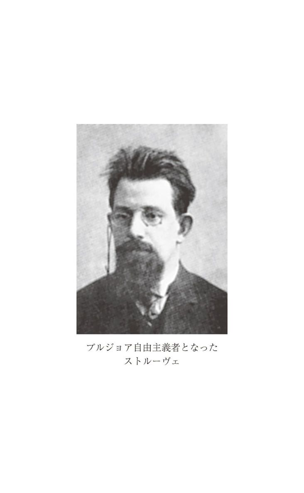
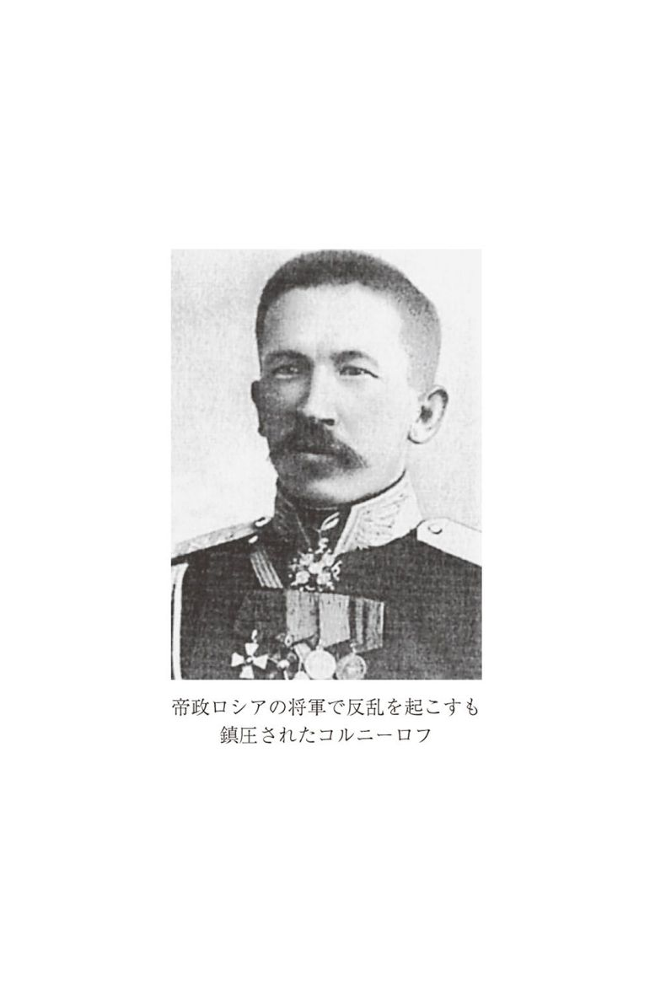

| レーニン | |
| トロツキー | |
| (2007) | |
レーニン
トロツキー
森田成也訳
Title: О Ленине: Материалы для биографа
1924
Author: Л. Д. Троцкий
凡例
１．本書の底本は以下の通りである。
本体......Л. Д. Троцкий,О Ленине: Материалы для биографа, Москва, 1924.
付録......
１．Л. Д. Троцкий,Запад и восток, Москва, 1924.
２．Л. Троцкий, Верное и фальшивое о Ленине: Мысли по поводу горьковской характеристики Ленина,Правда, 7 Октября 1924г.
３．Л. Троцкий, Маленькие о большом,Правда, 8 Октября 1924г.
４．Л. Троцкий, Избыток усердия,Большевик, No. 12--13, 20 Октября 1924.
５．Л. Троцкий, Два тори о революционере: Черчилль и Биркенхед оЛенине, ЛевТроцкий,Портреты революционеров, Редактор--составитель Ю. Г. Фельштинский, Московский рабочий, 1991.
２．翻訳にあたっては以下の文献をそれぞれ参照した。
本体......トロツキー『レーニン』、松田道雄・竹内成明訳、河出書房新社、一九七二年
Leon Trotsky, Lenin: Notes for a Biographer, trans. by Tamara Deutscher, New York, 1971.
付録......１．トロツキー『永久革命の時代──トロツキー・アンソロジー』、河出書房新社、一九六八年
２．本体と同じ
３．本体と同じ
４．なし
５．トロツキー『革命の想像力──トロツキー芸術論』、杉村昌昭・金井毅訳、柘植書房、一九七八年
３．（ ）は基本的に原著者のもの、〔 〕は訳者による補い。ただし、新聞雑誌名や組織名などのカタカナ表記が最初に登場するときは、その日本語訳を（ ）で入れておいた。たとえば、「エスエル（社会革命党）」『ザリャー（黎明）』など。またロシア人の人名の場合、一般に普及している姓やペンネームで登場する以外にも、名前と父姓で登場する場合がしばしばあるが、読者の便宜を考えて適宜その後に（ ）して姓ないし通称を入れておいた。たとえば、「ウラジーミル・イリイチ（レーニン）」など。
４．原注箇所には＊を付し、直後の段落の前に原注部分を訳した。
５．訳注は（１）（２）（３）......という記号で記し、本体部分に関しては、「レーニンと旧『イスクラ』」および「一九一七年十月」のそれぞれの後にまとめて記載した。付録部分に関しては、各付録の末尾に訳注を記載した。
６．本文および訳注部分において既訳のある文献からの引用に関しては、その既訳を参照したが、必ずしも訳文は既訳に従っていない。
７．人名についてはまとめて巻末に「人名一覧」として説明しておいた。ただし、架空の人物とトロツキーは除いてある。
８．読者の読みやすさを考えて、改行の数を原著よりも増やしている。
９．引用文中の（......）は省略部分を意味している。
『レーニン』 目次
◎ご注意
本作品の全部または一部を無断で複製、転載、改竄、公衆送信すること、および有償無償にかかわらず、本データを第三者に譲渡することを禁じます。
個人利用の目的以外での複製等の違法行為、もしくは第三者へ譲渡をしますと著作権法、その他関連法によって処罰されます。
レーニン──伝記のための覚書
本書は完成されたものではない。しかも二つの意味でそうだ。まず第一に、本書はレーニンの伝記ではないし、レーニンの性格描写を行なうものでも、レーニンの見解や行動方法の完全な記述を与えるものでもない。本書はただ、将来誰かがまとまった著作を書くための（もしかしたらそれは本書の筆者かもしれないが）単なる大雑把な材料、素描、スケッチにすぎない。しかしながら、このような「下書き」的なアプローチは不可避であり必要でもある。通俗的な伝記や一般的な性格描写と並んで、現在、われわれの目に映ったままのレーニンの生活と個性にまつわる個々のエピソードや個々の特徴をしっかりと記憶に刻みつける、詳細で入念な作業も必要になっているからである。本書の最も主要な部分は、一五年の月日で隔てられた二つの時期における筆者の思い出にもとづいている。旧『イスクラ（１）（火花）』の最後の半年と、十月革命をあいだに挟んだ決定的な一年、すなわち一九一七年半ばから一九一八年秋までの時期である。
しかし、本書は他のより狭い意味でも未完成である。状況が許せばいずれこの著作に手を加えて、修正や訂正をほどこし、より正確なものにし、新しいエピソードと章を加筆したいと思っている。病気のせいで実務的な活動から一時的に離れる機会を得たおかげで、本書で書かれた多くのことを記憶のうちに呼び覚ますことができた。最初のスケッチを読むと、もつれた記憶の糸がますますほぐれ、新しいエピソードを思い出した。それは、レーニンの生活と関係し彼と結びついているというだけですでに貴重なものだ。しかし、このような執筆方法には不都合な点がある。作品がいつまで経っても完成しないことだ。それゆえ私は、ある一定の時点で原稿の執筆を機械的に中断し、それを世に出すことにした。それと同時に、すでに述べたように、この著作をいつか加筆修正する権利を留保しておく。言うまでもなく、私が取り上げた時期の事件やエピソードに参加したすべての人々が、あれこれの修正やあれこれの回想を出してくれれば非常にありがたい。
なおここであらかじめ断っておくが、現在の喫緊の問題にあまりに密接に関連している事情については、あえて取り除いておいた。
本書は回想の形を取った二つの主要部分からなるが、それに加えて、レーニンの人となりに言及した論文や演説、あるいは演説の一部を収録しておいた。
回想を書くにあたって、本書で対象とした時期に関係する資料をほとんど用いなかった。というのも、私は、レーニンの生涯のある特定の時期に関する完成された歴史的叙述を提供することを課題としたのではなく、直接の源泉にもとづいて一定の資料となるものを提供することだけを課題としていたからである。この場合、その源泉とは本書の筆者に他ならない。したがって、自分の記憶のみを典拠とする方がよいと考えたのだ。
本書の執筆が基本的に終わった後で、『レーニン全集』の第一四巻（２）とブレスト・リトフスク講和に関する同志オヴシャニコフの本を読み直し、若干加筆した。だがそれはごくわずかなものにすぎない。
Ｌ・トロツキー
追記 書き終わってから読み返してみて、回想の中で自分がレニングラードをペトログラードと呼んだり、ペテルブルクと呼んだりしているのに気づいた。他方、同志たちの中には、以前の時期のペトログラードをレニングラードという現在の言い方で呼んでいる者もいる。しかしこれはおかしい。たとえば、レーニンがレニングラードで逮捕されたと言えるだろうか？ 明らかに、レニングラードでレーニンを逮捕することなどできない。ピョートル一世がレニングラードを築いたと言うことはなおさら不可能だ。おそらく、何年、何十年と経てば、この新しい都市名も、固有名詞一般がそうであるように、現実的な歴史的意味を失うだろう。しかし、今のところは、ペトログラードは一九二四年一月二四日になって初めてレニングラードと呼ばれるようになり、それ以前はそう呼ばれていなかったという事実は、あまりにもはっきりと鮮やかに感じられる。それゆえ、この回想では、レニングラードとは呼ばずに、本書で記述されている諸事件が展開されていた当時の名前で呼ぶことにした。
Ｌ・Ｔ
一九二四年四月二一日
訳注
（１）旧『イスクラ（火花）』......『イスクラ』はレーニン、プレハーノフ、マルトフ、ザスーリチ、アクセリロート、ポトレソフの六名を編集部員として一九〇〇年末から国外の亡命地で発行されていたが、一九〇三年の第二回党大会でロシア社会民主労働党がボリシェヴィキとメンシェヴィキに分裂した後に、『イスクラ』は事実上メンシェヴィキの機関紙となった。レーニンが編集に関与していた時期の『イスクラ』を旧『イスクラ』と呼び、メンシェヴィキの機関紙となった時点からの『イスクラ』を新『イスクラ』と呼ぶ。この新『イスクラ』は一九〇五年革命の最中まで国外で発行が続けられる。 （本文へ戻る）
（２）『レーニン全集』の第一四巻......『レーニン全集』は何度も新しい版が出されており、しだいに巻数が増えていっている。最新版は第五版だが、ここでは第一版を指しており、大月書店から出されている邦訳『レーニン全集』（第四版）とは巻数と時期とがずれている。 （本文へ戻る）
主要な登場人物
レーニン（ウラジーミル・イリイチ）......旧『イスクラ』編集部の一人で、ポトレソフ、マルトフとともに「若手派」の一人。後にボリシェヴィキの指導者に。
クルプスカヤ（ナデージダ・コンスタンチノヴナ）......レーニンの妻。国内の同志たちとの連絡などの実務的仕事を引き受ける。
アクセリロート（パーヴェル・ボリソヴィチ）......旧『イスクラ』編集部の一人で、プレハーノフ、ザスーリチとともに「古参派」の一人。後にメンシェヴィキ。
ザスーリチ（ヴェーラ・イワノヴナ）......旧『イスクラ』編集部の一人で、プレハーノフ、アクセリロートとともに「古参派」の一人。女性革命家で、かつてナロードニキの「人民の意志」派の一員であった頃、ペテルブルクの総督（知事）のトレポフを狙撃したことがある。後にメンシェヴィキ。
ストルーヴェ......元マルクス主義者で、その後、ブルジョア自由主義者となる。
プレハーノフ（ゲオルギー・ヴァレンチノヴィチ）......旧『イスクラ』編集部の一人。ロシア・マルクス主義の父。「労働解放団」の創始者の一人。党の分裂直後はボリシェヴィキで、すぐにメンシェヴィキに。
ポトレソフ......旧『イスクラ』編集部の一人で、レーニン、マルトフとともに「若手派」の一人。後にメンシェヴィキ。
マルトフ（ユーリー）......旧『イスクラ』編集部の一人で、レーニン、ポトレソフとともに「若手派」の一人。後にメンシェヴィキの指導者に。
「一九〇三年の分裂はいわば現実の先取り（１）だった......」
（一九一〇年の対話でのレーニンの発言）
将来レーニンの伝記に取り組む偉大な伝記作者にとって、旧『イスクラ』の時期（一九〇〇～一九〇三年）は疑いもなく、特別の心理学的関心を喚起するとともに、多大な困難をも感じさせる時期であろう。というのも、まさにこの短い数年間にレーニンはレーニンになったからである。といっても、彼がその後成長しなかったということではない。反対である。彼は十月革命前も、十月革命後も、成長しつづけた。しかもとてつもないスケールで！ しかし、この成長はすでにより有機的なものであった。たしかに、地下活動の時期から一九一七年一〇月二五日の権力獲得にいたる飛躍は偉大なものであった。しかし、それは人間の外的で、いわば物質的な飛躍であり、その飛躍についてはすでにその重みも規模も十分に測られている。それに対して、第二回党大会（２）での分裂に先立つ成長は、表面的な観察からは見えない──それだけになおさら決定的な──内的飛躍なのである。
この回想は、将来の伝記作者に、ウラジーミル・イリイチ（レーニン）の精神的発展におけるこのきわめて重要で意義深い時期に関わる若干の資料を提供することを目的としている。この文章を書いている現在、あの時期からすでに二〇年以上も経っており、しかも、それは人間の記憶にとってはなはだ厄介な激動の年月だった。それゆえ、ここで語られていることが、実際に起こったことをどれほど正確に再現しているのか、そういう心配が生じるのも無理はない。実を言うと、このような心配は私自身にもあるし、この仕事のあいだずっと付きまとったものだった。そうでなくても、ぞんざいな回想や不正確な証言が多すぎるのだから！ この回想を執筆しているあいだ、文献や便覧や資料の類はいっさい手にとらなかった。しかし、その方がよかったと思っている。もっぱら自分の記憶に頼らざるをえなかったが、そうすることでこの作業が独立したものとなり、後から無意識になされる修正を多少なりとも免れたのではないかと思っている。この種の無意識の修正は、最も批判的な自己検証があるもとでも避けがたいものなのだ。そして、将来の研究者が、本書のテーマに関わる文献や一般に当時の時代に関係する諸資料を手にして取り組むのなら、この検証もやりやすくなるだろう。
ところどころで私は当時の会話や議論を対話形式で叙述している。言うまでもなく、二〇年あまり前の会話を正確に伝えることができるとは思わない。しかし、本質的な点ではまったく正確に伝えていると思っているし、若干の最も印象的な表現に関しては逐語的に伝えていると思っている。
本書の課題はレーニンの伝記のための一資料を提供することであり、したがって、きわめて重大なことが課題となっているのだから、自分の記憶の特質について一言費やすことも許されるだろう。私は街並みや家の配置に関しては覚えるのが非常に苦手である。たとえば、ロンドンでは、レーニンのアパートと私のアパートとのあいだの比較的短い距離でさえ何度も道に迷った。かつては人の顔を覚えるのも苦手であったが、この点に関してはその後大いに進歩が見られた。その代わり、思想やその結合、思想的内容の会話に関しては非常に記憶力がよかったし、今もそうだ。このような評価が主観的なものではないことは、何度となく検証の機会があったことで私は確信することができた。私と同じ会話を聞いた他の人物は、私ほど正確にはその会話を再現できなかったし、私の訂正を受け入れた。さらに次のような事情もつけ加えておかなければならない。私は青二才の田舎者としてロンドンにやってきて、あらゆることをできるだけ速やかに知り理解しようという強い意欲を持っていた。レーニンやその他の『イスクラ』編集部員との会話が私の記憶に強烈に刻み込まれたのも当然である。この点は、以下に展開される回想の価値を評価するにあたって伝記作者にぜひとも考慮していただきたい点である。
私がロンドンに到着したのは、一九〇二年の秋──たぶん一〇月──の早朝だった。半ば身ぶり手ぶりで雇った辻馬車屋は、紙に書いた住所をたよりに目的地まで送り届けてくれた。その目的地とはウラジーミル・イリイチのアパートである。あらかじめ教えられていた通り（たぶんチューリヒで教えられたと思う）、ドアノッカーを決まった回数たたいた。ドアを開けてくれたのは、私の記憶では、ナデージダ・コンスタンチノヴナ・クルプスカヤだった。明らかに私のノックでベッドから起き出してきたのだった。時間はまだ早く、もっと世慣れていて、いわば文化的な社会生活にもっと慣れ親しんだ人間なら、まだ夜も明けきらないうちに他人の家のドアをノックしたりしないで、一、二時間ほど駅でおとなしく時間をつぶしたことだろう。だが、私はまだ、ヴェルホレンスクから脱出したときの昂ぶった気持ちでいっぱいだった。チューリヒでも同じ荒っぽいやり方でアクセリロートのアパートを騒がせたのであった。もっともその時は明け方ではなく真夜中だったが。
ウラジーミル・イリイチはまだベッドの中だった。その顔は愛想よかったが、無理からぬ当惑の色が混じっていた。私たちの最初の会見、最初の会話はこのような状況のもとで行なわれた。ウラジーミル・イリイチも、ナデージダ・コンスタンチノヴナも、すでにクレール（Ｍ・Ｇ・クルジジャノフスキー）からの手紙で私のことを知っていた。彼はサマラで、いわば公式に私を「ペロー（ペン）」という通称で『イスクラ』組織に迎え入れてくれた人物である。だから、私が着いたとき、「ペローが来たわ」という声で迎えられたのだった。
たぶん台所の食卓でだったと思うが、お茶をごちそうになった。レーニンはそのあいだに着替えをした。私は流刑地からの脱走の模様について話し、イスクラ派の国境越えのルートのまずい状況について不満を訴えた。国境越えのルートはエスエル（社会革命党（３））の高等中学生の手中に握られていた。この高等中学生は、当時繰り広げられていた激しい論争のせいで、イスクラ派にあまり好感を持っていなかった。そのうえ、非合法の運び屋たちは、運び賃のあらゆる相場を越えて、私から容赦なくふんだくった。私は、ナデージダ・コンスタンチノヴナに、連絡先や密会場所の住所の入った小さな包みを渡し、不適切になった連絡先を廃棄する必要性があることを伝えた。私は、サマラ・グループ（クレールらのグループ）の委任を受けてハリコフ、ポルタワ、キエフを訪問し、ほとんどどこでも、少なくともハリコフとキエフでは、きわめて脆弱ながら組織的な結びつきを何とか確立することができた。
その日の朝だったか翌日だったか覚えていないが、ウラジーミル・イリイチといっしょにロンドンを長時間散歩してまわった。彼は私をウェストミンスター（４）（外側から）やその他いくつかの有名な建物に案内してくれた。そのときレーニンが正確にどう言ったか覚えていないが、「あれが彼らの有名なウェストミンスターだ」といったニュアンスで語っていた。「彼らの」というのはもちろん、「イギリス人の」という意味ではなく、「敵の」という意味である。こうしたニュアンスはあえて強調したものではなく、すぐれて本能的なものであり、その声色によりはっきりと現われていた。何らかの文化的価値とか新しい成果とかについて、あるいは大英博物館の施設や、『タイムズ』の情報の豊富さについて、あるいは、ずっと後年に、ドイツの大砲やフランスの飛行機について語るとき、レーニンはいつもそういう口調だった。彼らは知っている、彼らは持っている、彼らは何々をした、何々を達成した、だが彼らは敵なのだ！ 搾取階級の目に見えない影が、彼の目から見れば、あらゆる人間文化に投じられているのだ。そして彼はいつもこの影を白日のようにはっきりと感じとっていた。
記憶によるかぎりでは、当時の私は、ロンドンの建築物にほとんど関心を示さなかった。ヴェルホレンスクからそもそも生まれて初めての外国にいきなりやってきた私にとって、ウィーンもパリもロンドンもきわめて大雑把な印象を与えただけであり、ウェストミンスター宮殿のような「細部」にまで気を配る余裕はまだなかった。ウラジーミル・イリイチにしても、もちろん、そんなことのために長い散歩に連れ出したわけではなかった。彼の目的は、私のことをよく知り、それとなく試験することだった。そして試験は実際、「全科目」にわたっていた。
私は彼とさまざまな問題について話した。レナ川の流刑囚の構成やその内部でのグループ分けについてである。積極的な政治闘争や中央集権的組織やテロに対する態度が、当時の分裂の基本線であった。
「それで、ベルンシュタイン主義をめぐって理論的な意見の相違はなかったのかね」──ウラジーミル・イリイチは尋ねた。
私は、モスクワの中継監獄やその後の流刑地でベルンシュタインの本とカウツキーの回答（５）を読んだと言った。ベルンシュタインを支持する者はわれわれマルクス主義者の間では皆無だった。カウツキーの正しさをまるで自明のことのようにみなした。しかし、当時、国際的規模で展開されていた理論闘争と、流刑地で繰り広げられていた組織的・政治的論争とのあいだに、私たちはいかなる結びつきも見出しておらず、そのことについて考えてもみなかった。少なくとも、レナ川の流刑地に『イスクラ』の各号とレーニンの小冊子『何をなすべきか』が届くまではそうだった。
私はさらに、ボグダーノフの最初の哲学的諸著作を読み、大いに興味をそそられたことを話した。そのときレーニンが語ったことの趣旨を非常にはっきりと覚えている。『歴史的観点から見た自然の根本原理（６）』という著作については非常にいいと思ったが、プレハーノフはこれは唯物論的ではないと言って反対している、と。当時レーニンはこの問題について自分の意見をまだ持っておらず、プレハーノフの哲学的権威に敬意を表しつつもためらいがちに彼の見解を紹介しただけだった。当時、私はプレハーノフの評価に大いに驚かされたものだ。
レーニンはまた経済学についても尋ねた。私は、モスクワの中継監獄でレーニンの著作『ロシアにおける資本主義の発展（７）』を集団学習したこと、流刑地でマルクスの『資本論』にとりかかったが、第二巻で中断したことなどを話した。その話の中で、『ロシアにおける資本主義の発展』で用いられている膨大な量の統計資料に言及した。
「モスクワの中継監獄でこの長大な著作について驚きをもって何度も語りあったものです」
「そうだ、あれは何といっても一朝一夕にできたものではないからね」とレーニンは答えた。
だが、若い同志たちが自分の経済学上の最も重要な著作に強い関心を示したことに気をよくしているようだった。
われわれはまた、マハイスキ主義（８）について、流刑地でそれが与えた印象や、多くの者がそれに惹かれたことなどを話した。レナ川をつたって「上流から」流刑地に入ってきたマハイスキのこんにゃく版の最初の論文が、社会民主党の日和見主義に対する鋭い批判として、われわれの大多数に強い印象を与えたこと、それがカウツキーとベルンシュタインとの論争によって引き起こされたわれわれの思考の歩みと一致していたことなどを話した。
第二論文では、マハイスキは、マルクスの再生産表式の「仮面をはぎとり」、それがインテリゲンツィアによるプロレタリアートの搾取を理論的に正当化するものに他ならないと書いていた。それはわれわれのあいだに理論的怒りを引き起こした。後に受けとった最後の第三論文は、積極的綱領を載せており、経済主義（９）の残りかすをサンディカリズムの萌芽と結びつけていたので、まったく首尾一貫していないという印象を受けた。
私の今後の仕事に関しては、この時の会話ではごく一般的に触れられただけであった。私は何よりも出版された諸文献について学び、その後で再び非合法にロシアに帰って革命運動に従事するつもりだった。まずは「周囲の状況を見きわめる」べきだということになった。
私の住む場所としてナデージダ・コンスタンチノヴナ（クルプスカヤ）が案内してくれたのは、数ブロック離れた所にあるアパートだった。そこには、ザスーリチ、マルトフ、それに『イスクラ』の印刷所を管理していたブリュメンフェリトが住んでいた。そこには、私のための空き部屋もあった。このアパートは、イギリス式に、各部屋が横にではなく縦に並んでいた。いちばん下の階に女主人が住み、上の各階にそれぞれ間借り人が住んでいた。自由に出入りできる共同の部屋も一つあり、プレハーノフは、そこを初めて訪れたあと、この部屋を「巣窟」と呼んだ。その部屋はひどく散らかっていて、その責任は主としてヴェーラ・イワノヴナ・ザスーリチにあったが、マルトフにも罪なしとは言えなかった。住人たちはそこでコーヒーを飲んだり、いつ終わるともしれぬ雑談にふけったり、煙草を吸ったりしていた。そこから「巣窟」という名前がついたのである。
こうして、私の生涯における短いロンドン時代が始まった。私は、『イスクラ』の既刊号と雑誌『ザリャー（黎明（10））』をむさぼるように読んだ。このころから私は『イスクラ』に寄稿しはじめた。
シリッセリブルク要塞監獄の二〇〇周年に寄せた小論（11）を書いたが、これが『イスクラ』のデビュー作となった。その小論の最後はホメロスの言葉、より正確にはホメロスを訳したグネディチの言葉で締めくくった。革命がツァーリズムの上にかけた「払いのけることのできない手」というものだった（私はシベリアからの脱出の際に列車の中で『イリアス』を読んだのだった）。この小論はレーニンに気に入られた。しかし、「払いのけることのできない手」については無理からぬ疑問を抱いていて、悪気のない笑みを浮かべながらそのことを私に伝えた。「でもあれはホメロスの詩の一節なんです」と弁解したが、古典からの引用は必要ではないという点に快く同意した。この小論は『イスクラ』に掲載されたが、「払いのけることのできない手」という言葉は削られていた。
同じ頃、私はホワイトチャペル〔ロンドンの労働者地区〕で最初の講演を行ない、ナロードニキの「老」チャイコフスキー（当時彼はすでに老人だった）やアナーキストのチェルケーゾフ（彼もすでに若くなかった）と論戦を交わした。その結果、これらの名だたる白髪の亡命家たちがこれほどまでに馬鹿げた議論を展開したことに心底驚かされた...。
ホワイトチャペルとの関係を取り計らってくれたのは、ロンドンの「古くからの住民」であるアレクセーエフだった。彼は亡命マルクス主義者で、『イスクラ』編集部と近い関係にあった。彼は、私のイギリス生活においてあれこれ世話を焼いてくれ、総じて私にとってのあらゆる情報の源だった。今でも覚えているが、ホワイトチャペルへの行き帰りにアレクセーエフといろいろと話し込んだのち、アレクセーエフの二つの意見をウラジーミル・イリイチに伝えた。一つはロシアにおける国家体制の交替に関してであり、もう一つはカウツキーの最新著書についてである。ロシアでは、専制政府のリジッドさゆえに、政権交替は漸次的な形ではなくきわめて急激な形で起こるだろう、とアレクセーエフは言った。リジッドさ（過酷さ、強固さ、頑固さ）という外来語を使ったのをはっきりと覚えている。
「うむ、彼は正しいかもしれないな」、レーニンは話を聞いてそう言った。
アレクセーエフのもう一つの意見はカウツキーの著作『社会革命の翌日（12）』についてであった。私は、レーニンがこの著作に非常に大きな関心を寄せていたことを知っていた。それをすでに二度読み、いま三度目を読んでいるところであるのを彼自身から聞いていた。そのロシア語版を編集したのも彼であった。私もちょうど、ウラジーミル・イリイチに勧められて、それを入念に研究したところだった。ところが、アレクセーエフはカウツキーのその著作を日和見主義的だとみなした。
「馬鹿め」、レーニンは不意にそう言い、腹立たしそうに口をとがらせた。不満なときにいつもそうする癖があった。
アレクセーエフ自身は、レーニンのことを非常に尊敬していた。私にこんなことを言ったことがある。
「思うに、革命にとってレーニンはプレハーノフよりも重要だ」
このことはもちろんレーニンには言わなかったが、マルトフには話した。マルトフは何も答えなかった。
『イスクラ』と『ザリャー』の編集部は、周知のように六人で構成されていた。三人の「古参派」、プレハーノフ、ザスーリチ、アクセリロートと、三人の「若手派」、レーニン、マルトフ、ポトレソフ、である。プレハーノフとアクセリロートはスイスに住んでおり、ザスーリチは若手組とともにロンドンに住んでいた。ポトレソフはこの時期、ヨーロッパ大陸のどこかに出かけていた。このように編集部員が各地に分散していたことは、技術上の不便さがあったはずだが、レーニンはまったく気にしていなかった。むしろその反対だった。ヨーロッパ大陸に出発する前に、レーニンは私に編集部の内部事情について言葉を選びながら教えてくれた。彼が言うには、以前プレハーノフが編集部員全員がスイスに移り住むことを提案したが、レーニンは、仕事の妨げになるという理由でそれに反対したとのことであった。このとき初めて、私は、編集部員たちがロンドンにとどまっている理由が警察対策のためばかりでなく、組織上・人間関係上の事情によるものであることをおぼろげながらも理解した。
レーニンは、日常の組織的・政治的活動において、できるだけ古参派から、何よりもプレハーノフから自立しようとつとめていた。レーニンはさまざまな問題をめぐって、とりわけ党の綱領草案の作成をめぐってすでにプレハーノフと激しく衝突していた。こういう場合に仲裁者となるのは、ザスーリチとマルトフだった。ザスーリチはプレハーノフの介添人となり、レーニンのためにその役割を果たしたのはマルトフだった。この二人の仲裁者はもともと非常に協調的な傾向の持ち主であったし、それに加えて、お互いに仲が良かった。
綱領の理論的部分をめぐってレーニンとプレハーノフとのあいだに激しい衝突があることを、私は徐々にのみ理解していった。覚えているが、ウラジーミル・イリイチが、発表されたばかりの綱領（たしか『イスクラ』の第二五号（13）に掲載された）についてどう思うか私にきいてきた。しかし私は綱領を全体として理解していたので、レーニンが関心を持っていたような内的な諸問題について答えることができなかった。意見の相違は次のような点で起こっていた。レーニンの側は、資本主義の基本的諸傾向──生産の集中、中間階層の没落、階級分化、等々──の性格規定をもっと厳格かつ断定的に行なうべきだとの意見であり、プレハーノフの側は、これらの問題に関してはもっと条件的で慎重であるべきだとの意見だった。綱領には周知のように、「多かれ少なかれ」という言葉が散見されたが、それはプレハーノフによるものであった。
マルトフとザスーリチから聞いたところによると、プレハーノフ案に対抗して提出されたレーニンの当初の綱領草案は、プレハーノフの側からきわめて辛辣な評価を受けた。それは、こういう場合いかにもゲオルギー・ヴァレンチノヴィチ（プレハーノフ）らしい居丈高で嘲笑的な調子のものだった。しかし、レーニンがそれで落ち込んだり、たじろいだりすることはもちろんなかった。両者の闘争は非常に劇的な様相を呈した。ヴェーラ・イワノヴナ（ザスーリチ）は、彼女自身が語ったところによると、レーニンに次のように言った。
「ジョルジュ（プレハーノフ）はボルゾイ犬〔ロシア産の猟犬〕ね。引っ搔いたり、嚙みついたりするけど、獲物を放してしまう。でもあなたはブルドッグだわ。嚙みついたら最後けっして獲物を放さないもの」
このフレーズは、ザスーリチの締めくくりの言葉とともに非常によく覚えている──「彼（レーニン）はこの言い方がやけに気にいったようね。『嚙みついたら放さないだって？』って、うれしそうに問い返していたもの」。そう言ってヴェーラ・イワノヴナは、その時のレーニンの独特のイントネーションを悪気なく真似してみせた。
私がロンドンにいるあいだにプレハーノフがやってきてしばらく滞在した。そのとき初めて彼に会ったのだった。彼はわれわれの共同のアパートにやってきて、「巣窟」にも顔を出したが、あいにく私は外出中だった。
「ジョルジュが来たわよ」、アパートに戻るとヴェーラ・イワノヴナが私に言った──「あなたに会いたがってるわよ、彼のところに顔を出してきて」
「どのジョルジュです？」、私は当惑げに聞き返した。自分が知らないだけで、きっと有名な人物なのだろうと思ったのだ。
「プレハーノフよ。私たちはジョルジュって呼んでるの」
その晩、私は彼のところに行った。小さな部屋には、プレハーノフの他に、かなり有名なドイツの作家で社会民主党員でもあるベールとイギリス人のアスキューが座っていた。椅子がもうなかったので、私はどこに座っていいのかわからなかった。プレハーノフは少し困った様子で、ベッドに腰掛けるよう言った。私はそれはごく当然のことだと思って、頭のてっぺんから足のつま先までヨーロッパ人であるプレハーノフがそのような非常手段に訴えるのはよっぽどのことなのだということに気づかなかった。会話はドイツ語でなされたが、プレハーノフはあまり得意でなかったので、ごく短い発言をするにとどまった。ベールは最初、イギリス・ブルジョアジーがどのようにして優秀な労働者を手なずけることに成功したのかについて語り、次にフランス唯物論のイギリスにおける先駆者について話した。ベールとアスキューはしばらくして帰っていった。ゲオルギー・ヴァレンチノヴィチは、私が彼らといっしょに帰るものだとばっかり思っていたようだ。時間も遅かったし、アパートの女主人に話し声で迷惑をかけたくなかったのだ。しかし私は反対に、本格的な話は始まったばかりだと思っていた。
「ベールの話は非常に面白かったですね」
「ああ。イギリス政治についての話は面白い。だが哲学の話はナンセンスだ」、プレハーノフは答えた。
いっこうに私が帰ろうとしないのを見てとったゲオルギー・ヴァレンチノヴィチは、近所にビールを飲みに行こうと誘った。彼はいくつかの一般的な質問をし、愛想もよかったが、その愛想のよさの裏に、少しいらいらとした気持ちが隠れているのが見て取れた。彼の注意も散漫であるように感じられた。単に日中の活動で疲れているだけだったのかもしれない。だが私は不満と残念な気持ちを抱えたまま帰ることになった。
ロンドン時代には、後のジュネーブ時代でもそうだったが、レーニンと会う機会よりも、ザスーリチやマルトフと会う機会の方がはるかに多かった。ロンドンでは同じアパートに住んでいたし、ジュネーブでは昼食と夕食をいつも同じレストランでとっていたので、マルトフやザスーリチとは一日に何度も顔を合わせていたのに対し、レーニンは家庭的な暮らしをしていたので、公式の会議の場以外でレーニンと会うことは、常にちょっとした事件のようなものだった。
ザスーリチは実に独特の人間であり、独特の魅力の持ち主だった。彼女は非常に遅筆で、創造の真の苦しみに悩まされていた。
「ヴェーラ・イワノヴナの場合は、書いているんじゃなく、モザイクを組み合わせているんだ」とウラジーミル・イリイチはそのころ私に言ったものだ。実際、彼女は紙の上に別々にフレーズを書きとめて、部屋の中を何度もせかせかと歩き回り、スリッパを引きずり足踏みし、手巻きのタバコをたえず吸い、吸殻や吸い終わっていないタバコを部屋の隅や窓枠や机の上にところかまわず投げ捨て、灰を自分の上着や手、原稿、コップの中のお茶、時には話し相手にまでまき散らした。彼女は、運命のいたずらでマルクス主義を接木された古い急進的インテリゲンツィアであったし、最後までそうであった。
ザスーリチの論文を見ると、彼女がマルクス主義の理論的要素を非常によく取り入れていることがわかる。しかし、それと同時に、一八七〇年代のロシア急進主義者の道徳的・政治的土台は彼女の中で最後まで解体することなく残っていた。内輪の会話では、マルクス主義の周知の方法や結論にあえて強く異を唱えることがあった。「革命家」という概念は彼女にとって階級的内容とは別の独特の意味合いがあった。
彼女の論文「ブルジョア出身の革命家（14）」について会話したときのことを覚えている。私が「ブルジョア民主主義革命家」という表現を用いると、「そうじゃないわ」と少しいらだった、いやむしろ少し悲しげなニュアンスを込めてヴェーラ・イワノヴナは言った。
「ブルジョア的でもプロレタリア的でもなく単に革命家よ」。そしてこうつけ加えた──「もちろん、うまく位置づけられないものを何でも小ブルジョアジーに分類するのなら小ブルジョア革命家だと言うこともできるでしょうけどね」
当時、社会民主主義の思想的中心地はドイツであり、われわれはみな、ドイツ社会民主党における正統派と修正主義者との闘争を注意深く追っていた。だがヴェーラ・イワノヴナは冷淡で、次のようにさえ言った。
「いつだって同じよ。あの人たちは修正主義を片づけ、マルクスを復活させ、多数党になっても、それでもやっぱりカイザー〔ドイツ皇帝〕と共存してやっていくでしょうよ」
「『あの人たち』って誰のことです、ヴェーラ・イワノヴナ？」
「ドイツ社会民主党員のことよ」
ただしこの点に関しては、ヴェーラ・イワノヴナは、当時そう思われたほど間違ってはいなかった。もっとも、実際の過程は、彼女が考えていたのと違った形で、そして違った理由で起こったのだが。
ザスーリチは、切り取り地返還の綱領（15）にも懐疑的であった。それを否定するわけではなかったが、悪気はないとはいえ少し馬鹿にしていた。これに関して一つのエピソードを思い出す。大会の少し前に、コンスタンチン・コンスタンチノヴィチ・バウアーという人物がジュネーブにやって来た。彼は古参マルクス主義者の一人だったが、非常にむらのある気分屋の男で、いっときストルーヴェと親しかったが、ジュネーブに来た時には『イスクラ』と『オスヴォボジュデーニエ（解放（16））』とのあいだで動揺していた。ジュネーブで『イスクラ』に接近したが、切り取り地綱領は受け入れなかった。そこで彼は、以前から知り合いだったレーニンに会いに行った。しかし、この問題で納得することなく帰ってきた。たぶん間違いないと思うが、ウラジーミル・イリイチは、この男のハムレット的な性格を知っていて十分に納得させる労をとらなかったのだ。私はバウアーとは流刑地にいたときからの知り合いだったので、この不幸な切り取り地問題について長く話し込んだ。エスエルをはじめ『イスクラ』の農業綱領に反対する人々との半年にわたる絶え間ない論争で得た論拠をすべてかき集め、それこそ汗だくになって説明した。すると、ちょうどその日の夜、マルトフ（たぶん彼だったと思う）は、私も出席していた編集部会議の場で、こう報告した。バウアーがやってきて、今度こそ完全に自分はイスクラ派になったと宣言した。トロツキーがすべての疑問を晴らしてくれたのだ、と。
「それで、切り取り地のことも納得したの？」、ザスーリチは少し驚いたように尋ねた。
「とくに切り取り地のことで納得したそうだよ」
「かーわいそーに」とヴェーラ・イワノヴナがちょっと真似のできないイントネーションで発音したので、私たちはどっと笑った。
「ヴェーラ・イワノヴナは道徳や感情に流れるきらいがある」といつかレーニンが私に言ったことがある。ヴィルナの県知事ヴァーリがデモをした労働者たちを鞭打ちの刑に処したとき、彼女がマルトフといっしょになって個人的テロに傾いたからである。この一時的な「偏向」（現在ならそう呼ばれるだろうが）の痕跡は『イスクラ』のある号に見出すことができるだろう。なぜそんなことになったかというと、レーニンがヨーロッパ大陸の方に出かけていて留守のときに、マルトフとザスーリチがその号を出したのだった。
ヴィルナでの鞭打ち刑のニュースは、『イスクラ』受任者（17）の電報によってロンドンに知らされた。ヴェーラ・イワノヴナの中で、政治犯を鞭打ちの刑にしたトレポフをかつて銃撃した英雄主義的急進主義者の一面が目覚めた。マルトフも彼女を支持した。レーニンは『イスクラ』の最新号を手にしたとき、「これはエスエル主義への降伏の第一歩だ」と言って憤慨した。時を同じくしてプレハーノフからも抗議の手紙が届いた。以上のエピソードは私がロンドンに到着する以前に起こったことなので、事実関係に関して多少不正確な点はあるかもしれないが、事件の本質についてはよく覚えている。
「もちろん」とヴェーラ・イワノヴナは私との会話の中で言った──「ここで問題になっているのは、システムとしてのテロ（18）ではないわ。でも、テロによって鞭打ちの刑をやめさせることができるのよ...」
ザスーリチはきちんと系統だった議論のできない人だった。公の場で演説するとなるとなおさら無理だった。彼女は議論の相手が出す論拠にけっして直接答えようとしなかった。彼女は自分の中で議論をすっかり組み立て、それから興奮しながら一気にまくしたてるのだが、勢いあまってむせてしまうほどだった。しかも彼女は、自分に反対している相手に向けて話すのではなく、きっと自分に賛成してくれるだろうと思われる人物の方を向いて話すのである。討論が議長のいる公式のものである場合には、ヴェーラ・イワノヴナはけっして演説者リストに加えられなかった。というのも彼女が何かをしゃべろうとすれば、爆発的にしか話せなかったからである。そしていざ話すとなると、演説者の予定をまったく無視し（彼女は最初からそうした手順をまったく馬鹿にしていた）、他の演説者も議長もさえぎって、自分の言いたいことを最後まで一気にまくしたてるのであった。
彼女の言うことを理解するためには、彼女の思考の流れを一生懸命追わないといけない。彼女の思考は──それが正しい場合も間違いである場合も──常に興味深いものであり、彼女独特のものだった。ヴェーラ・イワノヴナが、そのぼんやりとした急進主義、その主観主義、そのぞんざいさ等の点でウラジーミル・イリイチといかに対照的であったかは想像するにかたくない。両者のあいだにはまったく共感の要素がなく、体質的にまったく異なっていることを彼ら自身も感じていた。しかし、心理的洞察力に優れていたザスーリチはレーニンの実力を感じとっていて、この時すでに多少の反感を感じていた。それは「嚙みついたら放さない」という言い方にも表されていた。
編集部メンバーのあいだにある複雑な関係は少しずつ私にもわかってきたが、それでもなかなか理解しがたいことであった。すでに述べたように、私はまったくの田舎者としてこのロンドンにやって来た。あらゆる意味でそうだ。私は外国に行ったこともなければ、ペテルブルクにさえ行ったことがなかったのだ。モスクワでもキエフでも中継監獄ですごしたにすぎない。名だたるマルクス主義文筆家については論文を通じて知っていただけである。シベリアでは数部の『イスクラ』とレーニンの『何をなすべきか』を読んだ。『ロシアにおける資本主義の発展』の著者であるイリイン〔レーニンの筆名〕については、モスクワの中継監獄で、社会民主主義の輝ける星として漠然と耳にしただけだった（たぶんヴァノフスキーから）。マルトフについてはほとんど聞いたことがなく、ポトレソフにいたってはまったくだった。
ロンドンでは『イスクラ』と『ザリャー』の各号、および一般に外国の文献を熱心に研究した。そんなとき、『ザリャー』のある号で、優れた論文が私の目にとまった。それは労働組合の役割と意義について論じた論文で、プロコポーヴィチを批判したものだった（19）。
「このモロトフって誰です？」、私はマルトフに尋ねた。
「パルヴスだよ」
しかし私はパルヴスについて何も知らなかった。私は『イスクラ』を全体として受け入れており、そのころは『イスクラ』またはその編集部員のあいだに異なった傾向やニュアンスの差や影響力の大小等を見つけ出そうという気持ちはさらさらなく、それどころかそうすることに内心の敵意さえ感じていた。
あるとき、『イスクラ』の社説や囲み記事のいくつかに、無署名であるにもかかわらず「私」という代名詞で語られているものがあるのに気づいた。「これこれの号で私は書いた」とか「私はすでにこの点についてはこれこれの時に書いた」等々。これらの論文を書いたのは誰なのか尋ねると、それはすべてレーニンであることがわかった。彼と話をした際に、無署名の記事なのに「私」という代名詞で語るのは、文章表現上まずいのではないかと言ったことがある。
「どうしてまずいのかね」、彼は興味深そうに尋ねた。おそらく私が単なるその場の思いつきで言ったのでも、自分だけの意見として言ったのでもないと感じたのだろう。
「それはそのー」、私はお茶を濁した。なぜならその点について何か明確な意見など持っていなかったからである。
「僕はそうは思わんね」、レーニンはそう言うと謎めいた笑いを見せた。
当時、このような文章表現上の手法には、多少「自己中心主義」的なものを感じないこともなかった。だが実際には、たとえ無署名でも自分の論文を他と区別することは、最も近しい同僚たちの路線に納得していないことの表われであり、自分の路線を守る保険になった。まさにこの点に、小規模ながら、レーニンのあの頑強で粘り強い、あらゆる状況を利用し、形式的な配慮の前で立ち止まることのない、目的意識性を垣間見ることができるだろう。これこそが指導者としてのレーニンの基本的特徴をなすものなのである。
『イスクラ』の政治的指導者はレーニンであったが、新聞の主要な論説家はマルトフであった。彼は、まるで話すようにすらすらと際限なく書きまくった。レーニンは多くの時間を大英博物館の図書館の中ですごし、そこで理論的な問題に取り組んでいた。
あるとき、レーニンは図書館でナディジュディンを批判する論文を執筆した。この人物は、当時スイスに自分の小さな出版社を持っていて、社会民主党と社会革命党とのあいだにいる人物であった。ところが、マルトフはすでに前日の夜に（マルトフは主に夜に論文を書いていた）、ナディジュディンに関する長い論文を書いていて、それをレーニンに渡した。
「君はユーリー（マルトフ）の論文を読んだかね」、ウラジーミル・イリイチは大英博物館で私に尋ねた。
「読みました」
「どう思った？」
「よくできていると思います」
「ふむ、たしかによくできている。だが明確さが足りない。結論がないんだ。私も同じテーマで論文をここに書いたんだが、さてどうしたものか。そうだな、ユーリーの論文に対する補注にでもするか」
そう言って彼は、鉛筆でびっしり字が書き込まれた紙片を私に渡した。『イスクラ』の次の号には、レーニンの補注が加えられたマルトフの論文（20）が掲載された。論文にも注にも署名はなかった。この注が『レーニン全集』に入っているかどうか知らないが、これがレーニンによって書かれたものであることは、間違いなく保証できる。
その数ヵ月後、すでに大会を数週間後に控えたころ、編集部においてレーニンとマルトフとのあいだで、街頭デモに関する戦術の問題、より正確には、警察との武装闘争の問題をめぐって、エピソード的な意見の相違が生じた。レーニンは、武装した小部隊を編成し、労働者戦闘隊を警察との戦いに慣れさせるべきだと主張した。マルトフは反対した。論争は編集部全体に広がった。
「そんなことをすると集団テロのような事態になるのではないでしょうか？」、私はレーニンの提案についてそう意見を述べた（当時、エスエルのテロ戦術との闘争がわれわれの活動において大きな役割を果たしていた）。マルトフはこの論点を踏まえて、自分の考えを展開した。大衆デモを警察から防衛するすべを学ばなければならないが、警察との闘争のための特別のグループをつくる必要はないというものだった。プレハーノフはというと、私は──おそらく他の者もそうだと思うが──期待をもって見ていたが、自分の意見を言おうとせず、マルトフに決議案を書くよう提案した。そうすれば、書かれた文章を手に論点を検討することができるからだというのだ。このエピソードはしかしながら、大会と結びついた諸事件の波の中に飲み込まれてしまった。
レーニンとマルトフが、集会や会議の場以外の私的な場で話をしている姿を見ることは非常にまれであった。長い議論や無目的な会話というのはしばしば、亡命家同士の単なるゴシップや雑談に堕してしまいがちであり、マルトフの場合はとくにその傾向が強かったが、レーニンは当時からそういうものを嫌っていた。革命のこの最も偉大な機関士は、政治においても、理論活動に従事しているときも、哲学に取り組んでいるときも、外国語を勉強しているときも、誰かと会話しているときも、つねに同一の理念＝目的をつかんで離さなかった。彼は、歴史の実験室の中から生まれたおそらく最も確固たる功利主義者であった。しかし、彼の功利主義は最大級の歴史的広がりを有していたがゆえに、彼の個性が平板になったり貧弱なものになったりすることはなく、その反対に、彼の人生経験と活動範囲が広がるにつれてたえまなく発展し豊かになっていったのである...。
当時はまだレーニンとマルトフは最も近しい盟友だったが、マルトフはレーニンのそばにいるときすでに居心地の悪さを感じていた。彼らはまだ「俺、お前」と呼びあう仲だったが、明らかに、両者のあいだにはすでに冷ややかなものが流れていた。マルトフはレーニンよりもはるかに、今日という日の中で生きていた。時事問題や日々の著述活動、政論、ニュース、会談の中で生きていた。レーニンは、今日の問題に取り組みながらも、明日という日に思いを馳せていた。マルトフの頭には無数の──そしてしばしば機知に富んだ──洞察、仮説、提案がつまっていたが、しばらくすると彼自身そのことを忘れてしまうことも珍しくなかった。それに対してレーニンは、自分に必要なことを、必要なときに捉えた。マルトフの思想は緻密であったが、どこか脆いところがあり、そのためレーニンは一度ならず不安げに頭を振ることになる。政治路線の相違は当時まだ決定的なものになっていなかっただけでなく、表面化すらしていなかった。後になってようやく感知することができるようになるのである。
その後、第二回党大会での分裂の際、イスクラ派は「硬派」と「軟派」に分かれた。この呼び名は最初の頃、周知のように、大いに人口に膾炙した。それは、両派を分かつ明確な路線上の相違はまだなかったが、問題へのアプローチの仕方、断固たる姿勢、最後までやり通す覚悟といった点で両者に違いがあることを示していた。レーニンとマルトフに関しては、分裂前でも、また大会前でも、レーニンは「硬派」であり、マルトフは「軟派」であった、と言うことができる。二人ともこのことを承知していた。レーニンはマルトフのことを高く評価していたが、批判的で少し疑わしげな目でマルトフの方をちらっと見ることがあった。マルトフはこうしたレーニンの視線を感じると、気にして神経質そうに瘦せた肩をひきつらせるのであった。二人は直接会って話をするときも、もはや友達のような口調で話したり冗談を言ったりするようなことはなかった。少なくとも私の前ではそうだった。レーニンは話しながらマルトフの顔を正面から見ようとしなかったし、マルトフは、きれいに磨かれたためしのない少しずり落ちた鼻眼鏡の奥で生気のない無表情な目をしていた。ウラジーミル・イリイチがマルトフのことについて私と話すときも、そのイントネーションには独特のニュアンスがあった。
「なんだって、そうユーリーが言ったのか」
そんな時、ユーリーという名前は独特な響きで、すなわち、少し強調気味に、まるで警戒するような調子で発音された。
「非常に立派な人間だよ、まったく。非凡な人物だと言ってもいい。だけど、何とも温厚すぎるね」
さらに、マルトフは明らかにヴェーラ・イワノヴナ（ザスーリチ）の影響も受けていて、このことは、政治的というよりもむしろ心理的にマルトフをレーニンから遠ざける要因になっていた。
もちろん、以上述べたことはすべて事実的資料というよりも心理的な特徴づけを一般化したものであり、しかも二二年も経ってからなされた特徴づけにすぎない。この期間に多くのものが私の記憶にのしかかってきたし、その叙述の中には個人的な関係から生じる曖昧で取るに足りない諸要素も混じっているだろうし、そのために不正確になったり、バランスを欠いた叙述になっているかもしれない。今となっては、いったいどこまでが回想で、どれが後から無意識になされた再構成であるのかは不明である。しかし、私としては、基本的には記憶が当時のありのままの事実を再現しているものと思っている。
ホワイトチャペルでなされた、いわば「試験的な」講演ののち（アレクセーエフがこの講演について『イスクラ』編集部のメンバーに「報告」した）、私はヨーロッパ大陸、すなわちブリュッセル、リェージュ、パリへの講演旅行に派遣されることになった。講演テーマは、「史的唯物論とは何か、それを社会革命党はどのように理解しているか」であった。ウラジーミル・イリイチはこのテーマに非常に大きな関心を寄せていた。レーニンに目を通してもらうために、引用などが入った詳細な講義要綱を渡すと、彼は、この報告を論文にまとめて『ザリャー』の次の号に出すよう勧めた。しかしながら、私にはそんな度胸はなかった。
まもなく、電報でパリからロンドンに呼び戻された。私を非合法にロシアに派遣しようという話が出ていたのだ。それはウラジーミル・イリイチの考えにもとづくものだった。ロシアからは、大量検挙と人手不足を訴える声が届いており、クレールも私の帰国を要求していた。しかし、私がロンドンに到着する前にすでに、計画は変更されていた。
当時ロンドンにいて私に非常に好意的だったＬ・Ｇ・ドイチュ〔デーイチ〕が教えてくれたところでは、ドイチュが私の「弁護」を買って出て、この「若者」（彼はいつも私のことをそう呼んでいた）は外国で生活して学習する必要があると弁じ、レーニンも、若干の討論の後、それに同意したというのである。『イスクラ』のロシア組織で活動するというのは魅力的な話だったが、それでもやはり、私はいましばらく外国に喜んで残ることにした。
ある日曜日のこと、私はウラジーミル・イリイチおよびナデージダ・コンスタンチノヴナ（クルプスカヤ）といっしょにロンドンの社会主義派の教会に出かけた。そこでは社会民主主義者の集会が革命的賛美歌の合唱のあいだにはさまれて行なわれていた。弁士はたしかオーストラリアから生まれ故郷のイギリスに帰ってきた植字工だった。ウラジーミル・イリイチは彼の演説を低い声で私に訳してくれたが、その内容は、少なくとも当時にあっては非常に革命的なものだった。演説が終わると、一同は立ち上がって歌いだした──「全能なる神よ、王者も貧者もなくしたまえ」とか何とかという歌詞だった。
ウラジーミル・イリイチは、教会から出てきたとき、この点について次のように説明してくれた。
「イギリス・プロレタリアートの中には革命性と社会主義の要素が数多く存在しているが、それらはすべて保守主義や宗教やさまざまな偏見と結びついている。そこを突破して一般的な認識に到達することがなかなかできないんだ」
ここで次のことを言っておくことは、それなりに興味深いことだと思う。ザスーリチとマルトフはイギリスの労働者運動から完全に隔絶した生活をしていて、『イスクラ』とその周辺の事柄にすっかり没頭していた。それに対してレーニンは時おり、イギリス労働運動に自ら足を運んで見聞を広めていた。
ウラジーミル・イリイチとナデージダ・コンスタンチノヴナは彼女の母親といっしょに質素この上ない生活をしていた。社会民主主義者の教会から戻ると、私たちは、二部屋しかないアパートの台所で昼食をとった。ローストされた薄切り肉がフライパンに入れたまま出されたことを昨日のことのように覚えている。私たちはお茶を飲み、いつものように、私が一人で自分のアパートに帰り着くことができるかどうかという冗談を言った。というのは、私は道を覚えるのが非常に苦手だったからである。何ごとも体系化するのが好きであった私は、この自分の特質を「地形学的クレチン病」と命名した。
そうこうするうちに、党大会の予定期日が迫ってきたので、結局、編集部をスイスのジュネーブに移すことが決定された。そこでは生活費がはるかに安くつき、ロシアとの連絡も容易だったからだ。レーニンはしぶしぶそれに同意した。私はパリに派遣された。その地からマルトフといっしょにジュネーブに向かうことになっていた。大会の準備が精力的に進められた。
数週間後、レーニンもパリにやって来た（21）。いわゆる社会科学高等学院（22）で農業問題に関する三回の連続講義をすることになっていたのだ。この大学は、ロシアの大学を追い出された教授たちによって組織されたもので、チェルノフがこの学校で講演したのちに、生徒の中のマルクス主義的部分がレーニンの招聘を要求したのだ。教授たちは心穏やかではなく、この辛辣な講師に対して、できるだけ論争的な話を控えるよう釘を刺した。しかし、レーニンはまったく意に介さず、その最初の講義を、マルクス主義は革命的理論であり、したがってその本質からして論争的であるという話から切り出した。しかしこの論争的性格は、その科学的性格とけっして矛盾するものではない、と。
私は、その最初の講義を前にしてウラジーミル・イリイチがひどく緊張していたのを覚えている。しかし、演壇に立つとたちまち落ち着きを取り戻した。少なくともそう見えた。講義を聴きにきていたガムバロフ教授は、自分の印象をドイチュにこう語った。
「本物の教授だ！」
この人の好い教授は、こう言うことで最高の賛辞を呈したつもりだったのだろう。
レーニンの講義は徹頭徹尾論争的なものであったが──その矛先はナロードニキと農業問題での社会改良主義者であるダーフィットに向けられており、レーニンは両者を比較しその共通点を明らかにした──それでも経済理論の枠内にとどまり、当面する政治闘争や、社会民主党および社会革命党の農業綱領の問題などには触れなかった。このような制約は、講座のアカデミックな性格を考慮して講義者であるレーニン自身が自分に課したものだった。しかしレーニンは、三回の連続講義を総括するものとして、農業問題に関する政治的報告を行なった。これは、すでに社会科学高等学院によって組織されたものではなく、『イスクラ』のパリ・グループによって組織されたもので、たしかショワジ通りの一一〇番地でなされた。会場はぎっしり満員で、高等学院の生徒たち全員が、理論的講義の実践的結論を聴きにやってきていた。報告は、当時のイスクラ派の農業綱領の問題、とりわけ、切り取り地の返還問題だった。誰が会場から異論を出したのかはもう覚えていないが、それに対するレーニンの結語が素晴らしいものだったのを覚えている。パリのイスクラ・グループの一人が帰りに「今日のレーニンは出色の出来だったな」と言った。
講演会の終了後、予定されていた通り、イスクラ・グループは講演者〔レーニン〕といっしょにカフェに行った。みな非常に満足そうで、講演者自身も興奮気味だった。会計担当の者たちも満足そうに収入額を報告した。講演会の収入として『イスクラ』の会計に入ったのは七五～一〇〇フランで、それはかなりの金額だった！ 以上のことはみな一九〇三年のはじめ頃のことだ。今はそれ以上正確な日付を確定することはできないが、そうするのは難しいことではないだろうし、もしかしたらすでに確定されているかもしれない。
この時、せっかくだからレーニンにオペラを見せようということになった。手配を任されたのは、パリのイスクラ・グループの一員であるＮ・Ｉ・セドーヴァだった。ウラジーミル・イリイチは、社会科学高等学院での講義のために携えてきた書類カバンをそのまま持って劇場（コミック・オペラ座）に向かった。上演されていたのは、マスネ（？）の「ルイーズ（23）」で、非常に民主主義的な内容だった。私たちは劇場の最上階の桟敷にまとまって腰かけた。レーニンの他に、セドーヴァと私、それにマルトフもいたと思う。他に誰がいたかは覚えていない。このオペラ鑑賞には、およそ音楽的ではないちょっとした事件が結びついたので非常によく覚えている。レーニンはパリで自分用の靴を買った。ところがそれは彼の足にはいささか窮屈だった。彼は何時間かは我慢して履いていたのだが、ついに我慢できなくなった。幸か不幸か、私の履物もとっくに取り替えなければならない状態にあった。私はレーニンの靴を受け取ると、自分の足にぴったりだったので最初は喜んでいた。私は靴を取り替えることにし、劇場に向かった。行く途中は快適だった。しかし、劇場にいるあいだにすでに具合が悪くなってきた。オペラからどのような印象を受けたのかを、レーニンに関しても自分自身に関しても覚えていないのは、おそらくそのせいだろう。覚えているのは、レーニンがオペラを大いに気に入り、冗談を言ったり笑ったりしていたことだけである。帰る頃にはすでに痛くてたまらなくなっていた。ウラジーミル・イリイチは、帰りの道中ずっと私のことを容赦なくからかった。だがその冗談の裏には、同情の気持ちが隠されていた。というのも、すでに述べたように、彼自身がこの靴で何時間も苦しめられたからである。
先ほど私は、ウラジーミル・イリイチがパリでの講義を前にして緊張していたと書いた。この点についてもう少し説明しておく必要があるだろう。この種の緊張はレーニンにはその後かなり後になってからも見られた。とくに、聴衆が「自分の」聴衆でなければないほど、演説の性格が公式的なものであればあるほど、ひどくなった。
外見の上では、レーニンはいつも、確信を持って強い口調で早口に話した。そのせいで彼の演説は速記者泣かせであった。しかし、自分の本意ではない場で演説をする時には、彼の話し方はどこかよそよそしくなり、声はうつろで個性のないものになり、何かに反響して返ってくる音のように響いた。だがレーニンが、これこそまさに自分が話すべき相手だと感じられるような聴衆を前にすると、その声はがぜん生き生きとし、柔軟な説得力を帯びるようになる。それは本来の意味での「演説」ではなく、演壇から大聴衆を前にして行なう対話であった。これは雄弁術といった類のものではなく、それ以上の何かであった。
たしかに、どんな演説家も「自分の」聴衆を前にした時に最もうまく話せるというのは当然のことではないかと反論することもできよう。もちろんこのような一般的な意味ではその通りである。しかし、問題は、どのような聴衆を前にした時に、そしてどのような状況下で、演説家がそれを自分のものだと感じるのかである。ヴァンデルヴェルデのような西欧の演説家は、議会的伝統のもとで育ったために、情熱を込めるには厳粛な雰囲気と公式的なお膳立てとが必要であった。記念集会や公の祝賀会のような場でこそ彼らは気分よく演説できるのである。だがレーニンにとっては、この種の集会はちょっとした個人的災難とでも言うべきものであった。彼が最も生き生きとして説得力を持つようになるのは、当面する喫緊の政治問題を討議する時である。おそらく、彼の演説の最良の例は、十月革命を前にした中央委員会での演説だろう。
パリでの報告以前にレーニンの演説を聞いたのは、たぶんロンドンでたった一度だけである。一九〇二年の一二月末のことだった。不思議なことに、彼の演説の内容についてもそのテーマについてもまったく記憶がない。本当に彼の演説がなされたのかどうかさえ疑わしいほどである。しかし、おそらくそうだったと言える。というのも、レーニンが出席したのはロンドンでのロシア人集会としては大規模なものだったが、そこで報告することになっていなかったら、たぶん彼は出席していなかったのではないかと思われるからである。
記憶が定かではないのは、次のことが原因していると思われる。彼の報告はおそらく、いつものように最新号の『イスクラ』に書かれたのと同じテーマでなされた。レーニンの当該論文を私はすでに読んでいた。それゆえ、私にとって報告は新味のあるものではなかった。討論もなかった。ロンドンにいる反イスクラ派は弱く、レーニンに反対して発言する勇気を持ち合わせていなかった。主な聴衆は、ブント（24）や無政府主義者で、あまり講演しがいのある相手ではなかった。したがって、この報告は全体として生彩に欠けたものだったのだ。
ただ私が覚えているのは、集会の終わりごろに、かつてペテルブルクで活動していた『ラボーチャヤ・ムイスリ（労働者の思想（25））』グループのメンバーでロンドン生活の長いＢ夫妻が私のところにやってきて、次のように招待してくれたことである。
「新年を迎える夕べにわが家にぜひいらしてください」（それで私はこの集会が一二月の末であったことを覚えているのである）
「どうしてです？」、田舎者だった私は当惑気味に尋ねた。
「仲間たちといっしょに時間をすごすためです。ウリヤーノフとクルプスカヤも来ますよ」
夫妻が、レーニンと言わないでウリヤーノフと言ったのを覚えている。私はとっさに誰のことを言っているのかわからなかった。ザスーリチとマルトフも招待されていたことがわかった。翌日、「巣窟」でどうするべきかが話しあわれた。レーニンに行くかどうか尋ねることにした。だが結局、誰もそこに行かなかった。残念なことである。新年パーティでレーニンがザスーリチやマルトフといっしょにいるところを目にするまたとない機会になったろうに。
パリからジュネーブに着くと、ザスーリチやマルトフとともにプレハーノフ宅を訪問した。たぶん、ウラジーミル・イリイチもいたと思う。だがこの夜については、非常に曖昧な記憶しかない。いずれにせよ、その夜の集まりは政治的なものではなかった。俗物的とまでは言わないが、「世俗的」なものだった。私はかなりの孤立感を味わいながら意気消沈して座っていた。時おり、家の主人か女主人が私に注意を向けてくれたが、それ以外の時間は本当に手持ちぶさただった。プレハーノフの娘たちがお茶やお菓子を運んでくれた。その場全体にちょっとした緊張感が漂っており、よそよそしさを感じていたのは私だけではなかったようだ。しかし、若さからなのか、私は人一倍鋭くその場の冷ややかな雰囲気を感じていた。
このプレハーノフ宅訪問は最初で最後のものだった。もちろん、この「訪問」から私が受けた印象は非常に漠然としたものであって、おそらく、純粋に偶然的なものであった。プレハーノフと直接顔を合わせる機会そのものがつねに偶然的で漠然としたものだった。ロシアにおけるマルクス主義の最初の教師たるこの人物の輝ける肖像については、すでに別の機会に簡単ながら紹介したことがある（26）。それゆえここでは、私にとってあまり幸運なものではなかった（残念ながら！）この最初の訪問のとりとめのない印象を書くだけにとどめた。こういうことには人一倍気をもむ性格のザスーリチは私にこう言ったものだ──「ジョルジュには我慢ならないというのはわかるわ。でも本当は、すごくかわいいやつなのよ」（これは彼女のお気に入りの誉め言葉だった）。
ここで言っておかなければならないが、アクセリロート家の雰囲気は飾り気のない真に同志的な共感に満ちていた。チューリヒを訪れるたびに、アクセリロート家でいつも暖かくもてなされたことを、今でも感謝の気持ちとともに思い出す。ウラジーミル・イリイチもしばしばアクセリロート家を訪問したが、アクセリロート家の人々から聞いたかぎりでは、彼もまるで自分の家にいるみたいにくつろいでいたそうである。残念ながら、アクセリロート家でイリイチと顔を合わせる機会はなかった。
ザスーリチに関して言えば、若い同志たちに対する彼女の飾り気のなさと思いやりはまったく類を見ないものだった。もっとも、彼女がもてなし上手だとは──その言葉の直接的な意味では──言うことはできなかったが、それは単に、客をもてなしたくてもそうすることができなかったからにすぎない。彼女の衣食住はまったく貧乏学生並みだったのだ。物質的な面での彼女の最大の楽しみといえば、タバコと辛子だった。彼女はどちらも大量に消費した。薄く切ったハムに辛子をたっぷり塗りつけるのを見て、私たちは言ったものだ──「ヴェーラ・イワノヴナがごちそうを食べてる」。
「労働解放団」の四人目のメンバーであるＬ・Ｇ・ドイチュも、若い仲間に対して非常に親切で思いやりがあった。言い忘れていたが、彼は『イスクラ』の管理者として編集部会議にも参加していた。議決権はなかったが審議権はあった。ドイチュはたいていプレハーノフの意見に同意し、革命的戦術の問題では非常に穏健な見解をとっていた。ある時、彼は次のように言って私を大いに驚かせた。
「武装蜂起なんてものはな、若者よ、けっして起こりはしないし、そんな必要もないんだ。監獄では、ちょっと挑発されただけで〔刑務所当局と〕戦闘をおっぱじめて、やられてしまう短気な奴がわれわれのあいだにもいたもんだ。それに対して僕の立場はこうだ。挑発には乗らず、当局に言ってやるんだ、下手すれば大きな戦闘が起こりかねないぞって。しかし、戦闘は起こさない。こうすることで、当局の側の尊敬も勝ちえるし、監獄の管理体制の緩和も勝ち取れるんだ。ツァーリズムに対しても同じ戦術を適用することが必要だ。さもないとわれわれはみな粉砕され一掃されて、何ら事業にとって得るところなく終わってしまう」
私はこのような戦術論に仰天して、マルトフ、ザスーリチ、レーニンに順にこの話をした。マルトフがどういう反応をしたか覚えていない。ヴェーラ・イワノヴナはこう言った。
「エフゲニー（ドイチュの古いペンネーム）はいつもああなのよ。個人的には非常に勇敢な人なんだけど、政治となると、恐ろしく慎重で穏健なんだから」
レーニンはというと、私の話を聞いて、「ふーん...なるほど」とか何とか言った。私たちは二人とも笑い出してしまい、それ以上コメントは加えなかった。
来たる第二回党大会に参加する代議員の第一陣がジュネーブに到着し、彼らとのあいだで絶え間なく会合が開かれた。この準備活動において、指導権は──必ずしも目立ったものではなかったが──文句なしにレーニンにあった。『イスクラ』編集部の会議、「イスクラ」組織の会議、代議員との個々の会合（グループごと、あるいは全員で）が行なわれた。代議員の一部は疑問や不満、あるいは集団的な請願を持ってやって来ていた。準備工作に多くの時間が費やされた。
大会に出席した労働者はわずか三人だった。レーニンは彼ら一人一人と熱心に対話し、全員を味方につけた。その一人がペテルブルクから来たショットマンだった。彼はまだ非常に若かったが、非常に慎重で思慮深かった。彼がレーニンと対話して帰ってきた時のことを覚えている（彼は私と同じアパートに滞在した）。彼は何度もこう繰り返した。
「彼の目の輝きときたら。その目でまっすぐ見つめるんだ」
ニコラーエフから来た代議員はカラファチである。ウラジーミル・イリイチは、彼のことを詳しく私に尋ね（私はニコラーエフにいた頃に知っていた）、意地悪そうな笑いを浮かべながらこうつけ加えた。
「彼は君のことをトルストイ主義者か何かだと思っていたとさ」
「なんて馬鹿げたことを」、私は憤然として言った。
「どうしてそんなに怒るんだ」、レーニンは半ば落ち着かせるように半ばからかうように言った──「その頃の君はまだ一八歳だろ。生まれつきのマルクス主義者なんかいやしないさ」
「そうかもしれませんが、それにしてもトルストイ主義者とは断じて何の共通性もありませんでしたよ」
各種の会合で大きな位置を占めたのは、規約の問題だった。そのさい、組織構成においてきわめて重要な争点の一つとなっていたのは、中央機関紙（『イスクラ』）と、ロシア国内で活動している中央委員会との相互関係だった。私は、国外に出て来たとき、編集部は中央委員会に「従属」するべきであるという考えを持っていた。「ロシア国内」のイスクラ派の多数もそういう意見だった。
「それはまずい」、ウラジーミル・イリイチは反対した──「両者の力関係はそうじゃない。いったい彼らがロシア国内からどうやってわれわれを指導するというんだね？ それはまずいよ...。われわれは確固たる中核であり、思想的にもわれわれの方が強力だし、われわれがここから指導するんだ」
決議案の一つには、中央機関紙は中央委員の論文を掲載しなければならないという一節があった。
「中央機関紙に反対するものでもかね？」、レーニンは尋ねた。
「もちろんです」
「何のために？ 意味ないよ。中央機関紙の二人のメンバーが論争する場合には、一定の条件のもとでなら有益だが、『ロシア国内』の中央委員が中央機関紙に反対する論争は許されない」
「つまり、中央機関紙が全面的な独裁をふるうということですか？」、私は尋ねた。
「それで何か問題でもあるかね？」、レーニンは反論した──「現在の状況では、そうすることが必要なんだ」
当時、いわゆる補充（27）の権利をめぐって多くの論争が起きていた。会議の一つで、われわれ若手はプラスの補充とマイナスの補充について議論しあった。ウラジーミル・イリイチは翌朝私との会話で笑いながら言った。
「マイナスの補充だって。それはロシア語で『放逐する』っていうことだ。そんな簡単なものじゃない。まあ試しにやってみればいい。ははは！ 『イスクラ』編集部でマイナスの補充をやってみればいいさ」
レーニンにとって最も先鋭な問題だったのは、今後、中央機関紙の編集部をどのように編成するかということだった。それは同時に、事実上、中央委員会の役割をも果たすことになっており、今までの六人体制を継続することはできないと考えていた。ザスーリチとアクセリロートは論争になったどの問題でもほとんど常にプレハーノフの側についた。それゆえよくても三対三になった。どちらの三人組も自分たちの誰かを編集部から辞職させることに同意しなかった。となれば、残るのはその正反対の手段、すなわち編集部を増員することだった。
レーニンは私を七人目の編集部員にすることを望んだ。その上で、この拡大した七人の編集部員の中から、レーニン、プレハーノフ、マルトフを構成員とするより狭い編集グループをつくりたいと思っていた。ウラジーミル・イリイチはこの計画を私に少しずつ話してくれたが、七人目の編集部員としてすでに他ならぬ私を提案していたこと、そしてこの提案が、プレハーノフを除く編集部員全員に承認されていたことについては、一言も触れなかった。プレハーノフはこの計画全体に断固として反対した。七人目を加えることはそれ自体、プレハーノフの目から見て、「労働解放団」を少数派に追い込むことを意味した。すなわち、四人の「若手派」に対して三人の「古参派」というわけだ！
思うにこの計画は、ゲオルギー・ヴァレンチノヴィチ（プレハーノフ）が私に激しい敵意を抱く最も重要な原因になった。この点でさらに不幸なことは、われわれの衝突（まだ小規模なものであったが）が代議員の見ている前で公然となされたことである。それはたしか、大衆新聞をめぐって始まった。一部の代議員が、『イスクラ』と並んで大衆的な機関紙をできればロシア国内で出すことを強く主張したのだ。このような考えをとくに強く打ち出していたのは、「ユージヌィ・ラボーチー（南部労働者）」派（28）のグループであった。
レーニンは断固として反対した。彼の論点は多岐にわたっていたが、その中で中心的役割を果たしていたのは、党の基本的中核がしっかりと確立される以前に社会民主主義思想の「大衆的な」平易化を基盤として独自のグループが形成されることに対する懸念であった。プレハーノフは逆に大衆的機関紙を創刊することに断固として賛成し、レーニンと対立するとともに、ロシアからやって来た代議員に公然と支持を求めた。
私はレーニンを支持した。大会前の一連の会議の一つで、私は次のような考えを展開した（今となってはそれが正しかったかどうかはどうでもよい）。われわれに必要なのは大衆的機関紙ではなく、先進的労働者を『イスクラ』の水準にまで引き上げることができるような多くの宣伝パンフやビラである。大衆的機関紙は『イスクラ』を後景に押しやり、党の政治的相貌を曖昧にし、それを経済主義やエスエル主義の水準にまで引き下げるかもしれない。
「どうして曖昧になるんだ」、プレハーノフはすかさず反論した──「もちろん、大衆的機関紙ではすべてを語ることはできない。大衆的機関紙では諸要求やスローガンを提起するだろうが、戦術の問題は取り扱わないだろう。労働者に資本主義と闘う必要性について語るだろうが、もちろん、どのように資本主義と闘うべきかについては理論化することはできないだろう」
私はこの議論に対して次のように言って応戦した。
「でも、『経済主義者』やエスエルも、資本主義と闘う必要があると言っているんですよ。われわれと彼らとの相違はまさに、どのように資本主義と闘うべきかという地点から始まっているのです。もし大衆的機関紙の中でこの問題に答えないとしたら、われわれとエスエルとのあいだの相違を曖昧にすることになりませんか」
この反論は非常に説得力のあるものに聞こえた。プレハーノフは返答に窮した。このエピソードが私に対する彼の態度を改善することにつながらないのは明らかである。
その後まもなく第二の衝突が、編集部会議の場で起きた。この会議で、編集部の構成問題が大会で正式決定されるまでのあいだ、私を審議権を持ったメンバーとして編集部会議に参加させることが決められた。プレハーノフは断固として反対した。だがヴェーラ・イワノヴナは言った──「それでも、私は彼を連れてきます」。そして実際、彼女は次の会議に私を「連れてきた」。
私自身がこうした舞台裏の事情について知ったのはずっと後になってからのことであり、会議に参加したときにはまったく何も知らなかったし、何も察していなかった。ゲオルギー・ヴァレンチノヴィチが、彼のお家芸とも言える洗練された冷淡さで挨拶したことに、私は少なからず当惑した。
さらに不幸は続いた。編集部はこの会議の場で、ドイチュと先述したブリュメンフェリトとのあいだの対立に決着をつけなければならなかった。ドイチュは『イスクラ』の管理者であり、ブリュメンフェリトは印刷所の責任者であった。こうした基盤にもとづいて、権限をめぐる衝突が起きていた。ブリュメンフェリトはドイチュが印刷の内部問題にまで口を出すと不平を訴えた。プレハーノフは古くからの友人としてドイチュの側を支持し、ブリュメンフェリトの権限を印刷の技術的事柄に限定するよう提案した。私はそれに反対した。印刷所の管理を技術の領域に限定することはできない。組織的・管理的課題も存在するのであり、ブリュメンフェリトはこれらすべての問題において自主権を有していなければならない、と言った。覚えているが、このときのプレハーノフの反論は毒のあるものであった。
「たしかに、史的唯物論が教えるように、技術にもとづいてさまざまな上部構造が、すなわち行政的〔管理的〕等々の構造が生成してくるというのであれば、同志トロツキーは正しいだろうが...」云々。
しかし、レーニンとマルトフは、慎重な形でではあったが、私を支持してくれ、私の主張におおむね沿った決定がなされた。これでとどめが刺されたわけだった。このどちらの場合においても、すでに見たように、ウラジーミル・イリイチは私の側を支持してくれた。しかし、それと同時に、彼は、私とプレハーノフとの関係がどんどん悪くなっていくのを不安な面持ちで見ていた。そのせいで、自分が立てた編集部再編計画がすっかり台無しになってしまうのではないかと恐れたのだ。
その後、新たに到着した代議員たちを交えた会議の一つで、レーニンは私を片隅に連れて行って言った。
「大衆的機関紙の問題については、プレハーノフに反論するのはマルトフにやらせた方がいいだろう。君ならずばり言うだろうが、マルトフはやんわり言うからね。ここは、やんわり言ったほうがいいんだ」
この「ずばり言う」と「やんわり言う」という表現を非常によく覚えている。
カフェ「ランドルト」で行なわれた編集部会議の終了後（たぶん先ほど私が言った会議の後だったと思うが）、ザスーリチは、こういう場合の彼女に独特の、遠慮がちながら頑固な調子で、不満をこぼしたことがある。われわれが自由主義者を「あまりにも攻撃しすぎる」というのだ。これは彼女にとっていちばんの泣き所だった。
「見てごらんなさい、彼らがどんなに努力しているかを」、彼女は、レーニンから視線をそらしながら言った。だが、その発言は何よりもレーニンに向けられたものだった──「『オスヴォボジュデーニエ（解放）』の最新号でストルーヴェは、ロシア自由主義者に対してジョレスを例に挙げてこう言ってます。ロシアの自由主義者は社会主義と手を切るべきではない。さもないと、ドイツ自由主義の惨めな運命をたどることになりかねない。フランスの急進社会党を模範にするべきだって」
レーニンは机のそばに立って、「パナマ帽風」の柔らかい麦わら帽子を目深にかぶっていた（会議はすでに終わっていたので、帰ろうとしていたのだ）。
「だからこそ、いっそう彼らを叩かなければならないんだ」、レーニンは愉快そうに微笑みながら、まるでヴェーラ・イワノヴナ（ザスーリチ）を挑発するようにそう言った。
「まあ、なんてこと」、彼女は、呆れてものも言えないといった調子で叫んだ──「彼らが私たちの方に向かってきているというのに、その彼らを叩くだなんて！」
「まさにその通り。ストルーヴェは仲間の自由主義者にこう言っているのさ。わが国の社会主義に反対するには粗野なドイツ流の方法をとってはならない、もっと洗練されたフランス流の方法をとるべきだ。ジョレス主義といちゃついている左派のフランス急進党をまねて、われわれを引き込み、買収し、だまし、堕落させるべきだとね」

もちろん、この長い会話を逐語的に再現することはできない。しかし、その趣旨と内容はこの上なくはっきりと覚えている。私の手元には現在確かめるための資料はないが、確かめるのは難しくない。『オスヴォボジュデーニエ』の一九〇三年春の号を見て、ストルーヴェの論文を探せばよい。一般に民主主義的社会主義に対する、とくにジョレス主義に対する自由主義の関係を論じた論文が見つかるはずである。この論文について私が覚えているのはまさに、先ほど述べたシーンでヴェーラ・イワノヴナがそれについて語ったからである。『オスヴォボジュデーニエ』のその当該号の日付に、同誌がジュネーブに届いてヴェーラ・イワノヴナの手に入りそれを読むのに必要な期間を足せば、すなわち三、四日足せば、カフェ「ランドルト」で論争がなされた日付をかなり正確に確定することができるだろう。
暖かな春の日のことだった（あるいはすでに初夏だったかもしれない）と覚えている。太陽の光がさんさんと降り注ぎ、ＬとＲの発音が不明瞭なレーニンの独特の笑い声も明るく輝いていた。落ち着き払ったその嘲笑の声、自分に自信を持ち「がっしりした」その姿も、すべて覚えている。当時ウラジーミル・イリイチは、後年の時期に比べればかなり瘦せていたが、それでもがっしりしていた。ヴェーラ・イワノヴナはいつものように、ぱっと顔を上げて一人一人の顔を見まわした。しかし、誰もその論争には口を挟まなかったと思う。会議が終わりかけの時だったので、論争は立ち消えとなった。
私はザスーリチといっしょに帰った。彼女は意気消沈していた。ストルーヴェのせっかくの企図が打ち砕かれたと感じたのだ。彼女を慰めようとしたが無理だった。しかし、われわれの誰も、カフェ「ランドルト」の出口付近でなされたこのささやかな会話において、どれほどの規模で、どれほど見事に、ロシア自由主義の企図が打ち砕かれたのかについては、まったく気づいていなかった。
＊ ＊ ＊
これまで話してきたエピソードが非常に不十分なことはわかっている。本書に取りかかった時に予想していたよりも乏しい内容になっているのは否めない。しかし、記憶に残っていることなら何でも、たとえ取るに足りないものであっても注意深く集めることにした。なぜなら、現在すでに、この時期のことについてもっと詳しく話せる人がほとんど残っていないからだ。
プレハーノフは死んだ。ザスーリチも死んだ。マルトフも死んだ。レーニンも死んだ。このうちの誰かが回想録を残していることは、あまりありそうもない（29）。ヴェーラ・イワノヴナなら何か残しているかもしれないが、残念ながら私は聞いたことがない（30）。当時の『イスクラ』編集部メンバーで生き残っているのは、アクセリロートとポトレソフだけだ（31）。だがどちらも、他の事情をすべて別にしたとしても、編集の仕事にほとんど参加していなかったし、編集部の会議で発言することもめったになかった。Ｌ・Ｇ・ドイチュなら少しは話せることもあるだろうが、私が話した時期の終わり頃に、私よりも一足早く外国に出発してしまったし、それに編集の仕事に直接たずさわっていたわけでもない。
ナデージダ・コンスタンチノヴナ（クルプスカヤ）なら貴重な証言をしてくれるだろう。当時、彼女は組織活動全体の中心にいて、到着した同志を受け入れ、出発する同志たちに指示を与えて送り出し、連絡を確立し、隠れ家を手配し、手紙を書き、それを暗号文に直したり暗号文を解読したりしていた。彼女の部屋にはほとんどいつも、暗号の手紙をあぶり出したときの、紙の焦げた匂いが漂っていった。そして彼女は、手紙があまり来ないこと、暗号が間違っていること、化学インキの文字がにじんで行と行とが重なり合ってしまっていることなどを、おだやかな調子でくどくどと嘆くのであった。
もちろん、いっそう重要なのは、この組織活動において、ナデージダ・コンスタンチノヴナが常にレーニンと協力していて、レーニンとその周囲に起きたことをすべて見聞することができたことである。だが、それでも本書が無駄になることはないだろう。『イスクラ』編集部の会議には、少なくとも私がいた頃は、クルプスカヤが参加することはめったになかったのだからなおさらだ。さらに、何よりも、局外者の新鮮な目が、慣れた目には見えないことに気づくこともあるからだ。いずれにせよ、私は自分に語りうることを語るだけである。
今からお話しすることは、いささか一般的な議論であり、私の見解では、まさにこの旧『イスクラ』時代にレーニンの政治的自己意識のうちに、いわば彼の自己評価のうちに、決定的な転換が生じたのだが、それはいったいなぜなのか、そしてなぜこの転換が不可避的なものであり、なぜそれが必要になったのかをお話ししたいと思う。
レーニンは三〇歳の成熟した人間として外国にやってきた。ロシア国内では、学生サークルでも、最初の社会民主主義グループでも、流刑先の居留地でも、第一人者の地位を占めていた。彼と接した人やともに活動した人がみな彼のことを認めたという点だけでもすでに、彼は自分の力量を自覚しないわけにはいかなかった。彼は、国外に出たときにはすでに、広い理論的知識と豊かな政治的経験を備えていた。そしてそれらには、レーニンの精神的本質を構成していたあの目的意識性が貫かれていた。
外国で待っていたのは、「労働解放団」との共同作業、何よりもプレハーノフとのそれだった。プレハーノフは、輝かしきマルクス解説者、数世代にわたる教師、理論家、政治家、政論家、演説家であり、ヨーロッパ規模の名声とヨーロッパ規模の人脈を持っていた。プレハーノフと並んで最も大きな権威があったのは、ザスーリチとアクセリロートだった。ヴェーラ・イワノヴナを指導的地位に押し上げたのはその英雄的な過去だけではない。きわめて明晰な頭脳、広い教養──主として歴史に関するそれ──たぐいまれなる心理的直観力にも恵まれていたからである。「労働解放団」はかつて、ザスーリチを通じて老エンゲルスとつながっていた。ラテン系諸国の社会主義との結びつきが最も深かったプレハーノフやザスーリチと違い、アクセリロートは「労働解放団」の中でドイツ社会民主党の思想と経験を代表していた。こうした「影響圏」の違いは、彼らの住んだ場所にも表われている。プレハーノフとザスーリチは主にジュネーブに住み、アクセリロートはチューリヒに住んだ。
アクセリロートは戦術の問題に集中した。周知のように、彼には理論的・歴史的著作と呼べるものが一冊もなかった。総じて執筆量自体が少なかった。しかし、彼が書いたものは、ほとんど常に社会主義の戦術問題と関連していた。この領域において、アクセリロートは独自性と洞察力を発揮した。彼との多くの対話（一時期はザスーリチと同じぐらい彼と親しかった）からはっきりわかったのは、戦術の問題に関してプレハーノフが書いた多くのものが集団的作業の成果であったということ、そしてこの作業においてアクセリロートが果たした役割は、印刷された文献から想像しうるよりもはるかに大きなものだったということである。アクセリロート自身は一度ならず、「解放団」のまぎれもない敬愛された指導者（一九〇三年の分裂までは）であるプレハーノフに言ったものだった。
「ジョルジュ、君は、その長い鼻で必要なものに何でも届いてしまうんだな」
アクセリロートは周知のように、レーニンがロシアから送った原稿「ロシア社会民主主義者の任務（32）」に序文を書いている。「労働解放団」はこうすることで、いわばロシアの若い才能ある活動家を抜擢すると同時に、筆者がまだ生徒であることをも知らしめるのである。まさにこうした資格でレーニンは、他の生徒二人〔マルトフ、ポトレソフ〕とともに外国にやってきた。生徒たちと教師たちとの最初の出会いの場に私は居合わせていなかった。そこでなされた話し合いから『イスクラ』の基本路線が形成されたのである。
しかしながら、私が記述した半年間をよく観察すれば、とくに第二回党大会をよく観察すれば、次のことを理解するのは困難ではない。大会で生じた衝突があれほど先鋭なものになったのは、かろうじて識別できた原則的側面を別とすれば、レーニンの成熟度と重要性を評価するうえでの古参派の目測の誤りに原因があったということである。大会のあいだ中、およびその直後において、レーニンの行動に対するアクセリロートをはじめとする他の編集部員の憤激には、「どうしてあんな大それたことが彼にできたのか」という一種の戸惑いをともなっていた。大会後すぐにプレハーノフがレーニンと分裂した後になっても、レーニンがなおも闘争を継続したことで、戸惑いはますます増していった。アクセリロートやその他の者たちの気持ちを、おそらく最もよく表わしているのは、次の言葉であろう──「いったい何が彼にとりついたのか」。
「だいたい、彼が生徒として国外にやって来たのは、そんな以前のことじゃない」、古い同志たちは口々に言い合った──「それに生徒らしくふるまっていた（とりわけアクセリロートは『イスクラ』の最初の数ヵ月間について語るときにこの点を強調した）。いったいどうして突然あんなうぬぼれが生じたのか？ どうしてあんな大それたことができたのか？」
そこで次のような推測がなされた。彼はロシアで着々と自らの基盤を整えていて、それゆえすべての連絡をナデージダ・コンスタンチノヴナの手中に収めていたのではないか。そしてそれを通じて「労働解放団」に反対するロシア人同志たちによる密かな工作がなされていたのではないか、と。
ザスーリチも他の者と同じぐらい憤慨していたが、しかし他の者たちよりも多少は事態を理解することができたのではないだろうか。というのも、彼女は分裂のずっと前から、レーニンはプレハーノフと違って「嚙みついたら放さない」と言っていたのだから。当時、この言葉がレーニンにどのような印象を与えたかは知るよしもないが、レーニンはこう自分に言い聞かせたかもしれない──「そうだ、ザスーリチは正しい。ザスーリチほどプレハーノフのことがわかってる者はいない。プレハーノフは敵をさんざん振り回すが、最後には放してしまう。だが必要なのは振り回して放してしまうことではない。必要なのは目的を達するまで放さないことだ」
ロシア国内の同志たちが事前の準備「工作」をしていたという推測がどの程度正しかったのか、あるいはどういう意味で正しかったのかについては、もちろんのこと、誰よりもナデージダ・コンスタンチノヴナが正確に言うことができるだろう。しかし、言葉の広い意味でなら、事実関係の調査をせずとも、たしかにそのような準備がなされていたと言うことができる。レーニンは常に、今日という日に立脚しそこに足場を確保しながら、明日という日の準備をしていた。彼の創造的思考はけっして停止することはなく、その警戒心は弱まることはなかった。そして、革命が迫りつつある状況のもとでプロレタリア前衛の戦闘組織の直接的な指導権を自らの手に握るだけの能力が「労働解放団」にはないことを確信すると、彼はそこからあらゆる実践的結論を引き出した。古参派は誤っていた。そして誤っていたのは古参派だけではなかった。この人物はすでに、アクセリロートが好意的かつ保護者的態度で序文を書いたあの単なる若い有能な活動家ではなかった。彼はすでに、骨の髄まで目的意識性に貫かれた指導者であった。思うに、彼が古参の同志たちや教師たちと肩を並べて活動するようになったとき、そして自分が彼らよりも強力であり必要であることを確信するに至ったとき、決定的に、自分が指導者であることを自覚したのだろう。
たしかに、ロシアにおいても、レーニンは、マルトフの表現を借りれば、「同輩中の第一人者」だった。しかし、ロシアではしょせん、最初の社会民主主義グループでの話であり、できたばかりの若い組織での話であった。ロシアでの名声にはなお地方主義の刻印が捺されていた。当時、何とたくさんのロシアのラサールやロシアのベーベルがいたことだろう！ だが「労働解放団」となると話は別である。プレハーノフもアクセリロートもザスーリチも、カウツキー、ラファルグ、ゲード、ベーベル（ドイツの本物のベーベル！）と肩を並べるような存在であった。レーニンは、彼らといっしょに活動する中で自分の力量を測ったとき、巨大なヨーロッパ的尺度で自分を測ったのである。何よりも、編集部が二つの陣営に分裂し、プレハーノフと衝突することを通じて、レーニンは確固たる自信を鍛え上げることができた。そしてこの自信なしには、レーニンはその後レーニンであることはできなかったろう。
古参派との衝突は不可避的なものだった。すでに革命運動に関する二つの異なった概念が存在していたからではない。当時そのようなものはまだ存在していなかった。しかし、政治的事件に対する、そして組織的課題や一般に実践的課題に対するアプローチの仕方が、したがってまた来たる革命全体に対するアプローチの仕方そのものが根本的に異なっていたのだ。古参派はこの時すでに亡命から二〇年が経っていた。彼らにとって『イスクラ』と『ザリャー』は、何よりも文筆上の事業だった。だがレーニンにとっては革命的行動のための直接的な道具だった。
プレハーノフの中にはすでに革命への懐疑の念が深く根を下ろしていた。そしてこのことは数年後（一九〇五～一九〇六年）に暴露され、帝国主義戦争〔第一次世界大戦〕においていっそう悲劇的な形で暴露されることになる。プレハーノフは、レーニンの目的意識性を上から見下ろし、それについてただ尊大で悪意のある冗談を繰り返すことができただけであった。
アクセリロートは、すでに述べたように、より密接に戦術の問題にかかわっていたが、彼の思想は準備のまた準備という問題の範囲を一歩も出ようとしなかった。アクセリロートは、革命的インテリゲンツィアのさまざまな社会主義グループ間の諸傾向やニュアンスの違いを分析する時にしばしば偉大な才能を発揮した。彼は革命前の時期における政治の同種療法医（33）であった。彼の方法と手法は薬剤師か実験室の手法に似ていた。彼が扱った対象はつねに非常に小さなものだった。それゆえ、さまざまな小グループを、秤に最も小さな分銅を載せて測らざるをえなかった。Ｌ・Ｇ・ドイチュがアクセリロートについてスピノザのようだと言ったのも無理はない。スピノザは宝石の研磨工だった。周知のようにこの仕事には拡大鏡が必要である。それに対してレーニンは、諸事件と諸関係を全体として把握し、社会の石塊の内奥に分け入って捉えるよう自己の思想を鍛え上げた。そのおかげで、彼は迫り来る革命に対応することができたのである。他方で、プレハーノフもアクセリロートも革命に不意を打たれた。
古参派の中で最も身近に革命の到来を感じていたのは、おそらくヴェーラ・イワノヴナ・ザスーリチだろう。それは、彼女の生き生きとした歴史理解のおかげだった。それは衒学主義とは無縁で、鋭い直観をともなっていた。しかし彼女は革命を古い急進主義者として感じていた。彼女は心底こう確信していた。革命のすべての要素はすでにロシアには揃っている、ただ足りないのは、自分に自信を持った「真の」自由主義者だけである、この自由主義者こそが自己の手中に指導権を握るのだ、と。それゆえわれわれマルクス主義者による時期尚早の批判と「迫害」は自由主義者を怯えさせるだけであり、本質的に反革命的役割を果たす、というわけだった。たしかに、出版物の中ではヴェーラ・イワノヴナはそう書いてはいないし、私的会話の中でもいつもそう言い切っていたわけではない。しかし、それでもそれは彼女の心からの確信だった。
そして、ここからパーヴェル（アクセリロート）との対立が生じていた。ザスーリチはアクセリロートのことを教条主義者だとみなしていた。実際、アクセリロートは、戦術的同種療法の限界内でだが、変わることなく社会民主党の革命的ヘゲモニーを主張していた。ただ彼は、階級が動きはじめた時に、この観点をグループとサークルの言葉から階級の言葉に転化することができなかっただけである。まさにここに、アクセリロートとレーニンとを分かつ深淵があった。
レーニンが外国にやって来たのはマルクス主義者「一般」としてではなかったし、革命的文筆活動「一般」のためでもなかったし、「労働解放団」の二〇年の活動を単に継続するためでもなかった。そうではなく、潜在的な指導者として外国にやってきたのである。だが指導者「一般」ではなく、成長しつつあった革命の指導者としてであり、レーニンはこの革命を肌で感じ取っていた。彼が外国にやって来たのは、この革命のための思想的装備と組織的機構をできるだけ短い期間でつくり上げるためであった。そして、私がレーニンの、熱情的であると同時に規律づけられた目的意識性について語っているのは、彼レーニンが「最終目標」の勝利のために努力していたという漠然とした意味においてではなく（これではあまりにも一般的で単純にすぎる）、もっと具体的で直接的な意味においてである。すなわち、彼は革命の到来を早め、その勝利を確実なものにするという実践的課題を自分の前に立てていたのである。
レーニンが外国での活動の中でプレハーノフと肩を並べるようになり、ドイツ人が言うところの「距離のパトス（34）」が消失した時に、この「生徒」には次のことが実感として感じられたのだろう。すなわち、自分が当面の時期において根本的であると考える諸問題に関しては、もはや教師たちから学ぶべきものが何もないというだけでなく、むしろ、これらの待機的で懐疑的な教師たちが、その権威のせいでかえって、なすべき仕事にとってのブレーキになっているということである。この権威は、レーニンから、より若い協力者を奪い取る役割も果たしていた。ここから編集部の構成をめぐるレーニンの先見の明のある計画も出てきているのである。すなわち七人の編集体制とその中での三人組の中核という組み合わせをとること、プレハーノフを「労働解放団」から切り離すこと、編集部の中で革命的トロイカを結成し、その中でレーニンが、革命理論の問題ではプレハーノフを味方につけ、革命政策の問題ではマルトフを味方につけて、常に多数をとれるような体制を構築することである。当初予定していた組み合わせの顔ぶれは変わった。しかし、「現実の先取り」の基本線は不変であり、それは結局は、骨となり肉となり血となったのである。
第二回党大会でレーニンはプレハーノフを獲得したが、それはおよそ当てにならないものだった。同時に彼はマルトフを失ったが、こちらの方は永久的だった。プレハーノフはおそらくこの大会で何事かを感じたのだろう。少なくとも、アクセリロートからレーニンとの同盟を苦々しくためらいがちに批判された際に、それに答えてこう発言している。
「このようなパン生地から、ロベスピエールのような人間がつくられるんだ！」
この注目すべきフレーズがいつかどこかで印刷されたことがあるのかどうか、それが一般に党内で知られていたかどうかはわからない。だが、その正確さを保証する。
「このようなパン生地から、ロベスピエールのような人間がつくられるんだ！」──そして歴史はこう答えた、いや、もっと偉大なものさえ出てくるのだ、ゲオルギー・ヴァレンチノヴィチよ！
しかし、明らかに、この歴史の啓示はプレハーノフ自身の意識の中でもたちまち色あせていった。彼はレーニンと袂を分かち、懐疑主義と辛辣な冗談へと逆戻りした。もっともその辛辣ささえ時とともにしだいに失われていったのだが。
だが、この「分裂主義的」先取りにおいて、問題になっていたのは一人プレハーノフだけではなかったし、古参派だけでもなかった。第二回大会はそもそも、準備期の第一段階の掉尾を飾るものであった。「イスクラ」組織がまったく思いがけなく大会で真っ二つに分裂したことはそれ自体、この第一段階においてまだ十分説明されていない多くのことがあったことを物語っている。
階級の党はまだ、インテリゲンツィア的急進主義の外皮に穴をうがったばかりであった。インテリゲンツィアからマルクス主義への流入はまだやんでいなかった。学生運動の左翼は『イスクラ』に惹きつけられていた。インテリゲンツィア青年のあいだでは、とりわけ国外では、『イスクラ』の協力者グループは非常に多かった。これらの人々は皆まだ非常に若く、その大多数は不安定だった。イスクラ派のある女子学生は報告者に次のような質問をしたほどだった。
「イスクラ派に属している者は海軍将校と結婚することができるでしょうか？」
第二回党大会に参加していた労働者は三人しかいなかった。それもやっとのことで参加したのである。『イスクラ』は一方では、職業的革命家のカードル（基幹活動家）を結集し教育し、若い英雄的精神を持った労働者をその旗の下に引き入れた。他方で、インテリゲンツィアのかなりのグループはイスクラ派の門をくぐったが、その後まもなく通りすぎて「オスヴォボジュデーニエ」派に合流しただけに終わった。
『イスクラ』は、建設途上にあったプロレタリア党のマルクス主義的機関紙としてだけではなく、単にタブーなしに語ることのできる戦闘的で政治的な極左文筆家の新聞としても成功を収めた。インテリゲンツィアのより急進的な分子は『イスクラ』の旗の下で自由のために熱心に闘おうとした。これと並んで登場したのが、プロレタリアートの力に対する、漸進主義と衒学主義に彩られた不信であり、これは、かつて「経済主義」の中に現われたが、今ではその本質を変えることなく『イスクラ』へと看板を──しかもかなり大真面目に──つけ替えることに成功した。結局のところ、『イスクラ』の輝かしい勝利にもかかわらず、その現実的な成果ははるかに乏しいものであった。レーニンがこのことをすでに第二回大会前にどれほど明確かつ完全に理解していたかについては、今は判断を差し控える。いずれにせよ、彼は誰よりも明確かつ完全に理解していた。『イスクラ』の旗のもとに結集していた人々が、なおかなり漠然とした気分を抱いていた中で（それは編集部そのものにさえ反映されていた）、一人レーニンのみが、あらゆる厳しい課題、激しい衝突、無数の犠牲者をともなう明日という日を思い描いていたのである。
ここから、彼の警戒心と戦闘的不信が生まれてくるし、組織問題の明確な定式化が生じてくる。それが徴候的な形で示されたのが、党員資格（「規約第一条（35）」）の問題においてであった。『イスクラ』の思想的勝利の成果を刈り取ることになっていた第二回党大会において、他ならぬレーニンがこの新しい線引きの事業を、すなわち、新しいより首尾一貫したより厳格な選別の事業を開始したことは、まったく当然のことであった。大会の半分が自分に対立し、味方につけたプレハーノフさえあまり頼りにならない半同盟者でしかなく、編集部の残りすべてが公然かつ断固とした反対者となっているときに、このような一歩を踏みだす決意をするためには、そしてこのような条件下で新たな選別を開始する決意をするためには、自己の事業に対するばかりでなく自己の力量に対するまったく並外れた確信が必要であった。この確信をレーニンに与えたのは、さまざまな経験によって試された自己評価であり、それは「教師たち」との共同の活動と、その後の分裂という雷鳴と雷に先立つ最初の衝突の稲妻から生じたものだった。このような事業を開始し最後までやり通すためには、強力な目的意識性のいっさいを必要とした。レーニンは弓の弦をぎりぎりまで、限界まで引きしぼり、どこか弱いところがないか、切れそうなところはないかを調べた。
「そんなに引きしぼってはならない、弓が壊れてしまう！」と四方八方から人々が叫んだ。
「いや壊れはしない」、と弓使いの名人は叫んだ──「われわれの弓はプロレタリア的材料からできているのだ。党という弦をもっともっと引きしぼらなければならない。なぜなら、重い矢を遠くまで飛ばさなければならないからだ！」
一九二四年三月五日
訳注
（１）現実の先取り......原文では、もともとは外来語である「アンティツィパーツィヤ」というロシア語のあとに（ ）してそれとほぼ同義の本来のロシア語が来ている。この「アンティツィパーツィヤ」（英語で言えば「anticipation」）というのは、いずれ起こるであろうと予測される事態を早めに先んじて起こすこと、あるいは、そのようにして起こる事象を意味している。つまり、一九〇三年の党の分裂は、その時点では十分な必然性はなかったが、しかしいずれ分裂するのは不可避であり、それがたまたまこの時に、実際より早めに起こったのだということを意味している。本書では、「現実の先取り」ないし「先取り」と訳した上で、「アンティツィパーツィヤ」というルビを振ることでそのニュアンスを出すことにした。 （本文へ戻る）
（２）第二回党大会......ロシア社会民主労働党の第二回大会は一九〇三年の七月から八月にかけてブリュッセルで開催され、途中で場所をロンドンに移した。この大会で党規約問題および『イスクラ』編集部の構成をめぐってレーニンを中心とする多数派とマルトフを中心とする少数派への分裂が起こり、前者は後にボリシェヴィキと呼ばれるようになり、後者はメンシェヴィキと呼ばれるようになる。プレハーノフは当初、レーニンとともに多数派の陣営にあったが、大会終了直後から動揺しはじめ、その後まもなく少数派と和解してメンシェヴィキの陣営に移った。 （本文へ戻る）
（３）エスエル（社会革命党）......ナロードニキの系譜を受け継ぐロシアの小ブルジョア革命政党で一九〇一年に結成され、一九一七年まで非合法闘争を行なう。主たる目標として民主共和制の実現と「土地の社会化」を求め、闘争手段としてのテロリズムを肯定していた。このテロリズムの問題と「土地の社会化」をめぐって、当時、イスクラ派を筆頭とする社会民主主義派と激しい論争を展開していた。一九一七年一一月には左右に分裂し、スピリドーノヴァを党首とする左翼エスエルは、ボリシェヴィキと一時期連立政府を構成する。 （本文へ戻る）
（４）ウェストミンスター......イギリスの国会議事堂として使われていたゴチック様式の巨大な宮殿。 （本文へ戻る）
（５）ベルンシュタインの本とカウツキーの回答......ベルンシュタインの著作は一八九九年に出版された『社会主義の諸前提と社会民主主義の任務』のことで、修正主義の最も代表的な著作。邦訳は同名でダイヤモンド社（一九七四年）。カウツキーの回答は、同年の一八九九年に出た『ベルンシュタインと社会民主党綱領──反批判』。邦訳は、『マルクシズムの擁護』（新潮社、一九二七年）。 （本文へ戻る）
（６）『歴史的観点から見た自然の根本原理』......一八九九年に出された著作。ボグダーノフは経験一元論の立場からプレハーノフ的な唯物論哲学を批判していた。 （本文へ戻る）
（７）『ロシアにおける資本主義の発展』......一八九九年に出版された大部の著作。ロシアにおける資本主義の発展可能性を否定したナロードニキに反駁するために膨大な統計資料を駆使して書かれた。レーニンはこの著作の執筆に丸三年を費やした。 （本文へ戻る）
（８）マハイスキ主義......ヤン・マハイスキはポーランド出身の傑出した無政府主義者で、一八九〇年代末から一九〇〇年代初頭にかけて、社会主義はインテリゲンツィアによる独裁にすぎないとする理論を構築した。彼が流刑地で書いた三つの論文はその後一九〇三年にＡ・ヴォリスキーの名前で『知識労働者』という表題で出版され、一九〇五年に増補版が出された。 （本文へ戻る）
（９）経済主義......政治闘争、とりわけツァーリの専制体制の打倒と共和制の実現という闘争課題よりも、労働者の労働条件や生活条件の改善といった経済的課題の方を重視する立場で、「イスクラ」派によって日和見主義の一潮流とみなされた。この経済主義に属する社会民主主義者は、一九〇三年の党分裂後にメンシェヴィキに合流する。 （本文へ戻る）
（10）『ザリャー（黎明）』......一九〇一～一九〇二年にシュトゥットガルトで『イスクラ』編集部によって発行されていたマルクス主義的理論雑誌。全部で四巻三冊発行された（第二・三号が合併号）。 （本文へ戻る）
（11）シリッセリブルク要塞監獄の二〇〇周年に寄せた小論......シリッセリブルク監獄は政治犯専用の監獄で、同論文は一九〇二年一一月一日付『イスクラ』第二七号に掲載された。 （本文へ戻る）
（12）『社会革命の翌日』......カウツキーの主著の一つ『社会革命』（一九〇二年）の第二部の表題。第一部は「社会改良と社会革命」。そのロシア語版はレーニンの編集のもと、一九〇三年にジュネーブで出版されている。 （本文へ戻る）
（13）『イスクラ』の第二五号......正しくは『イスクラ』第二一号（一九〇二年六月一日付）。 （本文へ戻る）
（14）「ブルジョア出身の革命家」......ザスーリチのこの論文は、「労働解放団」が一八九〇～一八九二年に国外で発行していた社会民主主義的な政治・文芸評論誌『ソツィアール・デモクラート』の第一号（一八九〇年）に掲載された。 （本文へ戻る）
（15）切り取り地返還の綱領......一八六一年の農奴解放の際に、それまで農民が使用していた土地の一部が農民による買い取りの対象からはずされ、地主に割り当てられた。この土地を「切り取り地」と言う。ロシア社会民主労働党は当初、この切り取り地を農民に返還することを農業綱領の主たる要求にしていたが、一九〇五年のボリシェヴィキのみによる第三回大会では「地主の全土地の没収」という、より急進的な要求に置き換えられた。 （本文へ戻る）
（16）『オスヴォボジュデーニエ（解放）』......元合法マルクス主義者、経済主義者などが中心になって一九〇二年から一九〇五年一〇月まで発行されていたブルジョア自由主義派の雑誌。編集長はピョートル・ストルーヴェ。その他、ミリュコーフ、クスコヴァ女史、プロコポーヴィチなどが中心的。 （本文へ戻る）
（17）『イスクラ』受任者......『イスクラ』編集部の指導のもとロシアの各都市でイスクラ派の組織を確立し、連絡網を整え、新聞や文献を輸送し、必要な情報をたえず電報で編集部に伝えるといった各種の実践活動を現地で担った職業革命家のこと。 （本文へ戻る）
（18）システムとしてのテロ......エスエルはテロを政治的行動体系として採用したので、そうしたテロを「システムとしてのテロ」と呼ぶ。 （本文へ戻る）
（19）『ザリャー』の第一号に掲載されたパルヴス（筆名モロトフ）の論文「ヨーロッパ労働者とそのロシア歴史家」のこと。同論文でパルヴスは、ロシアの元社会民主主義者で経済主義者であったプロコポーヴィチ（その後ブルジョア政治家に転向）の主著『ヨーロッパの労働運動、ドイツとベルギー』（一八九九年）を批判している。 （本文へ戻る）
（20）マルトフの論文......『イスクラ』第三〇号（一九〇二年一二月一五日付）に掲載された論文のこと。 （本文へ戻る）
（21）レーニンのパリ到着は一九〇三年二月一〇日。 （本文へ戻る）
（22）社会科学高等学院......ロシアを追放された自由主義的な教授たちによって一九〇一年にパリに設立された大学で、レーニンはここで「ヨーロッパとロシアにおける農業問題に対するマルクス主義者の見解」というテーマで連続講義を行なった。 （本文へ戻る）
（23）「ルイーズ」......実際の作者はフランスの作曲家ギュスタヴ・シャルパンティエ。「ルイーズ」はシャルパンティエの代表作で、パリの労働者階級の日常を写実的に描き出し、コミック・オペラ座をはじめ各地で公演され好評を博した。 （本文へ戻る）
（24）ブント......正式名称は「在リトアニア・ポーランド・ロシア・ユダヤ人労働者総同盟」。一八九七年に組織されたユダヤ人の社会主義グループで、一八九八年のロシア社会民主労働党第一回大会で同党に加盟。第二回党大会でブントをユダヤ人プロレタリアートの唯一の代表者として認めるよう要求するが拒否され、同党から離脱。第四回党大会で再加盟。基本的にメンシェヴィキを支持し、十月革命後はソヴィエト政権に敵対。一九二一年に解散。 （本文へ戻る）
（25）『ラボーチャヤ・ムイスリ（労働者の思想）』......「経済主義者」の機関紙で、一八九七年から一九〇二年まで発行されていた。 （本文へ戻る）
（26）トロツキーがプレハーノフを追悼して一九一八年六月に全ロシア・ソヴィエト執行委員会の会議の場で行なった演説「プレハーノフの思い出」のことを指していると思われる。また、一九二二年に出版された『戦争と革命』第一巻にもプレハーノフについての概括的な記述が見られる。 （本文へ戻る）
（27）補充......当時、党が非合法の状況のもとですべての中央委員や中央機関紙編集部員を選挙で選出することができず、一定数を必要に応じて互選で補充する必要があった。 （本文へ戻る）
（28）「ユージヌィ・ラボーチー（南部労働者）」派......一九〇〇年から一九〇三年までロシア南部で活動していた非合法の社会民主主義グループで、同名の新聞を発行していた。同派は第二回党大会でボリシェヴィキとメンシェヴィキの中間的立場を取った。大会決議にもとづいて同派は解散した。 （本文へ戻る）
（29）マルトフは一九二二年に『ある社会民主主義者の手記』という回想を亡命地のベルリンで出版しているが、旧『イスクラ』時代に至る前で終わっている。 （本文へ戻る）
（30）ザスーリチは一九〇九年に「回想」を執筆しているが、それが公表されたのは一九三一年になってからである。 （本文へ戻る）
（31）アクセリロートも回想録を執筆しているが、一八八〇年代で終わっており、旧『イスクラ』時代のことは出てこない。ポトレソフは一九二七年に「レーニン──性格規定の試み」と題した短い回想的文章を書いているが、旧『イスクラ』時代の具体的なエピソードについてはほとんど出てこない。邦訳は『トロツキー研究』第四五号。 （本文へ戻る）
（32）「ロシア社会民主主義者の任務」......邦訳『レーニン全集』第二巻、大月書店、三二二～三四五頁。 （本文へ戻る）
（33）同種療法医......その病気と同じ症状を引き起こす薬を微量に与えて治療する医者のこと。 （本文へ戻る）
（34）「距離のパトス」......ドイツの実存主義哲学者ニーチェの言葉。ニーチェにあっては、このパトスは高貴な者が下賎な者、弱い者に対して持つ感情を意味している。ここでは「距離感」というより一般的な意味で用いられている。 （本文へ戻る）
（35）規約第一条......ロシア社会民主労働党の第二回党大会で党規約草案が検討された時、党員を定義する規約第一条が争点となった。党組織の指導に従うものを党員とみなすマルトフ案と、党組織の一員であることをもって党員とみなすレーニン案とが対立した。レーニンが党と党組織とを一致させようとしたのに対し、マルトフは党と党組織とを区別し、党組織には直接属さない活動家も党員になれるようにした。ここでの争点は、党の枠を狭めるのか広げるのかであって、党内の組織構造ではない。どちらの組織案においても、党の指導権は、主として職業革命家からなる党組織に属しており、マルトフ案がより民主主義的なものであったというのは根拠のない俗説である。大会では結局マルトフ案が採択されたが、わずか二年後にはマルトフ自身がレーニンの党員規定を受け入れている。詳しくは、志田昇「党組織論をめぐるトロツキーとレーニンの論争」（『トロツキー研究』第一六号）を参照。 （本文へ戻る）
主要な登場人物
レーニン（ウラジーミル・イリイチ）......ボリシェヴィキの指導者、十月革命後、最初の人民委員会の議長。
カーメネフ......古参ボリシェヴィキ、ジノヴィエフと並んでレーニンの右腕的存在。協調主義的傾向が強い。
ケレンスキー......トルドヴィキ（勤労者党）、エスエル。二月革命後の臨時政府で大臣を歴任し、七月事件後に首相となる。
コルニーロフ......帝政ロシアの将軍で、一九一七年八月に臨時政府打倒を目指す反乱を起こすが（コルニーロフの反乱）、あっさりと鎮圧される。
スヴェルドロフ......古参ボリシェヴィキで、卓越したオルガナイザー。十月革命後にソヴィエト中央執行委員会議長に。
ダン......メンシェヴィキの指導者。
チェルノフ......エスエルの指導者。一九一八年の短命に終わった憲法制定議会の議長。
ツェレテリ......メンシェヴィキの指導者。二月革命後、ペトログラード・ソヴィエト議長。第一回全露ソヴィエト大会で中央執行委員会議長に。
レーニンがペテルブルクに着いて、労働者の集会で戦争と臨時政府に反対する演説を行なったというニュースを私が知ったのは、カナダのアムハーストにある強制収容所で読んだアメリカの新聞からであった（１）。抑留されていたドイツ人水兵たちはすぐにレーニンに興味を持ちはじめた。彼らはその名前を新聞の外電から初めて知ったのであった。彼らはみな戦争の終結を心待ちにしていた。なぜなら戦争が終われば強制収容所の門が開かれるからである。彼らは戦争反対のどんな声にも最大限の注意を向けた。それまではリープクネヒトについては知っていた。しかし、リープクネヒトは敵国から買収されているとさんざん聞かされてきた。今ではレーニンのことも知るにいたった。私は、ツィンメルワルトとキンタール（２）について語った。レーニンが登場したことで、兵士の多くがリープクネヒトを支持するようになった。
フィンランドを通過中に、発行されたばかりのロシアの新聞を初めて入手したが、そこには、ツェレテリやスコベレフをはじめとする「社会主義者」が臨時政府に入閣したという記事が掲載されていた。状況はこれで完全に明らかになった。レーニンの「四月テーゼ（３）」を知ったのは、ペテルブルクに着いて二、三日してからである。これはまさに革命に必要なことを定式化したものだった。まだレーニンがスイスにいる時にロシアに送られた論文、「最初の革命の最初の段階（４）」を『プラウダ』紙上で読んだのは、さらにその後のことである。今でも二月革命直後に出た『プラウダ』の最初の数号を大いに注意して読むことができるし、また読まなければならない。これは政治的にきわめて有益である。当時の『プラウダ』のきわめて曖昧な論調の中で、レーニンの「遠方からの手紙」だけはその極度に張りつめた集中力の点できわだっている。この論文の調子は非常に落ち着いていて、理論的説明を施すという体裁をとっていたが、いわば、ぎゅっと固く巻かれた巨大なぜんまいのようだった。それは後に解き放たれ、それ自身のうちに思想的に秘められていた革命の全内容を展開するのである。
ペテルブルクに到着した直後のある日、『プラウダ』の編集局を訪問する手はずを同志カーメネフと整えた。最初の訪問が実現したのはたぶん五月の五日か六日だったと思う。私はレーニンに、四月テーゼとその後に党がとった全路線に何ら異論がないことを伝え、今すぐに「一個人として」党組織に入るか、それとも「統一派」（メジライオンツィ（５））の最良の部分を引き連れて入るか、どちらがよいか相談した。この「統一派」の組織には、ペテルブルクで三〇〇〇人にもおよぶ労働者が参加しており、さらに次のような多くの優れた革命家たちが協力していた。ウリツキー、ルナチャルスキー、ヨッフェ、ウラジミーロフ、マヌイリスキー、カラハン、ユレーネフ、ポゼルン、リトケンス、等々。アントーノフ＝オフセーエンコはその時すでに入党していた。ソコーリニコフもそうだったように思う。レーニンは明確にはどちらがよいとも言わなかった。何より必要だったのは、状況と人々に対してより具体的な方針を定めることであった。レーニンは、国外から到着したばかりのマルトフや一般にメンシェヴィキ国際主義者の一部と何らかの形で協力することも排除していなかった。このことと並んで必要だったのは、活動を通じて「国際主義者」の内部でどのような相互関係が形成されつつあるかを見きわめることであった。暗黙の了解にもとづいて、私としても、事態の自然な成り行きを人為的に早めないことにした。政策は共通していた。労働者と兵士の集会で、私は到着の一日目から、「われわれボリシェヴィキと国際主義者は」と語っていた。だが、「と」をいちいちつけて話すのは、演説の自然な流れを妨げるだけであったので、まもなく、もっと簡潔に「われわれボリシェヴィキ・国際主義者は」と言うようになった。このように、政治的合流が組織的合流に先んじていたのである（＊）。
七月事件以前の最も危機的な時に、私は二、三度『プラウダ』の編集局に顔を出した。初めの頃や、もっと後の七月事件後に会った時のレーニンは、平静さと「散文的な」素朴さの下に、精神の最高度の集中と恐ろしく張りつめた意志が潜んでいるという印象を与えた。この頃、まだケレンスキー体制は万能に見えた。ボリシェヴィキは「一握りの集団」にすぎなかった。党自身もまだ自分の将来の力がどれほどのものか意識していなかった。だが、この時からレーニンは確信をもって党をその巨大な課題へと導いていった...。
第一回全露ソヴィエト大会でのレーニンの演説（７）は、エスエルとメンシェヴィキによって構成されていた大会多数派のあいだで不安を搔き立てた。彼らは、この人物がどこか非常に遠い目標に照準を合わせていることを漠然と感じていた。しかし、その目標自体、彼らには見えていなかった。そしてこれらの革命的小市民たちは自問した。いったい彼は何者なのか、いったいどういう人間なのか？ 単なる狂信者か？ それとも未曾有の爆発力を秘めた歴史的砲弾なのか？
五〇人の資本家を逮捕しなければならないというレーニンのソヴィエト大会演説は、おそらく、雄弁術としては「成功」しなかった。しかし、この演説はきわめて重要なものであった。演壇から降りようとしている演説者に対し、かなり少数のボリシェヴィキから短い拍手が送られた。演説者は、すべてを言い終わっていない、いやおそらくは自分が言いたかったようには言っていないという様子だった。だが、演説が終わった瞬間に異様な風が吹き抜け、会場の中に広まった。それはいわば未来の息吹であった。この人物のかくも平凡でかくも謎めいた姿を当惑した目で追っていた誰もが一瞬それを感じとった。
いったい彼は何者なのか、どういう人間なのか？ プレハーノフも、ペテルブルクの革命的土壌の上でなされたレーニンの最初の演説を、たわごとであると自分の新聞で書いていたではないか。大衆によって選出されたソヴィエト代議員はこぞってエスエルとメンシェヴィキを支持したではないか。ボリシェヴィキ自身の中でさえ、レーニンの立場は当初激しい不満を引き起こしたではないか？
一方、レーニンはブルジョア自由主義とばかりでなく祖国防衛主義のあらゆる形態ときっぱり手を切ることを要求した。彼は自分の党内部で、「古参ボリシェヴィキ」との闘争を組織した。レーニンはこう書いている。
「古参ボリシェヴィキは、新しい生きた現実の特殊性を研究する代わりに、丸暗記した定式を無意味に繰り返すことで、一度ならずすでにわが党の歴史において惨めな役割を果たしてきた」（『レーニン全集』第一四巻第一分冊、二八頁（８））。
このように、皮相な目から見ると、レーニンは自分自身の党を弱めたように見えた。だがそれと同時にソヴィエト大会で彼はこう宣言した。
「現在、権力をとる用意のある党は一つもないというのは本当ではない。そういう党は存在する。われわれの党がそうだ（９）」
だが、他のあらゆる党派から切り離された「宣伝家サークル」とでも言うべき地位と、根底から揺るがされている巨大な国の権力の奪取を公然と要求することとのあいだには、途方もない矛盾がありはしないか？ そして、ソヴィエト大会は、小さな新聞に小さな論文を書いているこの奇妙な人物、この冷めた空想家の欲していること、望んでいることをけっして理解することができなかった。そしてレーニンが、きわめて単純素朴な言葉で──真の愚か者だけがこの単純素朴さを愚鈍さと受けとった──「わが党には権力をとる完全な用意がある」と宣言したとき、どっと笑いが起こった。「諸君は好きなだけ笑うがいい」とレーニンは言った。なぜなら彼は「最後に笑う者が最もよく笑う」ということを知っていたからである。レーニンはフランスのこのことわざがお気に入りだった。なぜなら、最後に笑うことを固く決意していたからである。そして彼は落ち着いて、手始めに五〇人から一〇〇人の億万長者を逮捕しなければならないことを引き続き証明し、すべての資本家を強盗とみなすべきであり、テレシチェンコがミリュコーフよりもけっしてましではなく、ただより愚かなだけであることを人民に説明しつづけた。何と恐ろしく、驚くほど単純素朴な思想であろうか！ 大会のごく一部の代表者たるこの人物（彼には時おりごく控えめな拍手が送られた）は、大会に向けて「諸君は権力をとらないのか？ だがわれわれには権力をとる用意がある」と言ったのである。それに対する答えは笑いであった。この時には、ほとんど哀れむような、だがどこか不安を帯びた笑いであった。
二回目の演説でもレーニンは、ある農民の手紙から恐ろしく単純素朴な言葉を選んだ。ブルジョアジーをもっと強く圧迫しなければならない、そうすれば奴らはその継ぎ目という継ぎ目が破れてばらばらになり、戦争を終わらせることができるだろう、だがブルジョアジーをそれほど強く圧迫しないなら、忌まわしいことになるだろう、と（10）。この単純で無邪気な引用が、レーニンの綱領のすべてなのか？ これが困惑せずにいられようか。またしても笑いが起こった。哀れみと不安の入り混じった笑いが。たしかに、「ブルジョアジーを圧迫する」という言葉は、宣伝家グループの抽象的綱領としてはたいした重みを持ってはいない。しかし、こうした言葉に困惑した人々が理解していなかったのは、歴史がブルジョアジーをますます強く圧迫していたこと、そしてこの圧迫の結果、必然的にブルジョアジーが「その継ぎ目という継ぎ目が破れてばらばらになる」運命にあったこと、このことをレーニンが正しくとらえていたという事実である。レーニンが五月に市民マクラコフに対して次のように言ったのも、理由のないことではなかったのである。
「労働者と貧農の『国』は（......）チェルノフやツェレテリらよりも千倍も左であり、われわれより百倍も左である（11）」
まさにここにレーニンの戦術の主たる基盤があった。そして、できたばかりであるにもかかわらずすでに十分濁っている民主主義の薄皮を通して、彼は「労働者と貧農の国」を深く見通していた。そしてこの国はすでにこの偉大な革命を成しとげる用意ができていた。しかし、今のところそれを政治的に表現するすべがまだわかっていなかった。労働者と農民の名において語っている諸党は、彼らを欺いていた。何千・何百万もの労働者と農民はまだわが党のことを知らず、自分たちの願いと目的を表現する存在としては見ていなかった。それと同時に、わが党自身もまだ自分自身の潜在的力を理解しておらず、それゆえ労働者と農民の「百倍」も右にいたのであった。この二つを結びつけなければならなかった。何千・何百万もの大衆に党への道を開き、党に何千・何百万もの大衆への道を開かなければならなかった。先走ってもいけないし、立ち遅れてもいけない。根気よく倦まずたゆまず説明すること。きわめて単純な言葉で説明しなければならなかった。「一〇人の資本家大臣を打倒せよ！」。メンシェヴィキがそれに同意しないだって？ メンシェヴィキ打倒！ 彼らが笑っているって？ しばらく笑わせておけばよい...。最後に笑う者が一番よく笑うのだ。
私は、前線で準備されている軍事攻勢を真っ先にソヴィエト大会で問題にするべきだという提案を行なった。レーニンはこの考えに賛成したが、明らかにこの問題を他の中央委員と議論したがっていた。ソヴィエト大会の最初の会議の場に同志カーメネフは、レーニンが急いで書いた攻勢に関するボリシェヴィキの宣言案を持ってきた。この文書が保存されているかどうか知らない。この草案は、いかなる理由でか覚えていないが、そこに出席していたボリシェヴィキにも国際主義者にも大会の提案に不向きだとみなされた。われわれが大会での提案を委任するつもりだったポゼルンも草案に反対だった。私が別の草案（12）をざっと書き、これは賛同を得た。この取り組みを組織したのは、私の誤りでなければ、スヴェルドロフであった。私が彼と初めて会ったのはまさにこの第一回ソヴィエト大会の時で、彼はソヴィエト内のボリシェヴィキ会派の議長だった。
スヴェルドロフは背が低く瘦せていて、病人を思わせるような風貌だったが、その姿からは威厳と落ち着いた力を感じさせるものがあった。彼はまるで性能のよいモーターのように雑音も中断もなしに流れるように司会をした。その秘密は、もちろん、何か特別な司会術のようなものがあったからではなく、会議の人的構成を非常によく心得ていて、何を達成するべきかをよく理解していたからである。彼はいつも会議の前に個々の代議員と顔を合わせ、質問をし、時には助言を与えた。会議が始まる前にはすでに、どのように会議を進めればよいかその全体像を把握していた。しかし、そのような事前の打ち合わせがなくても、彼は他の誰よりも、持ち上がっている諸問題に対して個々の活動家がどのような態度を取っているかを知っていた。彼自身がはっきりとその政治的傾向を把握していた同志の数は、当時のわが党の規模からするとはなはだ多かった。彼は天性のオルガナイザーであり調整者であった。どの政治問題も、彼にとってはまず何よりもその組織的具体性において理解された。つまり、党組織内の個々の人物間や個々のグループ間の相互関係として、そして党組織全体と大衆とのあいだの相互関係の問題として理解された。代数的定式をただちに、そしてほとんど自動的に具体的数値に置きかえることができた。まさにそうすることで、あれこれの政治的定式を最も重大な検証に付し、革命的行動の問題に転換したのであった。
六月一〇日のデモが中止になると、第一回ソヴィエト大会の雰囲気は白熱し、沸騰状態になった。ツェレテリはペテルブルク労働者を武装解除すると脅した。私は同志カーメネフとともに『プラウダ』編集局を訪れ、簡単に意見を交わした後、レーニンの提案にもとづいて、党中央委員会の名前でソヴィエト中央執行委員会に宛てたアピール（13）を起草した。
この話し合いの場で、レーニンはツェレテリが直前に行なった演説（六月一一日）について一言二言話した。
「かつては、何年も獄中にいたこともある革命家だったのに、今では完全に過去を否定してしまっている」
これらの言葉には政治的なものは何もなかった。それは政治的発言として語られたものではなく、かつて偉大な革命家であった人物の惨めな運命について、一瞬思いめぐらせたにすぎない。その口調にはどこか哀れみと腹立たしさのニュアンスがあったが、簡潔でドライに表現されていた。それというのも、センチメンタリズムや心理的こだわりと思わせるようなものはどんなわずかなものでも彼を嫌悪させたからである。
七月の四日か五日にレーニンと会った（ジノヴィエフもいっしょだったか？）。たしかタヴリーダ宮殿（14）でのことだ。七月事件でのわれわれの攻勢は撃退された。ボリシェヴィキに対する支配者の憎悪は極限にまで達していた。
「今度こそ奴らはわれわれを銃殺するだろう」、レーニンは言った──「奴らにとって絶好の機会だからね」
彼の基本的考えはこうだった。いったん退却し、必要とあらば地下に潜ること。これは、レーニン流の「戦略の大転換」の一例であり、いつものように、すばやい状況判断にもとづいていた。後に、一九二一年のコミンテルン第三回大会（15）においてウラジーミル・イリイチはこう言ったものだ──「七月にはわれわれは多くの愚かなことをした」。このとき彼が念頭に置いていたのは、七月事件での時期尚早な武装攻勢のことであり、デモがあまりにも攻撃的な形態をとったことであった。それは、当時におけるわれわれの全国レベルでの力量と釣り合っていなかった。それだけに、七月四日から五日に彼が情勢を革命の側からだけでなく、反対の、敵の側からもきわめて冷静かつ断固として判断し、「奴ら」にとっては今はわれわれを銃殺する絶好の機会だという結論に至ったのは、非常に注目に値する。幸いなことに、われわれの敵はそれほどの首尾一貫性も決断力もまだ持ち合わせていなかった。彼らは、司法大臣ペレヴェルゼフによる中傷攻撃（16）をするだけにとどまった。だが、もし七月事件の直後にレーニンを捕らえることに成功していたら、「奴ら」、すなわち将校たちは、二年後にドイツの将校たちがカール・リープクネヒトとローザ・ルクセンブルクに対して行なったのと同じことをレーニンに対してもやったかもしれない。その可能性は大いにあったのだ。
姿を隠す、あるいは地下に潜るということが、先ほどの会見で直接決定されたわけではない。コルニーロフの反乱の動きがしだいに高まりつつある頃だった。私自身はそれから二、三日は人前に姿を見せていた。いくつかの党会議やその他の組織の会議の場で「何をなすべきか」というテーマで話をした。ボリシェヴィキへの猛烈な攻撃は克服しがたいように思えた。メンシェヴィキは全力を尽くしてこの状況を利用しようとした。もっとも、彼ら自身もこうした状況をつくりだすのに一役かっていたのだが。思い出すが、タヴリーダ宮殿の図書館で労働組合の何かの代表者会議で話をする機会があった。出席者は全部で数十人で、組合の幹部ばかりだった。メンシェヴィキが多数を占めていた。私は、ボリシェヴィキがドイツの軍部と結びついているとする中傷に対し労働組合も抗議するべきだと説明した。この会議の様子については、おぼろげにしか思い出せないが、今でもかなりはっきり覚えているのは、二、三人の悪意に満ちた顔であり、今にも殴りかからんばかりの雰囲気を漂わせていた。

その間にボリシェヴィキへのテロは激しくなっていった。逮捕があいついだ。数日間、私は同志ラーリンのアパートに身を隠した。その後、出歩くようになり、タヴリーダ宮殿にも顔を出したが、まもなく私も逮捕された。私が釈放される頃にはすでに、コルニーロフの反乱が起こり、ボリシェヴィキが上げ潮にあるときだった。この時までに、統一派（メジライオンツィ）をボリシェヴィキに入党させることに成功していた。スヴェルドロフは、まだ姿を隠していたレーニンに会いに行くように言った。労働者の秘密のアパートに案内してくれたのが誰だったか覚えていない（ラーヒヤだったか？）。そこでウラジーミル・イリイチと会った。そこにはカリーニンもいた。ウラジーミル・イリイチは、私が来てからも、引き続きカリーニンに労働者の気分について尋ねていた。闘いに立ち上がり、最後までやり遂げ、権力を獲得することができるかどうか、等々。
この時のレーニンの気分はどのようなものだったのか？ それを一言で表現すれば、次のように言いうるだろう。抑制された焦燥感と深刻な不安の気分であったと。すべてを決する瞬間が近づきつつあることを彼ははっきりと感じ取っていた。それと同時に、党の上層部には、このことからいっさいの必要な結論を引き出す覚悟ができていないのではないかと彼はみなしていたし、それには根拠がなくもなかった。中央委員会の態度は、あまりにも受動的で待機主義的であるように思えたからである。レーニンは自分が公然と活動に復帰することは不可能であると見ていた。というのも、もし自分が逮捕されると、党上層部に広がっている待機主義の気分が定着し、さらにはいっそうひどくなるのではないかと恐れていたからである。そうなれば間違いなく絶好の革命情勢を逃すことになるだろう。それはもっともな懸念であった。それゆえ、優柔不断のあらゆる現われ、待機主義と不決断のあらゆる徴候に対するレーニンの警戒と攻撃は、この数日・数週間に最高潮に達した。彼は、本物の陰謀行動をただちに開始するよう要求した。敵の不意を打って権力を掌握し、その上で状況を見ようというのだった。だが、この点についてもう少し詳しく語る必要がある。
伝記作者は、レーニンがロシアに帰ってきて人民大衆と再び接触するようになったという事実そのものを最も注意深く扱わなければならない。一九〇五年の短い中断をはさんでレーニンは一五年以上にわたって亡命先の外国ですごした。それにもかかわらず、彼の現実感覚、勤労大衆の息づかいを感じ取る能力は、この亡命期のあいだも弱まらなかっただけでなく、反対に、理論的思考活動と創造的想像力のおかげでむしろ強まった。個々の偶然的な接触と観察だけで全体像を把握し、頭の中で再現することが必要だった。しかしそれでも、亡命者としてすごした他ならぬこの時期に、彼はその将来の歴史的役割にふさわしい存在へと最終的に成熟したのである。
彼がペテルブルクに着いたときにはすでに、革命の全般的展望を携えていた。それは、彼の生涯における一般理論的および実践的な諸経験を総括したものだった。彼はロシアの地に降り立つやいなや、社会主義革命のスローガンを唱えた。しかし、彼が蓄積してきたもの、熟考してきたもの、身につけてきたもののいっさいが、ロシアの目覚めつつあった勤労大衆の経験にもとづいて検証されなければならなかったし、その検証は始まったばかりであった。
そして彼の種々の政治的定式は検証に耐えた。それどころか、この地で、ロシアで、ペテルブルクで初めて、それらの定式は、日常の、有無を言わせぬ具体性を帯びはじめ、そのおかげで不屈の力を持つに至った。今ではもはや、個別的で多かれ少なかれ偶然的な事例を通じて全体像を想像する必要はなくなっていた。全体像そのものが、革命のあらゆる声を通じて自分の姿を伝えた。そして、この点でレーニンは、目覚めつつある大衆のまだ混乱した声をどれほど聞き取ることができるか、その能力を実地に示したし、そしておそらくは彼自身も、はじめて完全にそうした自分の能力を感じ取ったのである。
二月革命の指導的諸政党の空騒ぎ、あちらの新聞からこちらの新聞へと次々と飛び移る「有力」世論なるものの波、近視眼、うぬぼれ、無駄口、つまりは二月革命後の「公式ロシア」の姿を、レーニンは本能的とも言える深い軽蔑を抱きつつ観察していた。この民主主義的装飾を施された舞台の下から、レーニンはまったく別のスケールをもった事件の雷鳴を聞いていた。懐疑主義者たちがレーニンに対し、巨大な困難が待ち構えていること、ブルジョア的世論が動員されていること、小ブルジョア的自然発生性が強力であることなどを指摘すると、彼は歯を食いしばり、その頰骨をいっそう高くせり出させた。そうすることで彼は、これらの懐疑主義者たちのことを自分がどう思っているかをはっきりと悟られないよう気持ちを抑制していたのだった。彼は他の誰よりも深刻に困難を直視していたし理解していた。それと同時に彼は、歴史によって蓄積された巨大な力が今にも爆発してあらゆる困難を押し流してしまうほどになっているのを、はっきりと肌で感じ取っていた。レーニンが何よりも見て聞いて感じていたのはロシア労働者の力だった。これらロシア労働者は著しく数を増し、一九〇五年の経験をまだ忘れていなかった。彼らは戦争という学校を卒業し、その幻想から脱却し、祖国防衛主義の噓と偽りから脱け出していた。そして今では最大限の犠牲と前代未聞の力を発揮しようと待ち構えていた。またレーニンは兵士たちの声を感じ取っていた。兵士たちは、三年にも及ぶ恐るべき殺し合い──意味も目的もない殺戮──で幻惑されてきたが、革命の雷鳴で目覚め、これまでのいっさいの無意味な犠牲と侮辱と殴打に対する復讐を、情け容赦のない無慈悲な憎悪でもって果たそうとしていた。さらにレーニンはムジーク（農民）の声も聞いていた。彼らは、何百年にも及ぶ農奴制の枷をこれまでずっと引きずってきたが、今では戦争の衝撃のせいで、はじめて抑圧者、奴隷所有者、主人、地主貴族たちに対し、恐るべき容赦のない復讐を遂げることができると感じていた。
しかし、ムジークたちはまだ無力に足踏みをしており、チェルノフの饒舌と大規模な農民蜂起という「手段」とのあいだで動揺していた。兵士もまだ立ったまま逡巡しており、愛国主義と闇雲の脱走とのあいだをうろうろしていた。労働者は、すでに疑いのまなざしを向け半ば敵対的になっていたが、それでもなおツェレテリの最後の長口舌に耳を傾けていた。クロンシュタットの軍艦のボイラーでは、すでに我慢しきれなくなった蒸気がシューシュー音を立てていた。鋼のように研ぎ澄まされた労働者の憎悪と、熊のようにどっしりとした農民の怒りとを併せもった水兵たちは、恐るべき戦争の炎によって火傷を負い、彼らにとって身分制的・官僚的・軍事的抑圧のあらゆる形態を体現していると思われる連中をすでに船べりから投げ捨てていた。
二月革命はますます衰退しつつあった。連立政府の救い主たちは帝政時代の合法性のぼろ布を拾い集め、うんと引き伸ばして縫い合わせ、民主主義的合法性という繊細な薄布をつくり上げた。しかし、その下では、あらゆるものがぐつぐつ煮えたぎり泡立ち、過去のあらゆる憤怒と復讐心が出口を求めていた。町や村の巡査、区や郡の警察署長、工場主、高利貸し、地主、徒食者、高等遊民、そして自分たちを怒鳴りつけびんたを食らわしてきた奴ら、こうした連中に対する人民の憎悪が、歴史上最大級の革命的噴火を準備していた。これこそ、レーニンが耳を傾け目を向けていたものであり、これこそ彼が肌で感じ取っていたものである。彼は、長い亡命を経て、革命によって痙攣している祖国に帰ってきた時に、これを強烈なまでにはっきりと絶対的な確信をもって感じ取っていたのである。
「この愚か者たちよ、ほら吹きの愚鈍どもよ、歴史がサロンでつくられるとでも思っているのか。そこは、成り上がりの民主主義者が貴族の称号を持った自由主義者と打ち解けたおしゃべりをし、田舎の弁護士出身の垢抜けない男が、伯爵一家の令嬢の手にすばやくキスをすることを学ぶ場所だ。愚か者よ！ ほら吹きの愚鈍ども！ 歴史は塹壕の中でつくられるのだ。そこでは、戦争の狂気と悪夢にうなされた兵士たちが、上官の腹に銃剣を突き刺し、列車の連結部分にしがみついて生まれ故郷の村に命からがら逃げ帰り、そこで今度は、地主の屋敷に火を放つ。この野蛮な行為は諸君のお気に召さないって？ 『それはどうも失礼しました』と歴史は答える──『こんなものしかご用意できなくて』。これらはすべてこれまでのことの結果なのだ。歴史が諸君の連絡委員会でつくられるとでも思い描いているのか？ でたらめだ、たわごと、幻想、クレチン病だ。歴史は──やがて諸君にもわかるだろうが──今回はその準備的な実験室として、前ツァーリのお気に入りのバレリーナであったクシェシンスカヤの邸宅（17）を選んだ。そしてここから、この旧ロシアを象徴する建物から、歴史は、わが国のすべてのツァーリ的、官僚・貴族的、地主・ブルジョア的な腐敗と野蛮さを一掃する準備をしたのだ。そしてここに、この旧皇帝専属バレリーナの屋敷に向かって、煤だらけの工場代議員が、無学でささくれだった手をした虱だらけの塹壕からの使者が次々と集まってきて、この場所から未来の言葉を全国に向かって発するのだ」
二月革命の不幸な大臣連中は、この宮殿をいかにしてその法的所有者の手に戻すべきかについて無駄口をたたき合った。ブルジョアジー、エスエル、メンシェヴィキの各新聞は、レーニンがクシェシンスカヤ邸のバルコニーから社会革命のスローガンを発していたことに対し、その腐った歯を剝き出しにして嚙みついた。しかしこれらの遅ればせの無駄な努力も、旧ロシアに対するレーニンの憎悪をこれ以上激しくすることもなかったし、それを解体しようとする彼の意志をこれ以上強めることもなかった。なぜなら、この憎悪も意志もすでに極限まで達していたからだ。クシェシンスカヤ邸のバルコニーにレーニンは立っていた。彼は、その二ヵ月後には干草小屋に隠れることを余儀なくされ、さらにその数週間後には人民委員会の議長になるのである。
レーニンはそれと同時に、党の内部にも、今からなさんとする大きな飛躍に対する保守的な抵抗が存在することに気づいていた。それは最初のうちには政治的というよりも心理的な抵抗だった。党の上層部の気分と数百万の労働者大衆の気分とのあいだの齟齬がますます拡大しつつあるのを、レーニンは不安を抱きながら観察していた。レーニンは、中央委員会が武装蜂起の方針を受け入れただけで満足するようなことは一瞬たりともなかった。彼は理解していた、言葉から行動に移ることの困難さを。自分の手中にあるあらゆる力と手段を尽くして、党を大衆の圧力下に置こうとし、党の中央委員会を党の下部の圧力下に置こうとした。彼は自分の隠れ家に個々の同志を呼び出して、情報を集め、検討を加え、質問の十字砲火を浴びせ、直接間接的な方法を通じて自分のスローガンを党の内部に、その下部に、その深みに浸透させ、そうすることで党の上層部を必要な行動へと駆り立て、最後まで突き進ませようとした。
この時期におけるレーニンの振る舞いを正しく理解するためには、一つのことをはっきりさせておかなければならない。彼は、大衆が革命を遂行することを欲していたし、そうすることができるという揺るぎない確信を持っていたが、このような確信は党の幹部に対しては持っていなかったことである。それと同時に彼は何よりも時間を失うわけにはいかないことをはっきりと理解していた。党が準備を整えるまで革命情勢を恣意的に維持することなど不可能なことだった。その格好の例を最近ドイツで経験したばかりである。
最近になってもまだ次のような意見を耳にする。たとえ一〇月に権力を取らなくても、二、三ヵ月後にはやはりわれわれは権力を取ることができただろう、と。とんでもない思い違いだ！ もしわれわれが一〇月に権力を取らなかったなら、けっして権力を取ることはなかったろう。一〇月前におけるわれわれの力は、この党こそが他の党にできなかったことをしてくれるだろうと信じた大衆が絶え間なく流入してきたことにもとづいている。もし大衆が、わが党があの時に動揺し躊躇し言葉と行動とが食い違っているとみなしたなら、大衆は、それ以前にエスエルとメンシェヴィキから離れていったのと同じく、二、三ヵ月のうちにわが党から離れていっただろう。ブルジョアジーは息つぎの期間を手に入れ、この機会を利用して講和を締結しただろう。力関係は根本的に変わってしまい、プロレタリア革命は、不確定の遠い将来に延期されることになっただろう。まさにこのことをレーニンは理解し、感知し、実感していた。そしてまさにこのことから、レーニンの不安、懸念、不信、絶えざる圧力が生じたのであり、これらは革命を救うものだったのである。
十月革命の日々に激しく燃え上がった党内の意見対立は、それ以前にすでに革命のいくつかの段階で現われていた。最初の衝突は、レーニンのロシア帰還直後に彼の「四月テーゼ」との関連で起こった。これはきわめて原則的な性質のものだったが、この時はまだ落ち着いた理論的な小ぜりあいだった。第二の衝突はあまり目立たぬものだったが、四月二〇日の武装デモとの関連で起きた。第三の衝突は六月一〇日の武装デモをめぐって起こった。「穏健派」は、レーニンが自分たちを武装デモに引きずりこみ、それを武装蜂起に転化させようとしているとみなした。その次に起きた衝突は七月事件と結びついており、すでにかなり先鋭なものになっていた。意見対立は新聞紙上での論争という形でも現われるようになった。
党内闘争の発展における次なる段階は、予備議会（18）の問題をめぐって起こった。この時、公然と党内分派が形成されて、二つのグループが対峙しあった。この時の会議の議事録がとられていたのかどうか、それが残っているのかどうか、私は知らない。だが、この時の討議がきわめて興味深いものであったことは疑いない。二つの潮流が十分はっきりとした形で形成された。一方は権力獲得に向けて準備することを主張した。もう一方は憲法制定議会で野党の役割を果たすことを主張した。予備議会のボイコットを支持する者たちは少数派であったが、予備議会への参加を主張する多数派とは数の上でそれほど大差はなかった（19）。隠れ家からレーニンは、この議員団内部の討論とそこで採択された決議に、中央委員会への手紙という形でただちに反応した（20）。この手紙の中でレーニンは、ケレンスキー＝ツェレテリ版「ブルイギン国会（21）」へのボイコット派を熱烈に支持している。隠れ家から出られないという状況にあるがゆえにその支持の言葉はなおさら熱烈なものであった（22）。私はこの手紙を『レーニン全集』第一四巻第二分冊に見つけ出すことができなかった。このきわめて貴重な手紙は保存されているのだろうか？
意見対立は十月革命の直前に最高潮に達した。このとき問題になっていたのは、蜂起の路線を最終的に確定し蜂起の日程を定めることであった。そして最後に、十月二五日の革命が起きた後にも、他の社会主義諸政党との連立の問題をめぐって、激しい意見の対立が生じた。
四月二〇日、六月一〇日、七月事件の前後におけるレーニンの役割を詳細かつ具体的に再現することは、きわめて興味深いことであろう。「われわれは七月には愚かなことをした」とその後レーニンは、私的な会話の中でも、また一九二一年のドイツ三月事件（23）に関してドイツのコミンテルン代議員団との会合の中でも語った。この「愚かなこと」とはいったい何を指しているのだろうか？ 精力的に、あまりに精力的に探りを入れたこと、積極的に、あまりに積極的に偵察行動をしたこと、である。だが、このような偵察行動を適時行なうことなしには、大衆から立ち遅れてしまいかねないのである。しかし、他方では、周知のように、積極的な偵察行動は意に反して全面的な戦闘に移行する場合がある。これがまさに七月にあわや起こりかけたのである。だが、十分間に合って、退却の合図が出された。当時は敵の側にも事態をとことんまで持っていく大胆さが欠けていた。そしてこれはけっして偶然ではない。ケレンスキー体制とはその本質からして中途半端なものなのであり、この臆病なケレンスキー体制は、コルニーロフ派を恐れれば恐れるほどますます自分自身を麻痺させていったのである。
訳注
（１）トロツキーが一九一七年のロシア二月革命勃発のニュースを聞いたのは亡命先のアメリカであり、そこからただちに船でロシアに帰還しようとしたが、途中でイギリス軍につかまり、カナダの強制収容所に一ヵ月近く抑留された。トロツキーがようやくロシアに帰還したのは五月初頭であった。 （本文へ戻る）
（２）ツィンメルワルトとキンタール......一九一五年と一九一六年に開催された社会主義者の国際反戦会議。第一次世界大戦の際に、ほとんどの社会主義政党が祖国防衛の立場に立つ中で、レーニン、トロツキーをはじめとするごく少数の社会主義者だけが帝国主義戦争反対の立場を貫いた。これらの社会主義者が中立国スイスの地方都市ツィンメルワルトに結集して開かれたのがツィンメルワルト会議で、そこで全員一致で戦争反対の国際宣言が採択された。起草したのはトロツキーで、全文の邦訳は『トロツキー研究』第一四号に掲載。二回目の会議が同じくスイスのキンタールで開催された。 （本文へ戻る）
（３）「四月テーゼ」......レーニンが四月三日にロシアに帰還した翌日に集会で発表した「現在の革命におけるプロレタリアートの任務について」のこと（邦訳『レーニン全集』第二四巻、三～九頁）。この中でレーニンは、当時の状況を規定して、権力がブルジョアジーに移った革命の第一段階から労働者と貧農の手に権力を移すべき第二段階への過渡にあるとし、永続革命論の立場に著しく接近した。また臨時政府を帝国主義的ブルジョア政府としていっさいの支持を拒否するとともに、労働者代表ソヴィエトへの権力移譲を主張した。この「四月テーゼ」は党内でも大きな抵抗をもたらした。 （本文へ戻る）
（４）「最初の革命の最初の段階」......レーニンが二月革命直後に亡命地から、再刊されたばかりの『プラウダ』に送ったいわゆる「遠方からの手紙」の最初のもの。現在の時期を「革命の最初の段階」から第二の段階（プロレタリア革命）への「過渡」と位置づけ、「四月テーゼ」の基礎となった。ひどく改竄された上で『プラウダ』の一九一七年三月二一日、二二日号に掲載された。邦訳『レーニン全集』第二三巻、三二七～三三九頁。 （本文へ戻る）
（５）「統一派」（メジライオンツィ）......一九一三年にペテルブルクで形成された社会民主主義者の連絡組織で、ボリシェヴィキとメンシェヴィキとを統一させるという立場をとっていた。第一次世界大戦中は国際主義の立場。一九一七年の二月革命後、国外に亡命していたトロツキーをはじめとする多くの革命家がこの組織に参加し、同年七～八月に開催された第六回党大会でほぼ組織ごとボリシェヴィキに入党した。 （本文へ戻る）
（６）スハーノフの革命史......一九二二～二三年に出された七巻本の『革命記』のこと。一九一七年当時、スハーノフは国際主義派メンシェヴィキで、この『革命記』は一九一七年革命の回想記としては最も詳細なもの。 （本文へ戻る）
（７）第一回全露ソヴィエト大会でのレーニンの演説......第一回全露ソヴィエト大会は一九一七年六月に開催された。レーニンの一連の演説は、邦訳『レーニン全集』第二五巻、三～三一頁。 （本文へ戻る）
（８）レーニン「戦術に関する手紙」、邦訳『レーニン全集』第二四巻、二八頁。 （本文へ戻る）
（９）邦訳『レーニン全集』第二五巻、七頁。トロツキーの引用は少し不正確。 （本文へ戻る）
（10）同前、三一頁。 （本文へ戻る）
（11）レーニン「新たに生まれた......『新』政府への贈り物」、邦訳『レーニン全集』第二四巻、三八一頁。 （本文へ戻る）
（12）トロツキーの草案......これは一九一七年六月四日付で「ボリシェヴィキ会派の声明」として発表され、一九一七年六月七日付『プラウダ』に掲載される。 （本文へ戻る）
（13）ソヴィエト中央執行委員会に宛てたアピール......これは一九一七年六月一二日付で「ボリシェヴィキ会派の声明」として発表され、一九一七年六月一三日付『プラウダ』に掲載される。 （本文へ戻る）
（14）タヴリーダ宮殿......旧帝政時代は国会議事堂として用いられてきた宮殿で、二月革命後はペトログラード・ソヴィエトの本部が置かれた。ペトログラード・ソヴィエトは一九一七年七月にはその本部をスモーリヌイに移している。一九一八年の憲法制定議会が開かれたのもこのタヴリーダ宮殿。 （本文へ戻る）
（15）コミンテルン第三回大会......コミンテルン（共産主義インターナショナル）は、帝国主義戦争を支持して政治的に崩壊した第二インターナショナルに対抗して、一九一九年三月にロシア共産党を中心に各国の革命派、国際主義者を中心に結成された国際組織。第三回大会は一九二一年六月に開催され、レーニンとトロツキーのイニシアチブにもとづいて、それまでの攻勢路線から統一戦線路線への戦術的転換をはかった。 （本文へ戻る）
（16）ペレヴェルゼフによる中傷攻撃......臨時政府の司法大臣ペレヴェルゼフは、一九一七年七月に、レーニンがドイツ参謀本部とつながっていたとする文書を新聞に発表した。それ以来、ドイツの金がボリシェヴィキに流れているとするキャンペーンが繰り返し張られるようになる。 （本文へ戻る）
（17）クシェシンスカヤの邸宅......二月革命後、ボリシェヴィキは、ニコライ二世のお気に入りのバレリーナであったクシェシンスカヤの邸宅を接収してそこに党中央委員会とペトログラード委員会の本部を置いた。七月にスモーリヌイに移るまで、そこは革命の中心部であった。 （本文へ戻る）
（18）予備議会......一九一七年九月、ペトログラードで開かれた民主主義会議で設置が決定された常設の議会的機関。憲法制定議会が正式に招集されるまでのあいだ臨時の「議会」の役割を果たすことになっていた。 （本文へ戻る）
（19）トロツキーをはじめとする予備議会ボイコット派は、民主主義会議のボリシェヴィキ会派の中で約五〇票を集め、予備議会参加派は約七〇票を集めた（参照、トロツキー『ロシア革命──「十月」からブレスト講和まで』、柘植書房、一九九五年、七一頁）。 （本文へ戻る）
（20）レーニン「政論家の日記から──わが党の誤り」、邦訳『レーニン全集』第二六巻、四〇～四七頁。 （本文へ戻る）
（21）「ブルイギン国会」......一九〇五年二月に内相ブルイギンによって構想され、同年八月に設置された。これはまったく実質を伴わない議会もどきのもので、事実上、ツァーリの諮問機関にすぎなかった。この国会は、社会民主主義勢力のボイコット戦術によって挫折させられた。 （本文へ戻る）
（22）レーニンは「政論家の日記から」の中で次のように語っている──「九月二三日、土曜日。トロツキーがボイコットに賛成した。でかした、同志トロツキー！ 民主主義会議に集まったボリシェヴィキ代議員団の中でボイコットの立場が敗北した。ボイコット万歳！」（邦訳『レーニン全集』第二六巻、四六頁）。 （本文へ戻る）
（23）一九二一年のドイツ三月事件......一九二一年の三月に中央ドイツでドイツ共産党によって試みられた武装蜂起のこと。苛酷な弾圧を受け、党の勢力を弱めた。これは時期尚早の誤った蜂起の試みの代表例として、その後しばしば取り上げられた。 （本文へ戻る）
「民主主義会議（１）」が終わりに近づいたころ、われわれは、第二回ソヴィエト大会の期日を一〇月二五日に設定した。労働者地域のみならず兵営においても刻々と雰囲気が高まっていることをふまえて、ペトログラード守備隊（２）の注意をまさにこの日付に集中することが最も目的にかなっているように思われたからだ。この日にソヴィエト大会が権力の問題を決定し、労働者と軍隊は、日程どおりに正々堂々と準備されたこの大会を支持するだろう。それは間違いなかった。われわれの戦略は基本的に攻勢的なものだった。われわれは権力を強襲するのだが、アジテーションでは、敵がソヴィエト大会を破壊しようとしている、それゆえ敵に容赦のない反撃を加えなければならないという形で展開した。この計画全体は、強力な革命的上げ潮が存在することにもとづいていた。この上げ潮は至るところでしだいに同一レベルに達しつつあり、息つく暇もなしに発展していた。最も後進的な連隊であっても最悪でも中立を維持した。このような状況のもとでは、臨時政府がほんのわずかでもペトログラード・ソヴィエトに手を出したならば、たちまちわれわれに決定的な優位性が確保されただろう。
しかしレーニンは、敵の側が、少数だが断固たる決意を持った反革命部隊を集結させ、向こうが先に行動を起こし、われわれに奇襲をかけるのではないかと恐れた。党とソヴィエトの不意を打ち、ペテルブルクの指導的中枢を逮捕することによって、革命運動の頭部を切断し、しだいに運動を無力化していくのではないか。「待っていてはいけない、ぐずぐずしていてはいけない！」──レーニンは繰り返し警告した。
こうした状況下で、九月末か一〇月初めに、スハーノフのアパートで中央委員会のあの有名な夜の会議が開催された（３）。レーニンは、今度こそは疑問や動揺、遅滞、受動性や待機主義の余地を残さないような方針を採択する固い決意をもってその会議に臨んだ。しかし、武装蜂起の反対論者たちに攻撃を加える前に、まずもって、蜂起を第二回ソヴィエト大会に結びつけるよう主張した者たちを批判した。誰かが、「われわれはすでに蜂起の日取りを一〇月二五日にした」という私の言葉を彼に伝えたのだった。たしかに私はこのような発言を何度か繰り返したが、それは、予備議会や憲法制定議会での「有力な」ボリシェヴィキ野党を通じて革命を展望していた若干の同志たちに矛先を向けたものだった。私はこう言ったのだった。
「ボリシェヴィキがソヴィエト大会で多数派になったのに権力を取らないとすれば、ボリシェヴィズムは完全に自らを破滅に追いやるだろう。その場合には、ほぼ間違いなく、憲法制定議会さえ招集されないだろう。まず何よりも、われわれが多数であることがあらかじめ明らかなソヴィエト大会を一〇月二五日に招集し、そのことによってわれわれは公然と遅くともこの一〇月二五日に権力を取る義務を引き受けるのである」
ウラジーミル・イリイチはこの日程に食ってかかった。第二回ソヴィエト大会の問題に自分はまったく興味はない、と彼は言った。それに何の意味があるというのか？ そもそも本当に大会は開かれるのだろうか？ 招集されるとしても、それにいったい何ができるというのか？ 権力を奪取することが必要なのであって、それをソヴィエト大会に結びつける必要などない。敵に蜂起の日付を教えるというのは滑稽であり愚かしい。せいぜい一〇月二五日は敵の目をごまかす煙幕として役立つぐらいなものだ。だが蜂起はそれ以前にソヴィエト大会と無関係に着手されなければならない。党は武装した手で権力を取り、しかる後にソヴィエト大会について語るがよい。必要なのは今ただちに行動に移ることなのだ！
七月事件の時にもレーニンは「奴ら」がわれわれを銃殺してしまうだろうと確固として予想していたが、今回の場合も、あえて敵の視点からあらゆる状況を考え抜いて、ブルジョアジーの立場からすれば、武力を使ってわれわれの不意をつき、革命を混乱解体させ、その後でわれわれを各個撃破するのが最も正しいやり方であるという結論に達していた。七月の時と同様、レーニンは敵の慧眼と決断力を過大評価し、おそらくはその物質的可能性をも過大評価していた。これはかなりの程度意識的な過大評価であり、戦術的にはまったく正しかった。それが課題としていたのは、党の側の攻撃力とエネルギーを倍加させることであった。しかし、それでもやはり、党が自分自身だけで、ソヴィエト大会と無関係に、ソヴィエトの背後で権力を取ることは不可能だった。それはおそらく誤りでもあった。そのような行動を取れば労働者の態度にさえ悪影響を及ぼすだろうし、守備隊に対する関係をはなはだしく悪化させただろう。兵士たちは代表ソヴィエトについてはよく知っていたし、その兵士部会についてよく知っていた。彼らはわが党のことはソヴィエトを通じて知っていた。そして、もし蜂起がソヴィエトの背後で、それとは無関係に、その権威に守られることなく遂行されたならば、そして、ソヴィエト権力のための闘争の帰結から直接出てくるのではない形で、したがって彼らにとって理解しがたい形で蜂起が起こったならば、守備隊の中に危険な混乱と当惑を引き起こしただろう。また忘れてならないのは、当時ペテルブルクには、現地のソヴィエトと並んで、まだ、エスエルとメンシェヴィキを頭目とする古いソヴィエト中央執行委員会が存在していたことである。この中央執行委員会に対抗しうるのはソヴィエト大会だけであった。
結局のところ、中央委員会には三つのグループが形成されたわけである。権力の獲得に反対するグループ。このグループは状況の論理に押されて「権力をソヴィエトに」のスローガンを拒否することを余儀なくされた。第二はレーニンである。彼はソヴィエトとは無関係にただちに武装蜂起を組織することを要求した。残る第三のグループは、蜂起を第二回ソヴィエト大会と密接に結びつけ、そうすることで時間的に蜂起をソヴィエト大会に近づけることが必要だとみなした。しかしレーニンは自分の立場に固執した。
「いずれにせよ、権力を奪取することはソヴィエト大会の前でなければならない。さもなくば奴らは諸君を粉砕し、いかなる大会も招集できなくなってしまうぞ」
結局、遅くとも一〇月一五日までに蜂起を起こすという趣旨の決議が採択された。具体的な日付そのものについてはほとんど討議はなされなかった。そこにいた者はみな、この時期設定はだいたいのものであり、いわば方向づけを与える性格のもので、事態の成り行きしだいで、その日程に数日近づいたり数日遠ざかったりするだろうと受け止めていた。問題にすることができたのは、これ以上先延ばしできない期日だけであった。しかし、期日の必要性そのものは、そしてそれにできるだけ近づけるべきだということは、まったく明白であった。
中央委員会の会議での主要な討議は、もちろんのこと、そもそも武装蜂起に反対していたメンバーとの闘いに費やされた。レーニンがこの会議のときに行なった三つ四つの発言を再現するのは差し控えよう。それは次のようなテーマのものだった。権力を取ることは必要か、現在は権力を取るべき時期か、権力を取ってもそれを維持できるのか。これらのテーマについては、レーニンはこの時期およびその後の時期にいくつかのパンフレットや論文の中で書いている。もちろん、それは、この会議の演説における思考の歩みと同一である。しかし、伝えることも再現することもできないのは、そこでなされた即興的発言の張りつめた熱情的な全般的雰囲気である。蜂起に反対し動揺し疑念を持っている中央委員に対し、レーニンは自己の思考、自己の意志、自己の確信、自己の勇気を伝えようと力のかぎり努力した。まさにこのとき、革命の運命にかかわる問題が決定されたのである！... 会議は夜遅くなってから終了した。みんなまるで外科手術を受けた後のような感覚であった。参加者の一部は、私も含めて、スハーノフのアパートにとどまって夜を明かした。
その後の事態の推移は、周知のように、きわめてわれわれに有利に働いた。ペトログラード守備隊を解体しようとする臨時政府の試みは、軍事革命委員会（４）の創設をもたらした。われわれは、蜂起の準備を、ソヴィエトの権威によって合法化することができるようになり、ペトログラード守備隊の存亡にかかわる問題と密接に結びつけて準備できるようになった。
先に記述した中央委員会会議と一〇月二五日とのあいだに、私は一度だけ個人的にウラジーミル・イリイチと会っているが、あまりよく覚えていない。それはいつのことだったか？ たぶん、一〇月一五日から二〇日のあいだであったと思う。覚えているのは、ペトログラード・ソヴィエトの会議で私が行なった演説の「防衛的」性格についてレーニンが取った態度に強い印象を受けたことである。その演説は、一〇月二二日（「ペトログラード・ソヴィエトの日」）に私が武装蜂起を準備しているという噂は噓であると説明したもので、ペトログラード・ソヴィエトに対するどんな攻撃に対しても断固たる反撃がなされ、事態を最後まで持って行くことになるだろうと警告するものであった。覚えているが、この会見のときのウラジーミル・イリイチの気分は以前より落ち着きと確信のあるもので、こう言ってよければ、不信感のより少ないものだった。彼は、私の演説の外見上防衛的な調子に反対しなかっただけでなく、敵の警戒心を麻痺させる上でまったく理にかなったものであることを認めてくれた。それでも彼は時おり頭を振ってこう尋ねるのだった。
「奴らはわれわれの機先を制したりしないだろうか？ われわれの不意を打たないだろうか？」
今後の事態はほとんど自動的に進むだろうと私は答えた。この会談の席に、あるいはその一部に、同志スターリンも出席していたかもしれない。あるいは、別の機会の会見とごっちゃにしているのかもしれない。総じて、十月革命の直前の時期に関する記憶は私の頭の中でいわば圧縮されてひと塊のものになっており、相互に分離したり、解きほぐしたり、部分部分に分けたりするのが非常に困難である。
次に私がレーニンと会ったのは、すでに一〇月二五日当日のことで、スモーリヌイの中であった。何時だったろうか？ まったく覚えていない。たぶんもう夕方になっていたはずだ。よく覚えているのは、守備隊の今後の運命に関してペトログラード軍管区の参謀本部とわれわれが行なった交渉についてウラジーミル・イリイチがいきなり不安げに質問してきたことである。新聞では、交渉が順調に進んでいると報道されていた。
「妥協するのかね」、レーニンは貫くような視線を向けながら言った。
われわれはわざと安心させるような情報を新聞に流したのであり、これは決戦を開始するにあたっての軍事的策略にすぎないと私は説明した。
「ハラーーショーー（素晴らしい）」、レーニンは歌うように言葉を引っぱり、陽気に高揚した気分で言った。彼は興奮した様子で手をもみながら、部屋の中を歩き回った。
「それは、ひじょーにいい！」
軍事的策略は基本的にレーニンのお気に入りだった。敵を欺き、裏をかくこと、それは実にけっこうなことではないか！ しかし、今回の場合、策略は特別の意味を持っていた。それはすでにわれわれが、決定的行動の段階に直接入っていることを意味していた。私は、軍事作戦が順調すぎるぐらい順調に進んでおり、市のすべての重要拠点が現在掌握されつつあるところだと説明した。ウラジーミル・イリイチは、前夜に印刷されたポスターを見ていた。あるいは私が彼に見せたのかもしれない。それは略奪者に与えた警告であり、革命のどさくさにまぎれて略奪を働くものはその場で銃殺すると書かれてあった。最初、レーニンはまるで物思いにふけっているようで、少し疑わしそうな様子さえ私に見せた。しかし、その後で「うん、それでいい」と言った。
彼は蜂起のこうした細部にいたるまでむさぼるように知ろうとした。その結果、事態がすでに全速力で進んでいること、ルビコン河が渡られたこと、引き返すことも退却することもありえないことが、彼にとって議論の余地なく明らかとなった。覚えているが、わが党とソヴィエトの新聞の発行を確保するようパヴロフスキー連隊の一中隊に私が発した命令書（５）のことを耳にすると、レーニンはそれに強い感銘を受けたようだった。
「それで、その中隊は出発したのかね」
「出発しました」
「新聞は発行されたのかね」
「発行されました」
レーニンは狂喜し、声を上げたり笑ったり手をこする仕草で喜びを表現した。それから彼は急に黙って、少し考えてこう言った。
「うむ、こういうやり方もあるな。権力が取れさえすればいいんだ」
この時私は、彼がついに、われわれが秘密の陰謀的手法で権力を取るのを拒否したことを完全に受け入れたことを理解した。彼は最後の瞬間まで、敵が最初に行動に出てわれわれの不意を打つことを恐れていた。この時になって、すなわち一〇月二五日の夜になってようやく、彼は安心し、事態の成り行きを完全に是認するにいたった。私は「安心した」と言ったが、しかし彼はすぐに、蜂起の今後の進行と結びついた大小無数の具体的で細かい諸問題をめぐって神経をとがらせるのであった。
「こうしてはどうだろうか？ これこれを実行してはどうだろうか？ これこれのことを提起してはどうかな？」
これらの無数の問題提起や提案は一見したところ相互に結びついていないように見えるが、しかしそれらはすべて、蜂起の全過程をできるだけ速やかに把握しようとする張りつめた内面的作業から生じているのである。
革命の事件の中で溺れてしまわないようにしなければならない。上げ潮が不可避的に高まっていくとき、蜂起の勢力が自動的に成長し、反動の勢力が不可避的に砕け没落していくとき、事件の自然発生的な流れに身を任せたくなる強い誘惑が起こる。急速な成功は、敗北と同じくわれわれの武装を解除する。事件の基本的道筋を見失ってはならない。何らかの成功が獲得されるたびごとに、こう自分に言いきかせなければならない──まだ何も達成されてはいない、まだ何も保証されていないのだ、と。決定的な勝利の五分前には、武装蜂起を起こす五分前と同じ警戒心とエネルギーと決意を持って事にあたらなければならない。勝利の後の最初の五分間に、まだ最初の歓喜の叫び声が鳴りやまぬうちに、もう一度自分に言い聞かせなければならない──われわれが獲得したものはまだ確実なものではない、一分たりとも時間を無駄にしてはならない、と。これこそレーニンのアプローチであり、行動様式であり、方法であった。そしてこれが、彼の政治的性格、彼の革命的精神の有機的本質であった。
＊ ＊ ＊
どこかですでに書いたことがあるのだが、ダンが、たぶん第二回ソヴィエト大会のメンシェヴィキ代議員団会議に行く途中だったと思うが、地下に潜っていたレーニンを目撃している。レーニンはわれわれといっしょにどこかの通り抜け可能な部屋で小さなテーブルを囲んで座っているところであった。このシーンは絵画にも描かれている。もっとも、その再現図は実際の状況と似ても似つかないが。まあ、歴史画の運命というのはそういうものなのだろう。別にこの絵画だけではない。何がきっかけだったか覚えていないが、かなり後になって、私はウラジーミル・イリイチにこう言った。
「このことを書いておく必要があります。でないと、後で事実が歪められて伝えられてしまいます」
彼は冗談ぽく絶望的な身振りで手を振って言った。
「何をやっても無駄さ。噓には限界というものはないんだから」
スモーリヌイでは、第二回ソヴィエト大会の第一回目の会議が行なわれていた。レーニンはそこには姿を見せなかった。彼はスモーリヌイの一室にとどまっていた。私の記憶では、その部屋にはなぜかまったく家具がなかった。あったとしてもごくわずかだった。その後、誰かが床の上に毛布を敷いてくれ、その上に二つの枕を置いてくれた。私はウラジーミル・イリイチと並んで横になって休んだ。しかし、私は数分後に呼びだされた──「ダンが演説しています。答えないといけません」
反論して帰ってくると、再びウラジーミル・イリイチといっしょに横になった。もちろん、眠るつもりなどなかった。そんなことがどうしてできよう。五分か一〇分ごとに誰かが会場から駆け込んできて、状況を報告するのであった。その他にも、市街から使者がやって来た。市街ではアントーノフ＝オフセーエンコの指導のもと、冬宮への攻撃が進行中であり、まもなく占領が完了するところだった。
前日の日中からそのまま眠れない夜まで続いた長い一日が過ぎて、翌朝になった。ウラジーミル・イリイチの顔には疲れの色が見えた。彼は微笑みながら言った。
「地下活動とペレヴェルゼフによる中傷攻撃からいきなり権力を握るとはね。目が回るよ（Es schwindelt）」──彼はなぜかドイツ語でそうつけ加えて、頭の近くでぐるっと手を回してみせた。これは、権力獲得について彼から多少なりとも個人的な意見を直接聞いた唯一のものだった。彼はそう言い残すと、当面する仕事にさっさと移っていった。
訳注
（１）「民主主義会議」......コルニーロフの反乱後の一九一七年九月一四～二二日にペトログラードで開催された代表者会議。ソヴィエトの多数派であったエスエルとメンシェヴィキは、自分たちが少数派になることが確実な第二回全露ソヴィエト大会の招集を先送りするために、自分たちが多数派になるようにあらかじめ仕組まれたこの新しい議会もどきの機関を創設した。この会議で、憲法制定議会の代用品となるような常設のエセ議会的な機関である「予備議会」が創設された。 （本文へ戻る）
（２）ペトログラード守備隊......首都防衛のために配置されていた約二〇万人の部隊で、この軍隊を革命の側に獲得できるかどうかが革命の命運を決した。 （本文へ戻る）
（３）この有名な中央委員会会議が開催されたのは一〇月一〇日。一〇票対二票（ジノヴィエフとカーメネフ）でレーニンの決議案が採択された。ちなみにこの会議で政治局が設置されている。 （本文へ戻る）
（４）軍事革命委員会......ペトログラード守備隊の移動命令に伴って首都の防衛と革命の防衛という任務を担ってソヴィエトによって設立された機関。トロツキーを指導者として十月革命の具体的な準備と実行の中心となった。 （本文へ戻る）
（５）ケレンスキー政府は一〇月二五日未明、ボリシェヴィキとペトログラード・ソヴィエトの新聞（『ラボーチー・プーチ』と『ソルダート』）の発行を禁止し、士官学校生の部隊を派遣して印刷所を封鎖させた。軍事革命委員会はこの命令を取り消し、リトフスキー連隊（パヴロフスキー連隊ではない）を印刷所に派遣して、新聞の発行を続行させた。これは事実上、十月蜂起の合図となった。 （本文へ戻る）
われわれは、ドイツとオーストリアのみならず協商国〔英仏〕においても労働者大衆を揺り動かすという希望をもって講和交渉に臨んだ。この目的のために必要だったのは、交渉をできるだけ引き延ばし、ヨーロッパ労働者に、ソヴィエト革命の事実そのものを、とりわけその講和政策を正しく知らせることだった。交渉の最初の中断（１）後にレーニンは、私にブレスト・リトフスクに向かうよう提案した。キュールマン男爵やホフマン将軍との交渉それ自体はあまり魅力的なものではなかったが、レーニンの表現によれば「交渉を引き延ばすには、引き延ばし役が必要」だった。スモーリヌイで、交渉の一般的方針について短く意見の交換を行なった。講和条約に署名するべきかどうかの問題は当分先送りされた。交渉がどのようになるか、ヨーロッパでそれがどのような反応を引き起こすか、どのような情勢が形成されるかわからなかったからである。言うまでもなく、ヨーロッパで急速な革命的発展が起こる希望をわれわれは失っていなかった。
わが国がこれ以上戦争を継続できないことは、私にとってまったく明白なことであった。私はブレスト・リトフスクに行く途中ではじめて前線の塹壕に立ち寄ったが、そのとき、現地の同志たちは、あらゆる警告と急き立てにもかかわらず、ドイツの法外な要求に対して、多少なりとも本格的な抗議の意思表明を組織することができないことがわかった。塹壕はほとんど空っぽであり、条件づきであれ戦争の継続については語る者は誰もいなかった。講和を、講和を、何が何でも講和を！ その後、ブレスト・リトフスクから戻ったおり、私は前線の軍事グループの代表者に、ソヴィエト中央執行委員会で講和代表団を支持する「愛国的」演説をしてくれるよう説得した。
「無理です」、彼は答えた──「絶対に無理です。塹壕に戻れなくなります。〔塹壕の兵士たちは〕われわれの言うことを理解してくれないでしょう。われわれはすべての影響力を失ってしまうでしょう」...。
このように、革命戦争（２）が不可能であるということに関しては、私とウラジーミル・イリイチとのあいだに意見の相違はかけらもなかった。
しかし問題はまだあった。ドイツ軍は戦闘をすることができるのか、停戦を宣言した革命を攻撃することができるのか？ ドイツの兵士大衆の気分をどのように知ることができるのか、どのようにして推し量るのか？ 二月革命とそれに続いた十月革命は、これらの兵士にどのような影響を及ぼしたのか？ ドイツの一月ストライキは変化が始まっていることを物語っていた。その変化はどれほどの深さを持っているのか？ ドイツの労働者階級とドイツ軍に対し、次のような二者択一の前に立たせることが必要ではないのか？ すなわち一方では戦争の停止を宣言している労働者革命と、他方ではこの革命を攻撃するよう命じるホーエンツォレルン（３）政府という二者択一の前に。レーニンはこう反論した。
「もちろん、これは非常に魅力的な案だし、疑いもなくこのような実験はそれなりの効果を持つだろう。しかしそれは危険だよ、危険すぎる。ドイツ軍国主義が、われわれに対する攻撃を再開できるほどに十分強力である可能性は高い。そしたらどうなるかね？ 危険を冒すことはできない。今のところ、わが国の革命より重要なものは何もないんだ」
憲法制定議会の解散（４）は最初の頃、わが国の国際状況を著しく悪化させた。ドイツ側は当初、われわれが「愛国的」憲法制定議会と妥協して戦争を継続する方向に傾くのではないかと恐れていた。このような無分別な試みがなされていたら、革命とその国は完全に破滅することになっただろう。しかし、それはもう少し後で明らかになったことであるし、戦争となればドイツ側の新たな激しい努力も必要だった。憲法制定議会の解散は、ドイツ政府から見れば、われわれがどんな犠牲を払ってでも戦争を終結させたいと思っていることの現われであった。キュールマンの口調はたちまち居丈高なものになった。
では憲法制定議会の解散は、協商国のプロレタリアートにどのような印象を引き起こしただろうか？ これに答えるのは困難であった。協商国の新聞雑誌はこぞってソヴィエト体制をホーエンツォレルン家の手先として描き出していたからである。よりにもよってドイツ軍がベルギーと北フランスを占領している時に、ボリシェヴィキ政府は、ホーエンツォレルン家と卑屈な講和を結ぶために「民主的」憲法制定議会を解散した、というわけだった。協商国のブルジョアジーがこれを利用して労働者大衆のあいだで最大級の混乱を作り出すことに成功することは明らかだった。そしてこれはこれで、わが国に対する軍事干渉を容易にするものでもあった。周知のように、ドイツ国内でさえ、ボリシェヴィキはドイツ政府に買収されていて、ブレスト・リトフスクで現在なされていることはあらかじめ配役の決められた喜劇にすぎないという噂が執拗に流布されていた。その噂はドイツ社会民主党の内部にも広がっていた。この説はフランスやイギリスではなおのこと信憑性をもって受け取られるにちがいなかった。それゆえ私は、講和条約に調印する前に、何としてでもヨーロッパ労働者に、われわれとドイツの支配者とは不倶戴天の敵なのだということをはっきりと証明しておく必要があると考えたのである。
まさにこうした配慮に導かれて、私はブレスト・リトフスクで、「戦争は停止するが、講和条約には調印しない」という定式で表現された「教育的」デモンストレーションをするという考えに至った。私は講和代表団の他のメンバーとも協議し、彼らの賛同を得たので、その旨をウラジーミル・イリイチに書き送った。彼の回答はこうだった。こちらに戻った時に話し合おう。あるいは、彼の回答にはすでに、私の提案に不同意であるとの意見が書かれてあったかもしれない。この点に関して今はもう覚えていない。私の手元に手紙はないし、そもそもそれを保存しているかどうかも定かではない。スモーリヌイに着いてから、私はウラジーミル・イリイチと長い議論を交わした。
「それはたしかに大いに魅力的な案だ。もしホフマン将軍がわが国に軍隊を差し向けるだけの力がないのであれば大いに結構なことだし、それに越したことはない。しかし、そうなる見込みはほとんどない。ホフマンは、バイエルンのクラーク（富農）から特別に選抜した連隊をわれわれに差し向けるだろう。それに、わが国を攻撃するのに大部隊がそもそも必要だろうか？ 君自身が、塹壕の中は空っぽだと言ったじゃないか。そういうときにドイツ軍が戦争を再開したら、どうするのか？」
「そのときには、われわれは講和条約に調印せざるをえなくなるでしょう。しかし、その場合には、われわれには他の活路がないということが誰の目にも明らかになります。このことだけでも、われわれとホーエンツォレルン家とのあいだに秘密の関係があるという作り話に決定的な打撃を加えることができるでしょう」
「もちろん、その案にはそれなりの長所がある。しかし、それはあまりにも危険すぎる。今のところ、わが国の革命より重要なものは何もないんだ。何が何でもそれを守らなければならない」
問題そのものがきわめて困難なものであったのに加えて、党内状況も極度に困難なものであった。党内部、少なくともその指導層の中では、ブレストでの講和条件で調印することに反対する非妥協的な態度が支配的であった。わが国の新聞に掲載されたブレスト・リトフスクの講和交渉に関する速記録が、そのような気分を助長し先鋭化させた。そうした気分は、革命戦争というスローガンを提起していた左翼共産主義者グループ（５）の中に最もはっきりと現われていた。こうした状況は言うまでもなく、レーニンを極度に興奮させた。
「中央委員会が口頭での最後通牒でドイツの条件に調印することを決定したら、党内に分裂を引き起こしかねません」と私は言った──「ヨーロッパの労働者に対してだけでなく、わが党自身にも現実の状況をはっきりと示すことがどうしても必要なんです。もしわれわれが左派と手を切ったら、党はいちじるしく右に傾いてしまうでしょう。何といっても、十月革命に反対する立場をとって他の社会主義諸政党と連立することに賛成した同志たちこそ、ブレスト・リトフスク講和を無条件に支持する立場に立っていることは、疑いようのない事実なんですから。それに、われわれの課題は講和の締結で終わるものではありません。左翼共産主義者グループの中には、十月革命で最も戦闘的な役割を果たした多くの同志たちがいるのです」
それに対するレーニンの答えはこうだった。
「それはまったくその通りだ。しかし、現在問題になっているのは革命の運命なのだ。党内で均衡を回復させることはいずれできるだろう。しかし、いま何よりも必要なのは革命を救うことであり、そうすることができるのは講和条約に調印することによってだけなんだ。革命が軍事的に粉砕されるよりも分裂の方がまだましだ。左派は一時的に出て行くかもしれないが──もっとも事態が分裂にまで至るとはかぎらない、それは不可避なものではない──そのうち党に戻ってくるだろう。だがドイツ軍がわれわれを粉砕したら、そのときには何も戻ってこないだろう。ふむ、よろしい、では君のプランを受け入れたと仮定しよう。われわれが講和条約の調印を拒否し、ドイツが攻撃に転じたとしたら、君はどうするのかね？」
「銃剣のもとで講和条約に調印します。そうなれば、状況は全世界の労働者階級にはっきりするでしょう」
「そうなっても君は革命戦争というスローガンを支持しないね？」
「ええ、けっして」
「そういうことなら、この実験もそれほど危険ではないかもしれない。エストニアやラトビアを失うかもしれないがね。最近、エストニアの同志が私に話してくれたよ。自分たちが農業部門でどんなに立派に社会主義建設をやっているかという話をね。社会主義エストニアを犠牲にすることになれば、非常に残念なことだ」、レーニンはそう言うと、いたずらっぽくこうつけ加えた──「しかし、立派な講和のためなら、妥協もやむをえんね」
「しかし、講和条約にただちに調印したからといって、ドイツがエストニアとラトビアに軍事介入する可能性がなくなると言えるでしょうか？」
「もちろん、その可能性はあるだろう。しかし、そっちの場合は単なる可能性にすぎないが、こっちの場合〔調印を拒否した場合〕は確実にそうなるんだ。いずれにせよ私は即時調印に賛成だ。そのほうが安全だよ」
私のプランに対するレーニンの主たる懸念は、ドイツ軍による攻撃が再開されれば、もう講和条約に調印することができないのではないかというものであった。つまり、ドイツ軍国主義がそのための時間をわれわれに与えないことを恐れたのだ。この野獣はすばやく飛びかかってくるんだ、とウラジーミル・イリイチは何度も繰り返した。
講和問題を決定する会議の場で、レーニンはきわめて断固とした調子で左翼共産主義グループに反対し、私の提案に対しては非常に慎重で落ち着いた調子で異論を唱えた。レーニンは私の提案をしぶしぶ受け入れた。党が調印にはっきりと反対しているかぎり、中間的な決定が党にとって講和条約調印へのかけ橋になるにちがいないと思われたからである。第三回ソヴィエト大会（６）の代議員であるボリシェヴィキの有力幹部たちの会議の場ではっきりと示されたのは、燃えさかる一〇月の炉火をくぐり抜けたばかりのわが党にとって、実際の行動〔ドイツ軍による攻撃のこと〕によって国際情勢を検証することがどうしても必要であったことである。もし中間的な定式がなかったなら、大多数は革命戦争を支持したことだろう。
左翼エスエルがただちにブレスト・リトフスク講和に反対したわけではないことをここで言っておくのも、おそらく興味のないことではあるまい。少なくとも、スピリドーノヴァは最初のうち、調印の断固たる支持者だった。
「ムジークは戦争を欲していません。どんな講和でも受け入れるでしょう」
私がブレストから最初に戻ってきた時、彼女は私にこう言ったものだった。
「すぐに講和条約に調印しなさい。そして穀物の独占をやめなさい」
その後、左翼エスエルは、戦争は停止するが講和条約には調印しないという中間的定式に賛成した。だが、それはすでに革命戦争に向けた一段階としてであった。「何かことがあれば」革命戦争も辞さない、というわけだった。
周知のように、われわれの声明に対してドイツの代表団は、ドイツには軍事行動を再開するつもりがないと受け取れるような反応の仕方をした。この結論をもって私はモスクワに帰還した。
「だが奴らはわれわれをだまさないだろうか？」、レーニンは尋ねた。われわれは、とてもそうは思えないという風に肩をすくめた。
「うむ、まあいいだろう」、レーニンは言った──「そうだとしたら、実にけっこうなことだ。アパランス（体面）は保てたし、戦争からも抜け出せたことになる（＊）」
＊原注 このエピソードで記述されている会話は、もちろんのこと、近似的なものであるが、この「アパランス」というフランス語のフレーズははっきりと覚えている。 （本文へ戻る）
しかし、休戦期間の終わる二日前に、われわれはブレストにとどまっていたサモイロ将軍〔ソヴィエト側の講和代表団の一員〕から電信による知らせを受け取った。ホフマン将軍が言明したところでは、ドイツ軍は二月一八日の深夜一二時をもってロシアとの戦闘状態に入るものであり、サモイロ将軍に対してブレスト・リトフスクから退去するよう提案してきたとのことであった。この電報を最初に受け取ったのはウラジーミル・イリイチだった。私はそのとき彼の執務室にいた。カレーリンやその他の左翼エスエルのメンバーと話し合いをしているところだった。
電報を読んだレーニンは、黙ってそれを私に渡した。そのときの彼の表情をよく覚えている。私はその表情からすぐに、電報が何か重大でよくないニュースを伝えていることを悟った。新たに生じた事態を検討するために、レーニンはただちにエスエルとの話し合いを打ち切った。
「やっぱり奴らはだましたんだ。時間を五日間も稼いでね...。この野獣は何も取り逃がさない。今となっては、もう以前の条件で調印するしかない。それも、ドイツが前の条件で同意すればの話だ」
私は、ホフマンに実際の攻撃を開始させる必要があると言って反論した。
「だがそんなことをすれば、ドビンスクを引き渡すことになるし、多くの大砲、等々も失うことになる」
「もちろん、新たな犠牲を出すことになるでしょう。しかし、ドイツ軍の兵士たちが実際にソヴィエト領で戦闘を行なうことが必要なのです。このことを一方ではドイツの労働者が知り、他方ではフランスとイギリスの労働者が知ることが必要なのです」
「いやいかん」とレーニンは反論した──「もちろん、問題はドビンスクではない。今や一時間も無駄にしてはいけない。実験は終わったのだ。ホフマンは戦いたがっているし、戦うことができる。引き延ばすことはもうできない。すでにわれわれは五日間も奪われたのだ。この野獣はすばやく飛びかかってくるんだ」
中央委員会は、ブレスト・リトフスク講和条約に調印することにただちに同意するという趣旨の電報を送ることを決定した。そして、しかるべき電報が送られた。
「私が外務人民委員を辞任するのが政治的に目的にかなっているのではないかと思うのですが」、私はウラジーミル・イリイチとの個人的話し合いの中で言った。
「何のために？ そんな議会的手法を持ち込むのはやめてくれよ」
「しかし、私の辞任は、ドイツ側にとっては政策の急転換を意味します。そうなれば今度は、われわれが本当に講和条約に調印する意思があることを彼らにもっと信じさせることができます」
「そうかもしれない」、レーニンは考えながら言った──「それは真面目な政治的論拠だ」
ドイツ軍がフィンランドに上陸し、フィンランド労働者に対する弾圧が始まっている（７）という報告が届いたのがいつなのか、思い出せない。覚えているのは、ウラジーミル・イリイチと彼の執務室に近い廊下で出くわしたことだ。彼はひどく興奮していた。こんなに興奮しているレーニンを後にも先にも見たことがなかった。
「そうだ、戦わねばならない。戦う手段がなくてもだ。今回ばかりは他に活路はなさそうだ...」、そう彼は言った。
これが、フィンランド革命弾圧の一報に対するレーニンの最初の反応だった。だが、それから一〇分か一五分後に彼の執務室に立ち寄ったときには、彼はこう言った。
「いや、政策を変えてはいけない。われわれが反撃に出ても革命フィンランドを救うことはできないが、確実にわれわれを破滅させるだろう。全力を尽くしてフィンランド労働者を支援するが、講和を放棄してはならない。今となっては、それでもわれわれが救われるかどうかわからない。しかし、いずれにせよ、それはまだ救いをもたらすかもしれない唯一の道だ」
そして実際に救いはこの道でやってきたのである。
＊ ＊ ＊
講和条約に調印しないという決定は、現在しばしば言われているのと違って、わが国と帝国主義国との協定はそもそもありえないという抽象的な発想から生じたものではなかった。同志オヴシャニコフは、その小冊子の中で、この問題に関してレーニンが下したきわめて有益な判断について詳しく明らかにしているが、この小冊子を見れば、「戦争でもなく講和でもなく」という、探りを入れる定式の支持者が、革命党はある一定の条件のもとで「卑劣な」講和に調印することができるかどうかという問いに対して肯定的に答えたことがわかるだろう。実際われわれは次のように言ったのだ。もしホーエンツォレルン家がわれわれとの戦争に踏み出さない可能性が二五パーセントでもあれば、たとえ一定のリスクがあったとしても、この実験を試してみなければならないと。
三年後にも、われわれはリスクを冒した。今度はレーニンのイニシアチブで、ブルジョアジーと貴族のポーランドに対して銃剣で探りを入れたのだ。われわれは弾き返された。ブレスト・リトフスクの場合とどの点が異なるのか？ 原則的な違いはないが、リスクの程度が異なる。
同志ラデックがどこかで書いていたが、レーニンの戦略的思考は、ブレスト・リトフスク講和の調印とワルシャワ進撃とのあいだにある振り幅のうちに最もはっきりと表現されている、と。われわれがみな今では知っているように、ワルシャワ進撃は誤りであったし、それは恐ろしく高くついた。そのせいでリガ講和（８）が結ばれてドイツから切り離されただけでなく、この時期の他の諸事件とあいまって、ヨーロッパ・ブルジョアジーを結束させる強力なきっかけとなった。リガ条約がヨーロッパの運命にとって有した反革命的意味は、一九二三年の事件（９）一つ取っただけでも十分明白である。当時、わが国がドイツと国境を接していたらどうなっていたことか。その場合、ドイツでの事件はまったく異なった展開を遂げたことだろう。同じく、ポーランド自身に関しても、同国の革命運動は、もしわれわれの軍事干渉とその崩壊がなかったなら、はるかに有利なテンポで進んだことだろう。この点はまったく疑いない。レーニン自身、私の知るかぎり、「ワルシャワの誤り」にきわめて重大な意義を与えた。
しかし、それにもかかわらず、ラデックがレーニンの戦術的振り幅をあのように評価したのは、まったく正しい。もちろん、ポーランドの勤労大衆に「探りを入れる」行動がとられ、それが期待した結果をもたらさなかった後で、そしてわれわれが後方に投げ戻され（そして、それは不可避だった。なぜなら、ポーランドでは政治的に安定した状況があり、われわれのワルシャワ進撃はパルチザン的侵攻でしかなかったからである）、リガ講和条約に調印せざるをえなくなった後で、次のような結論を引き出すことは簡単である。ワルシャワ進撃に反対した人々は正しかった、時宜を失せず進撃を停止し、ドイツとの国境線を維持するべきであった、と。だが、これらいっさいは後になってから明白になったのである。そして、ワルシャワ進撃という考えに見られるレーニンの注目すべき特徴は、その企図の大胆さと勇気である。リスクは大きかった。しかし、その目的はもっと大きかった。このプランが失敗に終わっても、ソヴィエト共和国の存在そのものが危機にさらされるわけではない。ただ弱まるだけである...。
ヨーロッパ労働者の前で実物説明を行なうという目的のために、ブレスト・リトフスクの講和条件の悪化というリスクを冒すべきであったのかどうか、その判断は未来の歴史家にまかせよう。しかし、まったく明白なのは、この実物説明がなされた後では、押しつけられた講和条約に調印しなければならなかったし、そうする必要があったことである。ここでも、レーニンの立場の明快さと、その強力な圧力が状況を救った。
「だが、それでもドイツ軍が攻撃をやめなかったら？ 彼らがモスクワにまで侵攻してきたらどうするのか？」
「そのときにはもっと東方に、ウラルにまで退却するよ。そこで講和条約に調印すると宣言すればいい。クズネツク盆地は石炭が豊富だ。ウラル・クズネツク共和国をつくり、ウラルの工業とクズネツクの石炭に依拠すればよい。そして、ウラルのプロレタリアートと、うまく脱出できたモスクワとピーテル〔ペテルブルク〕の労働者に依拠するんだ。そこで持ちこたえよう。必要とあらば、ウラルを越えてもっと東に行ってもいい。カムチャッカにまで行ってもいい。そこで持ちこたえるんだ。国際情勢は何十回でも変化する。そうなれば、ウラル・クズネツク共和国の範囲を拡張して、モスクワとペテルブルクに戻れるだろう。だが今むやみに革命戦争に突入したら、労働者階級とわが党の精華が絶滅してしまうだろう。そうなったらもちろんもうどこにも戻れなくなる」
この頃、ウラル・クズネツク共和国の話は、レーニンの議論の中で大きな位置を占めていた。時には、いきなり次のように言って話し相手をびっくりさせた。
「知ってるかね。わが国のクズネツク盆地には膨大な石炭があるんだぜ。ウラルの鉱石とシベリアの小麦とを結びつければ新しい基盤を確保できる」
相手は、クズネツクがいったいどこにあるのかさえ正確に把握していない場合がしばしばであり、そこの石炭がボリシェヴィズムの原則や革命戦争といったい何の関係があるのかと、目をぱちくりさせたり、思わず笑ったりしたものだった。イリイチが冗談を言っているのか、あるいは謎をかけているのかと思ったのだ。だが実際には、レーニンにとってそれはまったく冗談ではなかった。いかにも彼らしく、状況を徹底的に考え抜き、最悪の事態を想定した実践的結論を引き出していたのだった。ウラル・クズネツク共和国の構想は、まだ何も失われてないこと、したがって自暴自棄の戦略をとってはならないし、とることもできないこと、このことを自分と他人とに説得するのに必要な、彼独特の論拠だったのだ。
周知のように、ウラル・クズネツク共和国をつくる事態には至らなかったし、そうならなくてよかった。しかし、こう言ってよければ、この実現されなかったウラル・クズネツク共和国の構想は、ロシア社会主義共和国連邦を救ったのである。
いずれにせよ、レーニンのブレスト・リトフスクの戦術は、その十月の戦術と結びつけてのみ理解し評価することができる。十月革命に反対しブレストに賛成することは、本質的にどちらにおいても同一の降伏的気分を表現するものに他ならない。重要なのは、レーニンにあっては、ブレスト・リトフスクの降伏は、十月革命において党に勝利を保証したあの尽きることのない革命的エネルギーの延長上にあったことである。まさにこの、十月革命とブレストとの自然で有機的な結合、大胆さと慎重さとを併せもった戦術の巨大な振り幅、状況判断力を備えた攻勢、これこそがレーニンの方法とレーニンの力を測る物差しなのである。
訳注
（１）最初の中断......ドイツをはじめとする四ヵ国との講和交渉は旧暦の一九一七年一一月一四日に交渉開始の合意がなり、同月二二日に一時的休戦の協定がブレスト・リトフスクで結ばれる。ソヴィエト側は当初ヨッフェを団長とする講和代表団が交渉にあたっていたが、一二月一五日にドイツ側がポーランド、リトアニア、エストニアの一部、ラトビア、ウクライナの割譲を求める講和条件を提示したため交渉は中断。そこでトロツキーはソヴィエト代表団の団長としてブレストに赴き、一二月二七日から交渉が再開された。 （本文へ戻る）
（２）革命戦争......一九一七年の二月革命後、ボリシェヴィキは臨時政府による対独戦争継続を強盗的な帝国主義戦争として批判し、自分たちが政権に就いた暁には無併合・無賠償、秘密外交の廃止、民族自決権にもとづく民主的講和をただちに提議すると主張していた。だが、そうした提議をしてもドイツがそれに応じず、併合的・略奪的講和を条件にしたらどうするのかという批判者からの問いに対しては、その時には、ロシア革命の大義を防衛するためにドイツ帝国主義との「革命戦争」を遂行すると約束していた。だが十月革命後、レーニンは立場を変え、たとえ併合的講和でもその講和に応じるべきだと主張した。そのためボリシェヴィキ内部は分裂し、十月革命前に主張していた立場をあくまでも堅持しようとするグループが「左翼共産主義」派を結成し、激しい党内論争を繰り広げた。 （本文へ戻る）
（３）ホーエンツォレルン政府......ドイツ帝国政府のこと。ホーエンツォレルン家はドイツの王家で、一七〇一年からプロイセン国王位、一八七一年以降はドイツの皇帝位に就く。一九一八年のドイツ革命で国王位も皇帝位も失う。 （本文へ戻る）
（４）憲法制定議会の解散......二月革命後、臨時政府は憲法制定議会の招集を繰り返し延期してきたが、十月革命後、ソヴィエト政権のもとで一一月一二日から比例代表制にもとづいて選挙が行なわれ、エスエル党が第一党になった。ボリシェヴィキは都市部と軍隊内で第一党であったが全体として第二党であった。憲法制定議会は一九一八年の一月五日にタヴリーダ宮殿で開催され、ソヴィエト政権の布告の承認を拒否したため、ボリシェヴィキと左翼エスエルが退場。一月六日には宮殿衛兵によって閉鎖された。 （本文へ戻る）
（５）左翼共産主義者グループ......ドイツ帝国との併合的講和に反対して革命戦争を主唱したグループで、『コムニスト』誌を発行。ブハーリン、コロンタイ、フルンゼ、サプローノフ、オシンスキー、コシオール、サファロフ、プレオブラジェンスキー、ラデック、ウリツキー、ピャタコフなどのそうそうたるメンバーを擁していた。 （本文へ戻る）
（６）第三回ソヴィエト大会......一九一八年一月一〇日（新暦二三日）に開催され、全部で七〇七名の代議員が参加し、その中でボリシェヴィキの代議員は四四一名。 （本文へ戻る）
（７）フィンランドでは一九一八年一月半ばに革命が勃発し、一月一五日にフィンランド赤衛軍が首都のヘルシングフォルスを占領、翌日にフィンランド・ソヴィエトを樹立した。フィンランド・ブルジョアジーはドイツ軍に助けを求め、ドイツ軍が大挙してフィンランドに上陸し、三ヵ月にわたる内戦の末、フィンランド革命は鎮圧され、数万人の労働者が殺された。 （本文へ戻る）
（８）リガ講和......一九二〇年一〇月にポーランドとソ連とのあいだで結ばれた講和。ポーランドによるソ連侵攻から始まったソヴィエト・ポーランド戦争は、ソヴィエト側の優位で進んだが、レーニンはその勢いで逆に国境線を越えてポーランド側に赤軍を侵攻させ、ワルシャワを目指した。だが、ポーランド側の激しい抵抗にあい、敗北を余儀なくされる。それによって結ばれたリガ講和は、ポーランド側に白ロシアの大部分とガリツィアを割譲するものであり、国境線が大きく東に移動し、ドイツ国境線から大きく離れることになり、ドイツ革命とソ連とは切り離されることになった。 （本文へ戻る）
（９）一九二三年の事件......一九二三年秋にドイツ共産党が一部地域で武装決起した事件。重大な失敗に終わり、この失敗の教訓をめぐってドイツ共産党および第三インターナショナル内部で論争が起こった。 （本文へ戻る）
レーニンは革命から数時間とまでは言わないが数日以内に憲法制定議会の問題を提起した。
「選挙を延期しなければならない。一八歳以上にまで選挙権を拡大しなければならない。選挙人名簿を更新できるようにすることが必要だ。わが党の選挙人名簿はまったく不適当だ。偶然的なインテリゲンツィアが多すぎる。われわれに必要なのは労働者と農民だ。コルニーロフ派とカデット（１）は法の外に置かれると宣言しなければならない」
周囲の人々は反対した。
「いま延期するのはまずいのでは。それは、憲法制定議会を清算しようとするものだと受け取られかねません。われわれ自身、臨時政府が憲法制定議会を延期していることを非難してきたのですからなおさらです」
「くだらない！」、レーニンは反論した──「重要なのは事実であって、言葉じゃない。臨時政府に対しては憲法制定議会は一歩前進を意味した、あるいは意味しえた。だが、ソヴィエト権力に対しては、とりわけ現在の選挙人名簿でやる場合には、不可避的に一歩後退を意味するんだ。延期することがどうしてまずいんだね？ 憲法制定議会がカデット的・メンシェヴィキ的・エスエル的なものになるのはまずくないのか？」
「しかし、その時までにわれわれはもっと強くなっているでしょう」、他の者が反論した──「現在われわれはまだあまりにも弱い。地方ではソヴィエト権力についてほとんど知られていません。そして、もし憲法制定議会が延期されたというニュースが地方に流れたら、われわれの立場はもっと弱くなってしまうでしょう」
とりわけ熱心に憲法制定議会の延期に反対したのは、われわれの中でもとくに地方との結びつきが強いスヴェルドロフだった。
レーニンを支持する者は誰もいなかった。彼は不満げに頭を振り、こう繰り返した。
「誤りだ、明白な誤りだ。それはわれわれに高くつくだろう！ この誤りは革命にとって破滅的なものになりかねない...」
しかし、「延期しない」という決定が採択された時、レーニンは、憲法制定議会を実現するための組織的諸方策にあらゆる注意を向けた。
しかし、時が経つにつれて、われわれが憲法制定議会において左翼エスエルを足してもまだ少数派であることが明らかとなっていった。左翼エスエルが右翼エスエルと同じ選挙人名簿に載っていて、まったく有権者を欺くものとなっていた（２）。
「こうなったらもちろん、憲法制定議会を解散しなければならん」とレーニンは言った──「だが左翼エスエルはどうするだろうか？」
しかし、左翼エスエルの老ナタンソンはわれわれを大いに慰める発言をした。彼は「相談」しにわれわれのところに来て、開口一番こう言った。
「そうだな、たぶん、憲法制定議会を力でもって解散しなきゃならんだろうな」
「ブラボー！」、レーニンは叫んだ──「そうだ、その通りだ！ だがあなたの党は賛成するだろうか？」
「多少の動揺はあるだろうが、結局は同意すると思うよ」、そうナタンソンは答えた。
左翼エスエルは当時、その最も極端な急進主義の短い時期の真っ只中にあった。そして実際、左翼エスエルは憲法制定議会の解散に同意した。
「だがそうすることができなかったら」とナタンソンは提案した──「憲法制定議会の諸君の会派とわれわれの会派とが合同し、それをソヴィエト中央執行委員会と合体させて、国民公会（３）を形成してはどうか？」
「いったい何のために？」、レーニンは明らかに腹立たしげな様子で答えた──「フランス革命の真似をする必要がどこにあるんだ？ われわれは憲法制定議会を解散してソヴィエト制度を強化する。だがあなたのプランではすべてがごちゃ混ぜで、どっちつかずだ」
ナタンソンは、自分のプランをもってすれば憲法制定議会の権威の一部を自分たちに結びつけることができるということを証明しようとしたが、まもなくその意見を放棄した。
レーニンは完全に憲法制定議会の問題に没頭した。
「明らかに誤りだった。権力はすでにわれわれによって獲得されたんだ。なのに、まるでもう一度権力を取るために軍事的手段を採用せざるをえないような立場に自分を追い込んでしまったんだ」
彼は細心の注意を払って準備を整え、あらゆる細部にわたって考え抜き、計画の実行に当たってはウリツキーに何度も質問と確認をした。ウリツキーは、彼にとってきわめて不幸なことに憲法制定議会コミッサールに任命されていたのだ（４）。レーニンは、とりわけ、最も労働者比率の高いラトビア連隊の一つをペトログラードに派遣するよう手配した。
「こういう場合、ムジークは動揺するだろう。ここではプロレタリア的な断固たる決断力が必要なんだ」、レーニンは言った。
憲法制定議会のボリシェヴィキ派議員がロシア全土から集まってきた。彼らは、レーニンのイニシアチブとスヴェルドロフの指導にもとづいて各工場や各部隊に派遣された。彼らは、一月五日の「補足革命」の組織体制を構成するきわめて重要な要素となった。エスエル派議員に関していえば、彼らは、人民の代表者たるものが闘争に参加することは、その崇高な使命にふさわしくないものだとみなした。「人民がわれわれを選んだのだ。人民にわれわれを守らせよう」。実際には、これらの地方のプチブルたちは、どう振る舞っていいかわからなかったのだ。大多数の者は単におびえていた。その代わり彼らは、憲法制定議会の第一回会議のセレモニーを入念に準備した。彼らは、ボリシェヴィキが電気の供給を断った場合に備えてローソクを持参してきた。また多くの者は、ボリシェヴィキが食料を取り上げる場合に備えてサンドイッチも持参していた。こうして、民主主義派は、サンドイッチとローソクで武装して、プロレタリア独裁との闘争に入ったのだ。人民の方も、自分のことを人民に選ばれしものと思っている連中を支援する気などなかった。実際、これらの民主主義派はすでに、革命の過ぎ去った時期の影でしかなかった。
憲法制定議会が清算された時期、私はブレスト・リトフスクにいた。私が相談のために次にペトログラードに帰って来たおり、レーニンは憲法制定議会の解散について私にこう言った。
「われわれが憲法制定議会の招集を延期しなかったのは、もちろん、われわれの側にとって非常にリスクの高いものであったし、まったくもって慎重さを欠いた行為だった。しかし、結果的にはかえってよかったんだ。ソヴィエト権力が憲法制定議会を解散したことは、革命的独裁の名においての、形式民主主義の完全かつ公然たる清算なのだ。この教訓は確固たるものになるだろう」
こうして、理論的一般化が、ラトビア歩兵連隊の展開と手を携えて進んだのである。後に、コミンテルンの第一回大会において民主主義に関する彼の有名なテーゼ（５）のうちに定式化されることになる思想がレーニンの意識の中で形成されたのは、疑いもなくこの時期である。
形式民主主義に対する批判には長い歴史がある。一八四八年の革命が中途半端な性格に終わったのは、われわれおよびわれわれの先行者が説明したように、政治的民主主義派が瓦解したことによる。彼らに代わって「社会的」民主主義派が登場した。だが、ブルジョア社会は、もはや純粋民主主義派には維持しきれなくなった地位にこの「社会的」民主主義派を無理やり据えることに成功した。その後、社会的民主主義派が純粋民主主義派に対する批判を糧にして生きる政治史上の長い時期が訪れた。社会的民主主義派は、純粋民主主義派を批判しながら、事実上、その欠陥を隅々まで浸透させ、純粋民主主義派の使命を代行してきたのである。こういうことは歴史上一度ならず起こってきたことである。すなわち、すでに権威を失墜させた昨日の勢力の手に負えなくなった課題を保守的な形で解決するために、反対派勢力が呼び出されたのである。
プロレタリア独裁を準備するための一時的な条件にすぎない〔ブルジョア〕民主主義が、最高の基準となり、最高審となり、侵すべからざる神殿となった。つまりは、ブルジョア社会の最高の偽善となった。これこそまさにわが国で起きたことである。十月革命において致命的な物質的打撃を受けたブルジョアジーは、一九一八年一月には、憲法制定議会という幻影的で神聖な形態においてなお復活を遂げようとあがいた。憲法制定議会を公然と明白かつ乱暴に解散させた後に、プロレタリア革命が赫々たる発展を遂げたことは、形式民主主義に、もはや二度と立ち直ることのできないとどめの一撃を与えたのである。まさにそれゆえ、レーニンが「結果的にはこれでよかった！」と言ったのは正しかったのである。
＊ ＊ ＊
二月共和国〔二月革命によって形成されたブルジョア共和国〕は、エスエル的憲法制定議会という形で、もう一度死ぬ機会を持った。
二月の公式ロシアから、そして当時のメンシェヴィキ＝エスエル的ペトログラード・ソヴィエトから受けた全般的な印象の中で、まるで昨日のことのように今もはっきりと浮かび上がってくるのは、あるエスエル代議員の姿である。彼が誰でどこから来たのか、私は知らなかったし、今もわからない。だが地方から来たのは間違いない。その風貌からして、よき神学校生から教師になったばかりの若者といった感じであった。しし鼻で、ほとんど口ひげがなく、素朴な顔立ちに、頰骨が出ていて、メガネをかけていた。それは、社会主義者の大臣連中がソヴィエトにはじめて登場した会議でのことである。エスエル指導者のチェルノフは、なぜ自分たちが政府に入閣したのか、そこからどのような利益が得られるのかについて長々と説明した。感動的に語ろうとするのだが、生気はなく、聴衆に媚びへつらい、むかむかするような長口舌だった。この演説者が何十回と繰り返すうんざりするようなフレーズを覚えている。
「諸君がわれわれを政府に送り込んだ。だから諸君はわれわれを政府から召還することもできる」
先の神学校生は演説者をひたむきに崇拝するまなざしで見つめていた。信心深い巡礼者がたまたま名高い僧院を訪れて、そこで高僧のありがたい説教を聞いたときに、このように感じ、このように仰ぎ見るにちがいない。演説はいつまでも続き、部屋には退屈の様子が見え、ざわざわし始めた。しかし、神学校生の敬虔な喜びは尽きることがないようだった。
「なるほど、われわれの、いやより正確には彼らの革命はこのように見られているのだな！」、私は、はじめて参加したこの一九一七年のソヴィエトの場で自分にそう言い聞かせた。
チェルノフの演説が終わると、嵐のような拍手喝采が起きた。会場の一角でだけ少数のボリシェヴィキが不満気に話し合っていた。このグループは、私がメンシェヴィキとエスエルの祖国防衛主義的な入閣主義を激しく批判したのを熱心に支持してくれた。この時、このグループは会場全体と隔絶した存在として、ぱっと私の目に飛び込んできた。敬虔な神学校生は驚愕し、激しく取り乱した。しかし、怒ってはいなかった。この日、彼はまだ、祖国に帰ってきたばかりの亡命者に怒りを感じなかったのだろう。しかし、われらがチェルノフが臨時政府に入閣するという喜ばしく素晴らしい事実にどうして反対できるのか、彼にはとんと理解できなかったのだ。彼は私と数歩しか離れていないところに座っていた。彼の顔は、私にとって、その日のソヴィエト会議のバロメーターとして役立った。驚きと戸惑いが、まだ消えていない敬虔な感情と葛藤していた。この顔は二月革命の一つのイメージ──その最善のイメージ、素朴で無邪気、下層出身の、小市民的・神学校生的イメージ──として私の記憶の中に永遠に刻み込まれている。それが最善であるというのは、二月革命には、ダンとチェルノフという別の最悪のイメージもまた存在するからである。
このチェルノフが憲法制定議会の議長になったのは、理由のないことではないし、偶然でもない。彼を出世させたのは二月のロシアであった。すなわち、のろのろとした、まだ半ばオブローモフ主義的（６）で、共和主義的でありながらマニーロフ主義的（７）な革命のロシアであった。これは、一面では何と素朴で、そして他面では、悲しいかな、何と欺瞞的であったことか！... まだ目覚めていないムジークたちは、敬虔な神学校生を通じてチェルノフを頂点へと押し上げた。チェルノフもまたこの委任を、「民族的」優美さと「民族的」欺瞞とをもって受け入れた。
なぜならチェルノフもまた──少し話がそれるがついでに言っておくと──彼なりに民族的であったからである。私が「もまた」と言うのは、四年前に「レーニンにおける民族的なもの」について書く機会があったからである〔本書「１ レーニンにおける民族的なもの」に収録〕。この二人の人物の対比、あるいは間接的な近似性を云々することさえ不適当であるように見える。そして実際、両者の個性を問題にするのならば、そのような対比は乱暴で不適当であろう。しかし、ここで問題になっているのは、種々の民族的「要素」であり、その体現と反映である。チェルノフは古い革命的インテリゲンツィア的伝統のエピゴーネン（亜流）であり、レーニンはその完成であるとともにその克服である。古いインテリゲンツィアを構成していたのは、悔い改めて人民の前で高尚な思想を熱心に語る貴族であり、明かりのついた父親の部屋の小窓を少し開けて批判的思考を垣間見た敬虔な神学校生であり、土地の社会化と独立農民の所有地とのあいだを動揺している啓蒙されたムジークであり、また、プチブル・学生の周囲に群れ集まって自己の階級から離れるが別の階級には加われない個人主義的な労働者などである。これらすべての分子がチェルノフ主義に合流した。甘ったるい声を出し、無定形で、徹頭徹尾中途半端なチェルノフ主義に。
ソフィア・ペローフスカヤ〔「人民の意志」派の女性テロリスト〕の時代の古いインテリゲンツィア的理想主義の中でチェルノフ主義に受け継がれているものはほとんど何もない。その代わり、新しい工業的・商人的ロシアに由来するもの、主として「だまさずして売るなかれ」という諺に類するものが加わった。
ゲルツェンは彼の時代においては、ロシアの社会思想の発展における巨大で素晴らしい現象であった。しかし、ゲルツェンを五〇年間そのままにしておき、彼からその虹色のペンの才能を奪い去って、彼を自らのエピゴーネンに変え、一九〇五年～一九一七年の舞台に置いてみたまえ。するとそこに現われるのはチェルノフ主義の諸要素である。チェルヌィシェフスキーに対して同じような操作をすることはより困難であるが、それでもチェルノフ主義にはチェルヌィシェフスキーのカリカチュアの要素が存在するのである。ミハイロフスキーとの結びつきはもっと直接的である。ミハイロフスキー自身の中ですでにエピゴーネン的要素が優位になっていたからである。チェルノフ主義の基礎にあるのは、わが国の全発展史と同じく農民的土台である。だがそれは、都市と農村における未熟な半インテリゲンツィア的小市民を通じて、あるいは熟しすぎてすっかり酸っぱくなったインテリゲンツィアを通じて屈折し、チェルノフ主義のうちに反映している。
チェルノフ主義の絶頂が束の間のものであったのも必然である。兵士・労働者・農民の最初の二月共和国によって与えられた衝撃が一連の中間段階を経て、志願兵・神学校生・学生・弁護士から連絡委員会やその他の小賢しい諸機関を経て、チェルノフを民主主義的高みに押し上げた。だが、その下部ではすでに決定的な変化が起きていて、この民主主義的高みそれ自身がすでに宙ぶらりんの状態にあったのである。それゆえ、チェルノフ主義の全体──二月から一〇月までの時期の体制──は、次のような呪文に集約することができる。「時よ止まれ、お前は美しい（８）！」。しかし時は止まってはくれなかった。兵士は「悪魔」と化し、ムジークはすっくと立ち上がり、神学校生でさえ二月共和国に対する敬虔な感情を失っていった。そして、その結果として、チェルノフ主義は、燕尾服の裾をたなびかせながら、だが今度ばかりは優美さもなく、幻想の高みから現実の泥沼へと真っ逆さまに落ちていったのである。
農民的土台は、それがロシア・プロレタリアートとわが国の全歴史の足元にあるのと同じく、レーニン主義の足元にも存在する。幸いなことに、わが国の歴史には受動性やオブローモフ主義だけでなく、運動も存在する。農民自身にも、偏見だけでなく、見識も存在する。停滞と暴力に対する憎悪、軟弱さに対する軽蔑、能動性、勇気といったすべての特徴は、つまり一言で言えば、社会変革の進行と階級闘争のダイナミズムによって蓄積された運動の諸要素は、ボリシェヴィズムのうちに表現された。農民的土台は、プロレタリアートを通じて、すなわちわが国の──わが国だけではないが──歴史上最もダイナミックな勢力を通じて屈折し、ボリシェヴィズムのうちに反映した。レーニンはこの反映に完成された表現を与えた。まさにこの意味で、レーニンは民族的要素の先頭的表現なのである。それに対してチェルノフ主義は、同じ民族的土台を反映しているが、頭を──まったくと言ってもいいぐらい──伴わないそうした表現なのである。
一九一八年一月五日の悲喜劇的エピソード（憲法制定議会の解散）は、レーニン主義とチェルノフ主義との原理的衝突の最終局面であった。だが、あくまでも「原理的」にすぎない衝突であった。というのも、実践の上では衝突と呼べるようなものは何もなく、ローソクとサンドイッチで武装したちっぽけで惨めな後衛的デモンストレーションが「民主主義」の舞台に登場し、そして去っていっただけだからである。空気で膨らんだフィクションが破裂し、安っぽい装飾が剝げ落ち、尊大な「道徳の力」なるものは自己の愚かな無力さを暴露した。こうして舞台の幕が下りた。
訳注
（１）カデット......ロシアのブルジョア自由主義政党。正式名称はロシア立憲民主党。一九〇五年に創設。指導者はミリュコーフ。 （本文へ戻る）
（２）憲法制定議会の選挙人名簿は十月革命のかなり以前に各党で作成発表されており、その頃には、エスエルは左翼エスエルと右翼エスエルには分裂していなかった。そのためエスエルの選挙人名簿には右翼エスエルのメンバーも左翼エスエルのメンバーも区別なしに掲載されていた。それゆえ、左翼エスエルを支持する農民もエスエルの統一選挙人名簿に投票せざるをえず、その選挙人名簿では右翼エスエルの方が多数派なので、必然的に右翼エスエルの方が多く当選することになった。 （本文へ戻る）
（３）国民公会......フランス革命の初期段階の一七九二年から一七九五年まで設置されていた共和国の最高合議機関。そこで王政の廃止と共和制の宣言がなされた。 （本文へ戻る）
（４）ウリツキーは憲法制定議会コミッサールとして憲法制定議会解散の実行責任者となったため、とくに右派から憎まれた。数ヵ月後の一九一八年八月三〇日にエスエルによって暗殺される。 （本文へ戻る）
（５）民主主義に関する彼の有名なテーゼ......一九一九年三月に開催されたコミンテルンの第一回大会で提出された「ブルジョア民主主義とプロレタリアート独裁に関するテーゼ」のこと。村田陽一編『コミンテルン資料集』第一巻、大月書店、所収。 （本文へ戻る）
（６）オブローモフ主義......オブローモフとはロシアの作家ゴンチャーロフの『オブローモフ』の主人公。農奴制下の優柔不断なロシア・インテリゲンツィアの典型像。自分が地主であることに罪悪感を抱いているが、生まれつきの無気力な性格が災いして、泥沼にはまっていく。ここから「オブローモフ主義」とは、インテリゲンツィア的な無気力を意味する。 （本文へ戻る）
（７）マニーロフ主義......マニーロフとは、ロシアの作家ゴーゴリの小説『死せる魂』に登場する地主で、無益な感傷や空虚な夢想にふけるが、現実に対してはきわめて受動的な態度しか取れない人物の典型。ここから、「マニーロフ主義」とは、自分の周囲に起こる事柄に対する非行動的なセンチメンタリズムを意味する。 （本文へ戻る）
（８）「時よ止まれ、お前は美しい！」......ゲーテの『ファウスト』に出てくる言葉。老学者ファウストは、あらゆる学問を究めながらも、満たされないものを抱えていた。そこへ悪魔メフィストが現われ、死後の魂と引き換えに、あらゆる快楽を与えることを約束する。十分に満足した時には、「時よ止まれ、お前は美しい」という合言葉を発する。 （本文へ戻る）
ペテルブルクで権力が獲得された。政府を形成しなければならなかった。
「何て名づけようか？」、レーニンが話を切り出した──「大臣だけはだめだ。醜悪で、使い古された名前だ」
「それでは、コミッサール（委員）はどうでしょう」、私は提案した──「けれども、今では委員が多すぎる。そうだな、『最高委員』、いや『最高』というのは響きが悪い。『人民委員』ではどうでしょう」
「人民委員？ それはいいかもしれないな。じゃあ政府全体を何と呼ぶ？」
「人民委員会は？」
「人民委員会か」、レーニンは言葉を引き継いで言った──「いいじゃないか。革命の匂いがする」
最後のフレーズは一字一句覚えている（＊）。
＊原注 同志ミリューチンは、このエピソードを少し違った風に語っている。しかし、私が示したものの方が正しいように思われる。いずれにせよ、「革命の匂いがする」というレーニンの言葉は、政府全体を人民委員会と呼ぶよう提案した私の意見に向けられたものだった。 （本文へ戻る）
舞台裏では、ヴィクジェリ（１）や左翼エスエルとの交渉がだらだらと続いていた。だがこの顚末について私に語れることはあまり多くない。覚えているのは、ヴィクジェリの傲慢な要求にレーニンがひどく腹を立てていたこと、われわれのあいだにこの要求に譲歩しようとする同志がいることにも同じように腹を立てていたことである。しかし、われわれは交渉を続けた。なぜなら、ヴィクジェリは一定の時期まで考慮に入れざるをえなかったからである。
かつてケレンスキーが兵士のあいだに導入した死刑の法規（２）が、同志カーメネフのイニシアチブで廃止された。カーメネフがどの機関でこの提案を出したのかはっきりと覚えていない。たぶん軍事革命委員会だったと思う。たしか、一〇月二五日の朝にはすでに出していた。その場には私も出席していて、それに反対しなかったことを覚えている。レーニンはその場にはいなかった。その決定がなされたのは、明らかに彼がスモーリヌイに到着する前だった。彼がこの最初の立法措置のことを知ったときの怒り方といったらなかった。
「馬鹿げている」、彼は繰り返した──「銃殺なしでどうやって革命をやろうというのかね。自分たちを武装解除して、どうやってすべての敵に対処するというのか。他にどんな抑圧手段があるというのか？ 投獄？ 両陣営が勝利を目指して死に物狂いで闘争している内戦時に誰がそんなものに注意を払うものか」
カーメネフは、ケレンスキーが逃亡兵に対して特別に作った死刑の法規の廃止だけが問題になっているのだと説明しようとした。しかしレーニンは容赦しなかった。この死刑廃止の法令の背後には、これからわれわれが直面することになる途方もない困難に対する軽率な態度が隠れていることをレーニンは見抜いていた。
「誤りだ」、レーニンは繰り返した──「許しがたい弱さだ。平和主義的幻想だ」云々。彼は今すぐこの法令を破棄するよう提案した。周囲の人々は、そんなことをすればはなはだかんばしくない印象がつくられると言って反対した。誰かが言った──「他に手段がないことがはっきりしたときだけ銃殺に訴えるということにすればよいのでは」。結局、問題はそのままになった。
ブルジョア新聞やエスエルおよびメンシェヴィキ系の新聞は、革命の一日目から、かなり声のそろった「狼の合唱」をした。『ノーヴォエ・ブレーミャ（新時代（３））』だけは、後ろ足のあいだに尻尾をはさんで「忠誠的」な調子で語ろうとした。
「この無頼漢どもに轡を嚙ませないとだめなんじゃないか？」、ウラジーミル・イリイチは機会があるごとにそう言った──「何てことだ、これのどこが独裁なんだ！」
各紙がとりわけ飛びついたのは「略奪されたものを略奪せよ（４）」という言葉だった。彼らはそれをあらゆる形でアレンジして使い回した。社説で、詩で、コラムで。
「いったい奴らはこの『略奪されたものを略奪せよ』をいつ勘弁してくれるのかね」、レーニンはおどけた絶望のポーズをとって言った。
「これはいったい誰の言葉なんでしょう。それともでっち上げたのかな」、私は尋ねた。
「いやそうじゃない。私が実際にどこかでそう言ったんだよ」、レーニンは答えた──「言ったんだけどもすっかり忘れてしまっていた。だが奴らはこの言葉から一大綱領をつくりあげたんだ」、レーニンはそう言ってユーモラスな調子で手を振った。
レーニンのことを多少とも知っている者ならみな知っていると思うが、彼の最も強い面の一つは、つねに形式的なものから本質的なものを区別する能力にあった。だが、レーニンが形式も非常に重視していたことを強調しておかなければならない。形式的なものが人間の頭脳に及ぼす力をよく知っていたレーニンは、そのことによって形式的なものを物質的なものに転化しようとした。臨時政府の転覆が宣言された瞬間から、レーニンは、大きなことでも小さなことでも常に政府として振る舞うことを系統的に追求した。われわれにはまだいかなる国家機構もなく、地方との結びつきは確立されておらず、官僚たちはサボタージュし、ヴィクジェリはモスクワとのあいだの通信を妨害し、資金もなければ、軍隊もなかった。しかし、レーニンはいつでもどこでも、政府の名による決議、布告、命令によって絶えず働きかけた。もちろん、彼は、他の誰にもまして、形式的な呪文の前に迷信的に拝跪することから縁遠い人間だった。彼は、われわれの力が、下部から、ペトログラードの労働者地区から打ち立てられる新しい国家機構にあるということを十二分に自覚していた。だが、上から遂行される仕事、すなわち放擲されサボタージュされた官庁から遂行される仕事と、下から遂行される創造的仕事とを結合させるためには、形式におけるこの執拗な根気強さが必要であり、政府としての物言いと振る舞いが必要だったのだ。政府としての物言いは今日はまだ空回りするだろう。だが明日には、あるいはあさってには現実の力を持つようになるだろう。だからこそ今日すでに現実の力として振る舞わなければならないのである。この種の形式主義は、われわれ自身の仲間を訓練するのにも必要だった。こうして、嵐のような自然発生性の上に、そして先進的プロレタリア・グループによる革命的即興の上に、しだいに政府機構の網が張られていった。
スモーリヌイでは、レーニンの執務室と私の執務室は建物の両端にあった。廊下は、われわれを結びつけていたというよりは隔てていたと言った方が正確であり、あまりに長いので、ウラジーミル・イリイチは自転車で連絡をしなければならないと冗談を言ったほどであった。われわれは電話で連絡し、水兵がひっきりなしにわれわれのあいだを往復し、レーニンの重要なメモを持ってきた。その小さな紙切れには、二、三行の簡潔で力強いフレーズが書かれており、最も重要な言葉には二本の、時には三本のアンダーラインが引かれ、最後にこれまた簡潔な質問が添えられていた。私は一日に何度も、蜂の巣に似た果てしなく長い廊下を歩いて、ウラジーミル・イリイチの執務室へ相談しに行った。議論の中心になったのは軍事問題だった。外務人民委員部の仕事はすっかり同志マルキンと同志ザルキントにまかせてしまった。私自身はいくつかの扇動上の外交文書を書いたり、滅多にない外国からの客に応対することに仕事を限った。
ドイツ軍の攻撃はわれわれを最も困難な課題に直面させたが、それを解決するための手段はなく、その手段を見つけ出す、あるいはつくり出す最も初歩的なアイデアもなかった。われわれはアピールを発することから始めた。私によって書かれた草案──「社会主義の祖国は危機にあり（５）」──を左翼エスエルとともに検討した。国際主義の新兵たる左翼エスエルは、このアピールの表題に面食らった。反対にレーニンは大いに賛成だった。
「これは、祖国防衛に関するわれわれの態度が一八〇度転換したことをはっきり示すものだ。まさにこういうのが必要なんだ！」
草案の最後にある諸項目の一つに、敵を援助するものは誰でもその場で銃殺するという文言があった。左翼エスエルのシュタインベルク──彼は奇妙な風の吹き回しで革命の中に入り、人民委員会にまで吹き上げられてきた──は、この過酷な脅し文句に反対した。「アピールのパートス」を損なうというのだった。
「反対だ」、レーニンは声を上げた──「まさにここに真の革命的パトースがあるんだ（彼は皮肉っぽくアクセントの位置を変えて言った）。最も過酷な革命的テロなしに勝利できると思っているのかね」
これは、レーニンがあらゆる機会をとらえてテロの不可避性という思想を叩き込んでいた時期のことである。牧歌性、マニーロフ主義、だらしなさといったあらゆる現象──これらはすべてありあまるほどあった──は彼を怒らせたが、それはそれ自体のせいというよりもむしろ、労働者階級の指導層でさえ、われわれが直面している途方もなく困難な課題を十分に理解していない現われであったからである。このような困難な課題は、途方もないエネルギーを伴った手段によってのみ解決しうるものだった。
「奴らは」とレーニンは敵のことを指して言った──「いっさいを失う危険性に直面しているんだ。それと同時に、奴らには何十万人もの手勢がいるんだ。戦争という学校を卒業し、裕福で、勇敢で、何でもする用意のある将校、士官学校生、ブルジョアおよび地主の息子たち、警官、クラークが。その一方で、こう言っては何だが『革命家』と称する人々が、善意と優しさにもとづいて革命を遂行することができると考えているのだ。いったい彼らはどこで学んだのだ？ 彼らは革命という言葉をどう理解しているのか？ 独裁自身がお人好しのとんまだったら、独裁はいったいどうなるのかね？」
こうしたセリフは日に一〇回も二〇回も耳にする機会があった。というのも、会議の出席者で「平和主義」的だと疑われた者に対してレーニンはいつもこのセリフを発したからである。彼のいる前で誰かが革命とか独裁について語ると、とりわけ、人民委員会の会議の場や、左翼エスエルや動揺している共産党員が出席している場でそういう発言があると、彼は必ずこう言った。
「われわれのどこに独裁があるのかね。見せてくれたまえ。われわれのところにあるのは独裁ではなく、おかゆだよ！」
「おかゆ」という言葉は彼のお気に入りだった。
「サボタージュ分子や白衛派を銃殺せずして、どうして大革命などと言えるのかね。見たまえ、わが国のブルジョアのごろつきどもが新聞で何と書いているかを。いったいどこに独裁があるんだ？ あるのは大言壮語とおかゆだけだ」...。
こうした発言は彼の実際の気分を表わすものであったが、それと同時に特別の意図を持ったものでもあった。レーニンは彼独特のやり方で、革命を救うには異例の峻厳な措置が必要であるという意識を人々の頭の中に叩き込んでいたのである。
新しい国家機構の無力さは、ドイツ軍が攻撃に移ったときに最もはっきりと暴露された。レーニンは私と二人でいるときに言った。
「昨日はまだ馬の鞍にしっかり座っていたが、今日はたてがみにしがみついているだけだ。しかしこれもいい教訓だ！ この教訓は、われわれのあの忌まわしいオブローモフ主義に対するいい薬になるにちがいない。秩序をつくり出し、なすべきことをなすんだ、奴隷になりたくなければな！ それは偉大な教訓になるだろう。ただし、ただしだ...。ドイツ軍と白衛派がわれわれを打ち負かしてしまわなければ、だ」
ある日のこと、ウラジーミル・イリイチはまったく思いがけない質問を私にした。
「もし私と君が白衛派に殺されたら、ブハーリンとスヴェルドロフでやっていけるだろうか？」
「たぶん、殺されないですむでしょう」、私は冗談ぽく答えた。
「そんなことわかるもんか」、レーニンはそう言って、声をあげて笑い出した。これでこの会話は終わりになった。
この時期、スモーリヌイのある部屋で軍司令部の会議が行なわれた。司令部はあらゆる国家機関の中で最も混乱した機関だった。誰が命令し、誰が指揮をとり、そしてそもそも何を命じるのか、まったくわかっていなかった。このときはじめて、軍事専門家の問題（６）が一般的な形で提起された。われわれは、クラスノフ将軍との戦闘を通じてすでにこの問題で若干の経験を得ていた。われわれはこの戦闘でムラヴィヨフ大佐を指揮官に任命した。彼は彼で、プルコヴォ近郊の作戦（７）の指揮をヴァリデン大佐に委ねた。われわれは、ムラヴィヨフのもとには四人の水兵と一人の陸軍兵士とを派遣し、手にピストルを持ってこの両名を監視せよとの指令を与えた。これが、軍事コミッサール制度の萌芽だった。この経験は、ある程度、最高軍事会議（８）を創設するにあたっての基礎となった。
「真面目で経験のある軍人なしには、このカオスから抜け出すことはできませんよ」、私は司令部の会議に出席した後は必ずといっていいほどウラジーミル・イリイチにそう言った。
「それはたしかにその通りだ。だが裏切るかもしれん...」
「各軍人に一人のコミッサールをつけましょう」
「いや二人のコミッサールをつける方がいい！」、レーニンは大きな声で言った──「しかも有能な奴をだ。われわれのところに有能な共産党員がいないなんてことはありえないんだから」
こうして最高軍事会議の骨組みができあがっていった。
政府をモスクワに移す問題（９）が持ち上がったとき、かなりの悶着が起こった。反対派はこう言った、この移転は、十月革命の礎を築いたペトログラードから脱走するようなものだ、労働者は理解しないだろう、スモーリヌイはソヴィエト権力と同義語になっているのに、いまやそれを放棄するよう提案されている、云々、云々。
レーニンは文字通り青筋立ててこうした議論に反論した。
「革命の運命の問題をそんな感傷的な論拠で片づけることができるのかね？ ドイツ軍がピーテル〔ペテルブルク〕とその中にいるわれわれを一度に占領することになれば、革命は滅びるんだ。政府がモスクワにあれば、ペテルブルクが陥落しても、深刻な打撃は部分的なものにとどまる。どうしてそんなことがわからないんだ、理解できないんだ。しかも、現在のような状況下でわれわれがペテルブルクにとどまれば、軍事的危険をより深刻なものにしてしまう。ドイツ軍にとってペテルブルクを占領する誘惑が増大するからだ。だがもし政府がモスクワにあれば、ペテルブルクを占領する誘惑はいちじるしく小さくなる。ペテルブルクを占領しても革命と講和の運命を決することができないとしたら、この飢えた革命都市を占領することによる利益はさほど大きくないだろう。スモーリヌイの象徴的意義なんぞくだらないおしゃべりだ！ スモーリヌイがスモーリヌイなのは、われわれがそこにいるからだ。われわれがクレムリンに移れば、諸君の言う象徴もすべてクレムリンに移るんだ」
結局、反対論は克服された。政府はモスクワに移った。私はしばらくペテルブルクに残ったが、たぶん、ペテルブルク軍事革命委員会議長の資格でだったと思う。モスクワに到着すると、クレムリンでウラジーミル・イリイチに会った。幹部の住居として使われていたカヴァレル館と呼ばれる建物でのことである。「おかゆ」、すなわち無秩序と混乱は、スモーリヌイに負けず劣らずここでもひどいものだった。ウラジーミル・イリイチは、地方セクト主義の強いモスクワっ子を優しく叱りつけ、一歩一歩手綱を引き締めていった。
その間に政府は、何度もその各部の構成を変えながら、熱病的にその立法活動を展開していた。最初の時期、人民委員会の会議はいつも、巨大な立法上の即興作業のような観を呈していた。何もかも初めからやらなければならなかった。いっさいを更地の上に建てなければならなかった。「先例」を見つけることは不可能だった。なぜなら、歴史はそのようなものを用意していなかったからである。簡単な問い合わせをすることさえ、時間が足りなくて困難だった。どの問題も革命にとって緊急のものとして、すなわち途方もないカオスとして提起された。大きな問題が気まぐれに小さな問題といっしょくたにされて出された。二次的な実務的課題がきわめて複雑な原則的問題にいたることもあった。すべての法令が相互に調和するどころではなかった。そこからほど遠かった。レーニンは一度ならず、われわれの法令上の創作物が相互に矛盾していることを──時に公然と──皮肉った。こうした矛盾は、当時の実務的課題の観点からすれば非常に先鋭な場合もあった。しかし結局はそれも、立法の助けを借りて人間関係の新しい世界のための新しい道をめざそうとする革命的思考の作業の中に埋もれていった。
言うまでもなく、こうした仕事全体を指導していたのはレーニンであった。彼は倦むことなく、五、六時間ぶっ通しで人民委員会会議の議長を務め（最初の頃、人民委員会の会議は毎日開催されていた）、次々と議題をこなし、討議を司会した。レーニンは、演説者の発言時間を懐中時計で計りながら厳格に制限した。この懐中時計はのちに、議長専用のストップウォッチに切り替えられた。
さまざまな問題が、通例、準備もなく、そして先に述べたように、ほとんどつねに緊急事項として提出された。討議が始まった時点では、問題の本質そのものが人民委員会のメンバーにも議長自身にもわかっていないこともしょっちゅうだった。討議はいつも短く圧縮され、報告も五分から一〇分と定められていた。それでも議長は必要な進路を探り当てた。
会議の参加者が多い場合、そしてその中にスペッツと呼ばれたブルジョア専門家や見知らぬ人物がいる場合、ウラジーミル・イリイチはお気に入りのジェスチャーをした。額のところに右手をひさしのように当て、指の隙間から報告者や議論の参加者を注視するのである。「指の間から見る」という諺はもともとは「見て見ぬ振りをする」という意味だが、レーニンの場合は、鋭く注意深く観察し、自分に必要なものを見てとるのだった。
細長い紙切れに小さな字で（節約！）演説者のリストが書かれてあって、レーニンは一方の目で時計を見ながら、時おりそれをテーブルの上に出した。それは、演説者にもうやめなければならないことを知らせるためであった。それと同時に、議長は、討議の過程で最も重要だと思われた諸論点から、決議となる結論をすばやく紙に書き記した。これに加えてたいていレーニンは、時間を節約するために、短いメモ用紙を会議参加者に回し、あれこれの問題について問い合わせた。これらのメモは、ソヴィエトの立法技術におけるきわめて重要できわめて興味深い文献的要素であった。しかし、これらのメモの大部分は消失してしまっている。というのは、そうした質問への回答はその質問が書かれたメモ用紙の裏に記されたのだが、議長がその場で用心深く破り捨てたからである。レーニンは頃あいを見て自分の書いた主要な決議項目を読み上げるのだが、それは、つねにわざと単刀直入で教師が話すような角張った言い方で表現された（それは強調し、前に押し出すためであり、曖昧さをなくすためだった）。それで討議は終了するか、実践的な提案や補足事項の具体的な検討に入った。レーニンの「諸項目」は法令の基礎になった。
こうした仕事を指導するためには、他の必要な資質に加えて、巨大な創造的想像力が必要であった。こうした言葉は一見したところ不適当に見えるかもしれないが、しかしそれでも物事の核心をずばり表現している。人間の想像力にはさまざまなものがある。それは、建築技師にも、自由奔放な小説家の場合と同じくらい必要である。想像力の中で最も価値のあるものの一つは、人々や物事や諸現象を、それらを直接には見ていない場合でもその実際の姿をありありと思い浮かべることである。生活の全経験と理論的装備とを利用し、個々の小さな情報を一瞬のうちに把握して結合し、それらを分析し、統合し、照応関係の何とも定式化しがたい法則によって補い、かくして、人間の生活の一定の分野を具体的に再現すること、これこそ、とくに革命期において、立法者、行政官、指導者に必要な想像力である。レーニンの強みは、圧倒的にこの現実主義的な想像力にあった。
レーニンの目的意識性はつねに具体的なものであった。もっとも、そうでなければ真の目的意識性とは言えないだろうが。おそらく、レーニンがはじめて鎖と環に関する思想（10）を表明したのは『イスクラ』でだったと思う。政治活動という複雑な鎖の中で、その時点における中心的な環をつかむことができなければならない、そうすれば鎖全体の方向性を定めることができる、という思想である。その後もレーニンは何度もこの思想に立ち戻り、しばしば鎖と環という同じ比喩を用いた（11）。彼にあってはこの方法は意識の領域から潜在意識の領域に移り、ついには彼の第二の天性になった。最も危機的な瞬間、すなわち重大で危険を伴う戦術的転換が必要となるときに、レーニンはいわば、あらゆるその他の二次的なもの、先送り可能ないっさいのものを脇に置いた。このことを、中心的課題の基本的部分だけを取り上げて細部を無視したという意味に理解してはならない。反対である。
彼が差し迫ったものとみなした課題をそのあらゆる具体性において取り上げ、あらゆる側面からアプローチし、細部にわたって（時にはまったく三次的な事柄まで）考えぬき、次々と新しい刺激と衝撃を与えるための論拠を見つけ出し、それらを絶えず指摘し、提起し、強調し、推進し、圧力を加えた。しかしこれらのいっさいは、彼が当面する時期において決定的であるとみなした「環」に従属していた。
彼はその際、中心的課題に直接的ないし間接的に対立するいっさいのものを脇に退けただけでなく、ただ注意を逸らすだけのもの、緊張を弱めるものをも退けた。最も先鋭な瞬間において、彼はまるで、自分の関心を奪っている事柄の範囲に入ってこないいっさいのものに対しては目も見えず耳も聞こえなくなったかのようだった。他の、いわば中立的な問題を提起することさえ、彼には本能的に避けるべき危険性として感じられた。
危機的段階がうまく乗り越えられると、レーニンはよく、他のあれこれの問題についてこう叫ぶのだった。
「そうだ、これこれのことをするのをすっかり忘れていた...。主要な問題に気を取られてしくじったよ」
そして、ある時誰かが彼に、「でもその問題はとっくに提起されていたし、その提案そのものもすでに出されていましたよ。ただ、その時あなたが聞こうとしなかっただけですよ」と反論すると、彼はこう答えるのだった。
「そうだったっけ？ 全然覚えてないよ」
そう言うと彼は、茶目っ気たっぷりに、そして少し「すまなそうに」笑い、いかにも彼らしい独特のそぶりで手を上下に振った、「一度にすべてのことなんかできないよ」とでも言いたげに。
この彼の「欠点」は、すべての力を自己の内面から最大限動員する彼の能力の裏面にすぎなかった。そして、この能力こそ彼を史上最も偉大な革命家たらしめたのである。
一九一八年一月初めにレーニンによって書かれた講和に関するテーゼの中に、「ロシアで社会主義が成功するためには、少なくとも数ヵ月の中間期間が（......）必要である」という一節がある（12）。いま見ると、この言葉はまったく理解しがたいように思える。これは書き間違いなのだろうか？ ここで言いたかったのは、数年ないし数十年のことだったのだろうか？ いやそうではない。これは書き間違いではない。おそらく、レーニンの他の一連の発言にも同じようなフレーズが見出されるだろう。非常によく覚えているが、スモーリヌイにいた初期の頃、レーニンは人民委員会の会議の席上、何度も繰り返したものだった。半年もすればわが国に社会主義ができ、わが国は最も強力な国家になるだろう、と。左翼エスエルは、そして彼らだけではないが、いぶかしげに当惑しながら顔を上げ、お互いの顔を見交わしたが、何も言わなかった。これは教育の体系だった。レーニンは、これからはすべての問題を社会主義建設の枠内で取り上げるようすべての者を習慣づけ、社会主義を「最終目標」の展望でとらえるのではなく、今日明日の展望でとらえるよう訓練したのである。
そして、レーニンはこの点で、大きな転換点に際して彼に特有の「棒を曲げすぎる」という方法に訴えた。昨日までは社会主義は「最終目標」だったが、今日からは、数ヵ月で社会主義の支配を保障するように考え語り行動しなければならない。ということは、これは単なる教育的手法だったのだろうか？ いやそれだけではない。教育的な粘り強さにさらにもう一つの要素が結合している。レーニンの強力な理想主義、その張りつめた意志がそれだ。それは、二つの時代が入れ替わる急転換期において諸段階を圧縮し、期間を短縮しようとする意志である。彼は自分の語っていたことを信じていた。そして、社会主義のために与えられたこの空想的な半年こそ、今日におけるどの課題に対しても現実主義的にアプローチする場合と同じレーニン的精神の発露なのである。人類の強力な発展可能性に対する深く揺るぎのない確信、そのためにはどんな犠牲も苦痛も払うことができるし、払わなければならないとする確信、これこそがつねにレーニンの精神の主要なばねを構成するものなのである。
最も困難な状況の中で、日々の疲労困憊させる仕事の真っ只中で、食糧問題や他のあらゆる諸困難の中で、内戦の万力のもとで、レーニンは最大限の注意力をもってソヴィエト憲法（13）に取り組んだ。その憲法においてレーニンは、国家機構の二次的・三次的な実践的諸要求を、農業国におけるプロレタリア独裁の原則的諸課題と綿密に調和させようとした。
憲法委員会は、レーニンの「勤労者の権利の宣言（14）」を修正して、それを憲法草案のテキストと「一致」させることを決定した。前線からモスクワに戻ってきた私は、委員会から他の諸資料とともに、修正された「勤労者の権利の宣言」（あるいはその一部だったかもしれない）を受け取った。それらの資料を持って私はレーニンの執務室を訪ねた。レーニン本人とスヴェルドロフがいた。彼らはソヴィエト第五回大会の準備をしていた。
「どうして『宣言』を修正する必要があるんだ」、私は、憲法委員会の責任者だったスヴェルドロフに訊いた。
ウラジーミル・イリイチは興味深そうに顔を上げた。
「うん、委員会が、『宣言』の中に憲法と一致しない部分と多少不正確なところを見つけたんだよ」、ヤーコフ・ミハイロヴィチ（スヴェルドロフ）は答えた。
「私に言わせれば、そんなことは意味のないことだよ。『宣言』はずっと前に採択され、歴史文書になっている。何だってそれを今さら修正するんだ？」、私は反論した。
「まったくその通り」、ウラジーミル・イリイチは私の言葉を引き取って言った──「私にも言わせてもらうが、そんな修正は無益だよ。この子供が髪も梳かず、巻き毛になっていたっていいじゃないか。それはそれ。それでもそれは革命の所産なんだ。床屋に行ったからといってよくなるものでもあるまい」
スヴェルドロフはなおも「義務感から」自分の委員会の決定を擁護しようとしたが、まもなくわれわれに同調した。憲法委員会のあれこれの提案に一度ならず反対せざるをえなかったレーニンにしても、自分自身が筆者である「権利の宣言」の再編集にあえて反対闘争するのは気が引けたようだった。しかし、最後の段になって、思わぬところから「第三者」の支援がやって来たことに大いに喜んだ。われわれは二度と「宣言」を修正しないことに決めた。こうしてこの巻き毛の素敵な子供は床屋に行かずにすんだのである...。
ソヴィエトの立法をその発展過程の中に位置づけ、その中の原則的な諸契機と変化していく諸契機とを区別し、それを革命そのものの歩みおよびその中の階級的諸関係の変化と結びつけて研究することは、巨大な重要性を持った課題である。なぜなら、他の国々のプロレタリアートにとってその結論は第一級の実践的意義を持つことができるし、持つにちがいないからである。
ソヴィエト法令集はある意味で、ウラジーミル・イリイチ・レーニンの全集のけっして小さくはない一部分を占めているのである。
訳注
（１）ヴィクジェリ......全ロシア鉄道労働組合中央執行委員会の略称。一九一七年八月、モスクワでの第一回全ロシア鉄道従業員大会で選出されたヴィクジェリのメンバーの四一名のうち、エスエルが一四名、メンシェヴィキが六名、人民社会党が三名、無党派一一名であった。同年一〇月二九日、ヴィクジェリは全社会主義諸党による連立政府を求める決議を採択した。この組織との交渉に当たったカーメネフとソコーリニコフは、ヴィクジェリの要求を受け入れる立場をとったが、ボリシェヴィキ中央委員会は一一月二日、この妥協を厳しく非難する決議を採択した。 （本文へ戻る）
（２）ケレンスキーを首班とする臨時政府は、二月革命で廃止された前線での死刑を、一九一七年七月一二日に復活させた。これはケレンスキー政権の人気をいちじるしく落とす一要因となった。この布告は同年一〇月二六日に第二回全露ソヴィエト大会で再び廃止された。 （本文へ戻る）
（３）『ノーヴォエ・ブレーミャ（新時代）』......反動派の日刊紙。一八六八年創刊で最初は自由主義的であったが一九〇五年から黒百人組〔ロシアにおける極右反動派の総称〕の機関紙となった。十月革命直後に禁止。 （本文へ戻る）
（４）「略奪されたものを略奪せよ」......一九一八年一月のレーニンの演説に登場する──「ある老ボリシェヴィキは、ボリシェヴィズムとは何かについて次のようにコサックに説明したが、それは正しかった。君たちボリシェヴィズムは略奪しているというが本当なのか、とコサックが質問したのに対して、そうだ、われわれは、略奪されたものを略奪しているのだ、とこの老人は答えた」（レーニン「地方に派遣される煽動家を前にしての演説」、邦訳『レーニン全集』第二六巻、五二九頁）。 （本文へ戻る）
（５）「社会主義の祖国は危機にあり」......一九一八年二月二一日に人民委員会議の名前で出された布告。これは『レーニン全集』（邦訳、第二七巻、一六～一七頁）に入れられているが、その草案はトロツキーの筆によるものである。詳しくは、イーゴリ・スタードニク「誰がレーニンの布告を書いたのか？」（邦訳『トロツキー研究』第一号、一九九一年）を参照。 （本文へ戻る）
（６）軍事専門家の問題......ソヴィエト政権の側には経験のある軍人がほとんどいなかったため、技術的要素が重要な戦闘ではまったく不利であった。それゆえ、トロツキーのイニシアチブで旧帝政軍の将校を軍事専門家として赤軍に採用することにした。最初はほとんど協力を得られなかったが、西欧列強諸国が軍事干渉を始めると愛国心から協力する将校が増えだした。しかし、スターリンらはこの軍事専門家を敵視し、この問題をトロツキー追い落としのための道具に使った。 （本文へ戻る）
（７）プルコヴォ近郊の作戦......臨時政府打倒後、首相の地位を追われたケレンスキーはペトログラード郊外に脱出し、そこで白衛派将軍のクラスノフのコサック部隊に合流してペトログラードに向けて進撃を開始した。クラスノエ・セローとツァールスコエ・セローとの中間地点にあるプルコヴォ村の近郊で決定的な戦闘がなされ、クラスノフの部隊は撃退された。 （本文へ戻る）
（８）最高軍事会議......一九一八年三月四日に人民委員会の布告によって創設された最高軍事機関で、内戦全体を指導した。その議長は軍事人民委員のトロツキー。 （本文へ戻る）
（９）政府をモスクワに移す問題......ブレスト講和交渉の決裂後、ドイツ軍はロシアへの攻撃を再開し、ペトログラードがドイツ軍によって占領される危険性が生じた。そこでレーニンのイニシアチブで政府をペトログラードのスモーリヌイからモスクワのクレムリンに移すことが一九一八年二月二六日に提起された。モスクワへの移転が最終的に決定されたのは同年三月の第四回臨時全露ソヴィエト大会においてである。 （本文へ戻る）
（10）鎖と環に関する思想......レーニンは一九〇二年の『なにをなすべきか』の中で鎖と環の比喩を用いている──「政治生活全体は無限につらなる環からなる無限の鎖である。政治家の全技術は、その鎖の中で一つの環を、すなわち、手から叩き落されるおそれが最も少なく、当面の時期にとって最も重要で、それをつかんでさえいれば最も確実に鎖全体を押さえることができるそういう環を見出して、それを固く固く握ることである」（邦訳『レーニン全集』第五巻、五四三頁）。 （本文へ戻る）
（11）たとえば以下を参照。邦訳『レーニン全集』第二七巻、二七七頁。同第三三巻、一〇三頁。 （本文へ戻る）
（12）レーニン「併合主義的単独講和の即時締結の問題についてのテーゼ」、邦訳『レーニン全集』第二六巻、四五三頁。 （本文へ戻る）
（13）ソヴィエト憲法......一九一八年四月一日にソヴィエト中央執行委員会によって設置された小委員会によって草案が作成され、第五回全露ソヴィエト大会で満場一致で採択され、一九一八年七月一九日に公布。 （本文へ戻る）
（14）「勤労者の権利の宣言」......正式名称は「勤労被搾取人民の権利の宣言」で、最初、一九一八年一月三日に全ロシア・ソヴィエト中央執行委員会に提出され採択された。その後、憲法制定議会に提出されたが、憲法制定議会の多数を占めるエスエル、メンシェヴィキ、ブルジョア諸政党によって否決された。全文は、邦訳『レーニン全集』第二六巻、四三三～四三五頁。 （本文へ戻る）
一九一八年の春はとくに過酷な時期であった。時どき人々は、いっさいが崩れ落ち、ばらばらになり、つかまるものも頼るものも何もない感覚に襲われた。一方では、十月革命がなかったなら国はとっくに腐り果てていただろうことはまったく明らかだった。しかし他方で、一九一八年の春には、次のような問いが知らず知らずのうちに提起されるような状況にあった。この疲れ果て荒廃し士気を喪失した国に、新しい体制を支えるのに必要な生命力があるのだろうか、と。食糧はなかった。軍隊もなかった。鉄道はまったく混乱していた。国家機構はようやく形成されはじめたところだった。いたるところで陰謀が企てられていた。チェコスロバキア軍団（１）はわが国の領土内で独立国のように振る舞っていた。われわれはそれに対して何も、あるいはほとんど何もすることができなかった。
ある時、一九一八年のこのきわめて過酷な時期に、ウラジーミル・イリイチは私にこう言った。
「今日、私のところに労働者の代表団が来たんだ。それで、その中の一人が私の発言に答えて（＊）、『どうやら同志レーニン、あなたは資本家の側に立っているようですな』と言うんだ。そんな言葉を聞いたのは初めてだよ。何て答えていいのかわからず、狼狽してしまった。この人物が悪意あるタイプでもなくメンシェヴィキでもないとしたら、これは非常に警戒すべき徴候だね」
＊原注 残念ながら、この代表団がどういう問題でレーニンを訪問したのかまったく覚えていない。 （本文へ戻る）
このエピソードを私に伝えた時のレーニンは、非常に落ち込み困惑した様子だった。それは、その後、カザン陥落の暗いニュースが前線から届いた時よりも、あるいはペテルブルクが直接脅かされていた時よりも、ひどかったように思う。それも理解できる。カザンやあるいはペテルブルクでさえ、失っても取り返すことができる。だが労働者の信頼は党の基本的資本なのである。その日、私はウラジーミル・イリイチに言った。
「わが国は、重大な病気から抜け出たばかりで、今はとにもかくにも栄養と休養と看護を必要としており、それがなければ命をとりとめ回復することができない状況にあるように思われます。今の状態なら、ちょっとした一撃で倒れてしまいかねません」
「うむ、私も同じ印象を持っている」、ウラジーミル・イリイチは答えた──「おそるべき全身衰弱だ！ 今は、これ以上の打撃は危険なんだ」
ところが、歴史はチェコスロバキア軍団をしてこの破滅的な打撃の役割を担わせようとしていた。チェコスロバキア軍団は南東ロシアの脆弱な部分に侵入し、抵抗を受けることもなく突き進み、エスエルやその他のより白衛系の活動家グループを巻き込んで膨れ上がった。至るところでボリシェヴィキが権力に就いていたとはいえ、地方はまだまだ非常に脆弱だった。それも驚くにあたらない。十月革命が真の意味で遂行されたのはペトログラードとモスクワだけだった。大多数の地方都市では、十月革命は、二月革命の時と同じく電報を通じて遂行された。ある一団の人々がやってくると、昨日までその都市を支配していた別の一団が去っていく。権力の交代はあっさりとしたものだった。というのも、すでに首都で権力の交代が起きていたからである。社会的諸関係の脆弱さ、昨日までの権力者の無抵抗ぶりは、革命の側の脆弱さをももたらした。
だがチェコスロバキア軍団の登場によって状況は一変した。これは当初われわれに不利に働いたが、結局はわれわれに有利に働いた。白衛派はチェコスロバキア軍団のおかげで結晶化のための軍事的基軸を得た。だが、それに対応して、革命の側でもその本格的な赤い結晶化が始まったのである。ヴォルガ沿岸地方は、チェコスロバキア軍団の登場によって初めてそれ自身の十月革命を遂行することができたと言っても過言ではない。しかしながら、これが起こるのはまだ先のことである。
七月三日（２）、ウラジーミル・イリイチは軍事人民委員部の私のもとに電話をかけてきた。
「何が起こったか聞いたかね？」、彼は押し殺したような低い声で言った。それは興奮している証拠だった。
「いいえ、何が起こったんです？」
「左翼エスエルがミルバッハ〔ドイツ大使〕に爆弾を投げた。重態だそうだ。クレムリンに来てくれ、相談しなければならん」
数分後、レーニンの執務室に着いた。彼は事実関係を話し、始終、電話で新たな詳細を確認していた。
「一大事ですな！」、私はこのまったく非日常的なニュースを消化しようとして言った──「人生の単調さを嘆く暇はなさそうですね」
「そ、そうだな」、彼は不安げに笑いながら答えた──「これは、小ブルジョアのいつもの途方もない痙攣だよ」
彼はこのように「痙攣」という言葉を皮肉っぽく使った──「これは、エンゲルスが『度を失った小ブルジョア（der rabiat gewordene Kleinbürger）』と表現したまさにあの状態だよ」
そう言うやいなや、レーニンは外務人民委員部、チェカ（３）、その他の諸機関と急いで電話で連絡をとり、短い質問と回答のやり取りをした。レーニンの思想は、危機的な瞬間においてはいつもそうだが、同時に二つの次元で動いていた。マルクス主義者としてその歴史的経験を一般化し、プチブル急進主義のこの新しい奇行──「痙攣」──を熱心に評価した。それと同時に、革命の指導者として、倦むことなく情報網を広げ、実践的方途を着々と定めていった。チェカの部隊の中で反乱が起こったとのニュースも届いた。
「しかしそれにしても、左翼エスエルが、われわれにとってつまずきの石となるよう運命づけられたサクランボの種だったとはね」と私は言った。
「私もちょうどそれについて考えていたところなんだ」、レーニンは答えた──「まさにこれこそが動揺する小ブルジョアの運命なんだ。白衛派に奉仕するサクランボの種になることがだ...。今や何としてでも、ベルリンに送られるドイツ大使館の報告に影響を及ぼさないと。軍事干渉の口実はたっぷりとある。とりわけ、ミルバッハが、われわれが弱くほんの一撃で十分だと始終報告していたことは間違いないからね」
まもなくして、スヴェルドロフがやってきた。その様子はいつもとまったく変わりなかった。
「やあ」、彼は私のほうに笑いながら挨拶した──「もしかしたらわれわれは人民委員会から軍事革命委員会に再び移らなければならないかもしれませんな」
その間もレーニンは各所に問い合わせて情報を収集していた。この時だったか、もう少し後だったか覚えていないが、ミルバッハが死んだというニュースが届いた。「お悔やみ」を言うためにドイツ大使館に向かわなければならなくなった。レーニン、スヴェルドロフ、それにたぶん外務人民委員のチチェーリンも行くことに決まった。私も行くべきかどうかが問題になった。すばやく意見交換をした後、免除されることになった。
「さてあっちでなんと言ったらいいものか」、ウラジーミル・イリイチは頭を振りながら言った──「この件ではラデックとも話し合ったんだが。私としては『同情（Mitleid）』と言いたいんだが、『お悔やみ（Beileid）』と言わなければならんようだ」
彼はちょっと笑って、外套を着ると、スヴェルドロフにきっぱりとした調子で言った、「行こう」。彼の顔色がさっと変わって、灰色の石のようになった。ホーエンツォレルン家の大使館に出向いてミルバッハ伯爵の死についてお悔やみを表明するのは、イリイチにとって容易なことではなかった。内面的な試練という意味では、これはおそらく、彼の生涯において最もつらい瞬間の一つだったのではないだろうか。
こういう時にこそ人間の本領が示されるものだ。スヴェルドロフは真に比類のない人間だった。確信を持ち勇敢で断固としていて機知に富んだ、ボリシェヴィキの最良のタイプだった。まさにこの過酷な数ヵ月にレーニンは完全にスヴェルドロフのことを知り評価するようになった。ウラジーミル・イリイチがスヴェルドロフを呼んで、これこれの措置を急いでとらなければならないと指示することがよくあったが、そういう場合たいていスヴェルドロフの答えはこうだった──「とっくに！」。これは、そうした措置がすでに取られていることを意味した。われわれはこのことでよく冗談を言い合ったものだ──「たぶんスヴェルドロフならこう言うよ、『とっくに！』ってね」
「でも、最初の頃われわれは彼を中央委員会に入れることに反対だったんだ」、ある時レーニンはこう話した──「何て見る目がなかったんだろう！ その時はかなりの論争があったんだ。けれど、大会の場で下部から修正されて、それが結局正しかったんだな...（＊）」
＊原注 ちなみに、スヴェルドロフは、何ゆえかいつも、十月革命後のソヴィエト中央執行委員会の初代議長だと呼ばれているが、これは正しくない。初代議長は、一瞬だったとはいえ、同志カーメネフである。スヴェルドロフは、他の社会主義諸政党との協定問題をめぐって党内闘争が先鋭化した時期に、レーニンの発議でカーメネフに代わって議長に就いたのである。『レーニン全集』第一四巻の注では、同志カーメネフからスヴェルドロフへの交代が、カーメネフがブレスト・リトフスク講和交渉に出発したことを契機としているかのように書かれているが、この説明も正しくない。議長の改選は、すでに述べたように、党内闘争の先鋭化によって生じたのである。このことをよく覚えているのは、ソヴィエト中央執行委員会の内部でスヴェルドロフの議長選出を中央委員会の委任にもとづいて提案したのが、他ならぬこの私だからである。 （本文へ戻る）
左翼エスエルの反乱はわれわれから政治的同伴者と同盟者を奪ったが、結局はわれわれを弱めたのではなく強めることになった。わが党はより強固に結束するようになった。各種の機関や軍隊の中で共産党細胞の重要性が高まった。政府の路線はより確固としたものになった。
チェコスロバキア軍団の反乱も同じ方向に作用したのは疑いない。この反乱は、ブレスト・リトフスク講和の時期以来明らかに陥っていた沈滞状況から党を引き出したからである。東部戦線へと党を動員する時期が始まった。最初の一団にはまだ左翼社会革命党員が含まれていたが、われわれはウラジーミル・イリイチと協力してこの部隊を同地に派遣した。この時、まだかなり曖昧な形であったとはいえ、未来の「政治部（４）」が組織化され始めていた。しかし、ヴォルガからのニュースは同地での事態が引き続き悪化していることを知らせていた。ムラヴィヨフの裏切りと左翼エスエルの蜂起は新たに東部戦線で一時的な混乱を引き起こした。たちまち危機が先鋭化した。だがこの時から根本的な転換が始まったのだ。
「すべての物資とすべての人間を動員し、それを前線に投入しなければならない」、レーニンは言った──「『幕』から戦闘能力が多少ともあるすべての部隊を呼び戻して、それをヴォルガに再投入しなければならない」
当時われわれは、西方に配置されていた諸部隊の薄い防御線のことを「幕」と呼んでいた。それはドイツの占領地域に面していた。
「ドイツ軍は？」、誰かがレーニンに反論した。
「ドイツ軍は動かないだろう。彼らはそれどころではないし、彼ら自身にとっても、われわれがチェコスロバキア軍団を片づけることに利益がある」
この計画が採用され、将来の第五軍に資材が送られた。それと同時に、私をヴォルガに送ることも決定された。私は軍用列車の編成にとりかかったが、当時それは容易なことではなかった。ウラジーミル・イリイチはあらゆることに配慮してくれ、私にメモを書き、ひっきりなしに電話してきた。
「頑丈な自動車は積んだかね？ クレムリンの車庫から持っていくんだ」
三〇分もするとまた電話がかかってきた。
「飛行機を持って行ってるかね？ どんな場合でも必要だよ」
「飛行機は軍隊が持っています。必要になれば、それを使いますよ」、私は答えた。
さらに三〇分後。
「もう一度考えたんだが、やはり列車に飛行機を積み込んでおくことが必要だよ。何が起こるかわからんからね」
等々、等々。
大急ぎでかき集められた連隊と部隊は、主として旧軍の脱走兵によって構成され、周知のように、チェコスロバキア軍団と戦闘を交えるやいなや、ほうほうの体で敗走した。私は東部戦線に出発する前にレーニンにこう言った。
「現在の破滅的な動揺を克服するには、共産党員と総じて戦闘的人物からなる強固な阻止部隊が必要です。戦闘を強制することが必要なのです。ムジークが事態を理解するのを待っていたら、おそらく手遅れになるでしょう」
「もちろんだ。それは正しい」、レーニンは答えた──「だが心配なのは、その阻止部隊も必要な堅固さを発揮しないんじゃないかということだ。ロシア人は善良で、革命的テロの断固たる手段がとれないんだよ。だが、やってみなければならん」
レーニンが狙撃され、ウリツキーが殺されたというニュースを受け取ったのは、私がスヴィヤジュスクにいるときだった。この悲劇的な日々、革命は内面的な転換を経験した。革命はその「善良」さを払拭した。党の鋼鉄は最終的に打ち鍛えられた。断固たる姿勢が強まり、必要な場合には無慈悲さも発揮することができるようになった。前線では、政治部が、阻止部隊や軍法会議と手に手をとって、若い軍隊の軟弱な体に強力な骨格を与えた。
転換はただちにやってきた。われわれはカザンとシンビリスクを奪還した。カザンで私は、負傷後に回復しつつあったレーニンからヴォルガでの最初の勝利を祝う電報を受け取った（５）。
その後すぐにモスクワに引き返してから、スヴェルドロフを伴ってウラジーミル・イリイチを見舞いにゴールキ市に向かった。彼は急速に回復しつつあったが、モスクワに戻って仕事に復帰するまでにはなっていなかった。われわれと会ったとき、彼はとても気分がよさそうだった。彼は、軍隊の組織化、その気分、共産党員の役割、規律の高まりについて根掘り葉掘りたずね、陽気そうに何度もこう繰り返した。
「それはいい、実にいい。軍の強化はたちまち全国に広がっていくだろう。そして規律が高まり、責任感が増すだろう」
秋の数ヵ月以降、実際に大転換が生じた。春の数ヵ月間に見られたような青ざめた病弱状態に似たものはもはや感じられなかった。状況が一変し、強さが感じられるようになった。そして今回、革命を救ったのは、新しい「息つぎ」ではなく、その反対に新しい先鋭な危機だったのである。それは、プロレタリアートの中にあった革命的エネルギーの潜在的源泉を解き放ったのだ。
スヴェルドロフと自動車に乗り込んだとき、レーニンは実に快活で陽気そうにバルコニーに立っていた。これほど陽気な彼を見たのは、過去にたった一度だけだ。それは、一〇月二五日、武装蜂起の最初の成功の報を彼がスモーリヌイで知ったときである。
われわれは左翼エスエルを政治的に清算した。ヴォルガは掃蕩された。レーニンは負傷から回復した。革命は強くなり、経験を積んで大人になった。
訳注
（１）チェコスロバキア軍団......ドイツとの戦争のために臨時政府によって作られた部隊で、主に第一次大戦中の捕虜からなっていた。この軍団は十月革命後、政府の統制を離れて自立化し、一九一八年五月にはチャリャビンスクで軍事行動を起こし、内戦勃発の最初のきっかけを作った。その後、白衛派の支援を受けてウラル、ヴォルガ沿岸地方、のちにはシベリアをも奪取した。 （本文へ戻る）
（２）七月三日......正しくは「七月六日」。 （本文へ戻る）
（３）チェカ......十月革命後に反革命とサボタージュの取り締まりのために結成された組織。正式名称は「全ロシア反革命・怠業・投機取締非常委員会」。人民委員会に直属し、ジェルジンスキーを長とする。一九二二年にゲ・ペ・ウに改組。 （本文へ戻る）
（４）政治部......共産党員を中心とする機関で軍の政治的イデオロギー的強化を任務とする。 （本文へ戻る）
（５）レーニン「カザン占領に参加した赤軍兵士にあてた手紙」、邦訳『レーニン全集』第二八巻、九八頁。 （本文へ戻る）
十月革命の後、写真家や映画撮影隊が何度となくレーニンを撮影した。彼の声は蓄音機のレコードに録音された。彼の演説は速記されて印刷された。こうして、ウラジーミル・イリイチのすべての要素は形になって残っている。しかし、これらは要素にすぎない。生きた個性は、それらの要素のたえず変化する唯一無二のダイナミックな組み合わせの中にある。
頭の中で、あたかも初めてのときのように、新鮮な目と新鮮な耳で壇上のレーニンを見、聞いてみよう。そうすると見えてくるのは、がっしりとしているが内面はしなやかな、中背の姿であり、聞こえてくるのは、淡々と淀みなく非常に早口で語る声である。ＬとＲの発音が不明瞭で、ほとんど間を置かず、立てつづけに語り、最初のうちは抑揚もほとんどないしゃべり方である。
最初のフレーズは概して平凡で、手探りするような口調であり、全体としてまだ均衡を見出していないという感じがする。身振りはまだぎこちなく、彼の視線は内面に向けられている。顔つきはむしろ無愛想で、少し怒っているようにさえ見える。彼の思考は聴衆に近づく道を探している。この導入部分の時間は長いこともあれば短いこともある。それは聴衆やテーマや演説者の気分による。しかし、彼はやがて流れをつかむ。テーマがくっきり現われはじめる。演説者は少し前かがみになり、親指をチョッキの切り込みに突っ込む。そのため、頭と腕の二重の動きが同時に目に入る。頭そのものは、この、背は高くないががっしりとして均整のとれた体の上ではあまり大きなものに見えない。だが、額と前方に突き出た禿げ上がった頭骨は大きく力強い。両腕は非常によく動くが、せかせかした調子でも神経質でもない。彼の手の平は広く、指は短い。この「平民的」で頑丈な手からは、この人物全体から感じられるのと同じ、確信に満ち勇敢で善良な性質が感じられる。しかしながら、これを見分けるためには、演説者が乗っている時でなければならない。論敵の仕掛けた罠を見破ったり、逆に論敵をまんまと罠にはめたりした時がそうだ。その時、その力強い頭と額の下からレーニンの鋭いまなこがぎろっと光る。これは、一九一九年のうまく撮れた一枚の写真に非常によく表わされている。いいかげんに聞いていた者でさえ、彼がこの目つきをすると、耳をそばだて、次に何が起こるのかと注視する。この瞬間、彼の出っ張った頰骨は、その不敵な知的自信によって輝きを増し柔らかみを帯びる。その強固な自信は、この人が人々や諸関係や諸状況を、その見えない深部に至るまでよく知っているのだということを感じさせる。顔の下半分は赤茶色と灰色の入り混じったひげと体毛でまるで影になっているように見える。声はしだいに柔らかく、とてもしなやかになり、そして時には狡猾で媚びるような声にもなる。
しかし、今や演説者は、反対者の言いそうな反論を持ち出し、あるいは敵の論文から意地悪く引用する。彼は論敵の思想を分析する前に、彼らの反対論が根拠のないものであり、皮相で、偽りのものであることを聴衆に理解させる。彼はチョッキの切り込みから指を引っこ抜き、上体を軽くそらして、まるで助走のための場所を空けるためであるかのように、二、三歩後ろに下がる。そして、皮肉とも絶望ともつかぬ素振りでその頑丈な肩をすくめ、両手を左右に広げ、これ見よがしに手の平をぱっと開く。
彼の場合、論敵に対し理論的に反駁する前に──相手や状況を考慮しながらも──いつも敵をやっつけ嘲笑し侮辱する。まるであらかじめ聴衆に対して、どのような種類の論証が今からやって来るのか、どのような調子に自分の思考を合わせなければならないのかを予告しておくかのようである。そのあとで論理的攻撃が開始される。左手は再びチョッキの切り込みに突っ込まれるか、もっとよくあることだがズボンのポケットに入れられる。右手は思考の論理を追い、そのリズムを表現する。必要な場合には、左手がそれを助ける。演説者は聴衆の方に身を乗り出し、演壇の端まで歩き、少し前かがみになって、手で円を描いて、自分の言葉の材料に形を与える。これは、議論が核心に至ったこと、演説の最も重要なポイントに達したことを意味している。
聴衆の中に反対者がいて、時おり批判的なあるいは敵対的な野次が起こることもある。だが十中八九、そうした野次に彼は答えない。演説者は自分にとって、言う必要のあることだけを語り、聞く必要のある人に対してだけ語り、そして自分が必要だと考える言い方で語るのである。その時々の偶然的な反論のせいで話の腰が折られることを彼は好まない。当意即妙の受け答えは彼の精神の集中にそぐわない。敵意のある野次があった後にはただ、彼の声がより厳しくなり、演説がより凝縮し中身の詰まったものになり、思考がより鋭く、身振りがより激しくなるだけである。彼が会場からの敵対的な野次に応戦するのは、それが彼の思考の歩み全体と合致している場合だけであり、必要な結論により速やかに達するのに役立つ場合だけである。こういうときの彼の反論はたいてい、そのあまりの率直さゆえに、まったく思いがけないものだ。きっとごまかそうとするだろうと予想されるような事実や状況を指摘されても、逆に彼はそれをいっそうあけすけに公言する。そういう目に何度となく遭ったのが、革命の最初の時期のメンシェヴィキである。その頃、民主主義の侵害を告発することがまだ新味に感じられた時だった。
「われわれの新聞が閉鎖されたぞ！」とメンシェヴィキが叫ぶと、彼はこう切り返した。
「もちろんだ、だが不幸なことにすべてではない！ まもなくすべて閉鎖されるだろう（嵐のような拍手）。プロレタリアートの独裁は、ブルジョア的アヘンを販売するこの恥ずべき行為を根絶するだろう（嵐のような拍手）」
演説者は背筋をぴんと伸ばす。両手はポケットの中だ。ここには、気取ったポーズのかけらもない。声の抑揚にも雄弁術上の変化は見られない。その代わり、その全身に、その頭の位置、きりっと結ばれた唇、頰骨、少ししわがれた声色には、自分の正しさと真実とを揺るぎなく確信していることが示されている。「やりたければやってみよ。こちらはいつでも受けて立つ」と言っているかのようだ。
レーニンが敵に対してではなく仲間に批判の矛先を向ける時には、身振りにも声の調子にもそれが感じられる。この場合、たとえ最も激しい攻撃をする時でも、「説得」の性格が維持されている。時おり演説者の声が急に高い調子になる時がある。これは、彼が仲間の誰かの誤りを暴露し恥じ入らせようと熱くなっている時だ。彼は、反対者が問題をほんのわずかも理解していないこと、その異論には何の、いやそれどころか、ほんのかけらも根拠がないことを証明しようと熱くなっているのである。「ほんのわずかも」とか「ほんのかけらも」と言う時、声が裏返ったり途切れたりすることがある。そのせいで、怒りに満ちた長口舌も思いがけなく何か善良なニュアンスを帯びる。
演説者は、あらかじめ自分の思想を最後まで、最後の実践的結論まで考え抜いている。だがこの思想は体系的に表現されておらず、形をとっていない。ただ、最も圧縮され的確で生き生きとした表現や決まり文句だけはすでに考えてある。これらの表現や決まり文句はのちに、党や国家の政治生活で一種の流行語となるのである。
演説文の構成は重複し複雑に入り組んでいる。一つのセンテンスが別のセンテンスの上に重なり合っているか、あるいは反対に、別のセンテンスの中に入り込んでいる。このような構成は速記者にとっては難題であり、その後には編集者にとって難題となる。しかし、このような重複を通じて、演説者の張りつめた力強い思想はそれ自身の強固で確かな道を切り開いていくのである。
しかし、演説しているのは最も教養のあるマルクス主義者、膨大な学識を備えた経済学の理論家なのだろうか？ 少なくとも時おりは、すべてを自分の頭から作り出した稀代の独学者が話しているように思われる瞬間がありはしないだろうか？ まるで、これらすべての議論を科学的な機関や科学的な用語なしに自分で編み出し、自己流に言い表しているかのようだ。どうしてだろうか？ それは、この演説者が問題を自分のためのみならず大衆のためにも考え抜き、この思想を大衆の経験で濾過し、問題に最初にアプローチした時に用いた理論的夾雑物を、演説の際にはすべて取り去ってしまっているからである。
もっとも、時には演説者は、自分の思考の階段をあまりに急いで駆け上がってしまい、二つないし三つの段階を一気に飛ばしてしまうことがある。こういうことが起こるのは、結論が彼にとってあまりにも明白で、実践的にあまりにも差し迫っていると感じられ、できるだけ早く聴衆に結論を伝えなければならない場合である。しかし、聴衆が自分についてきておらず、聴衆とのつながりが断たれていると感じたなら、ただちに自制し、一足飛びで階段を下り、再び登りはじめるのである。だが今度はもっと落ち着いて均整のとれた足取りで登る。彼の声そのものが変化し、過度に張りつめた調子は影を潜め、聴き手を引き込むような説得力を帯びるようになる。それゆえ、彼の演説の構成にはどうしても後戻りが多くなる。だが、演説は整った構成のためにあるのだろうか？ 演説において、行動に駆り立てる以外にどんな価値ある論理があるというのだろうか？
そして、演説者がもう一度結論に到達し、今度は聴衆を誰一人として置き去りにすることなくきちんと結論へと導くことができた時、集団的思考の心地よい緊張から解放された喜びと感謝の気持ちが会場に広がるのを肌で感じることができる。あとは、さらに二度三度と結論を繰り返してそれを意識の中で打ち固め、記憶に残るよう単純で明確で生き生きとした表現を与えればよい。その後は、自分にも他人にも、一息ついて、ちょっとした冗談を言ったり笑ったりすることを許すことができるようになる。そうした時間の中でこそ、集団的思考は新しく獲得した知見をよりよく吸収することができるのである。
レーニンの演説上のユーモアは、彼のその他の技法と同じく単純である。もっとも、ここで「技法」などと言うことができるとすればだが。レーニンの演説には自己満足的な機知は見られないし、ましてや奇をてらった言い回しなどはまったく見られない。あるのは、表現力に富み、大衆の琴線に触れ、したがって言葉の真の意味で民衆的な冗談である。政治的状況がそれほど緊迫したものではなく、聴衆の大多数が「自分の」聴衆である場合には、話のついでに「冗談」を言わないでもない。聴衆も喜んで、意地悪な警句や単純素朴なジョーク、悪意はないが辛辣な人物評などを受け入れる。それがいいかげんに発せられたものでも、単なる気のきいた決まり文句でもなく、同じ大義に奉仕しているのだと感じるからである。
演説者が冗談を言う時、顔の下半分が前に突き出てくる。とくに口だ。それは人に伝染させる力を持った笑い方をすることができる。額と頭のラインは何となく柔らか味を帯び、瞳は相手を射抜くような鋭さをなくし、楽しそうに輝く。ＬとＲの発音がますます不明瞭になり、その強靭で張りつめた思考は、屈託のない明るさと人間味のおかげで柔らげられる。
レーニンの演説は、彼のどの仕事とも同じで、目的意識性を主要な特徴としている。彼は演説のための演説をするのではなく、一定の実践的結論へと聴衆を導く。そのために、さまざまな形で聴衆にアプローチする。説明、説得、罵倒、冗談、再び説得、再び説明。彼の演説を全体としてまとめているものは、形式的な構想ではなく、今日という日を厳格に見据えた明確な実践的目的である。この目的はまるでトゲのように聴衆の意識の中に突き刺さっていく。彼のユーモアもこの目的に従属している。冗談も実利的だ。彼が打ち出す生き生きとした決まり文句の数々も、それ独自の実践的使命を有している。すなわち、ある者たちを前に駆り立て、別の者たちを抑制するのである。たとえば、「追随主義」、「息つぎ」、「スムイチカ（労農提携）」、「ドラチカ（取っ組み合い）」、「共産党員のうぬぼれ」、その他それほど定着しなかった数十もの決まり文句。こうした決まり文句にたどり着くまでに、演説者はまるで必要な点を探り出すかのようにいくつもの円を描いてみせる。その点が見つかると、釘をそこに当て、きちんと目測し、ハンマーで釘の頭を勢いよく叩く。一度、二度、十度叩く。釘がこれ以上入らなくなるまで叩く。そして、あまりにも固く打ちつけるので、その釘の必要性がもはやなくなったときでも、そう簡単には抜けなくなってしまう。しかし、必要性がなくなると、レーニンはまた的確な警句を発しながら釘を左右から叩いてゆるくし、それを引っこ抜いて、その決まり文句に慣れた者たちが大いに慨嘆するのを尻目に、文書保管所へと放り込む。
しかし、ついに演説も終わりに差しかかる。全体のまとめがなされ、結論が確認される。演説者はまるで、自分の仕事をやり遂げて疲れきった労働者のようだ。時おり汗だらけの禿げ上がった頭を撫でるしぐさをする。その声は、焚き火が燃え尽きるときのように、勢いが弱くなる。締めくくりだ。だが、演説の最後を飾るあの高揚させるようなフィナーレを期待してはならない。それなしには演壇を去ることなどできはしないと一般に思われているようだが、他の者にはできなくても、レーニンにはできるのだ。彼の演説には、雄弁家的な派手な締めくくりというものがない。彼は仕事を終え、ピリオドを打つ。「こう行動し、こうやれば、われわれは必ずや勝利するだろう」、これがよく見られる最後のフレーズである。あるいはこうだ、「言葉ではなく行動において、そうするように努力しなければならない」。時にはもっと簡潔に、「以上が私の言いたかったことである」。それだけだ。そして、このような終わり方は、レーニンの演説の性質に、そしてレーニンそのものの性質に完全に合致している。そしてそれはけっして聴衆を白けさせるものではない。反対である。まさにこのような「効果のない」「ぱっとしない」締めくくりの後に、聴衆は、レーニンが演説の中で語ったいっさいを、まるで意識の一瞬のひらめきによって改めて捉えなおし、感謝と喜びに満ちた嵐のような拍手喝采を送るのである。
しかしその時すでにレーニンは自分の原稿を引っつかんで、避けられないものから逃げるように足早に演壇を後にしている。軽く首をすくめ、あごを引き、目は眉の下に隠れ、口ひげはまるで怒っているように逆立ち、その下では上唇が当惑げに引きつっている。雷鳴のような拍手が起こり、それはますます勢いを増し、「万歳......レーニン......指導者......イリイチ」の声が波のように押し寄せる。電灯の明かりの下であの二つとない人間の頭部がきらきら光り、四方八方から抑えのきかない興奮の波がそれを取り囲む。そして、歓喜の渦が最高潮に達したかと思うと、うなり声と叫び声と拍手喝采のあいだから突如、嵐をつんざくサイレンのように、誰か若者の張りつめた情熱的な声が響きわたる。
「イリイチ万歳！」
どこか最も奥深いところにある連帯と愛情と熱狂の深みから、まるで恐ろしいサイクロンのように、丸天井全体を揺るがすような叫び声が沸き起こる。
「レーニン万歳！」
現在レーニンをテーマにした論文集が数多く出ているが、その中で、私はイギリスの作家Ｈ・Ｇ・ウェルズが書いた「クレムリンの夢想家」という題の文章をたまたま目にした。その論文集の編者は注の中で、「ウェルズのような進歩的な人でもロシアで起こっているプロレタリア革命の意義を理解していない」と指摘している。だが、他ならぬその革命の指導者をテーマとした論文集にウェルズの文章を収録する理由としては、それでは不十分であろう。とはいえ、そんなことにいちいち文句をつける必要はおそらくあるまい。少なくとも、私個人は、ウェルズの文章のいくつかの件をそれなりに興味深く読んだ。だが、その理由は、今から見ていくように、その筆者〔ウェルズ〕のおかげではまったくない。
ウェルズがモスクワを訪問した時のことを私は鮮やかに覚えている。それは、一九二〇年から一九二一年にかけての飢えて凍える冬のことだった。来るべき春の困難さを予想して不安な雰囲気が漂っていた。飢えたモスクワは雪に埋もれていた。経済政策は大転換の前夜にあった（１）。ウラジーミル・イリイチがウェルズとの会談からどういう印象を受けたか、非常によく覚えている。
「何たるプチブル！ 何たる俗物！」、彼はテーブルから少し両手を上げてそう繰り返し、笑いながら溜息をついた。それは、他の人間のせいで何らかの内的な羞恥を感じた時に特徴的な笑いであり溜息だった。

「ああー、何たる俗物だ」、彼はウェルズとの会談を思い出してもう一度そう言った。
このやり取りがなされたのは政治局会議が開かれる前であったから、基本的に、ウェルズの人物評価といっても、たった今紹介したようなごく短い特徴づけが繰り返されたにすぎない。だが、それで十分すぎるほど十分だ。たしかに私はウェルズのものをほとんど読んでいないし、彼と会ったこともない。しかし、共産主義の実験をこの目で確かめようとしてやってきたイギリスのサロン社会主義者にしてフェビアン主義（＊）者、空想的・ユートピア的題材を扱う小説家というだけで、すでに私はその人物像を十分に思い浮かべることができる。そしてレーニンの慨嘆と、とりわけその時の声の調子は、残る部分をやすやすと補ってくれた。
そして、今やウェルズの文章は、どういういきさつかはわからないが、レーニンに関する論文集の中に入り込み、レーニンの慨嘆に関する私の記憶を新たにしてくれただけでなく、それを生きた内容で満たしてくれた。なぜなら、レーニンに関するウェルズの文章にレーニンはほとんどいないが、その代わりウェルズ自身がはっきりと明瞭な姿で含まれているからである。
まずウェルズが冒頭で不平を述べていることから話を始めよう。彼はレーニンとの会談を実現するために、長いあいだあれこれと奔走しなければならなかったというのだ。そのことは彼（ウェルズ）を「ひどくいらいらさせた」。いったいどういうことだろうか？ レーニンがウェルズを招いたのか？ 彼に会わなければならない義務があるとでも？ あるいはレーニンには時間があり余っていたのか？ 反対だ。当時の極度に過酷な状況のもとで彼にはただの一分も空いた時間などなかった。ウェルズと会見する時間を捻出するのは並大抵のことではなかった。このことは、外国人であっても理解するのにさほど困難ではないはずだ。しかし、不幸なことに、高名な外国人にして──その手持ちの「社会主義」にもかかわらず──帝国主義的メンタリティをもった超保守的イギリス紳士たるウェルズは、自分の訪問がこの野蛮な国とその指導者にとって大きな名誉なのだという確信を深く抱いていた。ウェルズの文章は最初から最後まで、この種の根拠のないうぬぼれをぷんぷんさせている。
レーニンに対する人物評は、予想されることだが、ある発見から始まっている。レーニンは「けっして文筆家ではない」というのだ。なるほど、プロの文筆家（作家）であるウェルズをおいて他に誰がこのような断定をすることができよう！
「彼（レーニン）の署名（！）を冠してモスクワに出回っているいくつかの短い辛辣なパンフレットは、西方の労働者の心理に関してまったく間違った描写に満ちており、（......）レーニンの思考の真の本質をほとんど表現していない」
この尊敬すべきジェントルマンはもちろん、レーニンには農業問題や理論経済学や社会学や哲学に関する大部の著作が何冊もあることをご存じない。ウェルズが知っているのは「いくつかの短い辛辣なパンフレット」だけであり、しかも「レーニンの署名を冠して」出回っているとあるのだから、他の誰かが書いたものであるかのように示唆しているわけだ。「レーニンの思考の真の本質」は、それゆえ、レーニンによって書かれた浩瀚な何十という諸著作には現われておらず、大英帝国からやって来た教養あふれる訪問客が寛大にもレーニンのためにしてやった一時間の会見の中に現われているというわけだ。
ウェルズから、せめてレーニンの外貌に関する興味深い描写でも期待してよさそうなものだ。そうした特徴描写が少しでもうまく書けていたら、それだけで、彼のフェビアン主義的下品さのすべてを許してやってもいいぐらいだ。しかし、彼の文章にはそれさえない。
曰く「レーニンの顔は陽気そうで、浅黒く（！）、表情がころころと変わり、人なつこい微笑をする」、「レーニンはその写真とあまり似ていない」、「彼は話しているとき少しばかりジェスチャーをした」、云々。
資本主義新聞の凡庸な記者でも書けるこのような月並みな表現以上にウェルズは進まない。それでも彼はまだいくつかのことに気づく。レーニンの額がイギリスの保守党政治家アーサー・バルフォアの長く左右対称ではない頭を彷彿とさせるとか、レーニンが全体として「小男で、椅子に深く座るとその足は床にぎりぎりつく程度だ」といったことである。アーサー・バルフォアの頭に関して言えば、この立派な対象について何も言うことはできないが、それが長いということは喜んで信じようと思う。しかし、残りのすべては何とみっともなくぞんざいな描写だろうか。レーニンは少し赤みがかったブロンドであり、けっして浅黒いとは言えない。彼は中背であり、おそらく平均よりやや低い程度だ。しかし、それでも「小男」だという印象を受け、床にほとんど足がつかないとみなしたのは、文明化されたガリバーのうぬぼれを持って北の小人たちの共産主義国家にやって来たウェルズにのみできることだ。

さらにウェルズは、レーニンが会談の合間に手を眉の上にかぶせるしぐさをする癖があることに言及している。
「おそらくこの癖は」とこの慧眼な作家は洞察する──「視力に何か欠陥があるからだろう」
われわれはこのジェスチャーをよく知っている。それは、レーニンが自分の知らない、あるいは自分とは異質な人物を前にした時に見られるものだ。彼は手をひさしのように額に当てて、指の間から相手の視線をせわしげに見るのである。レーニンの視力の「欠陥」とは実は、レーニンがこの話し相手を奥まで見通し、その文明化されたうぬぼれと文明化された無学を見破り、自分の意識の中に相手のイメージを吸収する能力のことだったのだ。そして、その後で頭を振って、こう判決を下すのである。
「何という俗物！ 何という途方もないプチブル！」
この会見には同志ロトシュテインも同席していた。そしてウェルズは、ついでながら次のことも発見する。彼の同席は「ロシアの現状を特徴づけるものである」。ロトシュテインが外務人民委員部を代表してレーニンを統制しており、レーニンがあまりにあけすけになって夢想家的な軽率発言をしたりしないようにしていたというのだ。この何とも見事な観察について何と言えばいいのだろうか？ ウェルズは国際ブルジョアジーのガラクタ情報のいっさいを頭に詰め込んでクレムリンの門をくぐった。そしてその慧眼──もちろんそこにはいかなる「欠陥」もない！──は、あらかじめ『タイムズ』やその他の敬虔で髪を撫でつけたゴシップ屋から入手していた「情報」をレーニンの執務室で発見しただけなのだ。
だがそれにしても、会談それ自体の中身はどのようなものだったのだろうか？ この点に関してわれわれは、ウェルズから絶望的なまでに凡庸な一般論を知ることができるだけである。それが示しているのは、レーニンの思想が、ウェルズのまったく異なる頭──その頭が左右対称であることをわれわれは疑わない──を通じて貧困かつ惨めな形で捻じ曲げられたということである。
ウェルズは、「確信せる教条マルクス主義者と論争する」つもりでやってきたのだが、「実際にはその種のものはまったくなかった」。これは驚くに値しない。というのも、われわれはすでにウェルズから、「レーニンの思考の本質」が、その三〇年以上に及ぶ政治的・文筆的活動の中に現われるのではなく、イギリスの小市民との会談の中に現われることを知っているからである。
「レーニンは人に教えるのが好きだと聞いていたが」とウェルズは続ける──「私に対してはそういうことはまったくなかった」
だが、高い自己評価で膨れ上がったこのジェントルマンに、いったいどこに教える余地があるというのだろう？ レーニンが人に教えるのが好きだったということ自体、正しくない。正しくは、レーニンは非常に学びがいのあることを語ることができたということである。しかし、彼がそうするのは、話し相手が何かを学ぶ能力がある場合にかぎられる。そういう時には、彼は本当に時間も労力も惜しまない。しかし、運命のいたずらで「小男」の執務室に現われた巨大なガリバーに関して言えば、レーニンは二、三分話しただけで、ダンテの地獄の入り口に書かれていることをはっきりと確信せざるをえなかったにちがいない──「ここにすべての希望は捨て去らなければならない（３）」
話が大都市のことに触れた。ウェルズがロシアを最初に訪れた時に頭に浮かんだのは、彼自身が言うところでは、都市の外貌は店や市場における商業によって決定されるということだったという。彼はこの発見を話相手に伝えた。レーニンは、共産主義のもとでは都市の規模がいちじるしく小さくなるだろうと「認めた」。ウェルズはレーニンに、都市の刷新は巨大な仕事であり、ペテルブルクの多くの大建造物は歴史的記念物としての意義しか持たないだろうと「指摘した」。レーニンは、ウェルズのこの比類なき凡庸な一般論にも同意した。そしてウェルズはこうつけ加える。
「集産主義のこの不可避的な結果を、すなわち彼自身の追随者の多くが理解しようとしないこの結果を理解している人間と話せて、彼は喜んでいるように思えた」
これこそウェルズの水準を測る格好の物差しだ！ 彼は、共産主義のもとでは現在におけるような大都市への極度の集中と集積が消えてなくなり、現在のグロテスクな資本主義的巨大建造物が歴史的記念物としての意義しか持たなくなるだろう（破壊されるという名誉を免れればだが）という凡庸な発見を、自分の偉大な洞察力のなせるわざだと思っているのである。もちろん、哀れな共産主義者（ウェルズの言うところでは「うんざりするほどの狂信的な階級闘争信奉者」）にどうしてこのような発見ができようか。もっとも、この程度のことは、ドイツ社会民主党の旧綱領の一般向け解説書でも説明されているのだが。このことについてはすでに古典的なユートピア主義者も知っていたことは言わないでおこう。
今では、どうしてウェルズが会見のあいだ、これまで何度も人から話に聞いていた例のレーニンの笑いを「まったく耳にすることができなかった」のかがわかるだろう。レーニンはとても笑う気にならなかったのだ。もしかしたらレーニンのあごは、笑いとは正反対の反射作用を示していたのではないだろうか。しかし、ここでイリイチの役に立ったのはそのよく動く知的な手である。それはつねに、不作法なあくびという反射作用を、すっかり自分に夢中になっている話相手から適時隠すのに使われたのだ。
すでにわれわれが聞いたように、レーニンはウェルズに何かを教えることをしなかった。その理由はまったく理解できる。それだけになおさら執拗にウェルズはレーニンに教えようとした。彼は、社会主義の成功のためには「生活の物質的側面ばかりではなく人民の心理をも刷新しなければならない」というまったく「新しい」思想を彼に教える。さらに「ロシア人は本性からして個人主義者であり商人である」とレーニンに指摘する。共産主義は「急ぎすぎて」おり、何かを建設することができる前に破壊してしまっていると説明する。云々、云々。同じ調子が続く。
「ここでわれわれのあいだで意見の分かれる基本的なポイントに達する」、とウェルズは語る──「漸進主義的集産主義とマルクス主義との違いが」
漸進主義的集産主義とは、自由主義と慈善と経済的・社会的立法活動とよりよき未来に関する日曜の瞑想とからなるフェビアン主義的ごった煮と解釈しなければならない。ウェルズ自身は、自らの漸進主義的集産主義の本質を次のように定式化している。
「私は、社会の計画的な教育システムを通じて、現存する資本主義体制を文明化することができるし、集産主義的なものに変えることができると信じている」
ウェルズ自身は、誰が誰に対してこの「計画的な教育システム」を実行するのかについて説明していない。頭の長い貴族がイギリスのプロレタリアートに対して実行するのか、それとも反対にプロレタリアートが貴族の頭を教育するのか？ いや、まさか、後者のパターンだけはありえない。それを実行するのは、フェビアン主義者、この知性と公平無私の人々、ミスター・ウェルズとミセス・スノーデンでしかありえない。何といっても、彼ら自身の頭の下に隠された知恵を計画的かつ長期的に吐き出すことを通じて資本主義社会を文明化し、大英帝国の王室でさえまったく気づかないほど合理的かつゆっくりと資本主義社会を集産主義社会に転化するためにこそ、これらの紳士淑女は存在するのだから！
以上がウェルズがレーニンに語ったすべてであり、レーニンが聞いたすべてである。
「私にとっては」、とウェルズはご親切にもおっしゃっている──「この非凡な小男と話すことができて、いい気晴らし（！）になった」
だがレーニンにとっては？ 何と辛抱強いイリイチ！ おそらく、彼の頭にはいくつかの非常に辛辣で多彩なロシア語が去来したことだろう。だが彼はそれを英語に変換して声に出すことはしなかった。それは英語の語彙が足りなかったからではなく、礼儀を重んじたからであろう。イリイチは非常に礼儀正しいのだ。だがその彼も礼儀ある沈黙ですますことはさすがにできなかった。ウェルズは言う。
「彼は、現代の資本主義はつねに貪欲で浪費的であって資本主義に何かを教えることなどできないと言って私に反論せざるをえなくなった」
レーニンはいくつかの事実を持ち出した。とりわけマネーの新著（４）に含まれていたものだ。資本主義がイギリスの国立造船所を破壊していること、石炭の合理的な採掘をできなくしていること、等々。イリイチは事実と数字の言葉を知っていた。
ウェルズは思いがけないことにこう告白する。
「認めなければならないが、彼と論争することは私にとって非常に難しいことだった」
これはどういう意味だろうか？ 漸進主義的集産主義がマルクス主義の論理に降参しはじめたのだろうか？ いやいやそうではない。ここでは「すべての希望は捨て去らなければならない」。一見したところ思いがけないものに見えるこの告白は、けっして偶然的なものではなく、系統的な教育の一環なのである。それは厳格にフェビアン主義的・漸進主義的・教育的な性格を有している。それはイギリスの資本家、銀行家、貴族、大臣に向けたものである。ウェルズはこう言っているのだ、見なさい、諸君があまりに無作法に、破壊的に、利己的に振る舞うもんだから、クレムリンの夢想家との論争で、われわれの漸進主義的集産主義を擁護することが難しくなったではないか。もっと学びなさい、毎週フェビアン協会の洗礼を受けなさい、文化的になりなさい、進歩の道を歩みなさい、と。したがって、ウェルズによる今回の陰鬱な告白も自己批判の始まりではなく、他ならぬ現在の資本主義社会、すなわち帝国主義戦争とベルサイユ講和を経てきた、改良され道徳的になりフェビアン化された資本主義社会に対する教育活動の一環にすぎないのである。
ウェルズはレーニンについていささか保護者ぶった共感のコメントを残している──「自己の大義に対する彼の信念はかぎりない」。これに対しては反論する必要はない。自己の大義に対する信念の貯えはレーニンには十分すぎるほどある。正しいことは正しい。この信念の貯えのおかげでレーニンは、何よりも、封鎖という密閉された月日に、ロシアと西方とをたとえ間接的にでも結びつける可能性のあるどんな外国人とでも辛抱強く会見することができたのである。
このようなものがレーニンとウェルズとの会談だった。他方、彼のもとにやって来たイギリスの労働者とは彼はまったく違った風に話した。これらの労働者とイリイチとのあいだでは生き生きとした活発な交流がなされた。彼は労働者に教え労働者から学んだ。だが、ウェルズとの会見は本質的に半ば強制された外交的性格を有していた。
「われわれの会話は決着のつかぬまま終わった」とウェルズは結論する。言いかえれば、漸進主義的集産主義とマルクス主義との勝負は今回は引き分けで終わったというわけである。ウェルズは大英帝国に戻り、レーニンはクレムリンにとどまった。ウェルズはブルジョア世論のために一人よがりの記事を書き、レーニンは頭を振りながら「あいつはプチブルだ！ ああ、何という俗物！」と繰り返したのであった。
＊ ＊ ＊
たぶん、いったい何だってまた、四年近くも経ってウェルズのあんなくだらない文章を取り上げるのかといぶかしむ人もいるだろう。ウェルズのこの文章が、レーニンの死をテーマとした論文集の一つに再録されたという事情は、もちろん、理由にはならないだろう。私がいま書いているこの文章が休暇中のスフミで書かれたという事情でもまだ十分な理由にはならない。私にはもっと真面目な理由がある。現在、イギリスで政権に就いているのはウェルズの党〔労働党〕、すなわち漸進主義的集産主義の教養ある代表者たちによって指導された党である。そして、レーニンのことを論じたウェルズの文章は、おそらく、イギリス労働党の指導層の精神を他の多くのものよりも的確にわれわれに伝えていると思われたのである。そしてそれもまったく根拠のないことではないと思う。結局のところウェルズは、これら指導層の中の最悪の人物というわけではないのだ。
これらの人々は、ブルジョア的偏見の重い鉛を背負わされて何と絶望的に立ち遅れていることだろうか！ 彼らはその傲慢さ──そこにはイギリス・ブルジョアジーの過去の偉大な歴史的役割が遅ればせに反映している──のせいで、他の国の人民の生活についても、新しい思想的現象についても、彼らの頭を飛び越して進行している歴史的過程についても、まともに理解したり考えたりすることができないでいる。ブルジョア世論の目隠しをつけられた、視野の狭い旧習墨守の経験主義者たるこれらの紳士諸君は、全世界に自分たちの偏見を配ってまわり、自分の周囲を見ても自分自身以外の何ものも見出さないのだ。
レーニンはヨーロッパ各国で暮らし、多くの外国語を習得し、多くを読み、学び、聞き、研究し、比較し、一般化した。偉大な革命国家の元首の地位にあっても、どんな機会も逃すことなく良心的かつ注意深く学び質問し理解した。倦むことなく全世界の動きを追った。彼はドイツ語、フランス語、英語を自由に読み話すことができた。イタリア語を読むことができた。仕事で始終追われていたその晩年の最後の数年間でも、彼は政治局の会議の場で静かにチェコ語の文法を勉強していた。チェコスロバキアの労働運動により直接近づくためである。時々われわれはその現場を「押さえた」。彼はばつが悪そうに笑って弁解した...。
このレーニンと比べるならウェルズは、空虚な教養を詰め込んだ視野の狭い小市民という人種の権化であり、何かを見ても見えていないし、自分には何も学ぶべきことはないと思い込んでいる。なぜなら、彼らは、代々受け継いできた偏見の貯えに守られているからである。一方、マクドナルド氏は、同じタイプの人間だが、より堅固で陰気なピューリタン的変種である。その彼は次のように言ってブルジョア世論を慰めている。
「われわれはモスクワと戦い、モスクワに勝利した（５）」
モスクワに勝利しただって？ たとえ背は高くても真に惨めな「小人」の彼らが？ さまざまなことが起こった後の今日でも、彼らは自分自身の明日について何もわかっていない。自由主義的および保守主義的な実務家たちは、権力に就いているこの「漸進主義的」社会主義の衒学的知識人たちの毛をやすやすとむしりとり、彼らの権威を失墜させ、彼らの没落を──大臣としての地位だけでなくその政治的な没落をも──意識的に準備する。しかし、それと同時に、今度ははるかに無意識的にだが、イギリスのマルクス主義者を権力へと導く準備をするのである。そうだ、あの「うんざりするほどの狂信的な階級闘争信奉者」たるマルクス主義者をだ。なぜなら、イギリスの社会革命もマルクスによって打ち立てられた法則に従うからである。
ウェルズはかつて、持ち前の、プディングのように重厚で機知に富んだ知能をもって、マルクスのその「教条主義的な」毛髪とひげをはさみで刈り込み、マルクスを立派な英国紳士に変えフェビアン化しようとしたことがあった。しかし、この目論見からは何も生まれなかったし、今後も生まれないだろう。マルクスはマルクスでありつづける。ちょうど、ウェルズが一時間のあいだ切れない剃刀でレーニンのひげを剃ろうとしてレーニンをさんざん苦しめた後にも、レーニンがレーニンのままであったように。そして、われわれはあえて一つの予言をしよう。いつかそれほど遠くない将来、ロンドンに、たとえばトラファルガー広場（６）に、二つのブロンズ像が並んで建つだろう。カール・マルクスとウラジーミル・イリイチ・レーニンの像だ。イギリスのプロレタリアートは子供たちにこう言うだろう──「労働党の小人たちがこの二人の巨人の髪を刈ったりひげを剃ったりすることに成功しなくて、本当によかった！」と。
この日が来るのを期待して私は長生きしよう。目をふと閉じると、肘掛け椅子に座っているレーニンの姿を鮮やかに思い浮かべることができる。ウェルズと会見した時に座っていたまさにあの椅子だ。そして、ウェルズとの会見の翌日か当日に、彼が心底呆れた様子で口にした言葉が今も聞こえてくる。
「何というプチブル！ 何という俗物！」
一九二四年四月六日
訳注
（１）一九二一年初頭の第一〇回党大会で、農民からの余剰穀物の強制徴発を柱とする戦時共産主義から、食糧税を柱とする新経済政策（ネップ）への転換が決定される。 （本文へ戻る）
（２）ファビウス・マキシムス・ウェルコスス・クンクタトルは第二次ポエニ戦争を指導した古代ローマの将軍・執政官。彼が採用した戦術は「消耗戦略」（こちらからは戦いを挑まず相手が疲弊し消耗するのを待つ戦略）と呼ばれた。最初は「ぐずぐずする人、遅らせる人」を意味する「クンクタトル」というあだ名で呼ばれて嘲笑されたが、しだいに敵を追いつめ、最後に勝利を収めた。フェビアン協会は、その漸進主義的な社会主義の路線を、ファビウスのこのような「消耗戦略」（あるいは持久戦略）になぞらえており、それゆえこの将軍の名前を協会の名称にした。 （本文へ戻る）
（３）「ここにすべての希望は捨て去らなければならない」......イタリアの詩人ダンテの代表作『神曲』に登場する言葉。 （本文へ戻る）
（４）マネーの新著......一九二〇年にイギリスで出版されたレオ・チオザ・マネーの『国有化の勝利』のこと。 （本文へ戻る）
（５）当時、イギリスでは、労働党指導者であるマクドナルドを首班とする労働党政府が成立しており、ソ連との外交関係を確立した。 （本文へ戻る）
（６）トラファルガー広場......ロンドンのウエストミンスター地区にある有名な広場。ネルソン提督の記念塔などがある。 （本文へ戻る）
レーニンの国際主義については今さら紹介する必要はない。レーニンが、第二インターナショナルを支配していた国際主義のまがい物と──世界大戦勃発の最初の日から──非妥協的に決裂したことは、彼の国際主義を何よりもよく特徴づけている。「社会主義」の公式の指導者たちは、議会の演壇から、昔のコスモポリタン的精神にもとづいて、抽象的な議論で祖国の利益を人類の利益と調和させようとした。実践において、これは、われわれがすでに知っているように、強盗的祖国をプロレタリアートの力によって支えることに行き着いた。
レーニンの国際主義は、民族的なものと国際的なものとを言葉上で和解させるための定式ではけっしてなく、国際的な革命的行動のための定式である。いわゆる文明人によって占められている世界の全領域は、さまざまな諸民族とさまざまな諸階級とを構成要素とする一個の巨大な闘争舞台とみなすことができる。重要な問題は一つとして一国民の枠の中に押し込めることはできない。可視ないし不可視の糸が、現実の連関を通じてこの国内問題を世界の隅々の何十という現象と結びつけている。国際的な要因と力を評価するさいにレーニンは、誰にもまして民族的偏見から解放されている。
哲学者たちは十分に世界を解釈してきたが、真の課題は世界を変革することだ、このようにマルクスは考えた。しかし、彼自身はそれを目にするまで長生きしなかった。彼は天才的な預言者にとどまった。今では、旧世界の変革は全速力で進んでおり、その最初の遂行者がレーニンであった。
レーニンの国際主義は、歴史的諸事件を、世界的な規模で、そして世界的な目標をもって、実践的に評価することであり、それに実践的に介入することである。ロシアとその運命は、この壮大な歴史的闘争を構成する要素の一つにすぎず、人類の運命はその闘争の結果にかかっている。
レーニンの国際主義は今さら紹介する必要はない。しかし、それと同時に、レーニン自身は深く民族的である。彼は新しいロシアの歴史に根を張り、それを自己自身のうちに凝縮し、それに最も高度な表現を与え、まさにそのようにして、国際的行動と世界的影響の頂点に達する。
レーニンを「民族的」と特徴づけるのは、一見したところ、まったく思いがけないことのようであるが、実際には当然のことである。いまロシアで起こっているような、人類史上、前代未聞の革命を指導するためには、人民の実生活という根本的な力と分かちがたく有機的に結びつく必要があるのは、明らかである。この結びつきは最も深いところに根ざしたものである。
レーニンはロシア・プロレタリアートを自己のうちに人格化している。ロシア・プロレタリアートは若い階級であり、政治的にはおそらく、レーニンとさして年齢は違わないが、同時に、この階級は深く民族的である。なぜなら、ロシアのこれまでのすべての発展過程がこのプロレタリアートのうちに総括され、ロシアのすべての未来がプロレタリアートの双肩にかかり、このプロレタリアートとともに、ロシアの国民は生きかつ死ぬからである。旧習墨守や紋切り型から自由で、ごまかしや無意味な形式とは無縁で、思想は断固としており、行動は大胆で、しかも大胆とはいえ、けっして無分別に堕落しない、これがロシア・プロレタリアートの特徴であり、同時にレーニンの特徴でもある。
このロシア・プロレタリアートの特質こそが今日、ロシア・プロレタリアートを国際革命における最も重要な勢力たらしめているのだが、この特質は、ロシア国民の歴史の全過程によって準備されたものである。すなわち、専制国家の野蛮な残酷さ、特権階級の無能さ、世界の証券取引所の酵母によって熱病的に発展したロシア資本主義、ロシア・ブルジョアジーの不毛さ、そのイデオロギーの退廃ぶり、そしてその政策のくだらなさ、によって準備されたのである。わが国の「第三身分（１）」は、自らの宗教改革も自らのフランス大革命も持たなかったし、持つことができなかった。それだけにいっそう、ロシア・プロレタリアートの革命的課題は、包括的性格を帯びることになった。
わが国の歴史はこれまで、ルターも、トーマス・ミュンツァーも、ミラボーも、ダントンも、ロベスピエールも与えなかった。まさにそれゆえに、ロシア・プロレタリアートはレーニンを持ったのである。伝統におけるマイナスを、革命のスケールにおけるプラスで取り返したのだ。
レーニンはロシアの労働者階級を自己のうちに反映している。そのプロレタリア的現在ばかりではなく、まだあまり遠くないその農民的過去をも反映している。いかなる議論の余地もなくプロレタリアートの指導者であるこの人物には、ムジーク（農民）的な外貌があるだけでなく、その内奥にも確固としたムジーク的なものがある。スモーリヌイの前には、世界プロレタリアートのもう一人の偉大な人物の像が立っている。黒いフロックコートを着たマルクスが石の台の上にそびえ立っている。もちろんどうでもいいことであるが、黒いフロックコートを着たレーニンというものは想像することさえできない。ある肖像画では、糊の利いた襟飾りつきの広い開襟シャツを着て、その上に片眼鏡のようなものがぶらぶらしているマルクスが描かれている。マルクスに華美にめかしこむ傾向などなかったことは、マルクスの精神を知っているすべての者にとってあまりにも明白なことである。しかしマルクスはまったく異なる民族的文化の土壌の上に生まれ育ち、異なった雰囲気を呼吸した。それは、ドイツ労働者階級の上層がムジーク的農村に根ざしているのではなく、都市のギルド的手工業や、中世の複雑な都市文化に根ざしているのと同じである。
マルクスの文体そのものが豊かで美しく、力としなやかさ、怒りと皮肉、厳格さと優雅さが結合している。それは、宗教改革以前からはじまるドイツの社会的・政治的諸文献が経てきた全行程の文学的・倫理的な蓄積を体現している。
レーニンの文章や演説のスタイルは、彼の生活様式全般にわたってそうであるように、きわめてシンプルで実用的で禁欲的である。しかし、この強い禁欲主義のうちには、道徳主義のかけらもない。それは原理ではなく、人為的に作られた体系でもなければ、もちろんのこと、気取りでもなかった。それはただ、行動のための、力の内的集中の外的表現にすぎなかった。それは、農民家長の実務性──ただし、壮大な規模でのそれであった。
マルクスのすべては、『共産党宣言』の中に、『経済学批判』序言（２）や『資本論』の中に存在する。マルクスが第一インターナショナルの創設者でなかったとしても、彼は今と変わらぬ評価のまま永遠に残るだろう。それとは反対に、レーニンのすべてはその革命的行動の中に存在する。彼の学問的労作は行動への準備にすぎない。たとえ彼が過去において一冊の学問的著作も出版しなかったとしても、彼は今と変わらぬ姿で歴史に位置づけられるであろう。すなわち、プロレタリア革命の指導者であり、第三インターナショナルの創設者として。
レーニンが担ってきたような歴史的規模で行動するためには、明確な科学的体系──唯物弁証法──が必要である。だがそれは必要だが十分な条件ではなかった。ここで必要なのは、われわれが直観と呼ぶところの隠れた創造力である。現象をすばやく評価する能力、本質的で重要なものを偶然的でくだらないものから区別する能力、眼前の構図に欠けている部分を想像で埋める能力、他者、とくに敵の力量を推し測る能力、そしてこれらすべてを結合させて、打撃の「定式」が頭に形成されると同時に打撃を与える能力。これが行動の直観である。他方それは、ロシア語で「したたかさ」と呼ばれるものと結びついている。
レーニンが左目をつぶって、無線電信に耳を傾け、帝国主義的支配者の国会演説やありきたりの外交通牒──血に飢えた陰謀と洗練された偽善との絡み合い──を聞いているとき、彼は、言葉に動かされず美辞麗句にだまされない賢い堅実なムジークのようだった。これは、ムジークのしたたかさである。ただそれが、天才の域にまで発展した高度な潜在能力をともない、科学的思考の最新の成果で武装しているだけである。
若いロシア・プロレタリアートは、自分の根元にある農民の重い石塊ごと引きずっていくことなしには、何ごともなしえなかった。われわれの民族的過去のすべてがこの事実を準備した。しかし、まさにプロレタリアートが事態の成り行きによって権力に到達したがゆえに、われわれの革命は、これまでのロシア史に特徴的であった民族的な視野の狭さと地方的な辺鄙さを、ただちにそして根本的に打破したのである。ソヴィエト・ロシアは共産主義インターナショナルの避難所となったばかりでなく、その綱領と方法の生きた体現者となった。
人間の個性を形成する何らかの不可思議な──まだ科学によって説明されていない──経路を通じて、レーニンは、その民族的な環境から、人類史上最大の革命的行動にとって必要なすべてのものを吸収した。はるか以前に国際的な理論的表現を得ていた社会主義革命は、レーニンを通じて初めてその国民的体現者を見出した。まさにそれゆえ、レーニンは、言葉の最も直接的な意味において、世界プロレタリアートの革命的指導者となったのである。かくして彼は五〇歳の誕生日を迎えた。
Ｌ・トロツキー
（『プラウダ』第八六号、一九二〇年四月二三日）
訳注
（１）「第三身分」......「第三階級」とも言う。アンシャンレジーム（旧体制）時代のフランスの身分階層の一つで、聖職者の「第一身分」と貴族の「第二身分」に対して、非特権的な諸階層の身分を意味した。中世には主に都市の小ブルジョアジーを指したが、その後、平民階層全体に拡張して用いられる。 （本文へ戻る）
（２）『経済学批判』序言......一八五九年に出版されたマルクスの著作『経済学批判』に付された序言で、いわゆる史的唯物論の定式が記述されていることで有名──「人間は、彼らの生活の社会的生産において、彼らの意志から独立した一定の必然的な諸関係に、すなわち彼らの物質的生産諸力の一定の発展段階に対応する生産諸関係に入る。これらの生産諸関係の総体は社会の経済的構造を形成する。これが実在的土台であり、その上に一つの法律的および政治的上部構造がそびえ立ち、さらに土台には一定の社会的意識の諸形態が対応する」（邦訳『マルクス・エンゲルス全集』第一三巻、大月書店、六頁）。 （本文へ戻る）
（一九一八年九月二日、全露ソヴィエト中央執行委員会会議での演説）
同志諸君、私は諸君からの兄弟としての挨拶を聞いた。私はそれを、現在の困難な時期において、われわれがみな兄弟として、相互に、そしてわれわれのソヴィエト組織とより緊密に結びつき、われわれの共産主義の旗のもとにより固く団結する深い必要性を感じている現われだと解釈する。われわれの──そして今やこう言ってもいいと思うが──世界のプロレタリアートの旗手が重傷の床にあって、恐るべき死の影と闘っているこの不安に満ちた日々において、われわれは一〇月の勝利のときよりも緊密に団結している...。
同志レーニンが狙撃されたというニュースを私が他の同志たちとともに受け取ったのは、カザン戦線のスヴィヤジュスクにおいてだった。そこでは多くの攻撃があった。右からの攻撃、左からの攻撃、頭上からの攻撃。しかし、この新しい攻撃は、背後からの、深い後方からの攻撃だった。この卑劣な攻撃は新しい戦線を開いた。この戦線は現時点において、最も危険で最も不安を搔き立てる戦線だ。すなわち、ウラジーミル・イリイチの生が死と闘っている戦線である。あれこれの戦線で予想されているどんな敗北も──もちろん私は近いうちに勝利することを諸君とともに確信しているが──それは個別的で部分的な敗北であり、われわれの指導者の胸郭で闘われている戦線での敗北に比べれば、ロシアと全世界の労働者階級にとってそれほど重大でもなければ、それほど悲劇的でもない。
この人物が労働者階級のあらゆる敵に対して呼び起こした、そして今後も呼び起こすであろう集中された憎悪がどれほどのものであるか、このことは少し考えてみればわかることだ。なぜなら、自然が見事な働きをして、革命的思考と労働者階級の不屈のエネルギーとを体現した一人の人物をつくり出したからである。その人物こそウラジーミル・イリイチ・レーニンその人だ。労働運動指導者と革命闘士のギャラリーには非常に豊富で多彩な人々がいる。そして私は、他の多くの同志たちと同様、三〇年におよぶ革命的活動の中で、さまざまな国で、実にさまざまなタイプの労働運動指導者、労働者階級の革命的代表者たちと会う機会があった。しかし、同志レーニンこそ、現代という鉄と血の時代のためにつくり出された人物である。
われわれの背後には、ブルジョア社会のいわゆる平和的発展の時代があった。この時期、矛盾は徐々に蓄積していき、ヨーロッパはいわゆる武装平和の時代をすごした。血が流されるのはほとんどもっぱら植民地においてであり、そこでは野獣のように貪欲な資本が最も後進的な人民を引き裂いていた。ヨーロッパはいわゆる資本主義的軍国主義による平和を享受していた。
この時代にヨーロッパ労働運動の最も著名な指導者たちが形作られていった。その中には、偉大な故アウグスト・ベーベルのような傑出した人物もいた。しかし、彼は労働者階級が少しずつゆっくりと発展していく時代を体現していた。彼に特徴的だったのは、勇気と強靭なエネルギーとともに、運動に対する極度の慎重さ、足元の基盤を探りながら進むこと、待機と準備の戦略だった。彼は、労働者階級の力が少しずつ蓄積されていく分子的過程を体現していた。彼の思想は一歩一歩前進した。ちょうど、ドイツの労働者階級が、世界的反動の時代に徐々にのみ下から這いあがって、少しずつ無知と偏見から解放されていったように。彼の精神的相貌はしだいに成長し発展し、ますます強く高くなっていった。だが、待機と準備という同じ基盤の上でのことであった。これがアウグスト・ベーベルであり、その思想と方法である。彼は、過去の、すでに永遠に過ぎ去ってしまった時代の、最良の人物である。
われわれの時代は違う材料によって織られている。この時代は、これまで蓄積されてきた矛盾が途方もない規模の爆発へと至った時代、それがブルジョア社会の外皮を突き破った時代、世界資本主義の全土台が、ヨーロッパ諸国民の相互殺戮によって根底から揺さぶられた時代である。すべての階級的矛盾が暴露され、剝き出しの金儲けの論理によって何百万もの人々が破滅させられるという恐るべき現実の前に人民大衆を立たせた時代である。まさにこうした時代にふさわしい指導者を、西ヨーロッパの歴史は準備しておかなかったし、つくり出すこともできなかった。それも無理はない。なぜなら、戦争前夜にヨーロッパ労働者階級の最も大きな信頼を享受していたすべての指導者は、その過去を体現していたのであって、今日の時代を体現してはいなかったからである...。
そして、新しい時代が始まったとき、従来の指導者にはとうてい歯が立たないことがわかった。この時代は恐るべき激動と血ぬられた戦闘の時代だったのだ。しかし、歴史は幸いなことに──だが偶然ではなく──ロシアの地に一つの部品でつくられた人物を、われわれの過酷で偉大な時代全体を自己のうちに体現した人物をつくり出していた。繰り返すが、これは偶然ではない。一八四七年（１）に、当時まだ後進的であったドイツはその土壌からマルクスという人物をつくり出した。彼は最も偉大な闘士にして思想家であり、新しい歴史の道を先駆的に指し示した。ドイツは当時まだ後進国だったが、歴史の意志によって、ドイツのインテリゲンツィアは革命的発展の時期を通過している途中であった。ドイツの豊かな学問を身につけたインテリゲンツィアのこの最も偉大な代表者は、ブルジョア社会と決別し、革命的プロレタリアートの基盤に立ち、労働者運動の綱領と労働者階級の発展の理論を練り上げた。
マルクスがその時代に予言したことを実現することがわれわれの時代の使命である。だがそのためには新しい指導者が必要である。われわれの時代の偉大な精神の担い手となるような指導者が。その歴史的使命の高みにまで上りつめつつある労働者階級は明らかに、どうしても乗り越えなければならない偉大な分水嶺を目の前にしている。人類が死肉のごとく腐っていくのではなく、より広い歴史的大道に立って生きていく運命にあるとするならば、それを乗り越えて進まなければならない。ロシアの歴史は、この時代にふさわしい新しい指導者をつくり出した。古い革命的インテリゲンツィアにおける最良の遺産のすべて、その自己犠牲の精神、大胆不敵な勇気、抑圧に対する憎悪、これらいっさいがこの人物に集中された。しかし、彼はまだ青年時代に、インテリゲンツィアの世界と永遠に手を切った。なぜなら、その世界はブルジョアの世界と結びついていたからである。そして、自己のうちに労働者階級の発展の意義と本質を取り入れ、それと一体となった。ロシアの若い革命的プロレタリアートに立脚しながら、世界の労働者運動の豊かな経験を身につけ、そのイデオロギーを行動のための梃子へつくり変えている。この人物は今や政治の地平線上に身の丈いっぱいにそびえ立っている。これがレーニンの人物像であり、われわれの革命的時代の最も偉大な人間である（拍手）。
私も知っているし、諸君も知っているように、同志諸君、労働者階級の運命は個々の人格に依存するものではない。だがこのことは、われわれの運動の歴史および労働者階級の発展において個々の人格がどうでもよいということを意味するものではない。個々の人格は自分の姿と像に似せて労働者階級をつくり上げることはできないし、プロレタリアートにあれこれの発展経路を恣意的に指示することもできない。だが、プロレタリアートが自己の課題を実現するのを助けることができるし、その目的を達成するのを促進することができる。カール・マルクスは、革命の到来を実際よりもはるかに差し迫ったものとして予想したことで批判されることがある。これに対しては十分な根拠をもって次のように答えることができる。マルクスは高い山に立っていたので、距離が近くに感じられたのだと。
ウラジーミル・イリイチも、多くの二次的な要因や副次的事情に気づかなかったとして、多くの者に批判された。私もそう批判した一人であった。言っておかなければならないが、これは「正常な」ゆっくりとした発展の時代においては政治活動家にとって一つの欠陥になっただろう。しかし、新しい時代の指導者としては、すなわち、いっさいの副次的なもの、いっさいの外的なもの、いっさいの二次的なものが押しのけられ、基本的で無慈悲な階級対立だけが残り、内乱という恐るべき形態をとる時代の指導者としては、これは同志レーニンの最大の強みとなった。その革命的まなざしを前方にしっかりと据え、主要なもの、基本的なもの、最も必要なものを把握し指摘すること、これこそ、レーニンに最高度に備わった天賦の才だった。そして、この時期に、ウラジーミル・イリイチの仕事とその思考の働きを身近に観察する機会に恵まれた私のような人々は、この透徹した鋭い思考、すべての外的で偶然的で皮相なものを払いのけて、基本的な道と行動手段を探りあてるこの天賦の才に、文字通り喜びをもって──繰り返すがまさに喜びだ──接しないわけにはいかなかった。発展の道を切り開き、動揺することなく進み、プロレタリアート自身の偏見がこの途上における一時的な障害となる場合でさえ突き進む、このような指導者だけが労働者階級によって評価されるのである。
ウラジーミル・イリイチは強靭な思考という天賦の才に加えて、揺らぐことのない意志という天賦の才も有している。まさにこれらの資質が結合することによって、真の革命的指導者が、すなわち勇敢で不屈の思考と揺るぎない鋼鉄の意志とが融合した指導者がつくられるのである。
われわれがレーニンについて語り、聞き、決議で読むものすべてが追悼の形でないのは、何と幸福なことだろうか。だがあやうくそうなるところだったのだ...。この身近な戦線で、ここクレムリンで展開されている戦線で、生命力が勝ち、ウラジーミル・イリイチがわれわれの戦列にまもなく復帰するだろうとわれわれは確信している。
同志諸君、私は、勇敢な思考と労働者階級の革命的意志とがレーニンのうちに体現されていると言ったが、次のように言うこともできるだろう。ロシアの労働者階級が外部の戦線で、全力を振り絞って、チェコスロバキア軍団や白衛軍やイギリスとフランスの走狗どもと戦っているこの困難な時に、われわれの指導者がこの同じチェコスロバキア軍団・白衛軍・イギリスとフランスの走狗たちの手先によって与えられた傷と戦っていることは、まるで歴史が意識的に企図したかのような内的シンボルとなっている。ここに内的な結びつきと深い歴史的シンボルが存在する！ そして、チェコスロバキア軍団や英仏や白衛軍との戦線での闘争において、われわれが一日ごと一時間ごとに強くなっていることを（拍手）──軍事行動の前線から帰ってきたばかりの目撃者として私はそう言うことができる──みな確信している。そうだ、われわれは日々強くなっている。明日には昨日よりも強くなっているし、あさってはいっそう強くなっているだろう。近いうちに、われわれは諸君に、カザン、シンビリスク、サマラ、ウーファなど一時的に占領された都市がソヴィエトの家族のもとに奪還されたと報告することができるだろう。私はこのことを疑っていない。それと同じく、われわれは、同じ急速なテンポで同志レーニンが回復するだろうと希望している。
しかし、今でもわれわれは、彼の姿を、一時的に戦線から離脱した傷ついた指導者の生き生きとした姿を、目の前にいるかのように鮮やかに思い浮かべることができる。われわれは知っている、一瞬たりとも彼がわれわれの隊列から離れてはいないことを。なぜなら、たとえ卑劣な手段によって倒された時でさえ、彼はわれわれを鼓舞し、前へ駆り立てるからだ。レーニンに対する卑劣な狙撃の報を聞いて両手を下ろした唯の一人の同志も、唯の一人の誠実な労働者も、私は見たことがない。逆に、拳をぎゅっと握りしめ、武器に手を伸ばした何十人もの同志たちを直接目にした。さらに、プロレタリアートの階級敵に対する容赦のない復讐を誓った何百・何千人もの声を耳にした。レーニンが二発の弾丸を体に撃ち込まれたと聞いた時、前線にいる自覚的な闘士たちがどのような反応をしたかは、ここで述べる必要はないだろう。レーニンの性格に固い金属が欠けていると言える者は誰もいないだろう。だが現在、彼の精神にだけでなく身体にも金属があるのだ。こうして彼はロシアの労働者階級にとってなおさらかけがえのない親愛な存在になるだろう。
現在、われわれの言葉とわれわれの心臓の鼓動が同志レーニンの病床にまで届くかどうかはわからない。だがそれでも、彼がそれを感じるだろうことを疑わない。彼がまだ高い熱に苦しみながらも、われわれの心臓もまた現在、二倍三倍のテンポで脈打っていることを感じていることだろう。われわれはみな、いつにもましてひしひしと、われわれが一個の共産主義的なソヴィエト家族の一員であることを自覚している。われわれの時代の最も偉大な人間の生命が死の危機に瀕しているこの時、われわれはみな自分自身の命を二の次、三の次だと感じないわけにはいかない。どんな愚か者でもレーニンの頭を打ち砕くことができるが、この頭をもう一度創造することは、自然自身にとっても困難なことだ。
しかし、レーニンが死ぬことはない。彼はまもなく回復し、思考と創造を再開し、われわれとともに闘うだろう。そしてわれわれも親愛なる指導者に約束しよう。われわれ自身の頭に思考力が続くかぎり、われわれの心臓に熱い血潮が脈打っているかぎり、共産主義革命の旗に忠実でありつづけるだろう。われわれは最後の血の一滴まで、最後の一息まで労働者階級の敵と闘うだろうと（歓声と長く鳴りやまぬ拍手が同志トロツキーの演説に送られる）。
訳注
（１）一八四七年......ここではマルクスとエンゲルスが『共産党宣言』を執筆した年が念頭に置かれている。 （本文へ戻る）
（一九二三年四月五日、第七回全ウクライナ党協議会での報告より）
同志諸君、わが党の思想の明晰さと意志の堅固さに関して、われわれはこの一年間に一種の追加的な試練を受けた。この試練は苛酷であった。なぜなら、それは、現在もすべての党員と最も広範な勤労大衆の意識に、いやより正確に言えば、わが国のすべての勤労大衆と全世界のかなりの部分の勤労大衆の意識の上に重くのしかかっている一つの事実によって引き起こされたからである。私はウラジーミル・イリイチの病気のことを言っているのだ。
三月初めに病気が悪化し、中央委員会政治局は、同志レーニンの健康の悪化について党と国民にどのように伝えたらよいか、意見を交換するために集まった。そのときの政治局会議の雰囲気がどのようなものであったか諸君はみな理解してくれると思う。われわれはこの苛酷で心を掻き乱すような情報を最初に党と国民に知らせなければならなかったのだから。もちろん、この瞬間においても、われわれは政治家であり続けた。この点では誰もわれわれを責めはしないだろう。われわれは同志レーニンの健康を考えていただけでなく──もちろん、われわれはこの瞬間に何よりもまず彼の脈拍、彼の心臓、彼の体温のことが気がかりだったのだが──、同時に、彼の心臓を襲った発作の回数が労働者階級とわが党の政治的脈拍にどのような影響を与えるのかということについても考えていた。不安な気持ちと、それと同時に、党の力に対する深い信頼とを持って、われわれは言った、彼の危機が明らかになった最初の瞬間に、そのことを党と国民に知らせるべきである、と。われわれの敵が、この情報を利用して、わが国の住民、とりわけムジークを動揺させ、不穏な噂を流すだろうということに、誰も疑いを持っていなかった。しかし、われわれのうちの誰も、事の真相をすぐさま党に言う必要があるということに一瞬たりとも疑念を抱かなかった。なぜなら、ありのままを語ることは各党員の責任感を高めることを意味するからである。
わが党は五〇万の大政党である。多くの経験を積んだ偉大な集合体である。だが、この五〇万の隊列の中に、同志レーニンは比類のない位置を占めている。一人の人物が、一つの国の運命のみならず、人類の運命に対してもこれほどの影響を及ぼすことはないし、過去の歴史においてもなかった。レーニンの歴史的意義を測ることができるような物差しはなかったし、つくられなかった。まさにそれゆえ、彼が長期にわたって仕事から遠ざかったという事実は、そして、彼の状態が厳しいものであるという事実は、深刻な政治的不安を掻き立てないわけにはいかなかったのである。もちろん、もちろん、もちろん、われわれは労働者階級が勝利することをしっかり理解している。「誰も解放してくれはしない」「英雄でも解放してくれはしない（１）」とわれわれは歌う。そしてこれは正しい。だが、それは歴史の究極においてのみ、である。すなわち、歴史の究極においては、労働者階級は、たとえこの世にマルクスがいなかったとしても、たとえウリヤーノフ＝レーニンがこの世にいなかったとしても、勝利するだろう。労働者階級は、自分たちに必要な思想を、自分たちに不可欠の方法を、自らつくり上げるだろう。だが、より遅く、である。
労働者階級が、その奔流の二つの波頭にマルクスとレーニンという二人の人物を押し上げたという事実は、革命にとって巨大なプラスである。マルクスは石版（２）を持った預言者であり、レーニンは最も偉大な預言執行者である。彼は、マルクスのようにプロレタリアートの前衛にのみ教えたのではなく、階級全体に、人民に、経験を通じて教え、最も困難な状況の中で、行動し、巧みに立ち回り、そして勝利した。この一年間、ウラジーミル・イリイチが部分的にしか参加しないもとで、実践的活動を遂行せざるをえなかった。イデオロギーの分野では、われわれは最近、彼から、今後何年にもわたってわれわれを導くことになるいくつかの指摘と指示を聞いた。それは農民問題、国家機構の問題、民族問題に関する指示である...。そうしたところ、彼の健康の悪化について知らせなければならなくなった。われわれは当然の不安感をもって自問した。非党員大衆や農民や赤軍兵士はどのような結論を引きだすだろうか、と。なぜなら、農民はわれわれの国家機構の中で何よりもレーニンのことを信頼しているからである。何はともあれ、イリイチは、労働者階級と農民との相互関係における国家機構の偉大な精神的支柱である。またわれわれの中の別の者はこう自問した。農民は、レーニンが長期にわたって仕事から離れることによってレーニンの政策が変更されることになると考えはしないだろうか、と。党はどのように反応するだろうか、労働者階級は、国は？...
だが、レーニンの健康の悪化という人心を不安にする最初の知らせが届くと、党は全体として団結を固め、気を引き締め、精神的に自己を奮い立たせた。もちろん、同志諸君、党は生きた生身の人間によって構成されており、人間には欠陥や誤りがつきものである。共産主義者といえども例外ではなく、あるドイツ人が言うような「人間的な、あまりにも人間的な（３）」要素が数多くある。また、派閥的ないし個人的な衝突（深刻なものもそうでないものも）も存在するし、これからも存在するだろう。なぜなら、大政党がそれなしに存続するということはありえないからである。だが党の道徳的力、その政治的比重は、このような悲劇的な衝撃に襲われたときに、どのような要素が表面に浮かび上がってくるのかによって決定される。統一への意志と規律か、それとも二次的で個人的な「人間的な、あまりにも人間的な」ものか。そして同志諸君、今や完全な確信を持って次なる結論を引き出すことができると私は思う。レーニンの指導を長期にわたって受けることができなくなることを理解した党は、団結を固め、その思想の明晰さ、その意志の統一、その戦闘力をそこなう恐れのあるいっさいのものを払いのけた、と。
こちらに向かう列車の座席に着く前に、ハリコフでモスクワ軍管区司令官のニコライ・イワノヴィチ・ムラロフ──彼のことは諸君の多くが古くからの党員として知っているだろう──と言葉を交わし、レーニンの病気によって引き起こされる状況を赤軍兵士がどう受け取るかについて話し合った。ムラロフは言った。
「最初このニュースは雷の一撃のように作用して、すべての者がひるむでしょう。その後、誰もがレーニンについてよりしっかりと、より深く考えるようになるでしょう」...。
そうだ、同志諸君、非党員の赤軍兵士たちは今や自分なりに、歴史における個人の役割について、非常に深く考えている。われわれ古い世代の人間が、高校生や学生や青年労働者だった頃に本を通じて学んだことや、留置所や監獄や流刑地で考え議論を闘わせたことについて、すなわち「英雄」と「大衆」との関係や、主体的要因と客観的条件との関係、等々について、である。
まさに現在、一九二三年に、わが若き赤軍兵士たちは、この問題について数十万の頭脳でもって具体的に考えている。そして、彼らとともに、ロシア全体の、ウクライナ全体の、その他すべての地域の農民が、数億の頭脳でもって、歴史におけるレーニンという個人の役割について考えている。われわれの政治委員、コミッサール、細胞書記は彼らに対しどのように答えるだろうか？ 彼らはこう答えるだろう。レーニンは天才であり、百年に一人の天才であり、しかも労働者階級の指導者である。このような天才は世界史上たった二人しかいない。マルクスとレーニンである。たとえ規律正しい最強の党の決議によったとしてもこのような天才をつくり出すことはできない。しかし、彼が不在のあいだ彼の代わりをつとめるべく、なしうる最善のことをするべきである、これまでに倍する集団的努力でもって。これこそ、われわれの政治委員が非党員の赤軍兵士たちに、個人と階級との関係について説明する一般的なやり方であろう。そしてこの理論は正しい。レーニンは現在仕事をすることができない。だからこそわれわれは、二倍熱心に仕事をし、危険に二倍目を光らせ、二倍粘り強く革命を危険から守り、二倍しっかりと建設の可能性を利用しなければならない。そして、われわれ全員がこれをやるだろう。中央委員から非党員の農民に至るまで...。
同志諸君、われわれの仕事は非常に緩慢であり、遠大な計画の枠組みの中にあるとはいえ部分的であり、仕事の方法は「散文的」である。収支と原価計算、食糧税と穀物輸出──われわれはこれらの課題を一歩ずつ、こつこつと果たしている...。この点に、党がほんの少しずつでも変質していく危険性はないだろうか？ このような変質は、党の行動における統一を破壊することと同様、たとえほんのわずかでも許すことはできない。なぜなら、現在の時期はまだ「真剣かつ長期にわたって（４）」継続しているが「永遠ではない」からである。そして、長期にわたるものでさえないかもしれない。ヨーロッパ革命の始まりとなるような大規模な革命的爆発は、われわれの多くが現在考えているよりも早く起こるかもしれない。そして、レーニンの多くの戦略的教えの中でとりわけしっかりと覚えておかなければならないのは、彼が急転換の政治学と呼んだものである。今日はバリケードだが、明日には第三国会の家畜小屋（５）、今日は世界革命、世界十月革命への呼びかけだが、明日にはキュールマンとチェルニンとの交渉であり、下劣なブレスト・リトフスク講和への調印。情勢が変化し、あるいは、われわれがそれを新たに考えなおして、西方への進撃と「ワルシャワをめざせ」。情勢をもう一度考えなおして、リガ講和。諸君も知っているように、これもまたかなり下劣な講和条約であった...。さらにその後に、こつこつとした粘り強い作業、節約、定員の削減、そして適正人員のチェックである。電話交換手は五人必要なのか三人必要なのか、三人で間に合うのなら、五人も雇ってはならない、なぜなら、五人雇えば、その分だけ余分に農民は穀物を供出することになるからだ。小規模で日常的で細かい仕事──ところが、〔ドイツの〕ルール地方から革命の炎が突然燃えさかる。
だが、このように革命の炎が新たに燃えはじめた時に、わが党が変質しているということはないだろうか？ いや、同志諸君、そんなことはない！ わが党は変質しつつあるのではない。方法と手法は変わったが、党の革命性を維持することはわれわれにとって何よりも大切であり続ける。われわれは収支について学びつつも同時に、西方と東方に目を光らせており、何らかの突発事態がわれわれの不意を打つということはない。自らを洗い清め、プロレタリア的基盤を拡大することによって、わが党は自らを強化している。農民や小ブルジョアジーと協定を結び、ネップマン（６）を許容しながらも、党の内部においてはネップマンも小ブルジョアジーも認められない。このような連中は、鉄と火でもって党から叩き出されるだろう（拍手）。
来たる第一二回党大会（７）は、十月革命後初めてレーニン不在となる大会であり、またそもそも、わが党の歴史において彼のいないごくわずかな大会の一つとなるであろう。この党大会において、われわれは、次のことを根本的な戒めとして、われわれの意識の中に、鋭いカッターでもって書き込み、刻み込むことを誓いあうだろう。萎縮するな、急転換の政治技術を思い起こせ、状況に応じて柔軟に対処せよ、だが自分を見失うな、一時的ないし長期的な同盟者と協定に入ろう、だが彼らが党内に入り込むのを許すな、自分自身であり続けよ、世界革命の前衛であり続けよ、と。そして西方から革命の合図が鳴り響いたなら──そしてそれは鳴り響くだろう──たとえその時、胸まで原価計算、収支、ネップに浸かっていたとしても、いかなる動揺も遅滞もなく、その合図に応えるだろう。われわれは、足の先から頭のてっぺんまで革命家である。これまでもそうであったし、現在もそうであるし、死ぬまでそうである（嵐のような拍手、全員が起立して拍手）。
訳注
（１）「誰も解放してくれはしない」「英雄でも解放してくれはしない」......国際歌「インターナショナル」のロシア語バージョンの一節。 （本文へ戻る）
（２）石版......聖典などが書かれた石碑のこと。モーゼの十戒の書かれた石版などを指す。 （本文へ戻る）
（３）「人間的な、あまりにも人間的な」......ドイツの実存主義哲学者ニーチェの一八七八年の著作から。 （本文へ戻る）
（４）「真剣かつ長期にわたって」......レーニンは新経済政策（ネップ）について説明した際に、これは「真剣かつ長期にわたる」政策であるが、永遠に続くものではなく、社会主義ロシアに向けた過渡的なものであるとした。 （本文へ戻る）
（５）第三国会の家畜小屋......帝政ロシアの国会（ドゥーマ）は、国会とは名ばかりの非民主主義的なものであり、何度か召集と解散が繰り返されてきた。その召集された順序に応じて第一国会、第二国会、第三国会、第四国会と言う。第一国会、第二国会は、一九〇五年革命の影響がまだ強力であったときに選挙が行なわれたため、その構成は自由主義政党のカデットが優位であったが、一九〇七年六月に当時の首相ストルイピンがクーデター的に第二国会を解散して選挙法を改悪し、反動派・保守派が多数を占めることができるようにした。そうした中で一九〇七年一一月に召集されたのが第三国会であり（一九一二年まで継続）、その反動性から、レーニンはそれを「家畜小屋」と呼んだ。 （本文へ戻る）
（６）ネップマン......ネップの時代に台頭してきた新興ブルジョアジー。 （本文へ戻る）
（７）第一二回党大会......一九二三年四月一七日から二五日までモスクワで開催された。この大会でトロツキーは工業問題に関する長大な報告を行なっている（トロツキー『社会主義と市場経済』、大村書店、一九九二年）。 （本文へ戻る）
レーニンはいない。もうレーニンはいない。血管を支配する不可解な法則はその生命を奪った。医学は、何千・何百万もの人々が心から医学に求め要求したものを行なうのに無力であることがわかった。
偉大な指導者の血管の働きを生き返らせ復活させるために、自分の血の最後の一滴まで惜しみなく捧げようと申し出た者が、これらの人々の中にどれだけいたことか。レーニン＝イリイチ、唯一でかけがえのない人。しかし、科学が無力であるところでは奇跡は起こらなかった。そしてレーニンはいない。切り立った絶壁から巨大な岩が海に崩れ落ちるように、この言葉はわれわれの意識に崩れ落ちてくる。信じることができるだろうか、認めることができるだろうか？
全世界の勤労者の意識はこの事実を受け入れようとしないだろう。なぜなら、敵はまだきわめて強く、道はまだ遠く、そして偉大な仕事、史上最も偉大な仕事はまだ終わっていないからだ。なぜなら、世界の労働者階級にはレーニンが必要だからであり、おそらく歴史上のいかなる人物よりも必要だからだ。
二回目の発作は一〇ヵ月以上続き、一回目の発作よりも重かった。血管は、医者の痛ましい表現によれば、常に「揺らめいていた」。これはレーニンの生命の恐るべき揺らめきだった。しだいによくなり、ほとんど完全に回復する可能性も期待されていたが、破局が起こる可能性も予期されていた。われわれはみな回復を期待したが、起こったのは破局の方だった。脳の呼吸中枢は機能することをやめ、最も天才的な思考を停止させた。
そして今やイリイチはいない。党は孤児になった。労働者階級は孤児になった。まさにこれこそ、われわれの教師、指導者の死のニュースが真っ先に引き起こした感情である。
どのように前進したらいいのか、道を見つけられるのだろうか、道をはずれたりしないだろうか？ なぜなら同志諸君、レーニンはもはやわれわれとともにはいないからだ！
レーニンはいないが、レーニン主義は存在している。レーニンの中における不滅のもの──彼の教え、彼の仕事、彼の方法、彼の模範──はわれわれの中に生きている。彼が創設した党の中に生きている。彼がその先頭に立ち指導した最初の労働者国家の中に生きている。
われわれの心は今、途方もない悲しみに打ちひしがれている。われわれはみな、歴史の偉大な恩寵のおかげでレーニンの同時代者として生まれ、彼とともに働き、彼から学ぶことができた。われわれの党は行動するレーニン主義であり、われわれの党は勤労者の集団的指導者である。われわれのそれぞれのうちに、レーニンは小さな部分として生きている。そしてそれは、われわれ一人一人の最良の部分である。
どのようにして前進すればいいのか？ レーニン主義のランプを手に持ってだ。どのようにして道を見つければいいのか？ 党の集団的思考と集団的意志によって見つけ出すのだ！
そして明日も、あさっても、一週間後や一ヵ月後も、われわれは自問するだろう。レーニンは本当にいないのか、と。なぜなら彼の死はいつまでも、ありそうもないこと、ありえないこと、自然の途方もない気まぐれのように思えるだろうからである。
われわれが感じるこの心の痛み、そしてレーニンはもういないと思うたびにこれからも感じるであろうこの突き刺すような痛みを、われわれ一人一人にとって、次のことを思い起こさせ警告し訴えるものとしよう。君の責任は増した、君を育てた指導者にふさわしい存在になろう、と。
この深い悲しみ、哀惜の情、苦痛の中で、われわれの隊列を、われわれの心と心を固く結び合わせよう。新しい闘いに向けていっそう緊密に団結させよう。
兄弟たる同志諸君、レーニンはもはやわれわれとともにいない。さらばイリイチ！ さらば指導者！
チフリスの駅にて
一九二四年一月二二日
（一九二四年四月二三日の東方勤労者共産主義大学創立三周年記念式典での演説より）
私は、諸君の新聞──それは、諸君の細胞ビューローから、ご丁寧にもわざわざ印を付けて私に送られてきた──の中で繰り広げられているマルクスとレーニンに関する熱心な論争を読ませていただいた。諸君は、お互いきわめて辛辣に論争しあっている。ただしこれは非難のつもりで言っているのではない。そこでは、問題は次のような形で立てられている。「ある意見によればマルクスは単なる理論家にすぎないと言われているようだ」──反対の立場に立つ人はこのようにこの意見を描きだし、そしてそれに異議を唱えている、「マルクスはレーニンと同じく革命的政治家であった。マルクスもレーニンも、理論と実践とがともに手をたずさえていた」と。抽象的な一般的定式としては、これは無条件に正しくて、争う余地がない。だが、この二人の歴史的人物のあいだには重大な相違があった。それは、個性の違いばかりでなく、時代の違いからも生まれた相違である。
マルクス主義はもちろんのことアカデミックな教義ではなく、革命的実践の梃子である。マルクスが「哲学者たちはこれまで世界を十分に解釈してきたが、必要なのはそれを変革することである」と言ったのは、理由があってのことだ。しかし、マルクスの生存中に、第一インターナショナルの時代と、その後の第二インターナショナルの時代に、労働者階級の運動によってマルクス主義を十分かつ徹底して活用することができたろうか？ あの当時、マルクス主義を実践のうちに真に実現することができたろうか？ いや、実現できなかった。マルクスは、自らの革命理論を、プロレタリアートによる権力獲得という決定的な歴史的行動のうちに適用し、それを指導するという可能性と幸運を持ったろうか？ いや持たなかった。
マルクスは自らの教義を、もちろんアカデミックなものとしてつくったのではない。何といっても、その教義そのものが、完全に革命の中から生まれ、ブルジョア民主主義の崩壊に対する評価と批判との所産だからである。マルクスは『共産党宣言』を一八四七年に書き、ブルジョア民主主義の左翼として一八四八年の革命を経験し、この革命のあらゆる事件をマルクス主義的に、あるいはマルクス流に評価した。彼は、『資本論』をロンドンで書き、同じころ、万国の労働者階級の先進グループを政治的に鼓舞した第一インターナショナルを創設した。だが、彼は世界の運命を決する、あるいは少なくとも一国の運命を決する政党の指導者ではなかった。
マルクスとは誰か、という問いに簡潔な答えを与えようとする場合、われわれはいつも、「マルクスは『資本論』の著者である」と言う。そして、われわれは、レーニンとは誰かと自問するとき、こう言う、「レーニンは十月革命の著者である」と（拍手）。
レーニンは、他の誰よりも力をこめて、自分はマルクスの教えを修正したり、つくりなおしたり、変更したりするつもりはない、と強調した。レーニンは、古い聖書の言葉を借りて言えば、マルクスの教えを変えるためにではなくて、それを遂行するためにやってきたのである。レーニン自身、他の誰にもましてこのことを強調した。だが、それと同時に彼は、マルクスとレーニンとのあいだに挟まれた世代の堆積物──カウツキー主義やマクドナルド主義、労働者上層や改良主義的・民族主義的官僚の保守主義──の下からマルクスを救い出し、この堆積物と不純物と偽造物から解放された真のマルクス主義の武器を、最も偉大な歴史的行動に全面的に適用したのである。
そしてまさに、若い世代たる諸君の最大の優位性は、諸君が直接ないし間接にこの事業に参加したということ、諸君がそれを実地に観察したということ、レーニン主義の政治的・思想的環境の中で生きているということ、この理論と実践との一致を東方勤労者共産主義大学の中でわがものとしているということにある。これこそ、諸君の巨大な比類なき優位性であり、諸君はこのことを理解しなければならない。
マルクス自身はその理論の中で数十年いや数百年の発展の歩みを包括することができたが、彼の教えはその後、日常の闘争の中で個々の要素に分解され、ばらばらにされ、歪曲された。そこへレーニンがやってきて、マルクス主義を改めて全体にまとめ上げ、新しい条件のもとで、この教えを、最大の歴史的規模を持った行動の中で実証した。諸君はこの行動を実際に目にし、そこに参加した。これは諸君に義務を負わせる。そして、この義務の上に、東方勤労者共産主義大学が建設されているのである。
だからこそ同志諸君、民族民主主義的変質の危険性はもちろん存在する。それは一部の者をとらえ、連れ去っていくだろうし、それは避けられない。しかしそれでもこの危険性は、ソヴィエト連邦と第三インターナショナルが存在しているおかげで、著しく軽減されているのである。東方勤労者共産主義大学出身の中核部分が、東方諸国のプロレタリア運動において、階級的酵母として、マルクス主義的酵母として、レーニン主義的酵母として、しかるべき位置を占めるだろうと期待するあらゆる根拠がある。同志諸君、諸君に対する需要は巨大である。そしてその需要は、私がすでに述べたように、段階的にではなく、一気に、ある意味で「破局的」な勢いで発展するだろう。
＊原注 この論文は、現在印刷の準備がなされている、『レーニン』の大幅な拡大版（第三版）の一章として収録される予定である。 （本文へ戻る）
「彼の肖像を描くことは難しい」、ゴーリキーはレーニンについてそう語る。これは正しい。ゴーリキーがレーニンについて書いていることは非常に弱い。彼による性格描写の織物は実に多種多様な糸で巧みに織り上げられているように見える。だがそうではない。たしかに時には、芸術家的な洞察の糸も垣間見える。だが、陳腐な心理分析の糸の方が比較にならないほど多く、小市民的な道徳的説教があちこちに散りばめられている。織物は全体としてあまり美しくない。だが織り手がゴーリキーなのだから、その作品は長きにわたって鑑賞されることだろう。これが、それについて語らなければならない理由である。おそらく、その際、レーニンの性格のいくつかの特徴あるいはその片鱗を浮きぼりにしたり指摘したりする絶好の機会にもなるだろう。
ゴーリキーが「レーニンは目的を志向する意志の驚くほど完成された体現者だ」と言うのは正しい。レーニンの目的意識性〔目的志向性〕は彼の基本的特徴である。そのことについてわれわれはこれまでも語ってきたし、これからも繰り返し語るだろう。だが、ゴーリキーがその少し先でレーニンを「護教者（２）」の一人に数える段になると、それはすでに誤りであり、悪趣味でさえある。「護教者」という表現は、教会や宗派の言葉から借りてきたものであり、肉断ちや聖油の匂いがして、レーニンにはまったくふさわしくない。彼は偉大ではあるが人間であり、人間的なもので彼に無縁なものは何もない。
あるソヴィエト大会でのことだが、非常に有名なある宗派活動家、このはなはだ狡猾で要領のよいキリスト教徒の共産主義者（あるいはそれに類する者）が登壇すると、いきなりレーニンを「父」とか「育ての親」などとほめたたえる賛美歌をうたいはじめた。覚えているが、そのとき幹部会席に座っていたウラジーミル・イリイチは、びっくりして頭を上げ、ゆっくり私たちの方に向いて、いちばん近くにいた者に怒った調子でささやいた。
「いったい何だこのぬたくり絵は？」
「ぬたくり絵」という言葉は、まったく思いがけない形で、意図せずに強い調子で口に出されたものだが、それだけにいっそう的確な表現だった。私は心の中で大笑いした。最もキリスト教的な演説者の賛美に対する、レーニンの、その直接性において比類のない反応の仕方を、私は繰り返し心の中で反芻したものだ。さて、ゴーリキーの「護教者」というのも、まさにこの「育ての親」と少し似ている。これも、失礼ながら、ちょっと「ぬたくり絵」に近い。
だが続く文章はもっと悪い。
「私にとってレーニンは伝説の英雄だ。彼は自分の胸から燃えさかる心臓を取り出し、その火でもって人々に道を照らし出した...」
ブルル...これはひどい！ これじゃあまるでイゼルギリ婆さんのセリフか（たしか、われわれの子供の頃に流行った魔女がそういう名前だった）、ジプシーのダンコ物語の一シーンのようだ。たしか、この物語でもたいまつになる心臓が出てくる。だが、それはあくまでもオペラでの話だ。オペラ、すなわち、南部の風景をイメージした舞台装置、多彩な照明、ジプシーの楽器演奏つきのオペラだ。
だがレーニンの人物像にはオペラを思わせるものは何もない。ましてやジプシー的ロマン主義者を彷彿とさせるものはまるでない。レーニンは、シンビリスク、ピーテル、モスクワ、全世界の、厳格な現実主義者であり、職業革命家である。ロマン主義と芝居がかった偽りのつくりものや革命的ボヘミアニズムの破壊者だ。ダンコのような存在と似ているところは何もない。ジプシーのロマンスから借りてきた革命性のイメージを必要とする者がいるとしたら、それは社会革命党の歴史の中に探すべきだ！
同じく三行先で言う。
「レーニンは、彼が口にしたすべての言葉のように単純でまっすぐだ」
もしそうなら、どうして胸の中から燃えさかる心臓を取り出す彼を想像するのか？ このジェスチャーはまったく単純でもまっすぐでもない...。「単純でまっすぐ」という規定それ自体もあまりうまくない。単純でまっすぐすぎるのだ。「単純でまっすぐ」というのは、真実をあけすけに語る正直な少年や勇敢な兵士について言うことだ。どんなにひねったところで、レーニンにはふさわしくない。
たしかに、彼の決断、結論、方法、行動には一種の天才的な単純さがあった。非本質的なもの、皮相で無用なもの、見かけ倒しのものをすべて退け、問題をその根本的で議論の余地のない核心に至るまで暴き出したからである。しかしこれは、彼が「単純でまっすぐ」だったということではけっしてないし、まして、ゴーリキーが他の場所でもっとまずく表現しているような「直線的な考え方」をとっていたということでもない。この表現はすでに俗物的でメンシェヴィキ的だ。
これを読んで思い出すのは、たとえば小説家バーベリの次のような表現だ──「レーニン的直線による複合曲線」。これは、外観上矛盾しているし、いささか凝りすぎている感もあるが、ゴーリキーの「直線的」よりははるかにまっとうである。ただ単純でまっすぐな者はまっすぐ目的に進む。それに対してレーニンは常に一個同一の目的に向かっているが、複雑で入り組んだ道を歩むし、時として非常に遠回りさえする。最後に、この「単純でまっすぐ」という組み合わせは、レーニンの比類なき老獪さや、そのすばやい機転、さらには敵の足元をすくったり相手を罠にかけたりすることを熱心に追求する彼の名人芸とも言える手腕をまったく伝えていない。
しかしながら、目的意識性についてはもう少し論じておく必要があるだろう。ある批評家は思慮深げに、レーニンには目的意識性だけでなく策略の能力もあったのだと私に説明し、さらには、私がそのレーニン像において彼を石頭であるかのように描き出し、その柔軟性を見落としたと非難した。こうした教訓を垂れるこの批評家もまた、ゴーリキーとは正反対の立場からだが、やはり問題の核心を理解していない。「目的意識性」は──そしてこのことをしっかり肝に銘じておくべきだが──けっして「直線性」を意味するものではない。一瞬たりとも道から外れることのないこの目的意識性がなかったら、レーニンの柔軟性にどんな価値があるというのか？ 世の中には政治的柔軟性はいくらでもある。ブルジョア議会制は、政治的背骨を曲げる訓練をする最良の学校だ。レーニンはしばしば教条主義的「直線性」を手厳しく批判したが、他方では、迎合的にしっぽを振る柔軟性をも軽蔑したものだ。この種の柔軟性は必ずしもブルジョアの主人の前でしっぽを振るわけではないし、私利私欲からしっぽを振るわけでもないが、最小抵抗線を求めて世論や困難な状況の前ではしっぽを振るのだ。
レーニンの核心、その最も深部にある核心は、彼がいついかなる時でも目的の統一性を握って放さなかったことである。それは彼の全身を貫いており、彼自身がその目的そのものを体現し、彼自身と区別できないまでになっている。彼は、この統一した死活の目的から離れて人間に対しても書物に対しても諸事象に対しても向き合わなかったし、向き合うことができなかった。人間を一言で定義することは難しい。「偉大」とか「天才」などと言うことは、何も言ったことにならない。だが、レーニンをきわめて簡潔に説明しなければならないとしたら、目的意識的であったと言いたい。
ゴーリキーはレーニンの笑いの魅力について次のように指摘している。
「人間の頑強な愚かさと理性の軽妙な狡智とを鋭く見抜きながらも、素直な心を持った子供のような無邪気さを楽しむことを知っている人間の笑い」
凝った文体だが、本質的に正しい。レーニンは愚か者に対してばかりでなく、利口ぶる人間を笑いとばすことが好きだった。そういうときの笑いは、彼の巨大な優越性を示す寛大さを伴っていた。レーニンと差し向かいにいて、彼といっしょに笑う者もいたが、必ずしも同じ対象を笑っているわけではなかった。だが、大衆はいつもレーニンといっしょに笑った。
彼は「心の単純さ」──この福音書的表現を用いれば──を愛した。ゴーリキーは、レーニンがカプリ島（３）でイタリアの漁師たちから、魚を「指で」、すなわち釣竿を使わずに釣糸だけで釣る方法を教わった様子を語っている。漁師は彼に説明する。
「釣糸がドリン・ドリンしたらすぐ糸を引き上げなさい」
レーニンは、最初の魚が釣針にかかり、それを釣り上げると、子供のように喜び愛好家のように熱狂して叫んだ。
「おお！ ドリン・ドリンだ！」
非常にいい！ ここには真にレーニンの生きた一片がある。魚を釣針に引っかけ釣り上げるという目的を達するためのこの熱意、情熱、志向性──「おお、ドリン・ドリンだ！ これだ、これだ！」──これは、肉断ちの「護教者」とか「育ての親」などとは違い、生きたレーニンの真の一部だ。こう言ってよければ、これぞトルストイの言う「干しブドウ（４）」である。
魚が釣針にかかってレーニンが熱狂して叫ぶことができたということのうちに、子供、動物、音楽に対する彼の生き生きとした愛情のルーツが存在する。この強力な思考のモーターにとって、思考の外部にとどまるすべてのもの、自覚的な目的設定の外部にあるいっさいのものも身近なものであったし、原始的なもの、自然発生的で未分明なものも非常に身近なものだったのだ。この素晴らしく未分明なものが「ドリン・ドリン」で表現されている。この「干しブドウ」だけで、ゴーリキーがこのエッセイの中で書いている凡庸な意見の、おそらく優に四分の一は許すことができる。どうして四分の一を越えないのかについては、先を読んでいけばわかる...。
「彼は子供を優しく撫でた」とゴーリキは言う──「軽くそっと触れるように、まったく独特なタッチだ」
これも非常にうまく正確に書けている。この勇敢で優しい人物が子供の身体的・精神的人格性を尊重している様子がよく示されている。同じくレーニンの握手も力強く優しかった。
動物に対するレーニンの関心については、以下のようなエピソードを思い出す。ツィンメルワルトでの国際会議でのことである。われわれは、ツィンメルワルト宣言の起草委員会に集まっていた。会議は戸外で行なわれ、庭で円卓を囲んだ。田舎の山中であった。あまり遠くないところに給水栓があり、その下には水のいっぱい入った木製の深い水槽が置かれていた。会議（それは午前中の早い時間に行なわれた）の少し前、何人かの代議員はそこで水浴びをした。フリッツ・プラッテンはまるで水槽に身投げでもするかのように、頭から飛び込み、腰まで水に浸かった。その場にいた会議参加者はみなそれを見てびっくりしたものだ。
委員会の会議は実に難儀なものだった。さまざまな問題をめぐって軋轢が起こったが、主にレーニンと多数派とのあいだで論争が闘わされた。その時、どこからか二匹の立派な犬が闖入してきた。犬の種類はわからない。そのころの私はその方面に関してはとんと無知だった。どうやら家主の犬のようだった。というのも、その場で犬は午前の日差しを受けながら静かに砂の上でたわむれはじめたからである。ウラジーミル・イリイチは、突然、椅子から立ち上がると、膝をついて、笑顔で犬の腹を交互にさすりはじめた。ゴーリキーの表現を借りれば、軽くそっと触れるようにだ。この彼の一連の動きはまったく作為のないもので、そう言いたければ、いたずらっ子のようだったと言ってもよい。その笑いは無頓着で、無邪気な子供のようだった。彼は、まるでみんなにこの楽しい気晴らしに参加しないかというような目つきで委員会の方を向いた。誰もがある種の当惑の気持ちを抱いて彼の方を見た。委員会での討議の張りつめた雰囲気から解放されていなかったからだ。レーニンはまだ犬を楽しませていたが、だんだんと冷静になり、やがてテーブルに戻ってきて、そんな宣言には署名しないと言った。論争は再び激しく燃え上がった。いま私は思うのだが、この「突然の脱線」は、レーニンにとって、頭の中で賛成と反対の論拠をまとめ決断を下すのに必要だったのだろう。だが、そこには計算はなく、意識下のものと意識的なものとが調和しながら働いていたのだった。
ゴーリキーは、レーニンが「何をやるにしても青年のような熱中ぶりを発揮する」ことを面白そうに観察している。だがこの熱中は規律づけられており、意志という鉄の箍がはめられていた。ちょうど激流が花崗岩の岸を走るように。そのことをゴーリキーは書いていない。だが、このことは彼の定義の的確さを損なってはいない。まさにレーニンには青年の熱中というべきものがある。レーニンに横溢していた熱中とは、「自分の使命に不動の確信を持っている人間にのみ特徴的な、精神の尋常ではない活気」を表現していた。これもまた正しく、慧眼である。だが、古臭く時代遅れの「護教性」や、別のところでゴーリキーが言っているような「禁欲主義的な（！）殉教的献身（‼）」なるものは、青年の熱中とは、火と水のようにあいいれない。「護教性」とか「殉教的献身」とかは、人が個人的な欲求や情熱を抑えて「至高の」原理に奉仕する時に使われる。だが殉教的献身を行なう者は実はけっして無欲なのではない。彼は殉教的献身と引き換えに、何らかの見返りが得られることを期待している。だがレーニンはその歴史的事業の中で、自己の個性を全面的かつ完全に実現したのだ。
「老獪な偉人の、すべてを見通す目」というのは悪くない。少し粗っぽいが。だが、このような目をいったいどうして「単純でまっすぐな」人物が持ちうるのか、ましてやそのような目がどうして「護教性」のような舞台で働きうるのか？
「彼は面白いことが大好きだった」とゴーリキーは言う──「全身をゆすって、文字通り『笑いこけ』、ときには涙を浮かべるほどだった」
これは本当であり、彼と話をした者はみなこの特徴にただちに気づく。時には、少人数の会議の場でもレーニンは笑いたい気持ちに駆られることがあった。陽気な雰囲気の時だけでなく、きわめて過酷な時でもそうであった。何とかこらえようとするのだが、しまいに吹き出してしまい、他の者にも笑いが伝染した。彼は議事を妨害しないように、人知れずこっそり笑おうとして、机の下に頭を隠した。
笑いはとくに疲れているときにイリイチを襲った。手を上から下に振る彼独特の身振りで笑いをはねのけようとするのだが、無駄だった。そこで、彼は懐中時計に視線を据えて内的な集中力によって自己を制し、慎重にみんなの視線を避け、まじめな顔をして、議長としての威厳を大げさなまでに保とうとするのであった。そういう場合には、他の者たちは、意地でも「議長の視線」をつかまえて、何か冗談を言って笑いを再発させようとした。これがうまくいくと、「議長」は議事を妨害した者に対しても、自分自身に対しても腹を立てるのだった。
もちろん、こういうことはそんなにしょっちゅうあったわけではなく、主に、四時間も五時間も会議をやった終わり頃に、みんながへとへとになったときによく起きた。一般にはイリイチは厳格に議事を進行させた。そうした厳格さがあってはじめて無数の事案を扱う会議をつかさどることができるのである。
ゴーリキーは続けて言っている。
「彼には『フムフム』という短く特徴的な感嘆詞があった。彼はそれを無限のニュアンスをもった音階で発することができた。毒のある皮肉から用心深い疑問に至るまでさまざまであった。しばしばこの『フムフム』には辛辣なユーモアが込められていることがあったが、それを読み取ることができるのは、非常に慧眼で、実生活の悪魔的な不条理を熟知している者だけであった」
これは本当だし、的確だ。「フムフム」は、実際、レーニンにあっては、近しい人々との親しい会話の中で大きな役割を果たしていた。もっとも、激しく論争する時もそうだったが。イリイチは「フムフム」をはっきりと、文字と文字とを離して発音した（フ・ム）。ゴーリキーが正しく語っているように、それには無数のニュアンスがあった。彼にとってそれは一種の略号であって、さまざまな気分や感情を伝える短い音響信号だった。紙の上では、二つの文字からなるこの間投詞は無味乾燥なものでしかないが、会話では実に雄弁だった。声の調子、頭の傾け方、眉の動き、レーニンの雄弁な手の動き等々によって意味が変わるのだった。
ゴーリキーはレーニンの好んでするポーズを書いている。
「彼は頭を後にそらし、それから一方の肩の方に頭を傾け、脇の下のチョッキの切り込みのところに両手の親指をすべりこませた。このポーズには何ともいえぬ不思議な魅力とおかしさがあった。どこか勝ちほこった雄鶏のようだ。そしてこの瞬間、彼はいかにも満足そうだった」
すべてよく書けている。ただ「勝ちほこった雄鶏」だけは遠慮したい。それはレーニンのイメージにまったく合わない。だが、その他の描写は非常によい。ところが、すぐ次の行にはこうある。
「呪われた世界の偉大な子供、この素晴らしき人間は、愛と美の仕事を実現するために、自らを敵意と憎悪の犠牲にしなければならなかった...」
ああ！ 勘弁してくれ、アレクセイ・マクシモヴィチ（ゴーリキー）！「呪われた世界の子供」だって。あまりにパリサイ的偽善の悪臭がする。レーニンには不思議な魅力があったし、時には狡猾なところもあったろうが、偽善的なものはまったくなかった。
「自らを犠牲にする」というのも正しくないし、偽りだ。釘でガラスを引っかいたときのように我慢ならない。レーニンはけっして自分を犠牲になどしなかった。彼は活気にあふれた素晴らしい充実した人生を送った。彼は自ら自由に決めた目的のために、自分の個性を全面的に開花させた。そしてこの事業はけっして「愛と美」ではなく──これはあまりにも凡庸で大げさだ、あと足りないのは「愛と美」を大文字にすることだけだろう──抑圧の頸木を打ち壊すために被抑圧者を目覚めさせ団結させる事業であり、人類の九九パーセントのための事業である。
ゴーリキーは、同志たちに対するレーニンの注意深い態度、同志たちの健康などに対する気づかいについて語っている。ところがその直後に何ゆえか次のようにつけ加えている。
「だがこの彼の感情には、時に賢明な経営者が真面目で腕のいい労働者に示すような利己的な気づかいはまったく見受けられない」
とんでもない、まったく間違いだ。問題の核心をゴーリキーは見逃している。同志たちへの個人的な気づかいは、レーニンにあっては、事業に対する純粋に経営者的な配慮と不可分に結びついていた。もちろん、この気づかいの「利己性」なるものをここで持ち出すことはできない。事業そのものが私利私欲を目的としたものではないからだ。しかし、同志たちに対する配慮をレーニンが事業の利益に従属させたこと──まさにこの事業のためにこそ同志たちは彼の周囲に結集したのだ──このことにいかなる疑いもない。事業に対する配慮が人々に対する個人的な思いやりとこのように結びついていたことは、いささかもレーニンの人間性を損うものではない。ただそれによって、レーニンの政治的な目的意識性がなおさら張りつめたものになり、いわばますます活気あふれるものとなっただけのことである。
このことを見ていないゴーリキーは、彼があれこれの「犠牲者」のためにレーニンに出した多くの嘆願がたどった運命を明らかに理解していない。周知のように革命の犠牲者は多かったし、ゴーリキーの嘆願も少なくなかった。その中にはまったく理屈に合わないものもあった。たとえば、モスクワでの大規模なエスエル裁判（５）の時に社会革命党員のためにゴーリキーがやったみっともないほど大げさな干渉を思い出すだけで十分だ。ゴーリキーは書いている。
「私の要請をイリイチが拒否したケースを一つも思い出すことができない。要請が実行されなかったことが時としてあったにせよ、それは彼のせいではない。これはおそらく『機構の欠陥』によって説明されるだろう。そういったものは、ロシア国家の鈍重な機構には、いつもありあまるほどあった。また誰かの運命を軽くするとか、命を救うとかに関して、何らかの悪意もあったのかもしれない...」
他のどの部分よりもこの部分を読んで眉をひそめたことを告白しよう。もしゴーリキーの言っているとおりだとすれば党の指導者にして国家元首であったレーニンは革命の敵を容赦なく追及したのに、ゴーリキーが嘆願を出しさえすればいつもその願いを聞いてやったということになるだろう。イリイチがゴーリキーの嘆願を拒否したケースは本当に一つもなかったのだろうか？ そうだとすれば、レーニンにとって、人々の運命は友人の嘆願しだいであったということになるだろう。こういう主張は、一定の限定を課すのでないかぎり理解しがたいものである。つまり、ゴーリキーの要請のすべてが満たされたわけでないということだ。だがゴーリキーはそれをソヴィエト機構の欠陥のせいにしている。はたしてそうか？ 本当にレーニンは、逮捕や処罰を免れさせるという単純な問題でさえ、機構の欠陥を克服できないほどひどく無力であったのか？ 実に疑わしい。むしろ次のように仮定する方が簡単なのではないか？ すなわち、レーニンは嘆願書とその嘆願者に「老獪な偉人の、すべてを見通す目」を投げたあと、ゴーリキーとその件で言い争いをせずにすまし、その後、革命の利益にとって必要なことを実行する任務を、種々の欠陥（本当であれ噓であれ）を持ったソヴィエト機構に委ねたのではないかと。イリイチは、プチブルのセンチメンタリズムを退けなければならなくなった時、それほど「単純」でも「まっすぐ」でもなかった。人々に対するレーニンの配慮はきわめて大きなものであったが、それは、人類全体に対する配慮に完全に従属していた。そして人類の運命はわれわれの時代においてはプロレタリアートの運命と一致する。もしレーニンが部分を全体に従属させることができない人間だったら、彼はたしかに、「愛と美」のために「自分を犠牲にする」「護教者」であったろう。しかしそれはもはや、ボリシェヴィキ党の指導者にして十月革命の遂行者であるレーニンではなかったろう。
以上の観点からゴーリキーの次の話も見なければならない。レーニンが一年以上にわたって「驚くほど執拗に」、ゴーリキーに国外で休養をとるよう勧めたという話である。
「ヨーロッパにいいサナトリウムがある。そこで休養を取れば、二倍も仕事ができるようになるよ。うん、うん、行きたまえ、病気を治すんだ。意地を張らないで、頼むよ」
レーニンが、詩人としての、一人の人間としてのゴーリキーに心からの共感を示していたことは周知の事実であり、議論の余地のないことだ。ゴーリキーの健康状態がレーニンを心配させたこともまったく疑いない。だがレーニンが「驚くほど執拗に」ゴーリキーを外国にやろうとしたことには、政治的な計算もあったのである。ロシアで、あの困難な時代に、ゴーリキーはひどく混乱し、決定的に道を踏みはずす危険性があった。外国で資本主義文化に直面したら、精神的に立ち直ることができるだろう。そうなれば、彼の中に、かつてブルジョア・フランスの「顔に唾を吐きかけた」時のような気分が戻ってくるだろう、と。もちろん、ゴーリキーには、このあまり説得力のない「ジェスチャー」を繰り返す義務はまったくないが、その当時彼を支配していた気分は、今のように「文化人」たちのために、すなわちプロレタリア革命に首吊り縄をかけそこなったことで犠牲者となった「これらの気の毒な人々」のために嘆願に奔走するよりもはるかに有益で生産的なものであったのだ。
たしかに、レーニンはゴーリキーのことを心配していた。ゴーリキーが健康になり、生活し、仕事をすることを心から望んでいた。だが、レーニンに必要だったのは精神的に立ち直ったゴーリキーであった。だからレーニンは執拗にゴーリキーを外国にやろうとし、資本主義文化の匂いをもう一度嗅ぐ、いやひと嗅ぎだけでもさせようとしたのだ。たとえこの件の裏面にまったく通じていなくとも、ゴーリキーのこの記述を読むだけで、レーニンの動機を察することができる。レーニンは、いつどんな状況でも、歴史が彼に託した事業の利益を忘れない偉大な経営者として行動したのだ。
ゴーリキーにあっては、その非革命的で俗物的で道徳主義的なアプローチの結果として、レーニンというかくも例外的に全一的な人間像が崩れてしまっている。ゴーリキーが本来の意味の政治の分野に移ると事態はもっとひどくなる。ここにあるのは美辞麗句ではなく、致命的な誤解かとんでもない噓である。
「レーニンは例外的に強い意志の人間であったが、その他の点では、典型的なロシア・インテリゲンツィアだった」
レーニンが典型的なロシア・インテリゲンツィアだって！ それは実に突拍子もなく滑稽であり、しかもまったく途方もない主張ではないか。レーニンが典型的なロシア・インテリゲンツィアだとは！ しかしゴーリキーにはこれでも足りない。彼の叙述によると、レーニンは「最良のロシア・インテリゲンツィアに特有の資質を最高度に有していた──その資質とは、部分的に自虐や自傷にまで至るような、ラフメートフの釘（６）にまで至るような、自己否定がそれである」...。そら始まった！ 少し前のところでゴーリキーは、レーニンの英雄主義について次のような議論を展開していた。
「ロシアに特有の、地上における正義の可能性を心から信じている誠実なロシアの革命的インテリゲンツィアのつつましく禁欲主義的な殉教的献身」云々、云々。
この一節を書き写すことは肉体的に不可能だ。べたべたする甘ったるい噓だ。「地上における正義の可能性を信じている誠実なロシア・インテリゲンツィア」！ ラヴロフの『歴史書簡（７）』や後年のチェルノフによる模造品を読んだ、田舎の急進的統計係に瓜二つだ。
この点で思い出すのは、出版物の中でカール・マルクスを「人民の苦悩のために泣いた偉人」と呼んだ古いマルクス翻訳家のことだ。二五年前、ニジニ・イリムスクの小さな町で私は心から楽しんでこの田舎のカール・マルクスを読んだものだ。だが今やレーニンも同様の運命を逃れられなかったと言わざるをえない。しかも、他ならぬゴーリキーが、すなわちイリイチと接し、彼をよく知り、非常に近しくつきあい、しばしば共同で仕事をしてきた人物が、この革命思想の闘士を、禁欲主義的な殉教的献身者と描き出すだけでなく、もっと悪いことに典型的なロシア・インテリゲンツィアと描き出すのだ。
これはすでに誹謗中傷である。そして善意と好意とほとんど熱狂に近い気持ちで書かれているだけに、なおさら質が悪い。もちろんレーニンは革命的インテリゲンツィアの急進主義の伝統を自己のうちに吸収した。しかし、彼はそれを克服したし、その瞬間から初めてレーニンになったのだ。「典型的」なロシア・インテリゲンツィアは驚くほど視野が狭い。しかしレーニンはあらゆる視野の狭さ、とくにインテリゲンツィア的な視野の狭さを克服した人物なのである。
レーニンが一世紀にわたる革命的インテリゲンツィアの伝統を自己のうちに吸収していることが正しいとすれば、数世紀にわたる農民的要素の粘り強さをも体現しているということは、それ以上に正しい。彼のうちには、地主・貴族への憎悪、したたかさ、経営能力、機転などをもったロシアのムジークが生きている。だがムジーク的な視野の狭さは、レーニンにあっては、思考の偉大な飛翔と意志の支配力によって克服されている。
そして最後に、彼のうちには──そしてこの要素が最も堅固で最も強力なのだが──若いロシア・プロレタリアートの精神が体現されている。このことを見ないで、インテリゲンツィア性しか見ないのは、何も見ていないのと同じだ。レーニンを通じてロシア・プロレタリアートが、その発展条件の制約から解放されて、歴史的普遍性に到達することができたという点にこそ、レーニンの独創性があるのだ。まさにそれゆえ、レーニンは深くロシアの大地に根づきながらも、そこから、創造的で揺るぎのない国際主義が有機的に育ち、花開いたのである。レーニンの真に独創的な点は、何よりも、あらゆる視野の狭さを克服した点にある。
ゴーリキーがレーニンの性格の基本的特徴を「戦闘的楽観主義」と捉えているのは、かなり正しい。そしてこうつけ加える。
「これは、彼の中の非ロシア的特徴である」
何と何と！ だが、田舎の殉教的献身者における典型的なインテリゲンツィア性なるものは、すこぶるロシア的で、すこぶるタンボフ（８）的な現象ではないのか？ どうして、その本質的特徴が「非ロシア的」で鉄の意志と戦闘的楽観主義を備えているはずのレーニンが、典型的なロシア・インテリゲンツィアでありうるのか？ そして、そこには、ロシア人に対する根拠のない中傷のようなものがありはしないか？ 輪縄で虱を捕まえる〔大げさなやり方でごく小さな成果を追求すること〕才能はたしかにロシア人的才能だ。だが、弁証法が教えるように、これは永遠のものでも不変のものでもない。ケレンスキー体制を完成させたのはエスエル主義だが、これは、輪縄で虱を捕まえる技術の最高度の表現だ。だが、アレクセイ・マクシモヴィチよ、十月革命のずっと前からロシア人の中に新しい性格の炎が点火されていなかったなら、十月革命は不可能であったろう。
レーニンは、ロシア史の転換点というだけでなく、ロシアの民族「精神」の転換点とも言うべき瞬間において登場した。レーニンの主たる特徴が「非ロシア的」だとしよう。すると、お尋ねするが、いったいボリシェヴィキ党はロシア的現象なのか、それとも...もしかしてオランダ的現象なのか？ これらのプロレタリア地下活動家、労働者戦闘隊員、不屈のウラル・コサック、パルチザン、赤軍のコミッサールたちは、昼夜問わずブローニング銃の引き金に指をかけ、今日は工場の監督官をやり、トラストで働き、明日には中国の苦力を解放するためにその命を危険にさらす...。お尋ねするが、彼らこそ、同一のロシアの粘土で作られた一つの人種、一つの部族、一つの階層ではないのか？ そうだ、まさにロシアのだ。あるいは、こう言いたければ、二〇世紀（および一九世紀）のロシアそのものが「ロシア的」なロシアではなく、すなわち地方的でオクロフ（９）的なロシアではなく、新しく国際的なロシアであり、その性格に金属が入れ込まれたロシアなのだ。ボリシェヴィキ党はこの新しいロシアの選抜部隊であり、レーニンはその最も偉大な選抜者であり教育者であった。
しかし、ここでわれわれは完全な混乱の王国に入る。ゴーリキーは、今さらながら媚びていると言えなくもないが、「懐疑的マルクス主義者」であると称している。つまり、一般的には大衆の理性を、特殊には農民大衆の理性をあまり信じていないマルクス主義者ということらしい。彼は大衆は外部から指導されなければならないとみなしている。
「そういう思想を表明すると」と彼は書く──「またしても政治屋たちから嘲笑されることだろう。そのことは承知している。だが、彼らのなかの最も賢く誠実な人は、心から笑うのではなく、いわば役人としての義務からそうするのだということも私は知っている」
大衆に対するゴーリキーの懐疑主義を共有する「賢く誠実な」政治屋というのが誰のことなのか私は知らない。だがこの懐疑主義はまたしても恐ろしく平板なようだ。大衆が（「外部から」!?）指導される必要があるということ、この点については──言うまでもないことだが──レーニンも見抜いていた。おそらくゴーリキーも聞いているとは思うが、まさにこの指導のためにレーニンは、その自覚的生涯のすべてを費やして特別の組織を、すなわちボリシェヴィキ党をつくったのだ。レーニンは大衆の理性に対する盲目的信仰を、粗野だが表現力豊かな決まり文句である「しっぽ主義（10）」という言葉で呼び、この「しっぽ主義」をけっして奨励したりはしなかった。しかし、自分の高貴な姿ないしそれに類する姿に似せてつくられたのではない大衆を非難するインテリゲンツィア的不平屋を、レーニンはなおいっそう軽蔑した。レーニンは、大衆の理性が事物の客観的過程に合致しなければならないことを知っていた。党はこの合致の過程を促進しなければならない。そして歴史が証明しているように、党はそれなりに成功した。
ゴーリキーは、自分で書いているように、インテリゲンツィアの役割の評価をめぐる問題では共産主義者と意見が違う。彼は、最良の古参ボリシェヴィキがまさに「社会的英雄主義と高度なインテリゲンツィア的精神で」（‼）多数の労働者を教育したのだと考えている。もっと簡単かつ正確に言えば、ゴーリキーは、ボリシェヴィズムが、実験室的な状況の中でその最初のインテリゲンツィア的・労働者的カードルを準備した段階から抜け出していない時代におけるボリシェヴィキとだけ和解しようとする。彼が近しく感じるのは一九〇三年～一九〇五年のボリシェヴィキである。だが、十月のボリシェヴィキ、すなわち、一五年前には漠然と予見されていたにすぎないものをその不屈の手で実行した、成熟し大人になったボリシェヴィキは、ゴーリキーにとって疎遠であり、敵意を感じるのだ。
ゴーリキー自身は、たえずより高い文化とインテリゲンツィア性を目指しながら、どうしてかわざわざ途中で立ち止まってぐずぐずする。彼は、文化の俗人でも法皇でもなく、文化の聖歌詠唱者（11）だ。
そこから、大衆の理性に対する傲慢さが、そしてそのついでにマルクス主義に対する傲慢さが出てくる。もっともマルクス主義は、すでに述べたように、主観主義とは反対に、大衆の理性に対する信仰にもとづくのではなく、物質的過程の論理に立脚する。この論理は究極的には「大衆の理性」を自己に従わせるのである。
たしかに、そこに至るまでの道のりは単純なものではなく、その途上で少なからぬ食器が壊され、その中には「文化的な」食器も含まれていた。これがゴーリキーには耐えられない。彼の思想によれば、文化の食器は鑑賞し愛でなければならないのであって、叩き壊してはならないのだ。
レーニンを自分に近づけるためにゴーリキーは、「イリイチもまた、何度となく、魂の飛翔を押しとどめなければならなかったに違いない」と言って自分を慰める。つまり、あらゆる抵抗を容赦なく押しつぶす際に、レーニンは、内的な葛藤を耐え忍び、人間への愛と文化への愛に打ち勝ち、魂のドラマを経験しなければならなかったというわけだ。一言でいえば、ゴーリキーはレーニンに、インテリゲンツィア的な魂の分裂、かつては高く評価されたあの「病める良心」──古いインテリゲンツィア的急進主義の貴重な腫れ物──があったと言うのだ。だが、それはすべて噓である。レーニンは一つの部品でつくられている。たしかにその部品の構成は高度で、複雑な構造をしているが、一個の全体であり、その中では、すべてがこれ以上にないくらい相互に調和している。
実際には、レーニンは、嘆願者や後見人やそういった類の人間と話すのをしばしば避けていた。
「誰それが会って話してくれよ。私だと人が好すぎることになっちゃうからな」とレーニンは曖昧な笑いを浮かべながら言った。
しかり、彼はしばしば「人が好すぎる」ことを恐れた。なぜなら敵の狡猾さと、仲介者の世間知らずの愚かさをよく知っていたからだ。彼は、どれほど厳格に警戒しても警戒しすぎることはないとみなしていた。彼は、偶然的な状況によって注意力をそらされたり「人が好すぎ」たりしないよう、むしろ見えない敵に狙いを定める方を選んだ。しかし、ここでも見られるのは冷静な政治的計算であって、けっして「病める良心」なんかではない。この「病める良心」なるものは、意志が弱く泣き言ばかり言う「典型的なロシア・インテリゲンツィア」につきものの湿っぽい性質と不可分に結びついているのである。
だが、これでもまだすべてではない。ゴーリキーは──彼自身が言うところでは──レーニンを、「実存のドラマを単純化して理解している」（フムフム）と非難したそうだ。この単純化された理解が「文化をほろぼしかねない」（フムフム）と。
一九一七年一〇月から一九一八年にかけての激動期のことだ。モスクワではクレムリンへの銃撃が起こり、水兵たちがタバコをゴブラン織〔絵を織り込んだタペストリー〕にこすりつけて消し（実際にそういうことはあったが、ブルジョアジーの中傷の中ではひどく誇張されている）、兵士たちが自分のためにレンブラントの油絵からゲートルをつくったとき（もし事実だとしたら、ずいぶん使い勝手の悪い材料でつくったものだが、「高いインテリゲンツィア性」の代表者たちがゴーリキーにそのように訴えたことだけは間違いない）、まさにこの時期、ゴーリキーは完全に自分を見失い、絶望した「文化の聖歌詠唱者」と化した。ああー、恐怖だ、野蛮だ！ ボリシェヴィキは歴史の陶器をすべて破壊しようとしている、花瓶も、暖炉の鍋も、便器も、他のすべての陶器も。だがレーニンは彼に答える。
「必要な場合にかぎって壊すだろう。もしわれわれが壊しすぎたとしたら、それは守ることのできない地位を守ろうとしているインテリゲンツィアの罪だ」
これは偏狭なのではないか？ これは本当にレーニンが──主よ許したまえ！──「実存のドラマ」を単純化していることを意味するのではないか？ だがこの点に関して何か理解を求めるつもりはない。レーニンの生涯の内容を満たしていたのは、実存の複雑さについて嘆息することではなく、実存を立て直すことであった。そのために必要だったのは、この実存そのものを、その主要な要素において捉え、その発展の基本傾向を見きわめ、これに他のいっさいのものを従属させることであった。彼にはこの創造的把握の偉大な能力があったがゆえに、まさに「実存のドラマ」に対して経営者風に対処したのである。すなわち、そこは折り曲げ、そこは壊し、そこは当面修理をほどこそう、と。
レーニンは、あらゆる誠実なもの、個性的なものを認識し、あらゆる特殊性と細部を見きわめた。彼が「単純化した」とすれば、すなわち二次的なものを脇に退けたとすれば、それは気づかなかったからではなく、事物の価値尺度をよく心得ていたからである...。
ここで思い出すのは、ヴォロンツォフという名のピーテル労働者だ。彼は十月革命後の最初の時期、レーニンのそばについて護衛したり、手助けしたりしていた。ペトログラードから撤退する準備をしていると、ヴォロンツォフが不機嫌そうに私に言った。
「奴らがここを占領すると、多くのものが奴らのものになっちまう。ペトログラードの地下にダイナマイトを仕掛けて、全部ふっ飛ばしてしまわないと」
「同志ヴォロンツォフ、ペトログラードが惜しくないのかい」、私はこのピーテル労働者の大胆さに驚いて尋ねた。
「何が惜しいもんかね。帰ってきたら、もっといいものを建ててやらあ」
この短い会話は私の創作ではないし、文体を整えたものでもない。まさにこのように私の記憶に刻み込まれているのだ。これこそ文化に対する真のアプローチだ！ ここには、聖歌詠唱者の泣き言などこれっぽっちもない。文化は人間の手がつくったものだ。真の文化は、美しい模様のついた「歴史の陶器」にあるのでなく、人間の頭と手を正しく組織化することのうちにあるのだ。この途上に障害物が立ちはだかるのなら、払いのけなければならない。そのために過去の価値あるものを破壊しなければならないのなら、涙も感傷もなしにそうしよう。それから帰ってきて、以前のものよりもはるかに素晴らしい新しいものを建て直そう。これこそ、何百万人もの人々の思考と感情を反映したレーニンのものの見方だ。これはよい見方であり、正しい。すべての国の革命家は彼からこのことを学ばなければならない。
キスロヴォツク、一九二四年九月二八日
（一九二四年一〇月七日付『プラウダ』）
訳注
（１）ゴーリキーのレーニン論（『Ｖ・Ｉ・レーニン』）は一九二四年に出版されたが、その後、スターリン時代に他のすべての回想録と同じく改悪され、トロツキーに関する記述が大きく歪められている。日本での翻訳はこの改悪版しかない。ちなみに、トロツキーがここで直接取り上げているものは、著作になったものではなく、レーニンの死の直後にゴーリキーが書いた短いエッセイの方である。ゴーリキーは、そのエッセイを修正・拡充して一冊の短いパンフレットにした。 （本文へ戻る）
（２）「護教者」......宗教の戒律を厳格に守って生きる敬虔なキリスト教信徒のこと。 （本文へ戻る）
（３）カプリ島......一九〇八年四月にレーニンはゴーリキーが滞在していたイタリアのカプリ島を訪問し、哲学問題（マッハ主義、経験批判論などの問題）をめぐってゴーリキーやボグダーノフらと討論している。 （本文へ戻る）
（４）干しブドウ......トルストイは、生活における美的なものを、クワス（麦類を原料とするロシアの発酵性飲料）の中の干しブドウに例えた。トロツキーは一九二四年二月の講演「農村青年の任務と新しい日常生活」の中で次のように述べている──「美的なもの──絵画的、感性的、音楽的、視覚的なそれ──は、レフ・トルストイが言っているように、クワスの中の干しブドウだ。グラスに注がれたクワスには誰もが干しブドウを入れたがる。干しブドウの入っていないクワスはクワスではない。音楽や歌声のない生活、厳かな儀式──その時々の事情や理由や原因によって陽気であったり陰鬱であったりする──のない生活、これは退屈で味気ない。それはまさに干しブドウの入っていないクワスである。したがって、われわれ革命家、共産主義者は、人間の生活を削ぎ落とすのではなく、それを豊かにすることを欲している。それを高め、美しいものにし、よりよいものにしたいと思っている。そのようなわれわれがクワスから干しブドウをはじき出すべきだろうか？ 断じて否である！」 （本文へ戻る）
（５）エスエル裁判......一九二二年六月から七月にかけて行なわれた右翼エスエルに対する裁判。一九一八年におけるウリツキー、ヴォロダルスキーに対する暗殺、およびレーニンに対する暗殺未遂の罪に問われて数十名のエスエル幹部と元活動家が起訴された。この裁判には国外から被告の弁護役として社会民主主義者のヴァンデルヴェルデやローゼンベルクが参加。起訴された者全員が、告発された罪を法廷で否認し、今後裁判への参加を拒否すると声明。被告不在のまま八月に判決が下り、被告のうち二二名に死刑の判決が下されたが、二日後に恩赦がなされ、終身刑に減刑された。 （本文へ戻る）
（６）ラフメートフの釘......ラフメートフは、チェルヌィシェフスキーの小説『何をなすべきか』に登場する革命的インテリゲンツィアの象徴的人物。彼は厳格に自己を律して生きる「特別の人間」であり、自分が将来、拷問に耐えられるかどうかを試すために、数百本もの釘が突き出たベッドの上であえて寝るということまでやる。 （本文へ戻る）
（７）ラヴロフの『歴史書簡』......ラヴロフは革命的ナロードニキの代表的理論家の一人で、その代表作の一つが『歴史書簡』。一八六八～六九年にかけて『ニジェーリャ（週）』という雑誌に連載され、一八七〇年に出版された。若いナロードニキ主義者に大きな影響を及ぼした。 （本文へ戻る）
（８）タンボフ......ロシアの典型的な農村県。戦時共産主義の時代には「アントーノフの乱」と呼ばれる大規模な農民反乱が起きている。 （本文へ戻る）
（９）オクロフ......ゴーリキーの短編小説の一つ「オクロフ町」からとっている。ロシアの因習墨守的な田舎の町を象徴している。 （本文へ戻る）
（10）しっぽ主義......一般に「追随主義」と訳されているが、ここでは文脈上あえて直訳した。 （本文へ戻る）
（11）聖歌詠唱者......教会で聖歌を歌う人で、ロシア正教において下級の聖職者が務める。 （本文へ戻る）
３ 小さな人々と大きな人──子供たちの見たレーニン
ウラジーミル・イリイチ・レーニン
ロシアでただ一人の人だった！
（子供の小さな詩の一節）
これは、まったく独特で実に魅力的な小冊子だ。イリイチの生と死をテーマにして子供たちが書いたものを集めた作品集である（＊）。九歳から一五歳までの──五歳の子供のものもある！──子供たちが、大きな人、偉大な人について話してくれている。
＊原注 『イリイチ──ウラジーミル・イリイチ・レーニンについての子供たちの作文と詩』、アンナ・グリンベルク編、「ノーヴァヤ・モスクワ」出版、一九二四年。 （本文へ戻る）
もちろん、これらの小作品の多くは、大人から聞いたことを子供が言い直したものにすぎない...。しかし、いわばこうしたステレオタイプのテキストの中でも、突然新鮮で思いがけない細流が現われ、非常に聞きなれたフレーズがこの流れのもとで、ちょうど生命の水を降りかけられたように生き生きとしたものになる。それと同時に、その鮮やかな創造性の点でちょっと大人には真似のできない子供らしい独特の表現も見られる。一般的にもそうなのだが、詩の方が散文よりも貧弱だ。詩の独特の形式があまりに大きな外的制約になっていて、その形式性が表現の直接の動きを制限しているからだ。だが、その詩の中にも驚くべき一節が見られる！
ある子は書いている。
「国の隅々で知らない人はいません。プロレタリアートの父、強く、大胆で、元気で、機転のきく、賢いレーニンのことを」
この次々と列挙されている最高の資質のリストは、子供たちがイリイチについてどう思っているかを非常によく表現している。完全であるために必要なものがすべてそろっている。
「監獄で同志たちといた時、彼はいつも『同志よ勇気をもって進もう』を歌いました」
ここで誰もが深く納得する。監獄では、自分が意気消沈することも、他人を意気消沈させることも、いけなかった。そこで「元気で、機転のきく」イリイチは「同志よ勇気をもって進もう」を歌う。他の者たちも彼に続いて歌いだす。すると、もちろん彼が合唱の音頭をとる。イリイチ以外の誰が指揮するというのか？
同じ子がさらに書いている。
「彼がまだ生きているときに、ドイツ革命が失敗し、ブルジョアジーの国がロシアに攻めてきたら、イリイチはきっと病気でもベッドから起きあがって、血の最後の一滴まで闘ったと思います。イリイチが自分を犠牲にするというのは、こういうことだと思います」
見たまえ、ここでは「新聞的な」政治思想（ドイツ革命の粉砕、ソヴィエト・ロシアへの侵攻）が、独自の、説得的で簡潔な、純粋無垢の子供らしい想像と結びついている。年とった病気のイリイチが、革命が困難に陥ったときに、ベッドから起きあがって、「血の最後の一滴まで闘う」。ただ死のみが、最後のバリケードの上で「自分を犠牲にする」のを妨げたのだ！ そして作者は最後にこう書いている。
「イリイチがいなくてもこわがる必要はありません」
この子が大きくなったら、イリイチのバリケードに彼のためにもう一つ席がもうけられることだろう！...
ここには子供たちの書いた伝記がある。あらゆることが語られている。父親の家族のこと、銃殺された兄アレクサンドルのこと、妹のマリヤ・イリイニチナのこと（彼女は「今は『プラウダ』の女性編集者です」）。
流刑地でのイリイチは「スポーツをするのが大好きで、よく他の人たちとスケートなどのレースをしました。そういう時は、他の人を追い抜くため、負けないよう全力を出してがんばりました」
これは、よく見かける陰気なレーニン像とまったく似ていないことがわかるだろう。そのようなレーニン像にあっては、彼は、どこかに行くとすぐに、閉じこもるための暗いじめじめした部屋がないかどうか探す護教者として描き出されている。何と貧弱で偽善的なレーニン像であることか！ いや、子供たちの（そして本当の）イリイチはこうだ。仲間とレースをし、全力を出し、誰にも追いつかれまいとし、誰にも負けまいとがんばるのだ。
ここである思い出を話さないではいられない。われわれはイリイチとともに、会議に一〇分以上遅れたら罰金を払うという「法律」を決めた。ある日のこと、クレムリンでのある会議に続いてもう一つの会議があり、それに出席するのにクレムリンの庭を横切らなければならないことがあった。その庭は小さいものではなかった。最初の会議の後、レーニンは自分の執務室にちょっと立ち寄った。私は彼に電話で言った。
「大丈夫ですか、ウラジーミル・イリイチ、例の『法律』で罰せられるかもしれませんよ。もう二、三分しかありませんからね」
「問題ないよ」、レーニンは笑って答えた。
なぜ笑ったのかは、後になってわかった。私は階段をゆっくり降りて庭を横切っていくとき、時どき振り返って、イリイチが後ろから来ていないかどうか確かめた。突然、庭の反対側から、私の百歩ほど前方を、見覚えのある人影がさっと通りすぎ──いや、走りすぎたと言ったほうがいいだろう──カヴァレル館の端っこの入り口に消えていった。彼だろうか。まさか。幻だったか。数分後、私は会議の行なわれる部屋に着いた。最初に目に入ったのはイリイチだった。まだ少し息をハアハアはずませながら、彼はうれしそうにこう叫んで私を迎えた。
「やあ、一分遅れたのは君の方だよ！」
そう言って彼は勝ちほこったように笑った。
「まったく驚いたよ」、私はその場にいた他の人たちに説明した──「ウラジーミル・イリイチに似た人がカヴァレル館に走っていくのを見たんだ。人民委員会の議長がみんなの見てる前でクレムリンの庭を猛烈な勢いで駆け抜けるなんて想像もできなかったね」
イリイチはハハハと大笑いした。イリイチは凱歌を挙げた。まさに、小さな伝記作家が話してくれた通りに、追いつかれまいとして全力を出したのだ。
だが、この人の伝記に戻ろう。
流刑の次は亡命だ。亡命の次は革命だ。それからケレンスキーに捕まらないように隠れなければならなくなった。すべてが余すところなく語られる。
「それでも、その隠れ家から同志レーニンは指導しました。彼は掘立小屋から革命についての手紙を出しました。人民代表ソヴィエトの会議が行なわれると、その小屋から、まるで会議に出席している議長のように指導しました」
これよりうまく言えるだろうか？ レーニンは掘立小屋にいながら、そこから議長のように人民代表ソヴィエトを指導した。たしかに、実際も基本的にそういう風だった。
しかし、こういうやり方で指導することは、北国の気候には不向きだった。伝記作家は言う。
「雨が降ってきました。小屋の中は寒くなりました」
戦術を変えて、革命を指導するために別の方法を考えださなければならなくなった。イリイチは、もちろんそれを考えついた。何といっても彼は、「強く、大胆で、元気で、機転のきく、賢い」人だったのだから。彼は一時期フィンランドに移る。それからこうなる。
「同志レーニンは、じっと我慢して待つことができませんでした。彼はピーテルに帰ってきて、十月蜂起を組織しました。権力が労働者と農民に移りました」
みんな本当だ。とくに、レーニンがじっと我慢して待つことができなかったというのは本当だ。
若い作者の一人はイリイチと会ったときのことを書いている。彼は父親といっしょにクレムリンの庭に来ていた。そこに突然イリイチが現われた！ イリイチは父親に挨拶し、息子に手を差し出した。
「僕はびっくりして、持っていたバスケットを落としてしまいました。僕と父が拾おうとすると、ウラジーミル・イリイチの方が先にかがんでバスケットを拾い上げてくれました。受け取ろうとして伸ばした手を握ってくれました。それから、僕の頭に手を置いて、父にききました。
『ボリシェヴィキだって言ってたのはこの子かな、それともお兄さんの方だったかな？』
『この子です。上の子は白衛派気取りで、同志トロツキーのところの坊ちゃんと喧嘩してます。なまけ者で勉強しないもので...』
『大丈夫。大きくなれば、お兄さんもボリシェヴィキになるよ』とウラジーミル・イリイチは言いました。
彼は早口で話し、いつも微笑んでいました」
ここでは会話が驚くほど正確に再現されている。言葉、話の構成、ジェスチャーが実にレーニン的だ。「早口で話し、いつも微笑んでいました」。正確に再現されている。記憶は新鮮だし、貪欲に観察していたのだろう。イリイチの話を聞くのは、彼にとって、はじめて大火災や大きな滝を見た時のようだったのだ。
もう一人の小作者は、赤の広場でイリイチを見た。そのときイリイチは労働者たちに向かって一つの家族のように団結しなければならないと大きな声で語っていた。
「僕は自動車の運転手のそばに立って、イリイチを見ていました。僕は彼のことが気に入りました」
作者は理由を示そうとはしない。彼にとって、世の中の人々が気に入る人と気に入らない人に分かれることはあまりに自明なことなのだ。そしてイリイチに関して言えば、「彼のことが気に入りました」だ。この一言で十分なのだ。
もう一人の小作者も、イリイチを見たときの様子を書いている。こちらの方は少し大変だった。広場にはたくさんの人がいて、みなが口々に「イリイチ」と叫んでいた。
「僕は何かによじのぼろうと思いました。でも周りには何もありません。僕は周りから押されました。レーニンのことがあんまり見たくて、泣けてきました。とうとう、一人の労働者にしがみつき、彼のポケットに足を突っ込んで、馬に乗るみたいに、肩によじのぼりました。僕は頭をこづかれると思いましたが、びっくりしたことに、その労働者は僕のことを『いたずら小僧』と言って、しっかり肩車してくれました。僕は周りの人より頭二つ分高くなり、イリイチを見ることができました」
このようにしてついにわが作者はレーニンを見ることができたのだ。こんな風にしてレーニンを見ることなど誰にも思いつかないだろう。それどころか、自分の足が見知らぬ他人のポケットの中に入ることを考えただけでも、気が引けるに違いない...。だが、クラスナヤ・プレスニャからやってきたマケドニア人の小さいアレクサンドルは大胆で、難問を思い切った方法で解決する。彼はとっさに隣人のポケットに自分の足を突っ込んだ。そして、この隣人は頭をこづかず、「いたずら小僧」と言っただけで監視哨にとどまることを許してくれた。おかげで、演説しているレーニンのこの非凡な目撃者をわれわれは持つことができたのである。
さてその演説の模様を聞いてみよう。
「彼は演壇に上がりました。彼は暗い色の、たぶん黒色の服を着ていました。襟のついたシャツにネクタイをし、鳥打帽をかぶっていました。彼はポケットから白いハンカチを出して、額と禿げた頭を拭きました。イリイチが何を話したか覚えていません。どんな風に話すのかを見ようとばかりしていたからです。時々彼は演壇から大きく前かがみになって身を乗り出し、ハンカチを持ったまま手を前に突き出し、それからまた何度も額を拭きました。よく笑いました。僕は、彼の顔を隅々まで見ました。鼻も、唇も、山羊ひげも。レーニンの話はしょっちゅう拍手と喝采でとぎれました。その瞬間、僕もいっしょにわーと叫びました」
あの瞬間どうして叫ばずにいられよう！ だが何と巧みで正確な描写であることか！ イリイチは白いハンカチで額と禿げた頭を拭く。時々演壇から大きく前かがみになって身を乗り出す。手を前に突き出す。それからまた何度も額を拭く。ここに生きたレーニンがいる！ 彼が何を話したか、わが作者は覚えていない。どのみち演説は記録文書に書き込まれる。その代わり、レーニンの生きた姿は、見知らぬ他人の肩車に乗った小さな人の貪欲な思い出の中に永久に書き込まれたのだ。
「僕は、彼の顔を隅々まで見ました。鼻も、唇も、山羊ひげも」...一生ものの観察だ。この子は家に帰りつくまでのあいだ、「レーニンがね、レーニンがね、レーニンがね」とずっと繰り返した。ずっしり重い素敵な思い出の荷物を家まで運びながら。窓に飾られたレーニンの肖像の前に来るたびに足を止めた。そしてレーニンは、彼を見るためには時には他人のポケットに足を突っ込むしかなかったことも知らずに死んだ。困難な戦術的問題に対するこのような「ボリシェヴィキ的」解決法を知ったなら、レーニンはどんなに大声でハハハと笑ったことだろう...。
本書にはまだ伝記のささやかな細部がある。
「レーニンは魚釣りが好きでした。ある暑い日、彼は川岸に座って釣糸を垂れていました。そして、どうすれば労働者と農民の生活をよくすることができるかずっと考えていました」
驚くべき想像力ではないか。釣糸を水に投げ、魚が餌に食いつく（それはあまり頻繁にはない）のを待ちながら、彼は岸辺に座っている。水面を見つめながら、労働者と農民の生活をよくする方法をじっくり考えている。これこそレーニンのやったことだ！ ここでは魚釣りそのものが新しい意味深い光で照らし出されている。
ウラジーミル・イリイチ・レーニン
ロシアでただ一人の人だった！...
彼はレースで早く走った。彼はツァーリもブルジョアも愛さなかった。彼は魚を釣り、勤労者を助ける方法をじっくり考えた。彼は獄中で「同志よ勇気をもって進もう」を歌った。彼は掘立小屋から革命を指導した。彼は労働者に団結するよう大きな声で教えた。そう話しながら彼はハンカチで額を拭いた。彼はすべてを知り、すべてができ、すべてを教えた。しかし彼は死んだ。強く勇敢な「プロレタリアートの父」は死んだ。この信じがたく神秘的で恐ろしいニュースは、高いところから、大人の口から発せられて、子供たちの小さな精神世界を揺るがした。
一月二二日、ある学校で先生がイリイチが死んだことを話した。
「そして先生はとても動揺して、ときどき声をつまらせながら私たちに話しました。私たちは耳をすませて聞きました。とうとう我慢できなくなって熱い涙が頰を流れました。生徒たちはもう何も聞くことができませんでした。みんな泣いていました。それから全員起立して葬送曲を歌いました」
一九二四年の一月二二日、イリイチの死を嘆き悲しみ、熱い涙を流して、葬送曲を歌った男の子も女の子も、そのことを彼らの子や孫に話すだろう。この物語は世代から世代に伝えられるだろう。
イリイチの死のニュースは労働者の家庭にも届いた。
「お母さんはテーブルについて、ナイフを手に持っていました。イリイチが死んだというニュースをきいたとき、手からポトリとナイフが落ちました。お母さんは偉大な指導者の知り合いではなかったけれど、お母さんは泣き出しました」
ポトリと落ちたナイフ、何と真に迫った表現だろうか。そして母親のことを何とうまく語っていることか。「お母さんは偉大な指導者の知り合いではなかった」けれど、泣いたのだ。
ある女の子は、イリイチについての報告を聞いた後で、家に帰ってその話をした。
「私は両親に詳しく話しました。イリイチはぜいたくが嫌いで、小さな子供が好きで、たくさん働くことが好きだってことを」
すべてが所を得ている。働くことが最後で、ぜいたくが最初で、子供は真ん中だ。大人ならもっと別の並べ方をするだろう。このことを語った後でようやく、母親もニュースを信じ、「とても驚きました」。そして小さな話し手はコムソモール〔共産青年同盟〕の姉といっしょに、ネクタイに喪章を縫いつけはじめた。
「子供の家」のある男の子は、オスカー・アンドレーヴィチ（もちろんこの同志のことをこの男の子はよく知っている）が一月九日（１）を記念して弔旗を掲げたことを書いている。
「一人の太ったおばさんが歩いてきて、僕たちに言いました──『ちょっと邪魔よ。こんなぼろきれぶら下げて、いったい何なの』。僕は小さな声で言いました──『馬鹿なおばさん、これが何だかわからないなんて』」
チェコの宗教改革家ヤン・フスも無知な老女についてこう語っている──「聖なる単純さ！」。形は違うが（時代が違い、年齢も違う）、精神は同一である。その後で、レーニンの死のニュースが「子供の家」にも伝わる。
「その日、最初は楽しい気分でしたが、そのことを知ってから、僕たちはとても悲しくなりました」
何と豊かで簡潔な表現であることか！ 子供たちは死んだレーニンを見に行く。
「棺がありました。赤い毛布が敷いてあって、彼は青白い顔をして横たわっていました。僕はじっと見つめていました」
翌日、目が覚めて、この小さい「ヤン・フス」は、レーニンの肖像がどうしても欲しいと感じる。そのことを少年はこんな風に書いている。
「翌朝、目が覚めると、レーニンの肖像が僕にはどうしても必要でした」
彼はすぐに、自分の深い感情を表現するため肖像を描きはじめた、彼はイリイチの額に小さな星を描いて、СССРとРСΦСР（２）の文字を書いた。こうすれば、この人物が誰なのか誰にでもわかる。
ある女の子は死んだイリイチに手紙を書いている。
「親愛なる偉大な指導者へ。私はあなたが治ると思っていました。ところがあなたは突然死んでしまいました。私はとても悲しいです。とてもつらいです。もうあなたを見られないなんて」
そして彼女はこの言葉で短い手紙を締めくくっている。この手紙は誰もが読むことができる、手紙の宛名主を除いては...。
ピオネール〔共産少年団〕の子供が歌っている。
山々にこだまが響きわたる
「イリイチはもういない」
でも、どこからともなく声が返ってくる
「気を落としてはいけない」
もちろん作詩法としては弱いが（もっとも、これは一種の「子音韻」だと呼ぶこともできるだろう）、最も重要なことが何と壮大な形で表現されていることか！ イリイチの死は山さえ揺さぶる。小さい詩人は、そのこだまの声をモスクワから聞いたのだ。ところが、この暗いニュースに、元気を与える声が反響してくる。「気を落としてはいけない」と。イリイチは獄中でも歌い、仲間に歌うことを教えたではないか、「同志よ勇気をもって進もう」と！
レーニンは死んだ。彼は同志たちの手で労働組合会館に運ばれ、そこに安置された（３）。
老いも若きも彼を見ている
労働者も農民も──でも彼は知らない
僕たちにソヴィエトをつくってくれた彼
今はじっと動かず棺の中で横たわっている
この四行詩の中で最もいいのは、「でも彼は知らない」の一節だ。これは作者にとって発見だったのだ。何でも知っていたレーニンが、今では人々がやってきて彼を見ているのを知らない。これが死というものなのだ！
次に葬儀についての散文を紹介しよう。
「労働組合会館の周りでたくさんの人々が彼を待っていました。プチブルはこんな風に彼を一目見ようと待ったりはしませんでした。プチブルは、いちばん上の人なら金色の霊枢車に乗って運ばれて、すべてがピカピカしているはずだと思っていました。でも、労働者はずっとずっとイリイチのことを知っていました。自分たちに近い、仲間のイリイチのことを」
一方では、プチブルと労働者との政治的対比が存在し、他方では、子供らしいみずみずしい表現とイメージがある。「いちばん上の人」「金色の霊枢車」「すべてがピカピカして」などだ。
ここで再び詩を紹介しよう。
演説した人は、一人、二人、三人、四人
いろいろな地方、いろいろな国から
最後の人もついに話し終えた
そしてレーニンは怖がらずにお墓に行きました
幼い心は、イリイチでさえ、あのレーニンでさえ墓に行かなければならないという考えに締めつけられた。しかし、すぐに、明るい、救いのある考えが浮かんだ。イリイチは怖がらなかったのだと。そうだ、それ以外でありえたろうか？ 生きているときも怖がらなかった彼は、墓に向かうときも怖がらなかった。ここにあるのは神秘主義ではなく、芸術的な指導者像である。
人々は赤い棺の前に何列にもわたって長い長い列をつくった。その中には、子供たちもいた。未来の回想作家だ。
そして後ろの方からすすり泣く声が響き
誰かの突き刺すような悲鳴がした
そして歩きながら目をこらして見た
いくら見ても見飽きない黄色い顔を
簡潔でいい。とくに最後の句だ──「いくら見ても見飽きない黄色い顔」。
次に、日常のありふれた要素が政治や抒情詩と結びついている散文を紹介しよう。
「僕たちはモスクワ川に沿った列の一つに並びました。ずっと前を向いていました。人の頭しか見えませんでした。頭の上に旗が見えました。みんな黙っていました。その時、一人の物売りがやって来ました。ピローグ（４）売りでした。
『アツアツだよ！』と大声で言いました。後ろから一人の女の人が言いました。
『あっちへおいき。ピローグどころじゃないんだよ！』
列はゆっくり進んでいきました。後ろを見ると、すでにたくさんの人が並んでいました。みんな凍えていました。ひどい寒さのせいで手も腕も顔も痛いほどでした...」
シェークスピアもこの男の子から、悲劇と取るに足りないこととを、偉大なことと平凡なこととを織り交ぜるすべを学ぶことができるだろう！ 数百万の人々が極寒の空のもとで自分たちの指導者を弔っている。そこへ「アツアツだよ！」の声。そしてこの簡潔で余すところのない状況に、「あっちへおいき。ピローグどころじゃないんだよ！」の叫び声。
ついにわが作家は円柱の間に入る。
「見ると、少し高くなった所に赤い棺が置いてあり、棺の中に彼がいました。彼を救うためなら誰でも自分の命を差し出したでしょう。でもそれはできないことでした。病気が彼の命を奪ってしまいました。彼の顔はまるで蠟のように黄色くなっていました。鼻はとがっていて、厳しい表情をしていました。ひげは肖像のとおりでした。両腕は生きているみたいにしっかりしていました。彼は緑の軍用ジャケットを着ていました。胸の上には赤旗勲章がついていました」
観察は正確で、自分の印象を伝える言葉も的確だ。淡々とした事実描写のなかで、ぱっと登場する「彼を救うためなら誰でも自分の命を差し出したでしょう」という言葉は非常に新鮮でよい。その後、事実描写が続いて再び強い感情が噴出する。
「ああ、早すぎるよ、イリイチ、早すぎるよ！」
これはほとんど非難のようにも響くが、心の底から搾り出された声だ！ いちばんすぐれた観察が見られるのは、おそらく最後の部分だろう。
「みんな降りて出てきました。でも、入ってきた時とは顔が違っていました。入ってきた時は、どこか待ち遠しく、じりじりとした感じでしたが、今では誰もが床ばかり見ています。ウラジーミル・イリイチの顔をいつまでも覚えていようとしているかのようでした」
非常によく書けているし、非常によく観察されている。大人でもここまで書けるだろうかと疑問に思うほどだ。いや書けまい。大人にはこういう風には書けないだろう。少なくとも私はこのようなものを目にしたことがない。
ある非常に幼い作者（「女性編集者」という言葉に合わせて言えば「女性作者」と言う方が正確だろう）は書いている。
「彼は赤い棺の中で寝ていました。音楽がなっていました。ひげは、彼が生きていた時の肖像にあったのと同じでした。それを見た時、私は泣き出しました」
肖像にあったのと同じひげを見た時、泣かないではいられない。一般的に言って、イリイチのひげは子供たちの思い出の中で重要な位置を占めている。ひげは総じて、子供にとって、成熟、勇敢さ、戦闘的精神といったもののイメージと結びついているのだ。イリイチのひげはごくささやかなものだったが、非常に意味深長で、非常に重要なものだった。それは彼のひげだからだ。しかも、肖像にあるのとまったく同じだ。つまり、肖像は真実を語っている。ということは、その他のすべても真実だということだ。まさにこの点でイリイチのひげは証言者としての独自の力を持っている。
続いてこの女性作者は真似のできない見事な調子で語ってくれている。彼女が自分の胸につける徽章を自力で作った話だ。それを紹介すると引用があまりにも長くなってしまう。レーニンの徽章を買うことができない者がそれをどうやって自分でつくるのかを本当に知りたい人には、イリイチについて書かれたこの小さい本を読むよう勧めたい。そこには必要なすべての情報がある...。
もう一つ、イリイチの死について感動的な調子でつづった詩がある。
あなたをお葬式に運んでいったとき
あなたの後に数百万の人がついていった
旗を掲げて進んでいった
人々はすすり泣き、大砲がなった
大小の工揚でサイレンがうなった
世界中があなたが死んだことを知った
まさにこのように、われわれは指導者を見送った。大小の工場はうなり声のようなサイレンで揺れた。旗と大砲は故人の偉大さを告げ知らせた。数百万人が葬式で泣いた。「世界中があなたが死んだことを知った」。まさにこのようにしてわれわれは、あなたを、イリイチを見送った。まさにこうしてあなたと別れたのだ。
しかし最も美しいのは、幼稚園で五歳の女の子がつくった葬送の歌だろう。
あなたは死んじゃった、イリイチ！
小鳥が飛んできました
太陽が暖めてくれました
あなたは死んじゃった、イリイチ！
そしてあなたは見送られ
あなたの服も死んじゃいました
あなたは死んじゃった、イリイチ！
そしてあなたはひとりぼっち
かわいそうな、かわいそうなイリイチ
あなたはいい人でした
あなたに私の部屋をあげます
あなたのことが大好きだから
あなたは明るいところにまた帰ってくる
そしたら、みんなであなたにさわります
五歳の子供の思考は少し散漫で、あちこちに移る。何かに集中しそれを維持するのは難しいからだ。小鳥がやってきて、それを太陽が暖める。しかし、最も重要なのはイリイチが死んだこと、彼を葬式で見送ったこと、さらには彼の服も死んだことだ。なぜなら服は人とともに生き人とともに死ぬからだ。「そしてあなたはひとりぼっち、かわいそうな、かわいそうなイリイチ」。しかし、これらはみなそんなに確固たるものなのか？ いや、そうではない。あなたに私の部屋をあげる、そうすれば、あなたはまた明るいところに帰ってこれる、そうすれば、みんなはあなたにさわることができる。なぜなら、生きているということは、何といっても、さわったりさわられたりすることだからだ。
これが、五歳の女の子がウラジーミル・イリイチについて書いた歌だ。今まで、彼女よりうまく歌った者はいない。だが将来、誰かが歌うだろう。そして多くの詩人が現われ、子供たちのこの小さな本を読み、深く考え、イリイチについてこう歌うだろう。
ウラジーミル・イリイチ・レーニン
ロシアでただ一人の人だった
キスロヴォツク、一九二四年九月三〇日
（一九二四年一〇月八日付『プラウダ』）
訳注
（１）一月九日......一九〇五年に「血の日曜日事件」が起こった日で、新暦では二二日にあたる。 （本文へ戻る）
（２）СССРとРСФСР......どちらもキリル文字のイニシャルで、前者が「ソヴィエト社会主義共和国連邦」、後者が「ロシア社会主義共和国連邦」の意味。 （本文へ戻る）
（３）レーニンの遺体は、一九二四年一月二三日から二六日までモスクワの労働組合会館の円柱の間に置かれ、多くのモスクワ市民が弔問に訪れた。 （本文へ戻る）
（４）ピローグ......ロシア風のパイのことで野菜や肉などのさまざまな具が入り、最も一般的な庶民の食べ物。その小さいものをとくにピロシキと言う。 （本文へ戻る）
『ボリシェヴィーク』第一〇号で同志ヴァルジンは私の著作『レーニン』についておよそ五頁も割いて論じている。この五頁には理論的でたらめと政治的噓があふれており、総じて支離滅裂であり、そのため、同志ヴァルジンは強化された混乱のソヴィエト記録を更新したと言うことができるほどである。したがって、おそらく、もし取り上げられているテーマがそれほど重要でも意義深いものでもなかったなら、この五頁を無視することもできたろう。しかしテーマの重要性からして、私は同志ヴァルジンの主張の最も重要な点を取り上げ、それがいかなるものであるかを明らかにする必要があると考えたしだいである。
Ⅰ
著者は私の次の言葉──「もしわれわれが一〇月に権力を取らなかったなら、けっして権力を取ることはなかったろう（１）」──を引用し、「このような断定的な形ではこの主張は誤りである」として、こう述べている。
「（......）上昇しつつある階級の党が何らかの理由で絶好の機会を逃したとしても、だからといって、もはやいっさいが台無しになってしまい（！）、権力獲得にとってより有利な状況がもう二度と（‼）やってこないというわけではない」
こうしてヴァルジンは、あたかも、個々のどの国のプロレタリアートにも世界史全体を通して権力獲得のチャンスが一度しかないという主張を私がしているかのように問題を立てている。まるで個々の生命体がただ一度だけ生まれ一度だけ死ぬのと同じようにだ。いったいどうすれば、こんな馬鹿げた考えが人間の頭に浮かびうるのか、まったく理解不能だ！ しかし、もしかしたらこれは単なる言葉のあやではないのか？ いやそうではない。ヴァルジンはこのたわごとを強調し、繰り返し、増幅させている。彼は書いている。
「トロツキーは、生涯においてただ一度だけプロレタリアートの『しかるべき時』がやってきて、もしこの『時』を逃したら、権力獲得は夢と消えてしまうと考えている。これは政治的形而上学である」
いったいいかなる政治的形而上学があるというのか？ ここには形而上学のための材料すらない。あるのは、奇想天外なたわごとであり、それだけだ。しかし、これでもまだヴァルジンの気持ちは落ち着かない。彼は批判を続ける。
「革命を成し遂げるための必須期間が一度しかないという自己の形而上学的『法則』を、トロツキーはドイツにも適用している。彼の主張はこうだった。もしボリシェヴィキが一〇月に権力を取らなかったなら、けっして権力を取ることはなかったろうと。とすれば、この彼の主張全体（!?）から出てくる結論はこうなる。ドイツの共産党はもはや権力を取ることはない、なぜなら、彼らは理想的に好都合な時期を逃してしまったのだから、一九二三年の一〇月という時期を」
読者も見てわかるように、これは愚劣さの限界を完全に越えている。ドイツ・プロレタリアートは、党指導部の責任で一九二三年の典型的な革命情勢を逃してしまったのだから、権力獲得の権利を失うことを永遠に運命づけられているというわけだ！ 周知のように（もちろんそれを知っている者全員にとって周知のようにという意味だが）、マルクスは『フランスにおける内乱』において、パリのプロレタリアートがパリ・コミューンから必要な結論のいっさいを引き出そうとはしなかったこと、そしてフランス全土で権力を取ろうとしなかったことを批判している。ヴァルジンがご親切にも私のために、だがまったく拙劣にでっち上げている観点にもとづくなら、フランスのプロレタリアートも、もはや権力獲得を望みえないという結論になろう。このような方法でもってチャーチスト運動の歴史にアプローチするならば、イギリスのプロレタリアートも自分の目で権力獲得を見ることはないだろうという結論になる。
しかし、このまったく馬鹿げたたわごとはいったいどこから来たのだろうか？ ヴァルジンはこれを、先ほど引用したただ一つの文章──「もしわれわれが十月に権力を取らなかったなら、けっして権力を取ることはなかったろう」から引き出そうとしている。しかし、私はここで何を問題にしていたのだろうか？ 私は、今から数年前には次のように考えていた同志たち、すなわち、われわれが一〇月においてだけでなく三ヵ月先にも、あるいは半年先でも権力を取ることができたと考えていた同志たちと論争をしているのだ。私が主張しているのは、一〇月がおそらく、その後に引き潮が始まる前の最後の絶好機だったのであり、それゆえ、もしわれわれが一〇月に権力を取らなかったら、三ヵ月先でも六ヵ月先でも「けっして権力を取ることはなかったろう」ということである。この最後の文言が、人類史ないしロシア史の全時期のことを言っているのではなく、ある具体的な革命情勢のことを、すなわち戦争によってつくり出され、最初は二月革命によって次には十月革命によって解決されたあの革命情勢のことを指して言っているのは明らかだ。われわれが一九一七年の八月、九月、一〇月に強化されていったように、一九一八年の一月、二月、三月にもいっそう強化されていっただろうと考えるような待機主義的運命論に私は反対したのだ。私は言う、そんな風にはならないだろう。革命情勢には、それ独自の最高度に先鋭化する瞬間というものが存在する。その期間は何週間かは続くが、けっして何年も続くものではない。そして、もし革命的階級が権力を獲得しようとしなかったり、獲得することができなければ、その後には、反革命的諸階級に有利な方向への力関係の急激な変化が始まる。周知のように、この問題をめぐっては、十月革命前夜に激しい論争が党内で繰り広げられた。十月革命前の最後の数週間に次のように問題を立てたのは他ならぬレーニンである。すなわち今か、さもなくばけっしてと。いくつかの生きた実例がここにある。九月二九日、レーニンはこう書いている。
「いま権力を掌握しないで『待つ』ということ、ソヴィエト中央執行委員会の中でおしゃべりし、『機関（ソヴィエト）奪取のための闘争』や『大会のための闘争』にとどめることは、革命を滅ぼすことを意味する（２）」
革命を滅ぼす！ 一〇月二四日の夜、レーニンはこう書いている。
「情勢はこれ以上にないほど危機的である。今やほんの少しでも蜂起を遅らせることが死に等しいことは、これ以上にないほど明白である（３）」
何と恐るべき形而上学であることか！ もしプロレタリアートが、自分に与えられた権力獲得の「時」をつかまなかったなら、それによって破滅を運命づけられている（「死に等しい」）ということだ。なぜなら、周知のように、死んだ後にはもはや権力を取ることなどできないからだ。さらに同じ手紙にはこうある。
「待つことはできない！ いっさいを失いかねない（４）‼」
「いっさいを失う」とはどういうことか？ 何といっても、われわれがヴァルジンから聞いたところでは、「時」を逃したプロレタリアートはたとえ少々の打撃を被っても、その代わり確固として学ぶことができ、それによって権力獲得の能力を増すことになるからである。
プロレタリアートが敗北から学ぶというのはまったくその通りだ。しかし、何よりも学ぶべきなのは、革命情勢を逃すことこそ最も重大で最も危険な敗北だということである。それは革命を不確定の未来に延期することになる。ヨーロッパではそういう敗北は二、三度あったし、ドイツでは昨年起こった。アメリカの資本が長期にわたってヨーロッパ革命を窒息させることに成功するかもしれない。その場合でもいつかは復活するだろう（たとえばアメリカ革命の後に）。しかし、それは「いつか」でしかない。そしてわれわれは、それが速やかに復活することを望んでいる。
このようなレーニンの最後通牒的な問題設定（「今か、さもなくばけっして！」）に断固として反対したのが、かの有名な「現情勢によせて」という手紙である。この手紙は言う。
「権力をプロレタリア党の手に移すことに関して『今か、さもなくばけっして』というように問題を立てることは、歴史的に深く誤っている。そうではない！ プロレタリアートの党は今後も成長するだろうし、その綱領はますます広範な大衆に説明されるだろう。党は、メンシェヴィキとエスエルの政策を容赦なく暴露するはるかに広大な機会を持つことができるだろう。その途上で、実際に権力を人民の多数派の側に移すことになるだろう。そして、この成功を中途挫折させることのできる唯一の方法こそまさに、現在の状況のもとで党が決起のイニシアチブを取って、プロレタリアートを、小ブルジョア民主主義勢力によって支援された結束した反革命の打撃にさらすことである。このような破滅的な政策に反対して、われわれは警告の声を上げるものである（５）」
この手紙が書かれたのは一〇月一四日、すなわち、十月革命の二週間前のことである。
レーニンは、こうしたエセ楽観主義的運命論に対して容赦のない闘争を行なった。この運命論は政治的に待機主義的受動性を意味した。レーニンは問題を直截的な形で立てた。今、ただちに、すぐにだ！ 彼はもちろんのこと、これによって、ヴァルジン的な形而上学的法則を打ち立てたのではなかった。すなわち、歴史はその全時期にわたって各国のプロレタリアートに対し権力獲得のチャンスをただ一度しか与えないという「法則」である。大の大人によるこのような児戯に類するたわごとについて、縷々論じるのはやめておこう。レーニンが「今か、さもなくばけっして」と宣言したとき、彼が念頭に置いていたのは歴史的過程の全体ではなく、当面の生きた具体的な革命情勢である。プロレタリアートが、革命発展のこの当面する段階で権力を取るか、さもなくばまったく取らないかだ、と彼は言っているのである。時機を逃すと、状況は急速にプロレタリアートに不利な方向に変わっていき、革命情勢が復活するには不確定の長期にわたって待たなければならなくなる。これとまったく同じ考えを私はヴァルジンが引用した文章で述べたのである。
たとえ私がこの唯一の文章しか残していなかったとしても、悪意なしには違ったように解釈することはできなかったろう。だが、この文章にはさらに説明がついており、その説明は、良心的な読者にとって疑問の余地のないものであるだけでなく、どんな詭弁的な解釈の可能性をも排除する性質のものである。私は続いてこう説明している（六六頁）。もしわれわれがぐずぐずし待機すれば、大衆はわが党から離れてしまい、党に対する信頼を失ってしまうだろう。ブルジョアジーは息つぎの期間を得るだろう。その結果、「力関係は根本的に変わってしまい、プロレタリア革命は、不確定の遠い将来に延期されることになっただろう（６）」
「不確定の遠い将来」だ、同志ヴァルジン！ したがって、ここでは文字通り、こう言われているわけである。時を失うということは、プロレタリア革命が永遠に不可能になったということを意味するのではなく、ただ単に、まったく不確定の将来に延期されるようになったということを意味するだけだ、と。今ではまったく明白になったと思うが、かの素晴らしい「法則」、すなわち、プロレタリアートには歴史上ただ一度しか権力獲得の可能性が許されていない（神様によってか？）という法則は、同志ヴァルジンによって発明されたものなのである。この「法則」は、まともな常識に反しているばかりではなく、わが摘発者が形而上学的に告発しているその当の著作の、いかなる誤った解釈も許さないまったく正確で明白な文章にも矛盾している。
次に特殊にドイツのことだ。私は同書において、ドイツ革命の展望についてそもそも何も書いていないのだから、同志ヴァルジンには、彼がその論文で展開している奇想天外な結論を私に帰すいかなる権利もなかったはずである。しかも、私は別の機会にこの問題についてまったく正確かつ具体的に論じており、しかも一度ならず論じているのだから、事態はますます悪い。そこで私は二つの引用をここで紹介することが必要だと考える。これらは、ドイツ革命の展望に関しても、またヴァルジンの政治的手法の問題に関しても、必要な光を与えることになるだろうと期待している。
『コミンテルンの五ヵ年』の序文（一九二四年五月二二日の日付がある）の中で、私は次のように書いている。
「ブルジョア的反動の学校は、かなり速やかに（と期待しなければならないが）、ドイツ・プロレタリアートの圧倒的多数が革命的路線をわがものとすることを余儀なくしている。しかも今度はより明確かつ断固としてわがものとするだろう。あらゆる手段でこの過程を助けることが必要である。そしてそれを促進することが必要である。だが、この不可欠の段階を飛び越すことはけっしてできない。あたかも何も特別なことは起こっていないとか、起こったのはちょっとしたしくじりにすぎないというように事態を考えることは根本的に間違っており、戦略的に最大級の誤りになりかねない。起こったことは、表面的なしくじりなどではなく、巨大な敗北である。そのことの意味をプロレタリアートの前衛は学ばなければならない。（......）革命的上げ潮、その後の引き潮、それから新しい上げ潮──これらの過程はそれ独自の内的論理と独自のテンポを有している。革命は単に自ら発展してくるだけでなく、われわれはこう言ってきたが、革命は組織されるものでもある。しかし、革命を組織することはその内的な発展にもとづいてのみ可能となる。（......）最良の革命党といえども、敗北の翌日に恣意的に新しい革命を引き起こすことはできない。最良の産科医といえども三ヵ月とか五ヵ月目ごとに出産を引き起こすことができないのと同じである。ドイツ・プロレタリアートに必要なのは、新しい革命的絶頂に向けて回復と勢力結集の段階を通過することである。その後で初めて、共産党は、状況を正しく評価して、新たな強襲に向けた合図を出すことができるだろう。（......）
ドイツ共産党の歴史には二つの偉大な教訓がある。一九二一年三月と一九二三年一一月だ。前者の場合、自分たちの焦りを革命情勢の成熟と取り違えた。後者の場合、革命情勢が成熟したのに気づかず、それを逃してしまった。これらはそれぞれ、『左からの』危険性と『右からの』危険性の限界をなしており、われわれの時代では一般にこれらの限界のあいだでプロレタリア党の政治が行なわれるのである。われわれは確固として希望している。闘争、敗北、経験で豊かになったドイツ共産党が、それほど遠くない将来に自らの船を『三月の』スキュラと『一一月の』カリュブディス（７）とのあいだでうまく航行させ、ドイツ・プロレタリアートに勝利を保証することを（８）！」
この論文が執筆された一ヵ月後、一九二四年六月二一日に私は医療関係者の大会で次のように述べている（これらの論文は後に私の論文集『西方と東方』に収録された）。
「一九〇五年の敗北の後、われわれは、レナ金鉱虐殺事件（９）の影響下で再び運動が急速に発展するまでに七年待たなければならなかったし、第二の革命がプロレタリアートに勝利をもたらすまでに一二年待たなければならなかった。ドイツ・プロレタリアートは昨年、きわめて重大な敗北をこうむった。彼らが、この敗北を消化吸収し、その教訓をわがものとし、敗北から立ち直って改めて自己の勢力を結集するには、一定の、しかもそれなりの長さの中間期間が必要である。さらにドイツ共産党がドイツ・プロレタリアートに勝利を保証することができるのは、同党が昨年の教訓を完全かつ全面的にわがものとする場合のみである。この過程にどれだけの期間が必要になるだろうか？ 五年か？ 一二年か？ この問いに対して正確な答えを与えることは不可能である。言うことができるのはただ、戦後における発展テンポは、政治情勢の急転換という意味で、戦前に比べてはるかに急速で熱病的なものになるだろうという一般論だけである。（......）まさにこの点にこそわれわれの時代のすぐれて革命的な性格があるのであり、この時代の性格こそがわれわれに次のような結論を引き出すよう強制している。すなわち、ドイツにおける反革命の勝利はけっして長期的なものではないということだ（10）」
見てわかるように（そうであってもらいたいが）、ここには「形而上学的法則」に類するものなどまったく見当たらない。それは、同志ヴァルジンの文筆手法に良心のかけらも見られないのと同じである。
私の著作のうちに熱心な批判者が発見した基本的で原則的な「誤り」なるものの実態は以上のようなものである。
Ⅱ
「ブレスト・リトフスク」の章で、私は、一九一八年初めにおける講和調印拒否と一九二〇年におけるワルシャワ進撃とを比較している。どちらにおいても指導原理になっていたのは東方からヨーロッパ革命に刺激を与えようとすることであった。前者の場合、あてにしていたのは、ドイツ軍国主義が、戦争の継続を拒否したプロレタリア革命に攻撃を加えることでドイツ内部の革命的矛盾を著しく深刻化し、その爆発を促進することであった。後者の場合、あてにしていたのは、ポーランド反動勢力に対して加えられた軍事的打撃がポーランド革命を促進し、そこから西方の革命を促進することであった。私はついでながらその小冊子の中で、この両者において問題へのアプローチの点で原則的な違いはなかったと言っておいた。どちらの場合でも、国際革命という観点にもとづいて政治方針を立てていた。私はこう書いている──「原則的な違いはないが、リスクの程度が異なる（11）」。
この点に関して同志ヴァルジンは、オリンポスの神々のごとく怒りの雷を落とす。私のような問題設定は、「純粋に抽象的で形式的なアプローチの好例だ。具体的な分析もなければ、具体的情勢の考慮もない」。ヴァルジンは、自分の「具体的な分析」を与えたのち、すなわち、とっくに誰にも知られ分析されているいくつかの条件を列挙したのち、次のような結論に至る。ブレストのときは、「革命の頭が危険にさらされていた」のに対し、ワルシャワへの進撃はまったく違う。「その場合に危険にさらされていたのは、革命の頭ではなかった」。素晴らしい。しかしこれこそまさに、リスクの程度が異なるということではないのか？ 一方の場合は、革命の頭。他方の場合は、手か足（たとえば、領土の一部）。その具体的分析なるもので歯まで武装したヴァルジンは、すでに私の著書で言われていることを自分の言葉で言いかえたにすぎないのである。
「ワルシャワ進撃という考えに見られるレーニンの注目すべき特徴は、その企図の大胆さと勇気である。リスクは大きかった。しかし、その目的はもっと大きかった。このプランが失敗に終わっても、ソヴィエト共和国の存在そのものが危機にさらされるわけではない。ただ弱まるだけである...（12）」
このように、私の著作の中では、ヴァルジンからありがたい「具体的な分析」を賜る前にすでに、まったく明確かつ正確に言われているのである。なぜ、ワルシャワ進撃が──誤りであることがわかったとはいえ──一定の正当性のある革命的リスクであったのに対し、他のいっさいの政治的予備力が使い果たされた後にブレスト・リトフスク講和に調印しないことが正当性のない許すべからざるリスクであったのか、ということが。
同志ヴァルジンは私の分析にまったく何もつけ加えていない。彼はおそらくこう考えているのだろう。私が、ブレストの時期においてもワルシャワ進撃の時期においても同一の原則的基準が存在したと言うことで、ブレスト時の誤りを「弱めている」ないし「緩和している」のだと。しかし彼の懸念には根拠がない。革命的基準を具体的情勢に誤って適用することが革命そのものを滅ぼしかねないとすれば、革命は正しい基準からも同じぐらい重大な打撃をこうむることになるからである。違いはただ、正しい一般原則を持っている人間は、それを具体的に適用するさいの誤りをより容易に理解することができるだろうし、したがって、自らの誤りから学ぶことができるだろう、ということだ。それゆえたとえば、ある批評家がマルクス主義的基準をもって何らかの著作を検討する場合には、その一事だけで誤りを免れる保障を得られるわけではないが、そのような批評家とはより容易に合意に至ることができるだろう。だが、批評家が、何としてでも誤りを見出すというような「基準」をもって著作に取り組む場合には、このような批評からは何も得るところはないのである。
今や最も主要な点は明らかになっている。この定式──「原則的な違いはないが、リスクの程度が異なる」──を私が提出したのは、それがまさにレーニンの特徴を浮き出たせることになると思われたからである。その特徴については、この場合、とくに明確に述べられている。すなわち、ここでの問題に対するレーニンのアプローチの仕方に何か特殊な原則があったことにあるのではなく、彼の先見の明に、その機転に、その偉大な政治的直観力にあったのである。この場合「理由」は総じて、彼にあっては後で明らかとなった。そして、「理性による」検証は深くかつきわめて慎重になされたのだが、しかし最初の、たいていの場合誤りのない判断は、直観によってなされたのである。彼の天才の秘密（秘密の一つ）はまさに、意識下の過程と理性とが調和的に均衡していたことにあるのであり、しかもどちらも、強力なものだった。
しかし、以上のことはわが批判者の関心の外にある。彼はただ誤りの痕跡を探すのみである。
Ⅲ
私の著書『レーニン』の一〇二頁には次のような一節がある。
各紙がとりわけ飛びついたのは「略奪されたものを略奪せよ」という言葉だった。彼らはそれをあらゆる形でアレンジして使い回した。社説で、詩で、コラムで。
「いったい奴らはこの『略奪されたものを略奪せよ』をいつ勘弁してくれるのかね」、レーニンはおどけた絶望のポーズをとって言った。
「これはいったい誰の言葉なんでしょう。それともでっち上げたのかな」、私は尋ねた。
「いやそうじゃない。私が実際にどこかでそう言ったんだよ」、レーニンは答えた──「言ったんだけどもすっかり忘れてしまっていた。だが奴らはこの言葉から一大綱領をつくりあげたんだ」、レーニンはそう言ってユーモラスな調子で手を振った（13）
同志ヴァルジンはこのエピソードに対して際限のない怒りを向ける。この話はわが国の新聞雑誌の中で「まったく当然の抗議」を引き起こしていると指摘する。そうでないわけがあろうか？ 何といっても私は、「収奪者の収奪（14）」に、地主の土地や資本家の財産の没収に、クラークの根絶に──後になってから！──攻撃を加えているのも同然なのだから。ヴァルジンはずばりこう述べている。これは「われわれの過去を再評価するものだ」。まさに文字通りこう印刷されている！ このような「強化された」たわごとにいったいどこから手をつけてよいものやら、正直言って途方に暮れる。
まずもって問題に政治的にアプローチしよう。収奪の過程、その進行、その方法に対する関係は──そしてまさにこの点に「われわれの過去」の核心があるのだが──レーニンがある一定の時期に自分のあれこれの煽動的定式にどのような態度をとったかに関する私の回想によってではなく、より実際的な布告や法令にもとづいて規定されている。私が語ったエピソードの全体を私が正しく記憶していたのかどうか別にして──これについては後でお話ししよう──それについて「われわれの過去を再評価するものだ」などと言うことは言語道断である。いったいいかなる方法で再評価したのか？ まさか私が、有産者の収奪に関して罪を悔い改めるようレーニンに強いているということか？ それとも、「再評価」という貴君の言葉をそんなにまともに取りあう必要はないということか？ もしかして貴君はそういうことを言いたかったのではないということか？ では貴君はいったい何を「言いたかった」のか？ 自己の言い知れぬ熱意か？
次に心理学的にアプローチしよう。私は自分の回想をもっぱら記憶に頼って書いた。前述したエピソードは、私にとっても読者にとっても、いわばまったく中立的な意味を持っていた。なぜなら、この点に関して党内でいかなる論争もなかったし、またいかなる意見の相違も、ニュアンスの相違も、対立グループの形成もなかったからだ。この時期そのものも、そしてこの時期のレーニンによる煽動的定式も、とっくに過去のものとなっている。それゆえ、事のついでに語られたこのまったく二次的三次的なエピソードのうちに何らかの政治的傾向を見出そうとすることは、まったく無意味であり、ただ、一部の者たちの過剰な熱意がどこまで行っているかを物語るだけである。
最後に、言語学的にアプローチしよう。ヴァルジン以前にすでに、次のような説明を私に対して行なうことが流行している。「略奪されたものを略奪せよ」というフレーズは、ラテン語（15）ではなく、われわれの言葉、真に革命的で、ボリシェヴィキ的なものだ、と。レーニンはある時期、ある老煽動家のフレーズ──彼はボリシェヴィキが略奪をしているという非難に答えて、「そうだ、われわれは略奪されたものを略奪しているのだ」と答えた（16）──を用いていた。このことはもちろんことの成り行き上当然であり、いわばレーニンの方法の一環でもある。しかし、このことから「綱領」をつくるのは的外れである。それはすでにひいきのひき倒しというものだ。われわれはある時期、赤色テロの政策を実行していた。ボリシェヴィキがインテリゲンツィアに対してポグロム（17）をやっているというカデットやメンシェヴィキの非難に答えて、そうだ、われわれは黒色ないし白色ポグロムに反対だが赤色ポグロムに賛成だと言うこともできただろう。これは許されることであったか？ 完全に許されることだと思う。だが、われわれはこのような煽動上問題のある定式を用いずにすまし、「テロ」というラテン語で満足した。それで何の害もこうむらなかった。われわれのテロは真にボリシェヴィキ的なテロだった...。
これはラテン語ではない！──わがウルトラ急進主義者たちは七年も後になってからこう宣言する。しかし、レーニンにあっては、彼が耳にしたこの定式は、それ自体としては「綱領的（18）」なものではなく、生き生きとした煽動の一表現でしかなかった。そして無論、ラテン語に対するあのような向こう見ずな態度をいささかも示唆するものではなかった。レーニンは反対者に対する皮肉の意味を込めてラテン語からの「翻訳」について語っているにすぎない（19）。だがこのことから、ラテン語に対するあのような軽蔑的な態度を引き出すのはマルクス主義者にあるまじきことだ。それはむしろ、神学校生やザポロージェ・コサックにこそふさわしい。すでにタラス・ブーリバ（20）は、「ラテンの奴らは大馬鹿者じゃ、ウォッカのことも知らなんだ（21）」と教えている。
「収奪者を収奪する」はわれわれのラテン語であり、しかもそれは完全に綱領的である。何といっても「綱領」という言葉そのものもラテン語（＊）なのだ。わが党の名称においてもラテン語は小さからぬ役割を果たしている。なぜなら、共産主義も党もまたやはりラテン語だからだ。プロレタリアートの独裁もラテン語である。そしてこれらの言葉は、おそらく、煽動においてそれなりにうまくロシア語に置き換えることができるだろう。たとえば、ブルジョアジーやメンシェヴィキからの非難──「わが国に存在するのは、独裁ではなく専横だ」「諸君の背後にいるのはプロレタリアートではなく、下層民（22）だ」等々に答えて、同じレーニンは、演説でこう答えることもできたろう──「しかり、われわれは、白色のお偉方の何世紀にもわたる専制に反対して、下層民の革命的専横に賛成だ」。わが党の煽動家たちはこのようなフレーズを大衆の中に持ち込むことができたし、それはおそらく一定の効果を持ったことだろう。しかし、レーニンも、また他の誰もこの表現を使わなかったし（たまたまそういう機会がなかった）、われわれは、プロレタリアート（ラテン語！）のディクタツーラ（ラテン語！）というラテン語（ラテン語！）のターム（ラテン語！）でやってきたし、今もやっている。いささか熱意がすぎる！ いささかひいきのひき倒しがすぎる！
＊原注 ありうるかもしれない文献学的怒りの雷鳴（時に、こういう雷鳴は読者の耳を聾して判断力を失わせる上で非常に役に立つ）から自分を守るために、次のことを言っておく。私がここで言う「ラテン語」とはギリシャ出自の言語全般を指している。われわれが問題としている観点からはこのような細部は大した意味を持っていない。 （本文へ戻る）
だが、私が語ったエピソードについてはどうなのか？ それは本当なのか否か？ そしてその意味は何か？ ヴァルジンは、レーニンとのこの会話がありえないということを、次のことにもとづいて証明しようとしている。すなわち私が、この会話を革命後の最初の数週間（すなわちレーニンがこの「略奪されたものを略奪する」という定式を流布させる以前の時期）のことだとしている、と。なるほど、もし本当に私がこの会話を十月革命の最初の数週間のことだと言っているのだとすれば、ヴァルジンのこの唯一の論拠は重みのあるものだろう。しかし、私はどこでもそんなことは言っていないのであり、ヴァルジンがそのような時系列的結論をいったいどこから引っぱり出してきたのか、皆目見当がつかない。反対に、レーニンの「私が実際にどこかでそう言ったんだよ。言ったんだけどもすっかり忘れてしまっていた」という言葉は、この会話がもっと後の時期であることを物語っている。この会話がなされた時期が正確にいつのことであったかを私は確定しなかったし、確定しようともしなかった。私がこのエピソードを持ち出したのは、すでに述べたように、それに何らかの政治的意味を持たせるためではなく、回想の一コマとして、たとえそれ自体は取るに足りないものであっても、レーニンと結びついた思い出を紹介しようとしたからである。
何年も経ってから、あれこれの言葉や表現を逐語的な正確さで思い出すことができると思う者はいないし、そう要求する者もいないだろう。私はこのことを自分の著書の中で注意深く留保しておいたし、しかも回想を書く際に、あえて参考書や資料や便覧の類をいっさい用いなかったと指摘しておいた。そうでなければ、まったく異なった方法を用いただろうし、違う基準が必要になっただろうし、違う責任を負うことになっただろう。
「伝記のための一資料」と私はこの回想の副題を銘打った。それはまさに、同書が記憶のみから引き出されたのであって、諸文献による客観的検証にかけたものではなく、他の回想と比較対照したものでもないからである。このことは、先のエピソードについても完全にあてはまる。しかし、私が記憶にもとづいて書いたちょっとした会話をこれほど重大な原則的評価に付すというのであれば、しかるべき方法でもってそうするべきだし、何よりも、必要な政治的・年代的枠組みを確立するべきである。
最初の疾風怒濤の時期はおそらく一九一七年一〇月から一九一八年二月まで続いた。これはスモーリヌイ時代であった。件の会話がなされたのは、その内容から明らかなように、かなり後になってからのことである。このことは、この会話がなされたのがモスクワであり、スモーリヌイではなくクレムリンであったという私の記憶と完全に一致している。この第一の時期から第二の時期への転換点となったのは、二月であった。この時期までに収奪者の抵抗は打ち砕かれていた。収奪は即興的になされていたが、計算や記帳や組織化の方は恐ろしいほど収奪から立ち遅れていた。今や新しい課題、新しいスローガンが提起されていた。管理と統制、自己規律、計算と記帳、労働生産性である。焦点になったのは、鉄道に対する個人独裁の布告（23）だった。しかしこの新しい方針をめぐって闘争が起きた。メンシェヴィキは、破壊されたばかりの残忍な規律を復活させるものだとわれわれを非難した。左翼エスエルは、われわれの「しらふ」振りと狭い実務主義に反対する戦端を開いた。左翼共産主義者は十月革命の原理に対する裏切りに抗議した。四月二九日、レーニンはこう書いている。
「試みに、『革命家』という普通通用している概念と、われわれがいま際会している時期の特殊性から出てくるスローガンとを比較してみたまえ。すなわち、迂回する、退却する、待機する、ゆっくり建設する、容赦なく引き締める、厳格に規律づける、だらしのなさを一掃するといったスローガンとだ。これを聞いた一部の『革命家』が高尚な憤激にとらわれ、われわれが十月革命の伝統を忘れた（......）などと猛烈に『非難』し始めるのは、驚くべきことだろうか（24）」（『レーニン全集』第一五巻、二二四頁）。
レーニンはもちろんのこと、「略奪されたものを略奪せよ」を含む一九一八年二月以前のスローガンを否定しているわけではない。しかし、彼にとってそれらはすでに過去に属するものであり、すでに使い果たされていたのである。今さらそれを繰り返すことは、単に言葉遊びをすることであるだけでなく、他階級に奉仕することを意味した。四月二九日のソヴィエト中央執行委員会の会議で、レーニンは、厳格な規律と経済統制のスローガン──それは批判者の意見では大衆には理解されないものであり拒否されるだろうとのことであった──を擁護して、こう述べている。
「略奪されたものを略奪することによっては何一つ利益を得ない貧農は、われわれの側に立っている。そこではわれわれのスローガンは支持を得るだろう。われわれは、略奪されたものを略奪せよというスローガンが農村でどのように理解されているか十分知っているし目撃している。（......）プロレタリアートや零落した農民大衆（彼らは個人経営の方向では望みがない）はわれわれの側に立つだろう。なぜなら、単なる略奪によってはロシアを維持することはできないことを非常によく理解しているからである。このことは、われわれ全員がよく知っており、自分の身の回りで見てとっているし、感じている（25）」（『レーニン全集』第一五巻、二四九頁）。
見てのとおり、ここではたしかに、「略奪されたものを略奪せよ」が取り上げられているが、すでに別の領域、こう言ってよければ、反対の領域に属するものとして扱われている。「われわれのスローガン」を支持する者は、「略奪されたものを略奪する」ことによっては何ら利益を得ない人々だ。それゆえ、「略奪されたものを略奪せよ」という綱領に引き続きとどまることができるのは、クラークとその思想的代表者だけだ。「われわれは、略奪されたものを略奪せよというスローガンが農村でどのように理解されているか十分知っているし目撃している」──つまり、クラーク流に理解されている。古い略奪の代わりに新しい略奪を少しずつ積み重ねていくことである。しかし、われわれ先進的プロレタリアートは知っている、「単なる略奪によってはロシアを維持することはできない」ことを。富裕者とその財産に襲いかかるさいには、小ブルジョアは労働者と足並みをそろえ、時には労働者よりも先に進み、いっそう凶暴でさえあった。しかし、計算と記帳、管理と統制、生産の組織化といった問題が提起されると、小ブルジョアは、左翼エスエルさえもそうだったのだが、急停止した。ここで道が分かれた。小ブルジョアは怒りに駆られ、「略奪されたものを略奪せよ」という綱領だけをその後も認めるという態度を取った。そのせいで先進的労働者はこのスローガンをしだいに攻撃するようになった。
メンシェヴィキおよび半メンシェヴィキの新聞は嬉しそうに毎日のようにボリシェヴィキに対して次のような言葉を突きつけた。何といっても諸君が「略奪されたものを略奪せよ」と叫んでいたではないか、これこそ諸君の福音、諸君の綱領ではないのか、今や諸君は、諸君自身が唱えた精神に手を焼き、対処できなくなっている、と。他方では、左翼エスエルや一部の左翼共産主義者はこう言った。諸君は権力を完全に掌握してしまうと、革命の「燃えるような」スローガンを拒否し、統制や規律や組織化といったラテン語に再び移行した、と。この時期、わが党の機関紙にも、一部のお人好しの、だが度はずれて熱心なジャーナリストが、すでに党の政策的課題が根本的に別の次元に移っていたのに、「略奪されたものを略奪せよ」というテーマでけたたましいおしゃべりを続けていたということも、大いにありうる。まさにこうした諸現象──相互に相違はしているが相互に補完してもいる現象──を前にして、レーニンは、激昂して、あるいは少なくとも、皮肉っぽい絶望の口調で、「略奪されたものを略奪せよ」というスローガンについて語らざるをえなかったのである。たしかに、一時期は...そう言っていたし、それは正しかった、だが、それは福音ではないし、永遠のものでもない、オウムのようにそれを繰り返すな、新しいことを学ばなければならない、今や別の課題があるのだ、と。
私が紹介したレーニンとの会話が、われわれの革命政策の先ほど述べた重大な転換の後になされたものであると考えるなら、すべて辻褄が合うし、いっさいが明白になる。政治的にも、心理学的にも、そして言語学的にもだ。レーニンは、自分自身のスローガンや定式や単なる一表現──一定の条件下で一定の限界内で言われたにすぎず、すでに事態の歩みによって完全に使い果たされてしまったもの──を論争的に自分に献上しようとする味方や敵にうんざりして、何度となくいまいましそうに、半ば皮肉っぽい絶望の様子で、そして、彼独特のうーむといううなり声とともに、両手を上下に振ったものだ。要するに、私が語ったエピソードを当時の状況および「ラテン語病」に対する現在の抗議者の言い分と入念かつ詳細に照らし合わせた結果、私はますます、自分の記憶が誤りでなかったことを確信するに至ったわけである。
このエピソードに関して一見したところ理解しがたい唯一の点は（ちなみにこのことに批判者はまったく気づいていないが）、私が当時、レーニンが「略奪されたものを略奪せよ」と発言した演説のことを知らなかったことである（さもなくば、そもそも尋ねはしなかったろう）。どうしてこういうことが起こりえたのだろうか？ だがそれは十分にありうることなのである。当時、われわれには新聞を読む時間がまったくなかった。あの頃、きわめて重大な事実について自分が知らなかったことを知って驚愕したことが何度もあった。覚えているが、ウラジーミル・イリイチはこう不平を言ったことがある。
「せめて見出しだけでも読めたら、どんなにいいか！」
Ⅳ
以上が、ヴァルジンが持ち出している主要な原則的・綱領的異論である。われわれは、彼がいったい何に立脚しているのかを見てきた。かの三つの契機──「形而上学的法則」、「リスクの程度の違い」、「われわれの過去の（ラテン語を通じた）再評価」を除けば、残っているのは、まったく無定形な悪口だけである。その企図は、彼の理論的議論よりもはるかに明白である。たとえば、ヴァルジンは、私の著作について次のように言う。
「その思惑はかなり明白である。その基本的傾向はこうだ。彼、すなわちＬ・Ｄ・トロツキーのみがレーニンとともにあったのであって、彼以外のすべての者は動揺し、誤りを犯し、道に迷っていたというイメージをつくり出すことである」
この短い一節にはいくつもの噓がある。私の著書は、十月革命史ではないし、また十月革命のすべての指導的参加者の伝記でもなければ、そのための材料でもない。この著作はレーニンについての著作である。その他の人物については、私自身を含めて、レーニンの活動のあれこれの側面や個人的な特徴を押し出すのに、あるいは際立たせるのに必要だと思われたかぎりでのみ語られている。このことは、偏見のない注意深い読者なら誰でも難なくわかることだろう。
「十月前」と「革命」という章で対象となっている時期は、実際に私とレーニンとのあいだでいかなる意見の相違もなかった時期である。同志ヴァルジンを満足させるために、後から意見の相違をでっち上げるのは、無意味な行為だろう。蜂起の時期に関する偶然的な意見の相違はあったが、それはレーニンがペトログラードにいなかったことから生じたものであり、事態の進展にともなって完全かつ全面的に解決された。
また、私の著作から、私一人（！）がこの時期にレーニンとともにあったという愚劣な結論を引き出すのも、まったくの偽りである。この時期、党の圧倒的大多数と中央委員会の多数派がレーニンとともにあった。レーニンと中央委員会少数派との闘争については、私は、それがこの時期におけるレーニンの活動を特徴づけるのにどうしても必要な場合にかぎり言及している。ついでに言っておくと、この時期に関係する最重要の文書（とりわけ一九一七年の四月協議会の議事録（26））をすべて収集して出版することは、きわめて時宜にかなったことだろう。同じく、そろそろこの時期について理論的に研究するべき時だと思われる。それは無論のこと、十月革命において誰がどのように混乱し誤りを犯し偏向したかということを明らかにするためではない。このような目的は、古い誤りをほじくり返されたくないというだけの理由で十月革命に「関わらないようにする」努力と同じく、惨めなものであろう。全面的に揃った資料にもとづいて十月革命を研究する必要があるのは、何よりも、外国の諸党が彼ら自身の十月革命をやり遂げるのを容易にするためである。
「ブレスト・リトフスク」の章で、私は、レーニンとの意見の相違について、それがどのように生じ、どのような変遷をたどったかについて語っている。しかしそれもやはり、レーニンの思考方法とその強靭さを叙述するのに必要な範囲でである。
「憲法制定議会の解散」の章では、私が他のすべての中央委員といっしょにレーニンに反対投票したことについて書いている。レーニンは、憲法制定議会の延期の問題に関しては、唯一、延期に賛成の立場を取った。そしてレーニン自身が後に「むしろこれでよかったのだ」と語っているにもかかわらず、私は今でもレーニンが憲法制定議会の延期を要求したことは、中央委員会全体に反して正しかったと思うのである。延期しなかったことによって、あの困難な状況のもとでリスクが増し、結局、憲法制定議会を解散するという第二の補足革命をする必要に追い込まれたからである。
モスクワに政府を移転する問題に関しては、私は著書の中で、誰がどのような立場を取ったかについて何も語っていないのだから、そもそも、ヴァルジンの興味をそそる方向に沿った結論を引き出すいかなる材料も提供していない。しかし、私は実際には、モスクワへの政府の移転というレーニンの提案に賛成したのである。
最後に一つの問題がまだ残されている。取り上げるのが最後になったとはいえ、重要性において劣るものではない。ヴァルジンはこう書いている。
「わが党の過去について知らない人が同志トロツキーの本を読むと、いついかなる時もレーニンとトロツキーとのあいだに意見の相違がなかったと思わされることだろう。（......）どうして同志トロツキーは、これらの〔レーニンとトロツキーとの〕『闘い』の歴史から、『伝記のため』の資料をただの一行も提供しなかったのだろうか？」
では、この問いに答えよう。わが党の歴史について知らない読者にとっては、私の著作のうち、政治に関わる事柄の多くが理解できないまま残るだろう。少なくとも同書の四分の三はそうだ。私の著作は明らかに、党と革命の歴史における基本的契機について知っている読者を念頭に置いている。なぜ私は何よりも、レーニンと手を携えて活動し彼を身近に知ることができた時期について書き、彼と袂を分かっていた時期について書かなかったのか？ 答えはすでにこの問いそのもののうちに含まれている。少なくとも、答えのかなりの部分は含まれている。本や引用を通じてではなく、個人的な生きた交流を通じて、レーニンの活動の一定の側面や段階や特徴を明らかにしようと──つまりは、伝記のための資料を提供しようと──思ったからこそ、言うまでもないことだが、レーニンと最も密接に協力して活動した時期のことを取り上げなければならなかったのである。
旧『イスクラ』の時期を最初に取り上げたのは、この時期について語ることのできる人がもうほとんど残っていないからである。この基本的動機についてはすでに本書に書いてある。どうして次に十月革命の時期を取り上げたのか？ この問いについてもそれ自身の中に答えが含まれていると思う。まさにそれが十月革命の時期だからである。すなわち、わが党のみならず、労働者階級と全人類が通過したあらゆる時期の中で最も重要な時期だからである。
すでに本書の中で断っておいたように、私は今後とも本書に加筆修正をほどこしていくつもりである。その際には、疑いもなく、さまざまな問題をめぐって私と対立していた時期のレーニンのことも語らなければならないだろう。それらの問題の中には、部分的で二次的な問題もあれば、すぐれて原則的な問題もある。そして、これらの時期に対しても、私は、レーニンの人となりや活動を明らかにするという観点からアプローチするだろう。歴史を後から訂正する気など毛頭ない。長年にわたる意見の相違をもたらした基本的問題──党の発展の道筋──に関して、正しかったのは全面的にレーニンの側であった。だが革命の数年間──この時期にも多少の意見の相違があったが、それらは純粋にエピソード的なものであった──は、過去の歴史における党内の古い意見の相違を十分脇に押しやるものであり、それゆえ、この過去の意見の相違に対しては、いかなる先入観もなしに、すなわちまさに歴史の一資料としてアプローチすることができるはずである。しかしながら、私の著作のまだ書かれていない諸章を──ましてや同志ヴァルジンの論文との関連で──ここで先取りする理由はない。以上述べたことで十分である。
以上の点から導き出される主要な結論は明白であろう。過剰な熱意はろくな結果にならないということだ。しかしながら、ほとんど疑いえないことが一つある。同志ヴァルジンの軽率でいいかげんな論文に対する私の反論をめぐって、わが批判者〔ヴァルジン〕は、彼が提起し私が論じざるをえなくなった諸問題とまったく無関係な論点をさらにあと一〇一個は持ち出してくることだろう。不利な論争状況から抜け出す最良の方法は混乱の範囲を拡大することであると考える戦略家というのが存在する。そして同志ヴァルジンがこの戦略家の一人であると見て間違いないだろう。
『ボリシェヴィーク』第一二・一三号、一九二四年一〇月二〇日号
訳注
（１）本書、「１ 十月前」。 （本文へ戻る）
（２）レーニン「危機は熟している」、邦訳『レーニン全集』第二六巻、七四頁。 （本文へ戻る）
（３）レーニン「中央委員への手紙」、邦訳『レーニン全集』第二六巻、二四〇頁。 （本文へ戻る）
（４）同前。 （本文へ戻る）
（５）ジノヴィエフ、カーメネフ「現情勢によせて」、トロツキー『ロシア革命──「十月」からブレスト講和まで』、柘植書房新社、二〇四～二〇五頁。 （本文へ戻る）
（６）本書、「１ 十月前」。 （本文へ戻る）
（７）「三月の」スキュラと「一一月の」カリュブディス......「スキュラとカリュブディスのあいだ」という決まり文句からきている。ギリシャ神話で、シシリー島とイタリア本土のあいだの海峡にある大渦巻をカリュブディスという怪物に見立て、それに面した大岩をスキュラという怪物に見立てている。一方を避けても他方の怪物の餌食になることから、進退窮まった状態を意味する。「前門の虎後門の狼」と同じ意。 （本文へ戻る）
（８）トロツキー「ロシア語版序文」、『コミンテルン最初の五ヵ年』、現代思潮社、九～一一頁。 （本文へ戻る）
（９）レナ金鉱虐殺事件......一九一二年四月に起こった事件で、シベリアのレナ川金鉱のストライキ労働者に対してツァーリ政府は流血の弾圧でもってのぞみ、この事件をきっかけに全国的にストライキやデモが勃発した。 （本文へ戻る）
（10）トロツキー「われわれはいかなる段階を通過しつつあるか」、『西方と東方──世界政治と世界革命の諸問題』、「クラスナヤ・ノーヴィ」出版、モスクワ、一九二四年、一三四～一三五頁。 （本文へ戻る）
（11）本書、「３ ブレスト・リトフスク」。 （本文へ戻る）
（12）同前、「３ ブレスト・リトフスク」。 （本文へ戻る）
（13）同前、「５ 政府の仕事」。 （本文へ戻る）
（14）「収奪者の収奪」......マルクスの『資本論』第一巻の「いわゆる本源的蓄積」の章に出てくる言葉。 （本文へ戻る）
（15）ラテン語......ここでは、スラブ系の言語ではないヨーロッパ系言語全般を指しており、いわゆる「ラテン系言語」であるフランス語やイタリア語などに限定されていない。 （本文へ戻る）
（16）レーニン「地方に派遣される煽動家を前にしての演説」、邦訳『レーニン全集』第二六巻、五二九頁。 （本文へ戻る）
（17）ポグロム......もともとはユダヤ人に対する集団的な迫害・虐殺、ユダヤ人家屋に対する破壊行為を指す。ここでは組織的な迫害・弾圧行為全般を指す。 （本文へ戻る）
（18）「綱領的」......原文は「ポグロム的」になっているが、文脈からして「綱領的」の誤記であると思われる。 （本文へ戻る）
（19）ラテン語云々についての話は、四月二九日のレーニンの全ロシア中央執行委員会会議での演説に出てくる。その中でレーニンはこう述べている──「最後に、私の論文と私の演説に対して四方八方からそそがれた主要な論駁に移ろう。ここではとくに「略奪されたものを略奪せよ」というスローガン（......）にぶつかる。われわれは『収奪者の収奪』という言葉を使っているが、どうしてここで、ラテン語なしですませてはならないのか？」（邦訳『レーニン全集』第二七巻、三一〇頁）。 （本文へ戻る）
（20）タラス・ブーリバ......ゴーゴリの小説『タラス・ブーリバ』に出てくるコサックの族長で、敬虔なロシア正教信徒で偏狭なロシア主義者。異教徒との戦いに明け暮れ、最後はカトリック教徒の国ポーランドとの戦いに親子で向かい、ポーランド軍に捕らえられ殺される。後年、映画にもなっている。 （本文へ戻る）
（21）ゴーゴリ『隊長ブーリバ』、角川文庫、九頁。 （本文へ戻る）
（22）下層民......直訳すると「黒い人々」で、下層民、貧乏人、底辺階層などの意味。 （本文へ戻る）
（23）鉄道に対する個人独裁の布告......一九一八年三月に出された布告「鉄道の管理・保全・その輸送能力の向上について」のこと。混乱と崩壊の危機にあった鉄道の管理に関して特定の個人に全権を与えて、事態の収拾にあたろうとした。 （本文へ戻る）
（24）レーニン「ソヴィエト権力の当面の任務」、邦訳『レーニン全集』第二七巻、二七九頁。正確には四月二九日以前に書かれた論文。 （本文へ戻る）
（25）邦訳『レーニン全集』第二七巻、三一五頁。 （本文へ戻る）
（26）一九一七年四月二四日から二九日までペトログラードで開催され、レーニンの「四月テーゼ」が審議された歴史的会議。この議事録の邦訳は、『ロシヤ社会民主労働党（ボ）第七回（四月）協議会議事録』（議事録翻訳委員会訳、十月書房、一九七八年）。 （本文へ戻る）
５ 二人のトーリー党員による革命家論
──チャーチルとバーケンヘッドのレーニン論
一九一八年から一九年にかけて、チャーチルは武力でレーニンを打ち倒そうとした。一九二九年に、彼はレーニンの心理的・政治的な肖像を描こうとしている（一九二九年二月一八日付『タイムズ』）。失敗した軍事干渉の復讐を文学的手段でもって果たそうとしているのであろう。しかし、前回と同様、今回もその方法は目的と嚙み合っていない。
「彼（レーニン）の同情心は北氷洋のように冷たく茫漠としている。彼の憎しみは死刑執行人の縄のようにピンと張っている」云々、云々。その後も同じ大げさな文体が続く。彼は運動選手が鉄アレイを扱うようにアンチテーゼを扱っている。しかし、よく注意して見ると、その鉄アレイがブリキ製で、上腕二頭筋には綿の詰めものがされていることがわかる。実像のレーニンの道徳的力はその完全なまでの率直さにあった。定期市の力技芸人の立場からレーニンにアプローチしても、最初から失敗は運命づけられている。
チャーチルの持ち出している事実関係も惨憺たるものだ。年代のでたらめさを指摘するだけで十分だろう。チャーチルは、兄の処刑がレーニンの発展に大きな影響を及ぼしたというどこかで読んだ話を繰り返す。チャーチルは、処刑が行なわれたのは一八九四年のことだとしている。しかし実際には、アレクサンドル・ウリヤーノフ〔レーニンの兄〕によってアレクサンドル三世暗殺計画が企てられたのは、一八八七年三月一日のことである。チャーチルは一八九四年にレーニンが一六歳であったと主張している。しかし実際には二四歳であり、当時ペテルブルクの地下組織を指導していた。十月革命の時には、レーニンはチャーチルの言っているように三九歳ではなく、四七歳であった。チャーチルの年代上の馬鹿げた間違いは、彼が語っている時代と人物に対する彼の理解がいかに心もとないものであるかを示している。
そのいいかげんな年代記述とけんか腰の文体から彼の歴史哲学の方に目を移すと、状況はさらにみじめなものである。
二月革命後、ロシア軍の規律は将校への敬礼を廃止した「命令第一号（１）」によって完全に崩壊したとチャーチルは語る。たしかに、恨みを抱いた老将軍と若い野心家の下級将校たちはこういう風に事態を見ていた。だが、これは馬鹿げている。旧軍隊は古い諸階級の支配を反映していた。革命は旧軍隊を破壊した。農民が地主をその領地から追い払ったのだから、農民の息子が地主の息子である将校の命令に服することなどできはしない。軍隊は、行軍や敬礼と結びついた単なる技術的組織ではなく、人と人との、および階級と階級との一定の相互関係にもとづいた社会的組織である。この古い諸関係が革命によって覆されたなら、軍隊は不可避的に崩壊する。これは世の常であり、これまでもずっとそうであった。
チャーチルが一七世紀のイギリス革命史あるいは一八世紀のフランス革命史について読んだことがあるかどうかは知らない。自前の将校団を編成したクロムウェルはこう言っている──「戦闘の経験はないが、その代わり優れた宣教師たちだ」。クロムウェルは理解していた、軍隊を創出ないし破壊するものは象徴的な儀礼などではなく、人と人との社会的な相互関係であることを。彼に必要だったのは、君主制やカトリック教会や貴族の特権を憎悪している将校だった。新しい偉大な目的によってのみ新しい軍隊を育成することができることを彼は理解していた。これは一七世紀半ばのことである。ところが二〇世紀にもなってチャーチルは、ツァーリ軍が何らかの象徴的な身振りを拒否したことで崩壊したと考えているのだ。クロムウェルとその軍隊がなければ現在のようなイギリスも存在しなかったろう。クロムウェルは今日、チャーチルよりもはるかに現代的である。
チャーチルの言うところでは、レーニンの目的は「あらゆる権威と規律を掘りくずすこと」であった。円頭派（２）もまた「独立教会派」について同じことを言ったものだ。実際には、「独立教会派」は、すでに擦り切れていた古い規律を破壊したが、それはイギリスを繁栄に導くような別の基盤の上に規律を再建するためであった。レーニンもまた、中世からの古く蒙昧で愚劣で奴隷的な規律に容赦なく穴をうがち、それを破壊し、掘りくずしたが、それは、新しい社会の自覚的な規律のために舞台を掃き清めるためであった。
それでもチャーチルは、レーニンが思考と意志の力を持っていたことは認めている。ところが、バーケンヘッド卿によればレーニンなるものはそもそも実在しなかった。実際に存在したのはレーニンの神話である（一九二九年二月二六日付『タイムズ』）。実際のレーニンは、ベネットの小説に出てくるレインゴー卿（３）の同僚たちでさえ見下すことができるほどの凡庸な人物であったというのだ。このような相違にもかかわらず、この二人のトーリー党員は、優に二〇巻は超えるレーニンの経済的・政治的・哲学的著作への完全な無理解の点ではまったくよく似ている。チャーチルは、私が一九二六年に『エンサイクロペディア・ブリタニカ』に書いたレーニンの評伝（４）を注意深く読む労さえとらなかったようだ。もし読んでいたとすれば、論文全体の構成を台無しにするようなあのまったくお粗末な年代上の間違いを犯すことはなかっただろう。
レーニンは、このような思想上のいいかげんさに我慢ならない質だった。レーニンはヨーロッパのあらゆる国々で生活し、多くの外国語を習得し、読み、研究し、聞き、熟考し、比較し、一般化した。彼が革命国家の元首になった後も、機会をとらえては、良心的かつ注意深く学習した。彼は世界各国の動きを追うことをやめなかった。彼は英語、フランス語、ドイツ語を自由に読み話すことができた。彼はまたイタリア語と、いくつかのスラブ系の諸言語が読めた。晩年には苛酷な仕事の合間を縫って、チェコ語の文法を勉強した。それはチェコスロバキアの国内生活に直接入っていくためであった。
レーニンの著作は、この慧眼で対象を突き通すような倦むことのない思考、いっさいの外的で偶然的で表面的なものを退けて、基本的で主要なものをとらえる思考によって生み出されたものである。だが、チャーチルとバーケンヘッド卿はいったいその何を知っているというのであろうか？ 幸福な無知の中にいるバーケンヘッド卿は、レーニンが「すべての権力をソヴィエトヘ」というスローガンを最初に提起したのは一九一七年二月革命後になってからだと思い込んでいる。しかし、ソヴィエトおよびその果たしうる歴史的役割の問題は、それよりはるか以前の一九〇五年から、レーニンとその同志たちの著作の中心テーマだったのだ。
チャーチルを補足・訂正するつもりで、バーケンヘッド卿はケレンスキーに一オンスの国家的知性と勇気があったら、ソヴィエトが政権を握ることはなかったろうと断言している。何と慰めになる歴史哲学だろう！ 兵士たちが将校の前で敬礼しないと決定したせいで軍隊は崩壊する。急進的な弁護士〔ケレンスキー〕の頭蓋骨の中味が一オンス少なかったことが、敬虔な文明社会の破滅を招くに十分だったとは！ だが、危機的瞬間に一オンスの脳みそも余分に見出せない文明に何の価値があるというのか？
だが革命当時、ケレンスキーはたった一人で対処したわけではない。彼の周囲には、協商国側の要人がたくさんいた。なぜ彼らはケレンスキーに必要なことを教え、鼓舞し、あるいは取り替えなかったのだろうか？ この問いに対し、チャーチルは間接的にこう答える。曰く、「同盟諸国の要人たちは、万事順調であり革命は共通の事業にとって大いに有益であると断言していた」。こう言うことでチャーチルは、これらの要人たちがロシア革命について何も理解していなかったということ、つまり、ケレンスキーと大差なかったことを証言しているのである。
バーケンヘッド卿は、ブレスト・リトフスク講和条約への調印がレーニンの特別の先見の明を示しているわけではないと述べている（＊）。今ではバーケンヘッド卿にとっても、講和の不可避性は自明のことなのだ。彼自身の言葉を借りれば「ヒステリックな愚か者（hysterical fools）」だけが、ボリシェヴィキにドイツと戦う能力があったと考えることができた。これは遅すぎるとはいえ、驚くべき承認だ！ 何といっても、一九一八年のイギリス政府は、他のすべての協商国政府と同じく、わが国がドイツと戦うことを断固として主張していたからである。そして、われわれが戦争を拒否すると、これらの政府は経済封鎖と干渉戦争でもって答えた。保守党政治家のあの激しい言葉を借りて「いったいその当時、ヒステリックな愚か者はどっちの国にいたのか？」と問いかけたくもなるというものだ。ヨーロッパの運命を決定したのは彼らではなかったのだろうか？ バーケンヘッド卿の見解は一九一七年当時なら大いに先見の明があったと言えようが、それが必要であった時から一二年も経って発揮された先見の明を、高く評価することができないのはいたしかたあるまい。
＊原注 バーケンヘッド卿が、一九一八年当時において私がドイツとの戦争を望んでいたかのように述べている点については、いちいち論じないでおこう。この点では、この尊敬すべき保守党員はスターリン学派の歴史家の言葉を鵜呑みにしすぎている。 （本文へ戻る）
チャーチルは内戦の犠牲者の統計をレーニンにつきつけている（これが彼の論文の核心だ）。この統計はまったく現実離れしている。しかしながら問題はそこにあるのではない。実際に多くの犠牲者が双方の側に出たのである。チャーチルは、この統計には飢餓と伝染病によるものは含まれていないとあえて明記している。彼は、まるでスポーツ記事でも書くような調子で、チムールもチンギス・ハンも人命殺傷記録においてレーニンにはかなわないと書いている。チャーチルの挙げている名前の順序から判断すると、チムールの方がチンギス・ハンを上回っていると考えているらしい。これは誤りだ。残念ながら、年代や統計はこの大蔵大臣の得意分野ではないようだ。しかしこれもわれわれの関心を呼ぶものではない。
人命が大量に奪われた例を探すのに、チャーチルはなにも一三世紀や一四世紀のアジア史にまでさかのぼる必要はいささかもない。一九一四～一九一八年におけるヨーロッパ大戦で一〇〇〇万人が殺され、二〇〇〇万にのぼる人が傷害を負わされた事実は、どうやらこのイギリス政治家の記憶からすっぽり抜け落ちてしまったようだ。チンギス・ハンとチムールの戦争は一九一四～一九一八年に文明諸国が行なった所業に比べれば児戯に等しい。さらに、ドイツの経済封鎖は？ ドイツ人の母親と子供たちの餓死はどうか？ 戦争のすべての責任をドイツ皇帝に帰するという馬鹿げた考えをとったとしても（ちなみに、王冠を戴いた異常者が四年ものあいだ大陸全体を火と剣で覆うことができたとは、何と立派な文明であることか）、ドイツ皇帝という一個人に全責任を帰するというこの笑止千万な理論を受け入れたとしても、なぜドイツの子供たちがヴィルヘルムの罪を負わされて何十万人も犠牲にならなければならないのか？ これはまったく理解不能なまま残されている。
しかし、ここで私は道徳的観点に立つつもりはないし、ホーエンツォレルン家のドイツに肩入れするつもりもない。同じことはセルビア、ベルギー、フランスの子供たちに関しても言うことができるし、そしてまた、ヨーロッパが四年ものあいだチンギス・ハンやチムールの野蛮行為に対するキリスト教文明の優位性を教え込もうとした黄色人種と黒色人種に関してもそうだ。このすべてをチャーチルは忘れている。イギリスが戦争の際に追求した目的（そしてそれはまったく達成されなかったが）は、チャーチルにとって、三〇〇〇万人もの殺され傷害を負わされた人々のことをどうでもよいとみなすに十分なほど揺るぎのない神聖なものだったようだ。チャーチルは、最高度の道徳的憤激をもってロシア内戦の犠牲者について語っているが、アイルランド、インドその他の多くの国のことはまったく忘れている。
つまり、問題は犠牲者の数ではなくて、戦争が行なわれた目的であり、それによって追求された課題である。チャーチルが言いたいのはこうだ。その目的が大英帝国の、すなわちその支配階級の力と権力が問題になる場合には、世界のどの地域や国のどんな犠牲者も許容しうるし、神聖だということである。他方、これよりもはるかに少ない犠牲者であっても、人民大衆が自分たちの生活条件を変えようとする闘争から生じたものであれば犯罪的なのである。このような闘争は一七世紀のイギリス、一八世紀のフランスで起こり、アメリカ合衆国では二度（一八世紀末葉と一九世紀半ばに）起こり、ロシアでは二〇世紀に起こり、将来にも何度となく起こることだろう。
チャーチルはその際、アジアの二人の征服者の亡霊を呼び出しているが、無駄な試みだ。どちらも遊牧貴族の利益のために戦ったのであり、新しい領土や部族を支配下に置こうとした。その意味では彼らの事業は、レーニンではなくチャーチルの原理と、連綿と続く系譜を通じて結びついている。ちなみに、偉大な人道主義者の最後の一人──その名はアナトール・フランス──は一度ならず次のような思想を語った。戦争と呼ばれるすべての血ぬられた狂気の中で、最も狂気の度合の少ないのが内戦である、なぜなら、それを行なっている人々は少なくとも、命令によってでなく、自分の意志で、敵対しあう陣営に分かれているからだ、と。
チャーチルはそれに付随して、もう一つの主要な誤り、彼にとっては個人的に最も致命的な誤りを犯している。他のすべての戦争と同じく内戦においても二つの陣営が存在するが、ロシア内戦の場合、彼チャーチルが取るに足りない少数派の側にくみしなければ、犠牲者の数が著しく少なくすんだだろう、ということだ。チャーチルはこのことをすっかり忘れている。一九一七年十月に、われわれはほとんど戦闘を交えることなく権力を取った。政権を取り戻そうとするケレンスキーの試みは、熱した石に落ちる一滴の水のように蒸発した...。大衆の圧力があまりに強力だったので、旧支配階級はほとんど抵抗しようとさえしなかった。では、内戦とそれに伴う「赤色テロ」はいつ始まったのだろうか？ 年代に弱いチャーチルに助け舟を出そう。転機になったのは一九一八年の半ばである。協商国の外交官や将校に指導されたチェコスロバキア軍団は東方への鉄道を奪取した。フランス大使ヌーランはヤロスラヴリで武装反乱を組織した。イギリスの全権大使ロッカートは、テロリスト的攻撃を組織し、ペトログラードの水道施設を破壊しようとした。チャーチルは、エスエルのテロリストであるサヴィンコフを煽動し、資金提供した。白衛派将軍のユデーニチの背後にいたのもチャーチルであった。チャーチルはペテルブルクとモスクワが陥落する正確な日付を予言しさえした。彼はデニーキンとウランゲリを支持した。イギリス艦隊の砲艦はわが国の海岸を砲撃した。チャーチルは「一四ヵ国」による攻撃の進軍ラッパを吹いた。つまりチャーチルは内戦の煽動者であり、組織者であり、資金提供者であり、予言者だったのだ。資金提供者としては気前がよく、組織者としては凡庸で、予言者としてはさっぱりだったが。チャーチルは過去のこの記憶を甦らせない方がよかったろう。なぜなら、イギリスのギニー貨、イギリスの砲艦、イギリスの戦車、イギリスの将校、イギリスの缶詰がなければ、犠牲者の数は十分の一どころか、百分の一、千分の一ですんだだろうからである。
チャーチルはレーニンのことも、彼の歴史的課題も理解しなかった。この無理解が最も深刻な形で──もっとも、無理解がこれ以上深刻になることができればの話だが──暴露されるのは、新経済政策への転換の評価に関してである。チャーチルによれば、これはレーニンが自分の本来の政策を否定したことを意味するそうだ。バーケンヘッド卿は十月革命の原理はこの一〇年間で完全に破産したと補足する。この一〇年間で炭坑労働者の失業を解決するどころか、緩和することさえできないバーケンヘッドが、われわれに対しては一〇年間で新社会を──誤りも敗北も退却もなしに──建設するよう要求している。途方もない要求だ。そしてこれは、尊敬すべき保守党員の理論的次元の低さを示すだけのことである。歴史の途上において、いったいどれだけの退却、誤り、ぶり返しがあるのか、それを予言することはできない。しかし、あらゆる退却、ぶり返し、ジグザグを貫いて歴史発展の基本線を見通すこと、ここにこそ、レーニンの天才的力の最たるものがあった。たとえロシアで復古勢力がいっとき勝利したとしても──そこに至るまでにはまだ非常に遠いとあえて言っておく──社会形態の交替の必然性は取り除かれはしないだろう。それはちょうど、嘔吐が消化の法則を取り除かないのと同じである。
イギリスでスチュアート朝が権力に返り咲いた時、クロムウェルの原理が破産したと考えるはるかに大きな権利が彼らにはあった。だが、王政復古の勝利にもかかわらず、さらにその後の一連の満ち潮と引き潮、ホイッグ党（５）とトーリー党との闘争、自由貿易主義者と保護貿易主義者との闘争、等々にもかかわらず、議論の余地のないことが一つある。それは、新しいイギリスの全体がクロムウェルの酵母をもとに発展したということである。この歴史の酵母は、一九世紀の最後の四半世紀になってようやく使い果たされた。イギリスの世界的役割のとめどない衰退はまさにこのことによって説明される。衰退しつつあるイギリスを復活させるためには、新しい酵母が必要である。チャーチルはこのことを理解していない。なぜなら、大陸と時代という大きな単位で物事を考えたレーニンとは反対に、チャーチルは議会の効用や新聞の囲み記事といったレベルで物事を考えているからである。だがこれでは絶望的に小さすぎるのだ。このことは将来証明されるだろうし、その日はそれほど遠くはないだろう。
一九二九年三月二三日
（『革命家群像』より）
訳注
（１）「命令第一号」......一九一七年の二月革命直後の三月一日にペテルブルク・ソヴィエトによって出された最初の命令で、すべての部隊はソヴィエトの統制に服すること、将校を選挙で選出すること、敬礼を廃止すること、臨時政府の命令はソヴィエトの命令と矛盾しない場合のみ有効であること、兵士委員会を組織すること、などを定めた。 （本文へ戻る）
（２）円頭派......クロムウェル率いる清教徒派のことで、頭を短く刈っていたので、蔑称として「Roundhead（丸い頭）」と呼ばれた。 （本文へ戻る）
（３）レインゴー卿......イギリスの大衆作家アーノルド・ベネットが一九二六年に発表した小説『レインゴー卿』に出てくる人物。この小説は第一次世界大戦時のロイド・ジョージ内閣を題材としており、この内閣にバーケンヘッドとチャーチルも入っていた。 （本文へ戻る）
（４）邦訳は、トロツキー「レーニン（略伝）」、『トロツキー研究』第四五号、二〇〇四年。 （本文へ戻る）
（５）ホイッグ党......ホイッグ党は王政復古後にジェームズ王の即位に反対したグループにつけられたあだ名（「ホイッグ」は「ならず者」の意味）から来ており、後の自由党の前身。 （本文へ戻る）
森田成也
トロツキーは、まだ二〇代前半の頃、初めて逮捕され流刑されたシベリアの地で、次々と文学や思想に関する珠玉の諸論稿をシベリアの雑誌『東方評論』に発表していた。その中の一編に、ノルウェーの文豪ヘンリク・イプセンについて同胞の作家が書いた回想を評論した論文がある。その冒頭は次のような言葉で始まっている。
「従僕の目に映った偉大な人物には何の魅力もないと言われている。だが他方では、関係する資料からしばしば確認できるところでは、偉大な人物と個人的に知りあいであることが人を従僕に変えてきたし、今も変えているのである」（トロツキー「ヘンリク・イプセン」、『ニーチェからスターリンへ』光文社古典新訳文庫、五一頁）。
ソ連時代に出た多くのレーニン回想の類は、こうした従僕の目に映ったレーニンである。そこではレーニンは完全無欠の指導者にされてしまっているというだけでなく、さまざまな検閲によって時の指導者に都合の悪いことはすべて取り除かれてしまっている。そこで描かれているのはいわば漂白されたレーニンである。ゴーリキーのような偉大な作家でさえ、本書でトロツキー自身が述べているように、そのような「従僕化」を免れてはいない（他方、子供の目から見たレーニンは、その未成熟さゆえにかえって「従僕化」を免れており、トロツキーが本書で取り上げているように、興味深い洞察が見られる）。逆に、レーニンの政敵となった人々のレーニン回想は、憎悪の念と敗者の復讐心があいまって、別の側からだがレーニンの姿が歪んで伝えられる。ひたすら狭い意味での権力を追い求める冷酷で陰鬱な人物として描かれる。
従僕でもなければ政敵でもない人々の回想がやはり一番おもしろい。そのような回想を残したのは、イタリアの社会主義者でコミンテルンの最初の書記であったアンジェリカ・バラバーノワ、レーニン夫人でレーニンと生涯をともにしたクルプスカヤ、そして本書の著者トロツキーであろう。その中でも、トロツキーは知的・理論的洞察力の点で最も卓越しているだけでなく、レーニンを歴史的な文脈の中に位置づけることもできた。それゆえ、トロツキーの鏡に映ったレーニンは、やはり最も魅力的なのである。巨人の全貌を映し出すには、巨大な鏡が必要である。トロツキーはそのような鏡となりうる唯一の人物であった。
トロツキーが初めてレーニンに会ったのは、シベリアの流刑地から国外に脱出して来た一九〇二年一〇月のロンドンでのことであった。このときの模様について、レーニンの生涯の伴侶であったクルプスカヤはその『レーニンの思い出』初版（一九二八年版。そのさらに元になっているのは一九二六年出版の『思い出』）の中でこう書いている。
「そうこうするうちに、サマラから知らせが来た。彼らのところにシベリアからブロンシュテイン（トロツキー）が脱走してきて、彼は熱心なイスクラ派であり、全員に非常によい印象を与えた、というのだ。『正真正銘の若鷹だ』とサマラの同志は書いている。彼らは彼にペロー〔ペン〕というあだ名をつけて、『ユージヌィ・ラボーチー』派と協議するために彼をボルタワへ派遣した。（......）
まもなく──一〇月はじめだったと思う──ロンドンにトロツキーがやって来た。
ある日の朝早く、入り口のドアに激しいノックの音が響いた。ノックの音が普段と違ったようになる時には、私たちの所に人が来たのだということを私はちゃんと心得ていた。急いで下に降りてドアを開けた。トロツキーだった。彼を私たちの部屋に通した。ウラジーミル・イリイチはまだ目が覚めたばかりで、ベッドの上にいた。彼ら二人を残して、私は辻馬車の勘定を支払いに行き、コーヒーの支度などをした。私が戻ったとき、ウラジーミル・イリイチはまだベッドに腰掛けていて、トロツキーと何か非常に抽象的なことを盛んに議論していた。そして、『若鷹』についての熱烈な推薦と最初の会話の結果、ウラジーミル・イリイチはこの新参者を特別注意深く観察するようになった。彼は多くのことを若者と語り合い、彼と散歩に出かけたりした。
ウラジーミル・イリイチは、トロツキーが『ユージヌィ・ラボーチー』派のところへ行った時のことを根掘り葉掘り尋ねた。そしてトロツキーの定式化の明快さが気に入った。すなわち、トロツキーが不一致点の要点を即座につかみ、通俗紙という看板の下に自己のグループを維持したいという願望があることを見破ったことが気に入ったのだ」
この部分は、その後スターリンの覇権が完全に確立された一九三二年に出版された『レーニンの思い出』第二版からほとんど削除されてしまった。戦後、日本で翻訳出版された『レーニンの思い出』（青木書店版、大月書店版）はすべてこの改悪版である（この点については以下の文献を参照。西島栄「消された『思い出』──クルプスカヤ『レーニンの思い出』第一部各年版におけるトロツキーとレーニン」、『葦牙』第一六号、一九九二年）。
クルプスカヤの証言は、本書でのトロツキーの回想とぴったり一致している。それだけでなく、別のところではトロツキー自身が知らなかったエピソードも語られており興味深い。本書の「レーニンと旧『イスクラ』」の章でプレハーノフとの確執のことが語られている。レーニンは『イスクラ』編集部内で主導権をとるためにトロツキーを七人目の編集部員として引き入れようと一貫して画策していた。当時のトロツキーはレーニンの信奉者であり、しかも、その血気盛んな戦闘的気質からして、編集部内で対立が生じたときには、当然にレーニンの立場を支持するだろうと思われていたからである。しかしながら、この人事案にプレハーノフは猜疑の目を向けた。「古参派」に対して「若手派」の優位を確保するものだと思えたからである。クルプスカヤの言うところを聞いてみよう。
「プレハーノフはすぐさまトロツキーを猜疑の目で見た。彼は、トロツキーを『イスクラ』編集部の若手派（レーニン、マルトフ、ポトレソフ）の同調者、レーニンの追随者とみなしたのだ。ウラジーミル・イリイチがプレハーノフにトロツキーの論文を送ったところ、彼は『君の「ペロー」のペンは気に入らん』と返答してきた。ウラジーミル・イリイチは『文体はどうにでもなる。そして彼には学習する能力があり、大いに役立つことだろう』と答えた。一九〇三年五月、ウラジーミル・イリイチはトロツキーを『イスクラ』の編集部に補充するよう提案した」
しかしこの提案は、トロツキーが本書で書いているようにプレハーノフの断固たる反対にあってなかなか実現しなかった。このことにいかにレーニンがいらだっていたかは、クルプスカヤによって次のように証言されている。
「ウラジーミル・イリイチは、すでに三月に出していた提案をもう一度出した。編集部に七人目の部員、トロツキーを補充するという提案である。しかしながら、プレハーノフの断固たる反対にあって補充は実現しなかった。ある時、ウラジーミル・イリイチは編集会議から極端に憤慨して帰ってきた。『何ということだ！ 誰一人としてプレハーノフに反対する勇気がないんだ。ヴェーラ・イワノヴナ（ザスーリチ）ときたらこうだ！ プレハーノフがトロツキーをこきおろすと、こう言うんだ。「まあゲオルギーったら、大きな声ばっかり出して！」。こんなのはもうたくさんだ！』」
レーニンはトロツキーを『イスクラ』編集部に入れることで主導権を握ろうとしたのだが、プレハーノフの猛烈な反対にあって結局この七人案は実現できなかった。このエピソードは一見、何でもないように見えるが、トロツキーの運命に深い影響を及ぼす。
まず第一に、このレーニンの画策によって、プレハーノフはトロツキーを毛嫌いするようになり、最後までトロツキーに冷淡な態度をとり続けた。プレハーノフはレーニンと違い、政治的大義よりも個人的好悪の情を優先させた。第二回党大会でボリシェヴィキとメンシェヴィキに分裂したとき、最初プレハーノフは断固としてレーニンの側についただけでなく、この分裂に原則的・理論的意味づけを与えた。すなわち、メンシェヴィキを「組織における日和見主義」だと命名したのである。トロツキーをひどく嫌っていて、そのことを隠そうともしなかったプレハーノフがレーニンの側についたことは、このときトロツキーを心情的にレーニンから切り離す一つの小さくない要因となった。その後プレハーノフは、レーニンが主要な亡命マルクス主義者の間で孤立していることに気づくと、今度はさっさとレーニンを見捨ててメンシェヴィキの側に移った。するとそのメンシェヴィキの内部でも以前と同じくトロツキーに冷淡に振る舞い、執拗にトロツキーを攻撃し、今度はトロツキーをメンシェヴィキから切り離すうえで一役買った。
第二に、そしてこっちの方が決定的なのだが、七人案を通せなかったレーニンは、今度は編集部員を増やすことによってではなく減らすことによって主導権を握ろうとした。それが第二回党大会で党を分裂させることになる編集部三人案（レーニン、マルトフ、プレハーノフ）だったのである。この顚末を知らなかったトロツキーは、レーニンが古くからの功労者を切り捨てようとしていると思い、感情的に強く反発して、メンシェヴィキの側につくことになった。もしプレハーノフがトロツキー補充案にあれほど強く反対せず、トロツキーが『イスクラ』編集部に入っていたとしたら、いったいどうなっただろうか？ これはまったく推測の域を出ないが、おそらくは、それでもいずれは左派的潮流と右派的潮流とに分裂しただろうが（たとえば、一九〇五年革命後の反動期に）、第二回党大会というきわめて早い時期に分裂が起こるようなことはなかったろう。つまり、本書にあるような「現実の先取り」という事態にはならなかったろう。それが結局、ロシア革命の運命にプラスの影響を及ぼしたのかマイナスの影響を及ぼしたのかは判断の難しいところだ。尚早な分裂は革命勢力を明らかに弱めたし、また両派において分派主義と偏狭性の精神を助長させた。他方で、この尚早な分裂は、本書でトロツキーが強調しているように、革命の指導者としてのレーニンを鍛える役割も果たした。ほとんどたった一人で、綺羅星のごとき旧『イスクラ』編集部の面々と対立しなければならなかったことは、レーニンにとって厳しい試練となり、その理論的・精神的能力を鍛えることになった。しかし、より重大なのはむしろ、革命後の運命に及ぼした影響である。このときの分裂のせいでトロツキーは一九一七年に至るまでレーニンと袂を分かつことになり、このときの両者の対立関係が後にスターリニストによってトロツキー排撃に系統的に利用されることになったからだ。そのため、トロツキーは党内闘争において常に守勢に回らなければならなかったし、このことは、自立性が少なかったがゆえにレーニンと対立しなかった他の党官僚たちに有利に働いた。このことは、小さくない意味を持っていると言えるだろう。
一九〇三年から一五年近く袂を分かっていた二人が、劇的に同じ党へと合流するのは、一九一七年革命の激動の中であった。それまでトロツキーは繰り返し、ボリシェヴィキとメンシェヴィキとの統一を画策し、時にそれに接近したように見えたときもあったが、結局は挫折を余儀なくされた。ボリシェヴィキの側にもメンシェヴィキの側にも統一する気はさらさらなかったからである。だが、この統一の試みはけっして無駄には終わらなかった。トロツキーが形成した「非分派」派あるいは「党統一」派は亡命地でもロシア国内でも一定の有力な勢力を形成し、そして結局この勢力は一九一七年に大挙してボリシェヴィキに合流することになるからである。党統一派の中で最左派であったトロツキーはいわば、結果的に、この党統一派をボリシェヴィキへと導く架け橋の役割を果たしたのである。
この第二の協力期において、革命指導者としての両者の個性の差がしばしば浮き彫りになる。第一期の時には、トロツキーはまだ駆け出しの革命家にすぎず、レーニンは仰ぎ見るような存在でしかなかった。しかし、この第二期においては、二人は「両雄並び立たず」の格言に反して並び立つ両雄であり、革命の二つの頭脳、二つの心臓であった。当時ボリシェヴィキはしばしば「レーニンとトロツキーの党」と呼ばれ、ボリシェヴィキ革命は「レーニンとトロツキーの革命」と呼ばれた。アンジェリカ・バラバーノワは次のように述べている。
「レーニンについて、ソヴィエト・ロシアの傑出した指導者にしてその代表的人物であると語るときには、トロツキーについても語らなければならない。最も困難で危機的な時期において、そして悲劇か勝利かという瞬間にあって、両者の名前は、この体制について表明された意見の中においてだけでなく、より重要なことには、無数の人々──支持者や崇拝者であろうが、犠牲者や敵であろうが──の意識の中でも不可分に結びついていた。賞賛される場合も非難される場合も、両者の名前、両者の功績、両者の罪と責任は、けっして切り離すことはできない。
『世界を揺るがした』この二人の革命家と同時代の人々や目撃者たちによる、豊富な資料にもとづいた最も私心のない公正な評価でさえも、ロシアにおけるボリシェヴィキの権力獲得とその強化において、そして世界全体に与えたその巨大な影響力の点で、この両者のうちのどちらがより重要であったかを正確に答えることができないぐらいである」（アンジェリカ・バラバーノワ「私の見たレーニン」、『トロツキー研究』第四五号、一五三～一五四頁）
この両雄の個性の差が、「一九一七年十月」の章全体を貫く一つの隠れたモチーフにもなっている。トロツキーの個人的追憶を通じて浮かび上がってくるレーニンの特質の一つは、つねに最悪の事態を想定して、次善の、時には「次悪」の策を立てようとする傾向である。最善の策を立てるのではなく、最悪に至らないよう、しばしば最悪から二番目の策を講じようとするのだ。それに対してトロツキーは、事態を比較的楽観的に見て、できるだけ最善の策を立てようとする。この二人の偉大な革命指導者のこうした性格の違いは、革命と講和・内戦の各場面でしばしば先鋭に現われる。結果的に一方の判断が相対的に正しかった場合もあれば、他方が相対的に正しかった場合もある。
この違いの最初の現われは、一九一七年の七月事件である。レーニンは、このとき対峙していたロシア・ブルジョアジーおよび小ブルジョアジーの力量を最大限に見計らって、戦術を立てようとした。本書の回想にあるように、「今度は奴らはわれわれを銃殺するだろう。奴らにとって絶好の機会だからね」と語っていた。それゆえレーニンは、大衆的人気という面でいささか不利になるという犠牲を払っても地下に潜るという判断をしたのである。当時、ドイツの資金をめぐって猛烈なボリシェヴィキ攻撃がなされていたときであり、逃げ隠れせずに、堂々と逮捕されて、裁判で正当性を争うべきだという意見もボリシェヴィキの上層部にはあった。しかし、レーニンは、そのような考慮に惑わされることはなかった。一時の大衆的人気よりも重要なことは革命の指導部が生き残ることであり、そして、敵は革命の指導部を壊滅させるこの絶好の機会を逃したりはしないだろうと判断したのである。指導者が逮捕・虐殺されるという最悪のシナリオ（それは一九一九年にローザ・ルクセンブルクとカール・リープクネヒトの虐殺という形で現実化する）を避けるために、地下に潜るという次善の策を選択したのである。
他方、トロツキーは、敵の決断力や断固たる姿勢がそれほどでもないと正しく判断して、あえて逮捕される道を選んだ。逮捕され、裁判で堂々と争って無罪を勝ち取り、そして人気の面でも革命の高揚の面でも最大限の成果を勝ち取ることを狙ったのである。
現実には、トロツキーの思惑以上に有利にことが運んだ。トロツキーが逮捕されてまもなく、コルニーロフの反乱が起こる。コルニーロフは、ボリシェヴィキどころか、ケレンスキー体制でさえ許容できず、ケレンスキーもろともボリシェヴィキを、そしてそれとともにいっさいの民主主義の要素をも根絶して君主主義的軍事独裁体制を敷こうとした。この事件は、ちなみに、一九一八年半ば以降に起きた内戦をボリシェヴィキの急進主義のせいにしようとする一部の論者の誤りをはっきりと示している。白衛派にとってはケレンスキーでさえ十分急進主義的なのである。それはともかく、コルニーロフの反乱に心底震え上がったケレンスキーは、ボリシェヴィキ化しつつあったソヴィエトに助けを求め、革命の指導者を次々と釈放せざるをえなくなった。釈放されたトロツキーは一九〇五年以来、一二年ぶりにペトログラード・ソヴィエト議長となるのである。コルニーロフの反乱は、ペトログラードに達する前に、革命的煽動の力によって粉砕されてしまう。コルニーロフがかき集めた戦闘部隊は、革命の灼熱の炎に触れるやいなや、熱い石に落ちた雫のように蒸発してしまった。革命の流れは一気にボリシェヴィキの側に傾き、それ以降、十月への道が加速する。
次に両者の性格ないし気質の違いが現われるのは、この十月蜂起をめぐってである。掘立小屋に隠れていたレーニンは、革命の指導的中心部から切り離されたこともあって、事態のゆっくりとした（と彼には思えた）推移に苛立ちを覚えていた。今度こそ奴らは、機先を制してわれわれを士官学校生や近衛兵を使って粉砕してしまうだろう。そうならないためには、こちらが機先を制して、できるだけ速やかに蜂起しなければならない。一〇月末に招集される第二回全露ソヴィエト大会を待っていてはならない、それは革命の死を意味する！ これがレーニンの判断であった。
それに対してトロツキーは、ここでも敵の能力・決断力を正しく判断していた。最悪の事態（革命の指導部の粉砕）を避けるために次善の策（ソヴィエト大会を待たずにただちに蜂起）を講じるのではなく、最善の策を追求した。ロシアの労働者大衆はソヴィエトを心から信頼しているが、ボリシェヴィキに対してはそれほどでもない。もしボリシェヴィキがソヴィエトを無視して、あるいはソヴィエトに反してでも武力蜂起する場合、なるほどそれでも勝利するかもしれないが、それは多大な犠牲を伴うだろうし、労働者階級の少なからぬ部分の離反を招くだろう。ソヴィエト大会と結びつけて蜂起を組織すること、蜂起がボリシェヴィキという一党派の権力奪取の行為ではなく、ソヴィエトと革命を防衛するという全体的な大義をもつことが必要だった。これこそが最善の路線であった。
実際の結果はどうなったかというと、形式上レーニンの線で方針が定まりながら（スハーノフのアパートでなされた一〇月一〇日の歴史的な中央委員会会議）、ソヴィエト大会を待たずに即時蜂起を主張するレーニンと、蜂起そのものに反対するジノヴィエフ、カーメネフとの激しい綱引きが一要因となって、また実際の蜂起の準備がそれほど簡単に進まなかったこともあって、実質的にはトロツキー（および中央委員会多数派）の線で事態は決した。蜂起はソヴィエト大会の前になされたが、それと結びつけてなされ、ソヴィエトと革命を防衛するための蜂起という大義を獲得する形で行なわれた。ほとんど流血もなく成功したこの蜂起は、史上最も速やかに成功した蜂起の一つだと言ってもいいだろう。そのあまりの計画性ゆえに、後世の悪意ある政治家や歴史家たちはそれを「クーデター」と呼ぶことで自分を慰めた。これらの人々にとっては、計画性のない流血だらけの蜂起だけが、すなわち敗北の可能性がきわめて高く支配階級にとって都合のいい蜂起だけが「蜂起」なのである。
一〇月二五日になってレーニンは隠れ家を出てスモーリヌイにやってきた。事態がすべて完全にうまくいっていることを確認して、レーニンは初めて、トロツキーらのやり方が正しかったことを完全に納得した。その模様をトロツキーは本書でこう書いている。（本書「２ 革命」）
覚えているが、わが党とソヴィエトの新聞の発行を確保するようパヴロフスキー連隊の一中隊に私が発した命令書のことを耳にすると、レーニンはそれに強い感銘を受けたようだった。
「それで、その中隊は出発したのかね」
「出発しました」
「新聞は発行されたのかね」
「発行されました」
レーニンは狂喜し、声を上げたり笑ったり手をこする仕草で喜びを表現した。それから彼は急に黙って、少し考えてこう言った。
「うむ、こういうやり方もあるな。権力が取れさえすればいいんだ」
この時私は、彼がついに、われわれが秘密の陰謀的手法で権力を取るのを拒否したことを完全に受け入れたことを理解した。彼は最後の瞬間まで、敵が最初に行動に出てわれわれの不意を打つことを恐れていた。この時になって、すなわち一〇月二五日の夜になってようやく、彼は安心し、事態の成り行きを完全に是認するにいたった。
このシーンは、後にスターリニストによって猛烈な攻撃にあう。レーニンの無謬神話にそぐわないからである。十月蜂起を一から十まで正しく指導したのはレーニンでなければならなかった。そして、トロツキーが無理にソヴィエト大会の期日まで蜂起を延期しようとしたのに対し、レーニンと中央委員会多数派の努力によってその前日に蜂起を開始することができたという新たな神話まででっち上げられた。
さて、十月の勝利までは、トロツキーの楽観論がレーニンの悲観論よりも正しかった。だが、破竹の勢いで勝利に次ぐ勝利を重ねていた時期から、より困難でより本格的な敵とあいまみえる状況になると、レーニンの悲観論はしばしば優位に立つようになる。
その最初の現われは憲法制定議会をめぐる問題である。レーニンは、憲法制定議会でボリシェヴィキが多数派になるとは思っていなかった。革命の奔流が地方に伝わるのにまだまだ時間を必要とするし、またエスエルが左右に分裂する前に選挙人名簿がつくられていたこともあって、全国的選挙である憲法制定議会ではペテルブルクやモスクワでのような事態にはならないだろう。レーニンはこう判断し、憲法制定議会をただちに招集してボリシェヴィキが少数派になる危険性を冒すよりも、少々、大衆的人気という点ではマイナス要因があるにしても、憲法制定議会選挙を延期する方がよいと判断した。レーニン以外のすべての中央委員（トロツキーを含む）は、臨時政府がこれまで何度も憲法制定議会選挙を延期したことを批判してきた手前、また破竹の勢いで勝者に上りつめたせいで、憲法制定議会選挙をただちに実施するべしという立場を取った。
現実の事態はレーニンの判断が正しかったことを示した。ボリシェヴィキは革命を防衛するために憲法制定議会を実力で解散するという非常手段に訴えざるをえなくなり、憲法制定議会を延期するよりもはるかに大きな道徳的痛手をこうむることになった。ただし、ボリシェヴィキが憲法制定議会を解散したから内戦になったというよく見られる説明は、まったくの間違いである。時期が異なるし、きっかけも異なる。そもそも、コルニーロフは、ボリシェヴィキが権力を獲得する前に内戦を開始しようとしている。さらに、その後起きたスペイン革命やチリ革命の成り行きが示しているように、申し分のないブルジョア議会が維持されていても、反動派将軍はクーデターを起こすのである。
次に、レーニンの悲観論が優位を占めるのは、何よりもブレスト・リトフスク講和をめぐってであった。本書の「ブレスト・リトフスク」の節は、この問題でのレーニンの慧眼を自己批判的に回想するものとなっている。ロシア国内の臆病で腰抜けであった小ブルジョアやブルジョア自由主義者と違い、長年にわたる伝統的な支配者であり強い自信とうぬぼれの持ち主であったドイツの君主主義的支配層は、決断力の点でけっしてボリシェヴィキに劣るものではなかった。
トロツキーがブレスト・リトフスクで目ざしたのは、まさに最善の策であった。けっして勝ち目のない対独戦争を避けつつ、屈辱的講和に調印することもせずに革命政権の威厳をも守るという方策である。これが「戦争でもなく講和でもなく（No War, No Peace）」という戦術であった。これは、けっして突拍子もない戦術ではないし、またけっしてリアリティのない空想的戦術でもなかった。当時のドイツ支配層の軍事的利益からすれば、対ロシア戦線を事実上の停戦という形で放置して、その軍事力を対英仏に振り向ける方がはるかに理にかなっていたのである。だが、軍事的勝利の栄誉とウクライナの豊富な資源と穀物という誘惑にドイツの支配層は負け、結果的には自国の敗北を促進する対ロ戦争の再開とウクライナ占領へと突き進んだのである。
トロツキーはブハーリンのような革命戦争派ではなかったから、ドイツが攻撃してきた場合には、講和条約に調印する用意があった。しかし、ドイツの戦争再開に対してドイツ人民がどう動くかを見定めた上で調印するべきだと考えた。トロツキーは、ロシア・プロレタリアートの戦闘能力に対する楽観論にではなく、ドイツ・プロレタリアートの革命的能力に対する楽観論に立っていた。もしこの楽観論が成り立たなかった場合には、ただちに調印する必要があると考えた。まさに即時講和と革命戦争とのあいだのぎりぎりの妥協点をめざしていたのである。
他方、敵の能力と決断力を最大限に評価した上で次善ないし「次悪」の策を立てるというレーニンの個性は、この講和問題をめぐって最大限にその威力を発揮した。レーニンはドイツが戦争をするつもりであるし、戦争をすることができると終始判断していた。ドイツ革命の発展はまだゆっくりとしか進んでいなかった。ドイツ軍がロシアを攻撃して、生まれたばかりの革命を圧殺するスピードのほうがはるかに速かった。たとえ戦争をきっかけにドイツ革命が燃え広がったとしても、それが軍隊の手と足をストップさせるまでにロシア革命は崩壊するだろう。そのような最悪の事態を避けるためには、たとえどんなに不評であっても、屈辱的な併合的講和を結ばなければならなかった。それもできるだけ速やかに。遅くなればなるほど、失うものは大きくなる。たとえ併合的講和を結んで、領土の一部をとられても、ドイツの敗北とドイツ革命は間違いなくいずれ起こることなので、その時にはただちにこの条約を破棄すればよい。これがレーニンの計算だった。そして現実の事態はレーニンの正しさを証明した。
トロツキーがこの回想で描き出している時期（一九一七年半ば～一九一八年秋）に限定すれば、以上のような個性の相違が浮きぼりになるだろう。その後も、たとえば、一九一九年秋のペトログラード攻防戦をめぐって同じような楽観論と悲観論の対立が生じている。レーニンは破竹の勢いで進撃するユデーニチ軍からペトログラードを防衛する望みはないと考えて、ペトログラードの放棄という考えを示したが、トロツキーは断固としてペトログラードの防衛を主張し、結局、レーニンも折れて、ペトログラードを死守するという路線が採択された。トロツキーの獅子奮迅の活躍もあって、飢えて荒廃し士気阻喪したペトログラード市民は精神的に再武装しユデーニチ軍を見事に撃退し、内戦の勝利に向けた決定的な勢いをつくり出したのである。
他方、逆にレーニンが不当な楽観論に支配されて誤った行動を取ったことがある。それが、一九二〇年のポーランド戦争であった。ポーランドからの侵攻を撃退し、反撃に移った赤軍は、すさまじい勢いでポーランド軍を国境に追いつめ、国境の外へと追い返した。しかし、そこでぴたりと足を止めてしまうのか、それともその勢いそのままにポーランドとの国境をも越えて、西方に革命的激動を外部からの銃剣で引き起こすのか、という選択肢が発生した。レーニンは、一九一九～一九二〇年における赤軍の勝利につぐ勝利に幻惑され、また西方の革命の成熟度を過大評価して、世界革命のためのポーランド進撃という広大な戦略を描き出した。他方、トロツキーはそれにきっぱり反対する。西方の革命も成熟しつつあるが、それは赤軍の進攻スピードよりもはるかにゆっくりとしか発展しない。まるでブレスト・リトフスクのときと立場が入れ替わったかのようであった。トロツキーは後年、しばしば、冒険主義的な世界革命論者として、あるいは軍事力による革命の輸出論者として、何の根拠もなしに描き出されてきたが、実像のトロツキーはそうしたレッテルとはまったく似ても似つかぬ冷静な革命政治家であった。
しかしトロツキーの反対論は少数意見でしかなく、レーニンの路線が採択され、赤軍はポーランド軍を追ってそのままポーランド国境内に突入し、ポーランド国内に深く赤軍を展開した。しかし、ポーランド人民は決起せず、自分のフィールドで士気を再び高めたポーランド軍は強力な反撃に出た。赤軍はまたたくまに退却に転じ、今度はポーランド内に侵入するスピードよりもはるかに速いスピードで撃退された。こうして、リガ講和条約が結ばれ、ポーランド側にガリツィアを含む広大な領土が割譲されることになった。ポーランドの反動勢力は強固になり、ロシアはドイツと切り離され、こうして、世界革命は一大挫折をこうむるのである。
だが、最悪の事態を避けるために時に「次悪」の策を取ろうとするレーニンの基本戦略が最も悲惨な結果を生んだのは、国内における弾圧政策であろう。敵に寛大な姿勢をとることで革命そのものの崩壊という最悪の結果を生んだパリ・コミューンの教訓を胸にしっかり刻んでいたレーニンは、敵に寛大であることで革命を崩壊させるぐらいなら、どんなに不評であっても、そしてたとえ革命のモラルを内的に浸食する結果になったとしても、容赦なく敵を弾圧するべきだという路線にしたがった。敵の範囲はとめどなく広がり、あからさまなブルジョアジーや白衛派だけでなく、エスエルやメンシェヴィキ、無政府主義者にまで及んだ。ボリシェヴィキ党内だけはいわば砂漠の中のオアシスとして──少なくともレーニン時代は──一定の民主主義と政治的寛大さが残された。
このような政策は、ボリシェヴィキ政権に対する労働者・農民の信頼を掘りくずし、結果として敵の範囲をますます広げ、ますます弾圧政策を拡大せざるをえなくしただけでなく、ボリシェヴィキ党自身においても精神的な腐敗、革命的モラルの崩壊をしだいにもたらした。一九二一年の第一〇回党大会における分派禁止措置はこの過程にいっそう拍車をかけた。レーニンは最晩年に、病床にあってボリシェヴィキ党自身における堕落を知り、トロツキーに同盟を申し込んでその是正に足を踏み出したが、すでに遅かった。この遅ればせの行動が何らかの成果を上げる前にレーニンは最後の発作を引き起こして政治の舞台から消え去り、一人残されたトロツキーは他のすべての幹部と対抗せざるをえない立場に追い込まれた。そして、トロツキーの敗北とともに、最後のオアシスたる「党内民主主義」も完全に消えうせ、ソ連は全体主義の道へとひた走ることになるのである。
すでに述べたように、一五年近くにわたる激しい確執があったにもかかわらず、レーニンとトロツキーとは、一九一七年において、敵からも味方からも並び称されるほど緊密に協力し合って革命を指導することになる。レーニンは、個人的な感情に支配されない人間であった。トロツキーが本書で繰り返し語っているように、その頑強な「目的意識性」（「目的志向性」とも訳せる）はそのような個人的感情をやすやすと乗り越えさせた。政治的に意見が一致し、政治的に信頼できると感じたならば、まるで昔からずっと親しい友人であったように打ち解けた関係を築くことができた。またトロツキーの側も、プレハーノフに見られたような独善的で偏狭な精神とは無縁であった。
トロツキーは、レーニンとともに活動すればするほど深く彼を敬愛（崇拝ではなく）するようになっていった。ボリシェヴィキとメンシェヴィキの両者の対立の中間にあってしばしば孤立しがちであったトロツキーを全面的に受け入れ、全幅の信頼を示してくれたことに、トロツキーが感動しないわけがなかった。革命前は左派のフペリョート派で、革命後は教育人民委員として活躍したルナチャルスキーは、レーニンに対するトロツキーの姿勢について、次のように証言している。
「トロツキーは刺があって高圧的な人物である。だが、ボリシェヴィキに合流した後には、レーニンに対してだけは、心を打つような柔和な従順さを示したし、今も示している。そして真に偉大な人々に特有の謙虚さをもってレーニンの優位性を認めている」（ルナチャルスキー『革命のシルエット』、筑摩書房、四六頁）。
ある意味でトロツキーは、レーニンという大きな屋根のもとでこそ、存分にその能力を発揮することができたとも言える。レーニンはけっして権力を誇示しなかったが、権力を容赦なく用いることができた。トロツキーはしばしば権力を誇示していると思われたし、そう思われても仕方のない振る舞いをしていたが、実際には権力を用いることにどこか常に道徳的な葛藤を感じていた。だからこそ、レーニンによる上からのお墨付きか、ソヴィエト大衆の下からの支持がトロツキーには必要だった。古くからのボリシェヴィキ幹部からは嫉妬と反感の目で見られ、またそうでなくてもしばしば他者から「尊大」だとみなされがちであったトロツキーが、あの危機的な革命と内戦の時期に、その内的諸力のいっさいを最高度に発揮することができたのは、ソヴィエト大衆の下からの熱烈な支持とレーニンの上からの全面的庇護があったからこそである。それだけに、ソヴィエト大衆の革命的エネルギーの衰退と軌を一にして起きたレーニンの政治的死（一九二三年）と肉体的死（一九二四年）は、トロツキーの運命をあらかじめ決定したと言える。
逆にスターリンは、大衆の沈黙と革命の衰退、レーニンという重しの不在という環境でこそ、水を得た魚のように行動することができた。自立化し肥大化した官僚機構の中でこそ、スターリンはその能力を存分に発揮することができた。トロツキーは、そうした、大衆不在の閉じられた空間内での権力闘争にはただ嫌悪しか感じなかった。彼はそうした環境で権力を行使する大義を見出せず、ただ自分の手から権力が次々と剝奪されこぼれ落ちていくのを見守るしかなかった。一九二六年に合同反対派を結成するまで、つまりはすでに大勢が決せられるまで、トロツキーはスターリニスト分派と真剣に最後まで戦う決意ができなかったのである。
本書の「レーニンと旧『イスクラ』」の中に、パリのオペラ見物の際にレーニンから靴をもらった話が出てくる（このエピソードは『わが生涯』でも繰り返されている）。レーニンから受け継いだ靴は、最初は快適に思えたのに、やがて窮屈に感じ、それがついには大変な痛みを与えるものになった。ソヴィエト史研究者のポンパーはこのエピソードを精神分析学的に解釈し、レーニンの後を継ぐことに対するトロツキー自身のアンビバレントな感情が示されていると述べている（フィリップ・ポンパー「トロツキーとマルトフ」、デュークス＆ブラザーストーン編『トロツキー再評価』、新評論、一九九四年、二六三頁）。この解釈が正しいかどうかは別にして、レーニンから受け取ったボリシェヴィキ党の独裁権力がトロツキーにとってたまらなく窮屈で、大変な苦痛を与えるものであったことは間違いない。彼はそれを脱ぎ捨ててはじめて本来の自分に戻れたのである。
レーニンが死ぬと、いっきにレーニン崇拝の風潮がソ連全土を覆った。このレーニン崇拝熱には、単に、死んだ偉大な指導者に対する当然の感情の発露という側面があっただけでなく、官僚的支配層の側の非常に露骨な政治的思惑もあった。一方では、支配層は、レーニンを神格化しレーニン崇拝を国民の隅々に浸透させることで、国民の不満をそらし、国民に対する支配をより確実で揺るぎないものにしようとした。それは新しい宗教としての意義さえ持つようになり、やがてスターリン独裁の確立とともに、スターリン崇拝熱へと重ね合わせられ、途方もなく増幅される。
他方では、レーニンの神格化は、生前のレーニンとの政治的・個人的距離や対立関係、政治的・理論的親和性をめぐって、指導層のあいだでの競争とライバル追い落としに利用された。過去、レーニンとどういう関係にあったのか、レーニンといつどのように対立したのかが執拗に掘り返され、すでに過去のものとなっていた批判的文言が執念深く収集されることになった。そうした策動の最大の標的とされたのが他ならぬトロツキーであった。
トロツキーが本書で描き出している二つの時期は、トロツキーとレーニンとが最も親密であった時期であり、この二つの時期のあいだには、両者が時に深く時に微妙に対立していた一五年の月日が横たわっている。しかし、その後につくられた伝説とは反対に、その間に書かれたレーニンの膨大な論文・著作の中で、直接トロツキー批判に当てられたものは実は意外に少ない。しかもその批判も、激しい論争の場合にはしばしば生じる言葉の行き過ぎを除けば、それほど本質的なものでもなかった。その批判の矛先の大部分は、トロツキーが組織問題をめぐって調停主義の立場に立っていたことに向けられており、いわゆる永続革命論に対する批判はほんのわずかでしかない。しかも、明らかにこの問題に関するトロツキーの主著（『総括と展望』）を読むことなくなされている。十月革命後、レーニンは、ヨッフェ（トロツキーの友人で後にスターリニストの抑圧に抗議して自殺）に対して、あの時正しかったのはトロツキーの方であったと告白している。
しかしながら、そうした事情は、どんな手段を使ってでもトロツキーを追い落とそうとしていた勢力にとってはどうでもよいことであった。政治において事を決するのは理屈ではなく、（権）力であり、そして勝利した権力は後からどんな理屈でもでっち上げることができるのである。
レーニン死後に作られたレーニン崇拝熱は、レーニンを単に優れた党指導者としてだけでなく、優れた、いやずば抜けたマルクス主義理論家に仕立て上げようとする傾向をも生み出した。レーニン死後に党指導者は次々と独自のレーニン主義論を展開した。スターリンの『レーニン主義の基礎』を筆頭に、ジノヴィエフ、カーメネフ、ブハーリンなどがあいついで、レーニン論だけではなく、レーニン主義の体系をもつくり出そうとした。レーニン自身は、自分の理論の独自性なるものにまったく無頓着で、自分を一介のマルクス主義学徒としかみなしていなかったにもかかわらず、マルクス主義の新段階としてのレーニン主義なるものが仰々しく構築されていった。
そうした風潮に対して、トロツキーは、マルクス主義理論の実践者としてのレーニン像にあくまでもこだわった。「人間レーニン」の中に収められているいくつかの演説の中で、トロツキーは、歴史におけるレーニンの地位を考察している。それは、戦争と革命という激動の時代において必要とされるような強固な意志と大胆さ、決断力、創造的想像力などを備えた新しいタイプの実践的指導者というものであって、けっして新しい理論の創造者としてではなかった。レーニンをベーベルと比較している「レーニンの負傷」はその典型である。ベーベルはカウツキーと違って理論の人ではなく、平和な時代、有機的発展の時代のドイツ社会民主党の実践的指導者であった。平和的発展の時代には、ベーベルタイプの実践的指導者が必要であったが、戦争と革命の時代にはレーニンが必要だったのである。
同じく、マルクスを預言者（イエス）に、レーニンを預言の執行者（パウロ）に見立てている「レーニンの病気」も、実践者としてのレーニンというイメージに合致している。この比喩は、一九二四年四月二三日になされた演説（本書の付録１）の次の一節においても明らかである。
「マルクスとは誰か、という問いに簡潔な答えを与えようとする場合、われわれはいつも、『マルクスは「資本論」の著者である』と言う。そして、われわれは、レーニンとは誰かと自問するとき、こう言う、『レーニンは十月革命の著者である』と（拍手）。レーニンは、他の誰よりも力をこめて、自分はマルクスの教えを修正したり、つくりなおしたり、変更したりするつもりはない、と強調した。レーニンは、古い聖書の言葉を借りて言えば、マルクスの教えを変えるためにではなくて、それを遂行するためにやってきたのである。レーニン自身、他の誰にもましてこのことを強調した」（本書「１ マルクスとレーニン」）。
トロツキーはこのようにあくまでもレーニンを実践の人としてとらえようとした。これは当時にあってはきわめて特異なレーニン論であって、レーニンを過小評価するものとして批判にさらされた。このトロツキーのレーニン論の特異性は、同じ左翼反対派の一員でトロツキーと並ぶすぐれた理論家であったプレオブラジェンスキーのレーニン論と比較しても際立っている。レーニンの死に際して一九二四年になされた講義「マルクスとレーニン」において、プレオブラジェンスキーは、理論家（プロレタリア独裁の理論家、独占資本主義の理論家、など）としてのレーニンの意義を強調し、末尾で「理論の領域においても、レーニンは、マルクスの仕事を先に進めた。マルクスの方法を完全に自分のものにしたあと、彼は新しい社会の理論のための礎石を築いた」（プレオブラジェンスキー『社会主義とは何か』、柘植書房、一九七八年、一九九頁）と述べている。このような、マルクス主義の新しい発展段階としてのレーニン主義なるものは、あっという間にソ連の不動の公式見解になった。その後、スターリンの独裁の確立とともに、きわめて特異な学説である「一国社会主義論」（後進的なロシア一国だけで完全な社会主義を建設することができるという理論）がそのレーニン主義理論の基軸であるとされるに至った。
トロツキーは、そうした批判に臆することなく、ソ連を追放された後も、実践の人としてのレーニン観を堅持している。たとえば、「官僚主義の哲学的傾向」という未完の原稿の中でスターリンの文章を取り上げて次のように反論している。
「レーニン主義が行動に移されたマルクス主義であるとは、すなわち、理論が血肉化しているということだ。この規定を、理論に対する関心の欠如として描くことができるのは、己の悪意に度を失った者だけであろう。だがスターリンにとっては、これが普通のことなのだ」（トロツキー「官僚主義の哲学的傾向」、『トロツキー研究』第七号、一三頁）。
それと同時にトロツキーは、スターリンがレーニン主義に与えた独自の定義──「帝国主義とプロレタリア革命の時代におけるマルクス主義」──に対し次のように批判している。
「『帝国主義とプロレタリア革命の時代』に適合した、いかなる新しい弁証法的唯物論も、いかなる新しい史的唯物論も、いかなる新しい価値理論も、存在しはしない。（......）レーニン主義を帝国主義時代に固有の特殊なマルクス主義として区別することは、本質的には、マルクス主義を修正するのに必要だったのだ。これこそ、レーニンが生涯をかけて反対し闘ったものではなかったか。この最新のマルクス主義修正の中心思想は、一国社会主義という反動思想である」（同前、二三～二四頁）。
ちなみに、イタリアの卓越したマルクス主義理論家でイタリア共産党の指導者だったグラムシのレーニン論には、明らかにトロツキーのレーニン論の影響がうかがわれる。たとえばグラムシは、その『獄中ノート』の中で、レーニンを国際主義的であるとともに「深く民族的」であると評価している（『グラムシ・リーダー』、御茶の水書房、二七三～二七四頁）。この「深く民族的」という言葉そのものが、本書に収録した「レーニンにおける民族的なもの」の次の一節と完全に一致している。
「レーニンの国際主義は今さら紹介する必要はない。しかし、それと同時に、レーニン自身は深く民族的である（傍点筆者）。彼は新しいロシアの歴史に根を張り、それを自己自身のうちに凝縮し、それに最も高度な表現を与え、まさにそのようにして、国際的行動と世界的影響の頂点に達する」（本書「１ レーニンにおける民族的なもの」）。
さらに、グラムシは、マルクスとレーニンを対比させて、両者を科学と行動の関係でとらえ、マルクスをキリストに、レーニンをパウロに見立てているが（『グラムシ選集』第二巻、合同出版、一三～一五頁）、これも本書に収録した種々のレーニン論の趣旨と完全に一致している。こうしたレーニン像自体が当時にあってはトロツキーに固有のものであったのだから、この面でのトロツキー─グラムシの継承関係は明白であろう。
ちなみにレーニンは、クルプスカヤの証言によると、死の床にあったその最晩年、トロツキーのこのレーニン論を読んでくれるようクルプスカヤに頼み、それを聞きながら深く物思いにふけっていたそうである（メリニチェンコ『レーニンの生活と人間像』、新読書社、二〇〇〇年、四一五～四一六頁）。このエピソードはトロツキーの『わが生涯』でも語られているが、レーニンはトロツキーのレーニン評価を聞きながら何を思っていたのだろうか？
どんな著作にもそれ自身の運命がある。この『レーニン』もそうだ。当時すでにトロツキーの政治的下降が始まっていた。一九二三年三月にレーニンが二度目の発作を起こして、完全に政治の舞台から退くと、レーニンが健在であったときからトロツキー追い落としを画策していた政治局の他のメンバーたちは、レーニンという重しがなくなったことで、より露骨にトロツキー包囲網を形成した。それと同時に、レーニンが晩年に最後の戦いを挑もうとした官僚主義と大ロシア民族主義はますます隆盛をきわめるようになっていった。党内民主主義の問題をめぐって最初に公然たる闘争が戦われたのが、一九二三年末から一九二四年初頭にかけてのいわゆる「新路線論争」である（詳しくは、西島栄「トロツキーと左翼反対派──最初の闘争（一九二三～二四年）」、『トロツキー研究』第四〇号を参照）。しかしこの論争は、「レーニン死す」のニュースによって一時的に停止された。
トロツキーがこのニュースを聞いたのは、新路線論争の渦中ですっかり体調を崩して南方の保養地に向かう途中であった。激しい論争と「機構の暴力」によって十分精神的にまいっているところへやって来たこの恐るべき打撃は、トロツキーをこれ以上はないぐらい打ちのめした。トロツキーはこの報を聞くと、スターリンに電話で問い合わせ、レーニンの葬儀に参加するためにモスクワに引き返そうとしたが、スターリンの噓の情報によって、葬儀に間に合わないと判断して、そのまま保養地に向かうことになった。トロツキーはレーニン追悼の文章（本書所収の「レーニンの死」）をチフリスの駅で書き、それを電信で党中央に送った。トロツキーのこの追悼文は、一月二四日付『イズベスチヤ』の一面の最も目立つところ、すなわち、大きな黒い枠で囲まれたレーニンの横顔のスケッチの真上に掲載された。この記事の配置を見ただけでも、政治的に下降線にあったとはいえ、当時におけるソヴィエト内でのトロツキーの高い権威がわかるだろう。
トロツキーは南方の保養地に数ヵ月とどまり、そこでしだいに健康と元気を取り戻していく。彼は、行った先々で重要な講演（主たるテーマは国際問題、とりわけ一九二三年の失敗したドイツ革命の問題）を行なうとともに、本書の元となるレーニンについての思い出を書きはじめる。トロツキーは、本書の序文の中で、「現在の喫緊の問題にあまりに密接に関連している事情については、あえて取り除いておいた」と断っているように、このレーニンとの思い出を政争の道具にするつもりはなかった。しかし、当時のあまりに政治的な状況にあっては、どんなささやかな思い出も政治的意義を帯びないわけにはいかなかった。トロツキーは、自分がレーニンと密接に協力し合っていた二つの時期を取り上げたのだが、それは、両者が対立していた時期を隠蔽し、対立の時期のことを知らない読者を欺く手段であると解釈された。また、レーニンとのあれこれの会話は、トロツキーにとって都合のいいように意識的に歪められたものであると解釈されるとともに、またレーニンとトロツキーとの一致をわざと誇張するものであると解された。
人間というものは、自分の道徳的水準にひきつけて相手の動機を推測する。すべてを個人的権力の伸張の手段としか見ない人々は、トロツキーもまたそうに違いないと思い込む。もちろん、トロツキーとて、自分の回想が持つ政治的意味を理解していなかったわけではない。トロツキー追い落としを図る連中に悪用されないよう、それでいて事実から逸れないよう、きわめて慎重に回想を書いた。それと同時に、当時すでに公然ないし隠然と党内で流布されていた、トロツキーとレーニンとの関係をめぐるさまざまな神話に対し、回想という形で反駁する意図も込められていた。だがそうした努力も無駄であった。スターリン、ジノヴィエフ、カーメネフを中心とするトロイカ派（三人組）は、さっそくこの『レーニン』にトロツキーの反党分派主義やメンシェヴィズムの匂いを嗅ぎ取ろうとした。『レーニン』に対する党官僚の側の批判は、その後に訪れるいわゆる「文献論争」の前哨戦となった。
その一例が、ソ連共産党の中央理論誌である『ボリシェヴィーク』第一〇号（一九二四年九月五日号）にイル・ヴァルジンが書いた「書評」である。ヴァルジンは古参ボリシェヴィキでジノヴィエフ派の文筆官僚である。いちおう『レーニン』についての「書評」という形式をとっているのだから、その著書の具体的な内容紹介や一定の肯定的意義にも触れた上で、批判的見解をも述べるのが普通なのだが、そうした書評的体裁をいっさい無視して、ヴァルジンは、攻撃と揚げ足とりに終始する。この「書評」がトロイカ派の指令にもとづくものであるのは明らかだった。
そうした批判にまだ攻勢的に反論するだけの余裕があったトロツキーは、本書の付録に収録した「過剰な熱意」の中で、ヴァルジンのこの牽強付会きわまりない批判に猛然と反論を試みている。この反論は同じ『ボリシェヴィーク』誌に掲載されたが、その論文の後にわざわざ編集部からの長い「反論」的注釈が付されている。もはやそうした「注釈」なしには、トロツキーの論文は掲載されなくなっていたのである。また、この論文以降、トロツキーの論争的論文はすべてソ連の新聞雑誌から排除されるようになったので、「過剰な熱意」はいわば合法的にソ連の新聞雑誌に掲載された最後の論争的論文だと言うことができる（ただし非論争的なものは一九二七年中ごろまで掲載されている）。
トロツキーは、この「過剰な熱意」の最後の方で次のように述べている。
「同じく、そろそろこの時期について理論的に研究するべき時だと思われる。それは無論のこと、十月革命において誰がどのように混乱し誤りを犯し偏向したかということを明らかにするためではない。このような目的は、古い誤りをほじくり返されたくないというだけの理由で十月革命に『関わらないようにする』努力と同じく、惨めなものであろう。全面的に揃った資料にもとづいて十月革命を研究する必要があるのは、何よりも、外国の諸党が彼ら自身の十月革命をやり遂げるのを容易にするためである」（本書「過剰な熱意」）。
一九二三年秋におけるドイツ革命の敗北は、十月革命の教訓がドイツ共産党のような党（ロシア共産党に次いでコミンテルン最大最強の党）によってさえ摂取されていないことを赤裸々に明らかにした。トロツキーは、レーニンに関するエッセイや軍事関係のものを除けば、一九二四年における主要な執筆活動をまさにこの「外国の諸党が彼ら自身の十月革命をやり遂げるのを容易にする」という目的に捧げた。本書『レーニン』でも、そうした観点から、十月革命前後における具体的な諸状況とレーニンの言動に多くの頁が割かれている。その集大成と言えるのが、この論文とほぼ同時期に出版された『トロツキー著作集』の第一弾である『一九一七年』であった。同書は、一九一七年当時のトロツキーの論文および演説を集大成するとともに、当時の記録資料をできるだけ収集し、それらを巻末の注と付録の中に収録している。それだけでなく、この巻の冒頭には、トロツキーの手による特別の長大な序文「十月の教訓」が付されている。これこそまさに、十月革命についての本格的な理論的考察であった。だがこれは、トロイカ派の側から、洪水のような反トロツキー・カンパニアを展開する絶好の口実とされた。一〇月半ば以降、『プラウダ』にはほとんど毎日のように、「レーニン主義かトロツキズムか」とか「ボリシェヴィズムかトロツキズムか」といったセンセーショナルな題名の大論文が掲載された。「レーニン主義」が錦の御旗となり、「トロツキズム」がこのレーニン主義に敵対する悪の代名詞となった。
このあまりに圧倒的かつ組織的な猛攻撃の前に、トロツキーは沈黙を余儀なくされた。ヴァルジンに対して行なったような反論をする気力さえ奪うような猛烈な暴風雨が吹き荒れたのである。トロツキーは「過剰な熱意」の最後に、この論文がさらなる攻撃の口実を与えることになるのはほぼ間違いないという予言を行なっている。しかし、実際に起こったことは、この予言の範疇をはるかに超えるものだった。ヴァルジンのような小物の文筆官僚が悪口を雑誌に書き散らすのではなく、トロツキー以外のほぼすべての党幹部がよってたかって『プラウダ』で猛烈なトロツキー攻撃を行なったのである。ほんの昨日まで栄光に包まれていた、革命と内戦の指導者、「勝利の組織者」に対して思う存分に罵倒することのできる快感に、多くの党官僚が酔いしれた。嫉妬と悪意と権力欲が一体となって党の口から逆流しあふれ出した。
「文献論争」と呼ばれたこの一方的集団リンチは、党の精神構造を完全に変質させた。それは、党内論争のあらゆるルールが踏みにじられ、それまで多少なりとも保たれていた党内民主主義の箍が完全に外された瞬間だった。言葉によるこの組織的な抹殺行為は、わずか一〇年後には実際の肉体的抹殺行為にまで至るのである。そしてその犠牲となったのは、一九二四年時点では嬉々としてトロツキー攻撃に参加していた多くの党官僚や文筆官僚たちもであった。
ちなみに、例のイル・ヴァルジンは、一九二五年になるとスターリン＝ブハーリン派に対立する新反対派（ジノヴィエフ＝カーメネフ派）に参加し、そしてこの新反対派が一九二六年にトロツキーの左翼反対派と合流すると、彼もこの合同反対派の一員としてトロツキーとともにスターリニストと闘う側に立つことになる。何とも歴史の皮肉である。彼は一九二七年一二月の第一五回党大会で他の反対派党員とともに除名され、流刑に処される。そして、他のジノヴィエフ派と同じく悔い改めて流刑地からの帰還を許される。だが、このような屈服は結局、彼を救いはしない。一九三四年にはジノヴィエフ、カーメネフらとともに逮捕され、再び流刑に処される。さらに大粛清期に再び逮捕され、そのまま獄中で死を迎えるのである。
こうして、一九二四年の文献論争を契機に共産党史の新しい時代が始まる。もはや共産党の官僚主義化ではなく、全体主義化の時代が始まったのである。それとともに、このトロツキーの『レーニン』の運命も決定される。本書付録の「レーニンについての本当と噓」というエッセイには原注が付され、『レーニン』の大幅な拡大版（第三版）が準備中であることが予告されていた。しかし、この論文が『プラウダ』に掲載された数日後に、反トロツキーの大カンパニアが開始され、この拡大版『レーニン』は出されることはなかった。そこには少なくとも「レーニンについての本当と噓」と「小さな人々と大きな人」が新たに追加されることになっていたはずである。他にもまだわれわれの知らない別のエッセイも収録されたかもしれない。
しかし、本書『レーニン』は、ソ連共産党とソ連全体が全体主義の悪夢に飲み込まれてしまう前の、等身大の人間レーニンを実に生き生きとした芸術的筆致で描き出した珠玉の回想として後世の人々に残された。その後レーニンは一方的に神格化されていく存在となり、そして今日では、それと正反対に悪の権化として真っ黒に塗りつぶされる存在となっていく。どちらのレーニン像も、歴史と人間に対する同一の観念的で全体主義的な見方の産物なのである。
最後に一つ、この著作で書かれている一つのエピソードをめぐる「不思議な縁」について紹介しておきたい。トロツキーの最初の脱出の顚末は、『わが生涯』上（岩波文庫、二〇〇〇年）に詳しいが、本書にも国境の脱出ルートを管理していたエスエル派の高等中学生が出てくる。この人物は後に有名な自然科学者となったが、その人物こそ、本書の主人公であるレーニンと（より正確にはレーニンの遺体と）深いかかわりを持つことになる人物であった。レーニンの遺体に防腐処理をほどこしてそれを永久保存するプロジェクトの中心となり、その後、その特権を生かしてノーメンクラツーラの一員となったボリス・ズバルスキーである。彼は若い頃にエスエルであり、革命後も、憲法制定議会のエスエル党議員になったが、憲法制定議会の解散後、政治から離れ、生化学者としての道を歩むことになる。その彼がどうして、レーニンの遺体の永久保存などにかかわるようになったのだろうか？ 彼の息子、イリヤ・ズバルスキーが書いた『レーニンをミイラにした男』（文春文庫、二〇〇〇年）はその興味深い顚末をわれわれに教えてくれている。
レーニンの死が近いと思われた一九二三年一〇月下旬、スターリンは政治局の秘密会議を招集し、レーニンの遺体を永久保存する計画を提起した。レーニンの死後もレーニンを政治的に徹底的に利用して、自分たちの（当時はまだ複数形であった）権力を強化しようとしたのだ。この案にもちろんトロツキーは猛烈に反対した。カーメネフとブハーリンもトロツキーに同調した。しかし、スターリンは動じなかった。
一九二四年一月二一日にレーニンがついに永眠すると、トロツキーが保養地に出発していて政治局会議に出席できないのをいいことに、その日のうちに、レーニンの遺体に防腐処理をほどこしてそれを永久保存するグロテスクな計画が正式採択された。ただちに、ジェルジンスキーを責任者とするプロジェクトが立ち上げられ、クラーシン、モロトフ、エヌキッゼをメンバーとする「三人委員会」が発足した。
レーニンの遺体は、最初、労働組合会館に四日間安置され、何十万人ものモスクワ市民の弔問を受けたのち、一月二七日に葬儀のため赤の広場に棺が運ばれた。盛大な葬式がすむと、遺体は「仮廟」に安置される。ここから、全速力で、レーニンの遺体をできるだけ完全な形で保存する方法を特定しそれを実行しうる科学者を探し出す作業が進められた。時間との勝負だった。そして、クラーシンは、当時、生化学研究所の副所長であったボリス・ズバルスキーを訪れ、相談することになる。これ以降、ボリス・ズバルスキーはこの問題に全面的に関与するようになり、友人ですぐれた遺体保存方法を知っていたハリコフ大学の解剖学教授ウラジーミル・ヴォロビヨフをプロジェクトに引き入れた。こうして、ついにレーニンの遺体の永久保存という近代科学史上、画期的であるとともにグロテスクな作業が本格的に始まるのである。
試行錯誤を繰り返した末、プロジェクト・チームは遺体の防腐処理と保存に成功する。そしてレーニンの遺体は、まるで生きている時のような状態のまま、「レーニン廟」と呼ばれる現代のピラミッドに安置され、全体主義的スターリニスト国家の哀れな人質とされるのである。生前のレーニンがどんなものであれ自分を神格化したり、宗教的に賛美することを心から嫌悪していたことは、本書の回想からも明らかである。レーニンをソヴィエト大会で宗教的に賛美した代議員について「いったい何だこのぬたくり絵は？」と憤慨して漏らしたレーニン。そのレーニンが、科学的にミイラ化されて、呪物崇拝の対象にされるとは！ 戦闘的無神論者にして飾り気のない率直さを何より愛した革命指導者に対するこれほどひどい辱めがあるだろうか？
レーニンの遺体保存に関わった科学者チームは、粛清の荒れ狂ったスターリン時代も生き残ることができた。遺体を保存する特殊技術を持っていた者が他にほとんどいなかったからである。スターリンが死ぬと、もちろんスターリンの遺体を防腐処理し、戦後になると、各国の指導者の防腐処理も行なうようになる。その中にはベトナム独立の父ホーチミンもいた。だが、このチームも政治の荒波には逆らえない。ソ連が崩壊すると、レーニン廟の予算は大幅に削減され、遺体保存にかかる費用や人件費をほとんどまかなえなくなった。そこで彼らはサイドビジネスとして、ソ連崩壊後に跳梁跋扈するようになったニューリッチ（新興成金）とマフィア向けに、死体修復（エンバーミング）ビジネスに乗り出す。銃撃などを受けて傷ついた死体を葬式用にきれいにする仕事だ。かつてレーニンの遺体保存という国家的プロジェクトにたずさわってきた特権集団が、今ではマフィア相手に死体修復ビジネスをやっている...。時代の激変ぶりをこの上なくはっきりと物語るエピソードである。
一八七九年
一〇月、レフ・ダヴィドヴィチ・ブロンシュテイン（トロツキー）、南ウクライナのヘルソン県ヤノーフカで、ユダヤ人自営農五番目の子供として生まれる。
一八九七年 一七～一八歳
労働者活動家のムーヒンらと知り合い、「南部ロシア労働者同盟」を結成。このころ、マルクス主義者に。
一八九八年 一八～一九歳
一月 南部ロシア労働者同盟のメンバーが一斉逮捕され、トロツキーも逮捕され入獄。
三月 ミンスクで社会民主労働党の創立大会が開かれるも、参加者は全員逮捕。
一八九九年 一九～二〇歳
流刑の判決を受け、モスクワの中継監獄に移される。
一九〇〇年 二〇～二一歳
春 獄中でソコロフスカヤと結婚。
秋 イルクーツクのウスチ・クート村に流刑。長女ジーナ生まれる。
一〇月 アンチド・オト名で「東方評論」に文芸評論をはじめさまざまな評論を書き始める。
一二月 レーニン、マルトフ、プレハーノフらが亡命地で「イスクラ」を創刊。
一九〇二年 二二～二三歳
次女ニーナ生まれる。
夏 流刑地を脱走。脱出の際の偽造パスポートにトロツキーと記入。
一〇月 ロンドンのレーニンのもとへ到着。
一一月 トロツキー、初めて「イスクラ」に評論を執筆。
一九〇三年 二三～二四歳
七～八月 ロシア社会民主労働党第二回大会が開かれ、多数派（レーニン・プレハーノフ派）と少数派（マルトフ派）に分裂。トロツキーは少数派につく。
一九〇四年 二四～二五歳
二月 日露戦争勃発。
九月 メンシェヴィキから離脱。
一九〇五年 二五～二六歳
一月 ロシアで「血の日曜日事件」起こる。
二月 ロシアに帰国し、偽名で地下活動を開始。
夏 一時的にフィンランドに逃れ、その地で永続革命論を仕上げる。
一〇月 ロシア全土にゼネストが勃発し、ペテルブルク・ソヴィエトが結成。トロツキー、フィンランドからペテルブルクに舞い戻って、ソヴィエトの指導者となる。
一一月 パルヴスとともに「ナチャーロ」を創刊し、永続革命論を展開。ペテルブルク・ソヴィエト議長に就任。
一二月 トロツキー、ソヴィエトの他の指導メンバーとともに逮捕。ソヴィエト壊滅。モスクワの武装蜂起は敗北。
一九〇六年 二六～二七歳
獄中で「総括と展望」を執筆。
四月 第一回国会選挙でカデットが多数党に。
九月 ソヴィエトの公判開かれる。
一一月 シベリアへの終身流刑と市民権の剝奪の判決。
一九〇七年 二七～二八歳
一月 流刑地に行く途中で脱走。ウィーンへ。
二月 第二国会開設。
六月三日 ストルイピン、急進的な第二国会を解散し選挙法を改悪（ストルイピンのクーデター）。
一一月 第三国会開設。
一九〇八年 二八～二九歳
六月 キエフの急進的民主主義派の新聞「キエフスカヤ・ムイスリ（キエフ思想）」に評論を執筆しはじめる。
一〇月 ウィーン「プラウダ」を発行し、党統一派の結集軸となる。
一九一二年 三二～三三歳
一月 ボリシェヴィキ、プラハで単独の「全党」協議会を開く。
八月 トロツキー、ウィーンで開かれた全党協議会に出席（八月ブロック）。
一〇月 第一次バルカン戦争勃発。トロツキー、「キエフスカヤ・ムイスリ」の特派員としてバルカン半島に向かう。その後、同地で多数の戦争記事を執筆。
一一月 第四国会開設。
一九一四年 三四～三五歳
七月 オーストリア、セルビアに宣戦布告。第一次世界大戦勃発。
八月 トロツキー一家、スイスに亡命。
同月 ドイツ帝国議会でドイツ社会民主党が戦時公債に賛成の投票。
九月 『戦争とインターナショナル』を執筆。
一一月 「キエフスカヤ・ムイスリ」の戦時特派員としてパリへ向かう。
一九一五年 三五～三六歳
九月 ツィンメルワルト会議に出席。
一九一六年 三六～三七歳
四月 キンタール会議開催。トロツキーは出席できず。
九月 フランスを追放され、スペインに。
一二月 スペインからニューヨークに追放。
一九一七年 三七～三八歳
一月 ニューヨークに到着。
二月 ロシアで二月革命勃発。ニコライ二世退位。臨時政府成立。ソヴィエトが全国で結成される。
三月 トロツキー一家、ニューヨークを出発。
四月 船上でイギリス軍に逮捕され、強制収容所へ。
同月 レーニン、封印列車によってロシアに帰国。「四月テーゼ」を発表。
五月 トロツキー釈放され、ロシアに帰国。
七月 七月事件勃発。革命運動への弾圧が巻き起こり、レーニンは地下に潜る。トロツキーら主要幹部が逮捕。
七～八月 ボリシェヴィキ第六回党大会が開催され、トロツキーは中央委員に選出。
八月 コルニーロフの反乱。ボリシェヴィキ派の赤衛軍がコルニーロフ軍を粉砕。再び革命の上げ潮。トロツキー釈放される。
九月 トロツキー、ペトログラード・ソヴィエトの議長に選出される。
一〇月 トロツキー、軍事革命委員会の議長として十月蜂起を指導。ほとんど無血のうちに革命は勝利。第二回ソヴィエト全国大会でボリシェヴィキは多数をとり、ソヴィエト政府の成立。レーニンは首相に、トロツキーは外務人民委員に。
一一月 ドイツとの単独講和交渉開始。
一二月 トロツキー、ソヴィエト講和代表団の団長としてブレスト・リトフスクに向かう。
一九一八年 三八～三九歳
一月 憲法制定議会開催、すぐに解散。
二月 トロツキー、外務人民委員の辞任を表明。
三月 ブレスト講和条約成立。
同月 トロツキー、軍事人民委員および最高革命軍事会議の議長に就任し、赤軍建設に着手。
同月 モスクワに政府が移転。
五月 チェコスロバキア軍団の反乱、内戦勃発。
七月 左翼エスエルの反乱。
同月 ソヴィエト憲法公布。
列強諸国、内戦に干渉。
八月 トロツキー、特別の軍用列車を編成。
一九一九年 三九～四〇歳
一月 ドイツでローザ・ルクセンブルクとカール・リープクネヒトが虐殺される。
三月 第三インターナショナル創立大会開催。
一一月 トロツキー、ペトログラード攻防戦を指導し、勝利に導く。
一九二〇年 四〇～四一歳
二月 トロツキー、強制徴発を累進現物税に置き換える提案をするも、中央委員会で否決される。
四月 ポーランド軍がソ連に侵攻。ロシア・ポーランド戦争勃発。
六月 赤軍がポーランド軍を打ち破り、その勢いを駆って、赤軍がポーランド国境を越える。
一〇月 リガ講和条約成立。
一九二一年 四一～四二歳
三月 クロンシュタットの反乱。
同月 ボリシェヴィキ第一〇回党大会が開催され、新経済政策（ネップ）が採択されるとともに、分派の禁止が決議される。
同月 ドイツ三月事件。
六月 コミンテルン第三回大会が開催され、統一戦線の路線が提起される。
一九二二年 四二～四三歳
五月 レーニン、発作に倒れる。
六～七月 社会革命党の裁判。
一一～一二月 コミンテルン第四回大会。
一二月 レーニン、「大会への手紙」を書く。
同月 ソヴィエト社会主義共和国連邦成立。
一九二三年 四三～四四歳
一月 レーニン、スターリンを書記長から更迭するよう口述。
三月 レーニン、二度目の発作を起こし、政治の表舞台から姿を消す。
四月 ボリシェヴィキ第一二回党大会。トロツキーは「工業報告」を行ない、市場経済と結びつけて計画経済を発展させることを訴える。
一〇月 トロツキー、病床から中央委員会に第一の書簡を出し、党内民主主義と工業化を訴える。
同月 四六人の声明（左翼反対派の最初の声明）が発表される。
同月 ドイツ革命の失敗。
一二月 トロツキーの一連の新路線論文が「プラウダ」に掲載。
一九二四年 四四～四五歳
一月 トロツキー、グルジアのスフミへ病気療養に出発。
一月二一日 レーニン死去。
秋 トロツキー、再び熱病に倒れる。
一〇～一二月 トロツキーの「一〇月の教訓」をめぐって、トロイカ側からの猛烈な攻撃キャンペーンが展開される（文献論争）。
一九二五年 四五～四六歳
一月 トロツキー、軍事人民委員を解任される。
五月 トロツキー、最高国民経済会議の利権委員会、電気技術局長、工業科学技術局長官に就任。
秋 ジノヴィエフ、カーメネフらの新反対派がスターリン＝ブハーリンの主流派と対立。
一二月 ボリシェヴィキ第一四回党大会開催、工業化を打ち出す。新反対派敗北。
一九二六年 四六～四七歳
四～五月 病気治療のためにベルリンに。
五月 イギリスでゼネスト発生。
七月 合同反対派とスターリン＝ブハーリン派との公然たる党内闘争始まる。
一九二七年 四七～四八歳
四月 蔣介石による上海クーデター起こる。中国革命をめぐって分派闘争が激化。
九月 第一五回党大会に向け反対派の政綱が執筆され、地下出版。
一一月 十月革命一〇周年に反対派のデモ行進。トロツキー、ジノヴィエフ、カーメネフが除名。ヨッフェ自殺。
一二月 ボリシェヴィキ第一五回党大会開催。反対派の主要メンバーがまとめて除名。
一九二八年 四八～四九歳
一月 トロツキー、アルマ・アタに追放。
同月 穀物調達危機が起こり、その対処をめぐって主流派内部で深刻な危機と分化が生じる。
一九二九年 四九～五〇歳
一月 トロツキー、ソ連から追放される。
二月 トルコのコンスタンチノープルに到着。
三月 ソ連共産党政治局の決定により「ウラル・シベリア方式」と呼ばれる強制的穀物調達方式が大々的に適用される。
七月 長男のセドフとともに「反対派ブレティン」を創刊。
同月 コミンテルン第一〇回拡大執行委員会総会で「第三期論」「社会ファシズム論」が正式に打ち出され各党に極左路線が押しつけられる。
一〇月 アメリカで株が暴落し、世界恐慌始まる。
一九三〇年 五〇～五一歳
この年、『わが生涯』『永続革命論』が出版される。
二月 スターリンの超工業化と農業強制集団化を批判する論文を執筆し、「反対派ブレティン」に発表。
九月 ドイツ情勢に注意を向け、反ファシズム労働者統一戦線を提唱。
一九三二年 五二～五三歳
二月 トロツキー一家、ソ連の市民権を剝奪される。
七月 ドイツの総選挙でナチ党が第一党となる。
一一月 デンマークに短期旅行し、学生の前で「ロシア革命の擁護」と題して講演。
一九三三年 五三～五四歳
一月 長女ジーナ、ベルリンで自殺。
同月 ヒトラー、ドイツの首相となる。
七月 トロツキー、コミンテルンの改良路線を転換し、第四インターナショナルをめざすと宣言。
同月 トロツキー一家、フランスに移る。
一九三四年 五四～五五歳
一二月 キーロフ暗殺。スターリンによる血なまぐさい粛清劇が開始される。
一九三五年 五五～五六歳
二月 亡命日記を書き始める。
六月 トロツキー一家、フランスからノルウェーに移る。
七月 コミンテルン第七回大会開催。
人民戦線路線に転換。
一九三六年 五六～五七歳
二月 スペインに人民戦線政府成立。
七月 スペインでフランコのクーデター勃発。スペイン内戦へ。
八月 第一次モスクワ裁判始まる。被告はジノヴィエフ、カーメネフなど。全員に死刑が宣告され、ただちに銃殺。この年の末、『裏切られた革命』（仏語版）が出版される。
一二月 ノルウェー政府、トロツキー一家を追放。
一九三七年 五七～五八歳
一月 トロツキー一家、メキシコに到着。ディエゴ・リベラとフリーダ・カーロのもとに身を寄せる。
同月 第二次モスクワ裁判始まる。被告はラデック、ピャタコフ、ソコーリニコフなど一二名。
四月 哲学者ジョン・デューイを委員長としてモスクワ対抗裁判が開かれる。
六月 赤軍の大粛清始まる。トハチェフスキーなど赤軍幹部がほとんど銃殺される。
一二月 デューイ委員会、トロツキーとその息子セドフに無罪を言い渡す。
一九三八年 五八～五九歳
二月 セドフが病院で怪死。
三月 第三次モスクワ裁判始まる。被告は、ブハーリン、ルイコフ、ヤーゴダ、ラコフスキーなど。
九月 第四インターナショナルがパリで創立。
一九三九年 五九～六〇歳
八月 独ソ不可侵条約成立。
九月 ドイツがポーランドに侵攻。第二次世界大戦勃発。
一九四〇年 六〇歳
五月 シケイロスらの武装集団によってトロツキーの自宅が襲われる。トロツキー一家は奇跡的に無事だった。
八月二〇日 スターリンの放った暗殺者ラモン・メルカデルによって後頭部をピッケルで打ち抜かれる。
八月二一日 トロツキー、病院で死亡。
本書は、トロツキーが一九二四年に出版した『レーニン』（原題は『レーニンについて──伝記のための一資料』）のロシア語初版の全訳に五本の付録を追加したものである。
本書の本体部分にあたる『レーニン』はすでに、戦前に『レーニン回想記』（エルノス社）と『レニンの横顔』（春陽堂）という題名で二度邦訳が出されている。戦後も筑摩書房の『世界ノンフィクション全集』第三〇巻の一部として松田道雄氏による翻訳が出され（一九六二年）、その後、改訳の上、「若き日のレーニン」（竹内成明訳）と「レーニンについての本当と噓」「小さな人々と大きな人」を追加した上で、河出書房新社から『レーニン』という表題で再刊された（一九七二年）。さらにその後、三〇年を経て、中公文庫から筑摩書房版の復刻版が出版されている（二〇〇一年）。しかし、その復刻版の中の注記で私自身が書いたように、松田道雄氏が底本にした英訳は一九二五年のもので、かなり水準の低いものであった。英訳自体が間違いだらけであることに加えて、英訳からの翻訳にも無視できない誤訳が少なからず存在していた（その一部は河出書房新社版に収録されるさいに修正されたが、中公文庫版は筑摩書房版を使っているので、誤訳のままである）。さらに、松田道雄訳では原注部分が訳されていない。そこで今回、ロシア語原著から改めて訳しなおしたしだいである。
なお、「レーニンと旧『イスクラ』」の原文には小見出しがいっさいなく、最初から最後まで切れ目なく続くひとかたまりのエッセイだったが、それでは読者にとって読みづらいだろうと判断して、適当な箇所に内容に即した小見出しを入れておいた。
また、「人間レーニン」の中の「レーニンにおける民族的なもの」は、私が以前に、トロツキー研究所発行の『トロツキー研究』第三二・三三合併号に訳出したものを一部修正のうえ利用した。また「レーニンの病気」は、「ロシア共産党第一二回党大会の課題」という大部の講演の一部だが、これも同じトロツキー研究所発行の『トロツキー資料集Ｖｏｌ．１』に訳出したものを一部修正のうえ利用した。
本体部分の訳注作成にあたっては、この『レーニンについて』がルナチャルスキーやラデックの人物論といっしょに収録された『シルエット──政治的肖像』（一九九一年、モスクワ）に付された編集者注をも参考にしたことを断っておく。
次に五本の付録についてだが、最初の一本目「マルクスとレーニン」は、「東方における展望と課題」と題する講演の一部であり、山西英一氏による英訳からの翻訳がドイッチャー編の『永久革命の時代──トロツキー・アンソロジー』（河出書房新社、一九六八年）に収録されている。だが、もともとの英訳が非常にぞんざいな訳であったので、今回、一九二四年にソ連で出版された『西方と東方』に収録されているロシア語原文から翻訳した。
続く二本のエッセイ「レーニンについての本当と噓」と「小さな人々と大きな人」は、先に述べたように、河出書房新社版の『レーニン』にすでに翻訳が収録されている。本体の方と異なり、一九二五年の英語版からではなく、戦後のフランス語版から訳されているため、かなり出来がよい。しかし、やはり重訳であることに変わりはない。そこで今回、それぞれ当時の『プラウダ』のマイクロフィルムから訳しなおすことにした。しかし、当時の印刷は非常に悪く、しかもマイクロフィルムに写し取る技術も拙劣であったため、おそろしく読みづらい原文からの翻訳になり、苦労した。
四本目の論文「過剰な熱意」は本邦初訳のものであり、ソ連共産党の理論誌『ボリシェヴィーク』誌の一九二四年第一二・一三号に掲載されたロシア語論文からの全訳である。
最後の「二人のトーリー党員による革命家論」は、「伝記作家・歴史家としてのチャーチル」という表題で柘植書房の『革命の想像力──トロツキー芸術論』（杉村昌昭・金井毅訳、一九七八年）に既訳がある。しかし、英語版からの重訳であり、また、全体の四分の三程度の抄訳である（おそらく底本自体がロシア語原文からの抄訳であったと思われる）。そこで、一九九一年にフェリチシンスキーの編集で出版された論文集『革命家群像』に収録されたロシア語版から翻訳しなおしている。
なお、河出書房新社版の『レーニン』に収録されている「若い日のレーニン」のロシア語原文が今ではインターネットで公開されているので、いずれ機会があればロシア語から翻訳しなおしたいと思っている。
二〇〇六年一二月二二日
ア
アクセリロート，パーヴェル・ボリソヴィチ（1850--1928） メンシェヴィキの指導者。1870年代にはナロードニキ。1883年にプレハーノフとともに「労働解放団」を結成、1900年から「イスクラ」編集部員。1903年の党分裂後、メンシェヴィキの指導者に。２月革命後、ペトログラード・ソヴィエト執行委員。10月革命に反対し、後に亡命。
アスキュー，ジョン・Ｂ（生没年不明） イギリスの古参マルクス主義者。イギリス社会民主主義連盟のメンバー。その後、イギリス共産党の初期メンバーの一人。
アレクサンドル →ウリヤーノフ・アレクサンドル・イリイチ
アレクサンドル３世（1845--94） ロシアの皇帝（在位1881--1894）。革命運動・農民運動を弾圧するとともに、ロシア資本主義の育成に力を注いだ。
アレクセイ・マクシモヴィチ →ゴーリキー
アレクセーエフ，ニコライ・アレクサンドロヴィチ（1873--1972） 1897年からロシアの社会民主主義運動に参加。イスクラ派。10月革命後、シベリアでソヴィエト政権のために闘争。
アントーノフ＝オフセーエンコ，ウラジーミル・アレクサンドロヴィチ（1884--1938） 1902年以来のロシア社会民主労働党員。分裂後はメンシェヴィキに。ツァーリ軍の将校として軍隊反乱を指導。投獄・流刑された後、亡命。第１次大戦中は国際主義派として、トロツキーとともに「ゴーロス」「ナーシェ・スローヴォ」を編集。1917年にはメジライオンツィ派から、ボリシェヴィキに入党。10月蜂起の際、冬宮占拠を指導。内戦中は赤軍の政治委員として活躍。1923年以来、左翼反対派としてスターリニストと闘争。その後屈服。1936年に内戦のスペインに派遣され、スペイン革命派の弾圧に関与。その後、ソ連に帰国して処刑される。
イリイチ →レーニン
ヴァノフスキー，Ｖ・Ａ（1867--1934） ロシアの社会民主主義者。1897年にモスクワ労働者同盟のオルグになる。その後逮捕され、流刑。1902年に脱走し、社会民主主義グループ「ヴォーリャ」に参加し、その後、シベリア同盟に参加。10月革命後は法律家として活動。
ヴァーリ，ヴィクトル・ヴィリゲリモヴィチ（1840--1913） ツァーリの高級官僚、政治家。1892～95年、ペテルブルクの総督（知事）。1901年からヴィルナの県知事。その後、内務省次官となり憲兵隊の責任者に。1904年から国家評議会（参議院）の議員。
ヴァルジン，イル・ヴェ（1890--1943） 1907年からの古参ボリシェヴィキ。1920年代半ばはジノヴィエフ派。1923～24年の党内闘争では反トロツキー・カンパニアの一翼を担う。1925年に新反対派、1926年に合同反対派。1927年の第15回党大会で除名され流刑。その後、スターリニストに屈服し、反対派を離脱。1934年にジノヴィエフ、カーメネフらとともに逮捕され、再び流刑。大粛清期に再び逮捕され、獄死。
ヴァンデルヴェルデ，エミール（1866--1938） ベルギー労働党と第２インターナショナルの指導者。1894年、下院議員。1900年に第２インターナショナルの議長。第１次大戦中は社会排外主義者。戦時内閣に入閣した最初の社会主義者の一人であり、国務相、食糧相、陸相などを歴任。ベルサイユ条約の署名者の一人。1925～27年に外相としてロカルノ条約締結に尽力。
ヴィルヘルム２世（1859--1941） ドイツの皇帝。労働者との宥和策を打ち出して、ビスマルクと対立し、1890年に彼を辞任させる。最初は労働者保護政策をとったが、すぐに激しい弾圧政策に転向。攻撃的なユンカー帝国主義的拡張政策を推進し、第１次大戦を引き起こした。1918年のドイツ革命により退位し、オランダに亡命。
ヴェーラ・イワノヴナ →ザスーリチ
ウェルズ，ハーバート・ジョージ（1866--1946） イギリスの著名な空想小説家。『タイムマシン』『宇宙戦争』など。
ウラジーミル・イリイチ →レーニン
ウラジミーロフ，ミロン・コンスタノヴィチ（1879--1925） 1903年からロシア社会民主労働党員。第３回大会の代議員。反動期に亡命。２月革命後にロシアに帰国し、メジライオンツィに参加。第６回大会でボリシェヴィキに。10月革命後、ソヴィエトの経済関係の各部署を歴任。
ウランゲリ，ピョートル・ニコラエヴィチ（1878--1928） 白衛派将軍。内戦中、フランスに支援された反革命政府を樹立。南ロシアのクリミアで赤軍に敗北し、ベルギーに亡命。
ウリツキー，モイセイ・ソロモノヴィチ（1873--1918） 1890年代からのロシア社会民主主義運動に参加。1905年革命で活躍。第１次大戦中は国際主義派で、トロツキー派。1917年にメジライオンツィ派の一人としてボリシェヴィキに合流。中央委員に選出。10月革命中は軍事革命委員。革命後はペトログラードのチェカとして活躍。1918年にエスエルのテロリストによって暗殺される。
ウリヤーノヴァ，マリヤ・イリイニチナ（1878--1937） レーニンの妹、古参ボリシェヴィキ。
ウリヤーノフ →レーニン
ウリヤーノフ，アレクサンドル・イリイチ（1866--1887） レーニンの兄、ナロードニキ。1886年に「人民の意志」派の一員となり、翌1887年、アレクサンドル３世の暗殺の企てに関与した罪で逮捕され、死刑に。
カ
カウツキー，カール（1854--1938） ドイツ社会民主党と第２インターナショナルの最も著名な指導者。マルクス主義の博学な理論家。1881年にマルクス、エンゲルスと知己になり、1883年にドイツ社会民主党機関誌「ノイエ・ツァイト」を創刊。ベルンシュタインの修正主義と論争し、正統派を自認。1905年革命の時は革命的立場をとる。その後、しだいに待機主義に陥り、ローザ・ルクセンブルクから厳しく批判される。第１次大戦中は中央派の立場。1917年に独立社会民主党に参加。10月革命に敵対。1920年に社会民主党に復帰。
ガムバロフ，ユーリー・ステパノヴィチ（1850--1926） ロシアの自由主義教授、法律家。ロシアから亡命して、パリに自由主義的な社会科学高等学院を創設。亡命ロシア人などの教育にあたった。
カーメネフ，レフ・ボリソヴィチ（1883--1936） 古参ボリシェヴィキ、古くからの幹部。1917年にソヴィエト中央執行委員会議長。1917～27年まで中央委員。1926年にトロツキー、ジノヴィエフとともに合同反対派の指導者。1927年にジノヴィエフとともに屈服。1936年に第１次モスクワ裁判の被告としてジノヴィエフとともに銃殺刑。
カラハン，レフ・ミハイロヴィチ（1889--1937） ボリシェヴィキ、外交官。1904年から革命運動に参加。1917年からボリシェヴィキ。10月革命後、ペトログラード・ソヴィエトの書記。ブレスト・リトフスクにおいてロシア代表団の一員。その後、外交官に。1937年に銃殺。
カリーニン，ミハイル・イワノヴィチ（1875--1946） 労働者出身の古参ボリシェヴィキ。1898年にロシア社会民主労働党に入党。数回の逮捕・投獄を経験。1919年に死亡したスヴェルドロフに代わってソヴィエト中央執行委員会議長に選ばれ、死ぬまでソ連の形式上の元首の地位にとどまる。
カレーリン，ウラジーミル・アレクサンドロヴィチ（1891--1938） 左翼エスエルの指導者。２月革命後、第２回全露ソヴィエト大会で中央執行委員に。ボリシェヴィキとの連立政府に財務人民委員として入閣。1918年７月、左翼エスエルの反乱を組織。1919年に亡命。大粛清期に逮捕・銃殺。
キュールマン，リヒャルト（1872--1948） ドイツの外交官。1917～18年、ドイツ帝国の外相。ブレスト・リトフスク講和交渉で、ドイツ代表団を率い、ブレスト講和条約に調印。
グネディチ，ニコライ・イワノヴィチ（1784--1833） ロシアの詩人。シラー、ヴォルテール、シェークスピアを翻訳し、1829年にホメロスの『イリアス』を翻訳。
クラーシン，レオニード・ボリソヴィチ（1870--1926） 1890年から社会民主主義運動に参加。バクーで技師として働き、1905年革命の際には武器調達を担当。反動期には党活動から離れる。1918年から経済関係の人民委員を歴任。
クラスノフ，ピョートル・ニコラエヴィチ（1869--1947） 帝政ロシアの軍人、中将。1917年８月のコルニーロフの反乱に参加、10月革命直後にケレンスキーとともにソヴィエト政権に対する反乱を起こすが失敗、逮捕。ソヴィエト政権に武装敵対をしない約束をして釈放されるが、再び反乱を起こす。1919年にドイツに亡命。第２次大戦中はヒトラーに協力。ソ連軍に逮捕され、処刑。
クルジジャノフスキー，グレープ・マクシミリアノヴィチ（1872--1959） 技術者、古参ボリシェヴィキ。1903年に党中央委員。1921～23年、1925～31年に国家計画委員会（ゴスプラン）議長。
クルプスカヤ，ナデージダ・コンスタンチノヴナ（1869--1939）レーニンの妻、古参ボリシェヴィキ。1898年からのロシア社会民主労働党の党員。10月革命後、教育人民委員部で働く。教育問題に関する著作多数。1926年の合同反対派の闘争に当初参加するも、その後、反対派から手を引く。
クレール →クルジジャノフスキー
クロムウェル，オリバー（1599--1658） イギリス清教徒革命の指導者。1628年から下院議員。内乱勃発時、王党派軍隊に対して議会派（円頭派）の鉄騎隊を指揮し、王党軍を打ち破る。1649年、チャールズ１世を処刑し共和制をしく。1653年、共和国護国卿となり、独裁制をしく。上昇期のブルジョアジーの利益を代表し、重商主義政策をとる。同年、英蘭戦争に勝利して、オランダから海上権を奪う。
ゲオルギー・ヴァレンチノヴィチ →プレハーノフ
ゲード，ジュール（1845--1922） フランスの社会主義者。ラファルグとともに、フランスのマルクス主義派の代表。フランス社会党では議会主義のジョレス派と対立し、左派を形成。第１次大戦中は排外主義に転落。無任所大臣として政府に入閣して、対独戦争を遂行した。
ゲルツェン，アレクサンドル・イワノヴィチ（1812--1870） ロシアの作家・評論家、ナロードニキ革命家。国内で革命サークルをつくり逮捕・流刑。1840年、モスクワへ帰り、ベリンスキーらの「西欧派」グループに入る。1847年、ヨーロッパに亡命してバクーニン、プルードンらと親交を結ぶ。1848年革命で労働者が虐殺されたのにショックを受けて西欧民主主義に幻滅し、ナロードニキ的傾向をとる。
ケレンスキー，アレクサンドル・フェドロヴィチ（1881--1970）ロシアの政治家、弁護士。1912年、第４国会でトルドヴィキ（勤労者党）の指導者。２月革命後、エスエルに。最初の臨時政府に司法大臣として入閣。第１次連立政府で陸海相、７月事件後に首相を兼務。第２次連立政府、第３次連立政府の首相。10月革命直後に、クラスノフとともにボリシェヴィキ政府に対する武力反乱を企てるが、失敗して亡命。アメリカで『回想録』を執筆。
ゴーリキー，マクシム（本名アレクセイ・マクシモヴィチ・ペシコフ）（1868--1936） ロシアの革命作家。ボリシェヴィキに接近したり離れたりしており、２月革命後は「ノーヴァヤ・ジーズニ（新生活）」紙を発行して、ボリシェヴィキと対立。１０月革命後レーニンと和解し、スターリン時代には代表的なソ連作家として名を馳せるが、その死には疑惑が取りざたされている。『母』『どん底』など。
コルニーロフ，ラブル・ゲオルギエヴィチ（1870--1918） 帝政ロシアの軍人、陸軍大将。1917年の２月革命後、ペトログラードの軍管区司令官、ついでロシア軍最高司令官。８月に臨時政府に対する軍事クーデターを企てるが、ボリシェヴィキの前に瓦解。10月革命後、白軍を組織し抵抗するが、敗北し、戦死。
サ
サヴィンコフ，ボリス・ヴィクトロヴィチ（1879--1925） ロシアのテロリスト、エスエルの幹部、詩人。1903年にエスエル入党。エスエル戦闘団の一員として内相プレーヴェやセルゲイ大公の暗殺に関与。第１次大戦中は祖国防衛派としてフランス軍に志願。２月革命後、ケレンスキー政権において陸軍官房長。ケレンスキーとコルニーロフとのあいだで暗躍し、コルニーロフの反乱を起こす重要な役割を果たす。１０月革命後、反革命行動に積極的に参加。1924年に国境付近で逮捕され、エスエル裁判において自らの罪を告白。モスクワの獄中で自殺。
ザスーリチ，ヴェーラ・イワノヴナ（1849--1919） ロシアの女性革命家。ナロードニキとして革命運動に参加し、1878年にペテルブルク総督（知事）のトレポフを狙撃し、スイスに亡命。1883年にプレハーノフらと「労働解放団」を結成。1903年の党分裂後にはメンシェヴィキ。第１次大戦中は祖国防衛派。10月革命に敵対。
サモイロ，アレクサンドル・アレクサンドロヴィチ（1869--1963） 軍人。第１次大戦中に将軍に。ボリシェヴィキと協力した軍人の一人。ブレスト・リトフスク講和代表団の一員に。内戦中は赤軍に参加して各戦線で活躍。1944年に共産党に入党。
ザルキント，イワン・アブラモヴィチ（1885--1928） 1903年からの古参ボリシェヴィキ、外交官。10月革命後、外部人民委員部で活動し、マルキンとともに帝政政府の秘密外交文書を調査し公表。その後、大使・全権大使としてスイス、ラトビア、イタリアなどの各国に派遣される。
シェークスピア，ウイリアム（1564--1616） イギリスの世界的劇作家。『ハムレット』『ベニスの商人』『オセロ』『リア王』『マクベス』など。
ジノヴィエフ，グリゴリー・エフセーヴィチ（1883--1936） 古参ボリシェヴィキ。1901年から革命運動に参加。反動期においてレーニンの右腕として活躍。10月革命においてはカーメネフとともに蜂起に反対。1918年から政治局員。1919年から第３インターナショナルの議長。1923～24年にはトロイカの一員として反トロツキズム・キャンペーンを推進。1925年にカーメネフらとともに新反対派を結成し、スターリン＝ブハーリン派と対立。1926～27年にトロツキーら左翼反対派とともに合同反対派を結成。闘争に敗北するとスターリンに屈服。1935年にカーメネフとともに投獄され、1936年に第１次モスクワ裁判で銃殺刑。
シュタインベルク，イサーク・ザハロヴィチ（1881--1957） 左翼エスエルの指導者。1917年12月から1918年３月までソヴィエト政府の司法人民委員。ブレスト講和調印に反対して人民委員会議を離脱。左翼エスエルの崩壊後に亡命。邦訳された著書として『左翼社会革命党史』（鹿砦社、1972）などがある。
ショットマン，アレクサンドル・ワシリエヴィチ（1880--1937）1899年からロシア社会民主党員。第２回党大会の分裂ではボリシェヴィキに。1913年にボリシェヴィキ党中央委員会に補充され、ロシア・ビューローに。10月革命に積極的に参加し、革命後、党と国家の役職を歴任。
ジョルジュ →プレハーノフ
スヴェルドロフ，ヤーコフ・ミハイロヴィチ（1885--1919） 古参ボリシェヴィキで卓越したオルガナイザー。1901年からロシア社会民主労働党の党員。1905年革命ではウラルで活躍。反動期には、逮捕・流刑・逃亡を繰り返す。1912年、ボリシェヴィキ党中央委員に補充。1917年の４月党協議会で党の中央委員書記に。その後、中央委員会組織局の指導者。第２回全露ソヴィエト大会におけるボリシェヴィキ会派の代表。10月革命後の1917年11月にカーメネフの後を継いでソヴィエト中央執行委員会議長に。1919年に病死。
スコベレフ，マトヴェイ・イワノヴィチ（1885--1938） 1903年からメンシェヴィキ。1906年に亡命。ウィーン「プラウダ」の編集に携わる。1912年以降、第４国会の社会民主党議員団の一人。第１次大戦中は社会排外主義者。２月革命後、ペトログラード・ソヴィエトの議長代理。５月、第１次連立政府の労働大臣。10月革命後、グルジアに。1920年にフランスに亡命するが、同地でソヴィエト政府と協力。1922年にボリシェヴィキに入党し、利権委員会に。1924年にロシアに帰還。1938年に逮捕・粛清され、死後名誉回復。
スターリン，ヨシフ・ヴィッサリオノヴィチ（1879--1953） ソ連の独裁者、古参ボリシェヴィキ。グルジア出身で、チフリス神学校を中退し職業革命家に。党分裂後にはボリシェヴィキ。1912年に中央委員。1917年以降、民族人民委員。1922年に書記長に。1923～24年、カーメネフ、ジノヴィエフと組んでトロツキー追い落としをはかる。1925年に一国社会主義論を唱えて、ボリシェヴィキの国際主義的伝統と手を切る。1928～29年の穀物調達危機をきっかけに、冒険主義的工業化と強制集団化に着手し、数百万人を餓死させる。それに抵抗するブハーリン派を粉砕。1936～38年、３次にわたるモスクワ裁判をでっちあげ、主要な古参ボリシェヴィキを無実の罪で皆殺しに。
ストルーヴェ，ピョートル・ベルンガルドヴィチ（1870--1944）ロシアの経済学者、自由主義政治家。最初、合法マルクス主義者として活躍し、ロシア社会民主党の創立大会の宣言を起草。その後転向し、ブルジョア議会政党であるカデット（立憲民主党）の指導者に。10月革命後、ウランゲリ政府のメンバーに。その後亡命。
スハーノフ，ニコライ・ニコラエヴィチ（1882--1940） 元エスエル、メンシェヴィキ。1903年からエスエル、1917年にはマルトフのメンシェヴィキ国際主義派に。1920年に共産党に。1930年に反党活動をでっちあげられ除名。1931年、メンシェヴィキ裁判の被告として10年の禁固刑を言い渡される。1937年に再逮捕され、1940年に銃殺。彼の書いた『革命記』（全７巻）はロシア革命を生き生きと伝える第一級の証言となっている。
スピノザ，バルーク（1632--77） オランダの哲学者。汎神論の代表的思想家。『エチカ』など。
スピリドーノヴァ，マリヤ・アレクサンドロヴナ（1884--1941）左翼エスエルの指導者。２月革命後にシュタインベルクとともに左翼エスエルの組織化の中心となり、10月革命後に全露ソヴィエト中央執行委員。ブレスト講和に反対して左翼エスエルの蜂起に参加。逮捕されて禁固１年の刑を受けるが恩赦。1923年に中央アジアに流刑。1930年に再び逮捕されてウーファに追放。1941年に銃殺。
セドーヴァ，ナターリア・イワノヴィチ（1882--1962） トロツキーの２番目の妻。若い時から革命運動に参加し、古くからの党員。10月革命後は教育人民委員部に所属し、美術館などの管理の仕事に従事。トロツキーとともに除名、流刑、国外追放を経験。
ソコーリニコフ，グリゴリー・ヤコヴレヴィチ（1888--1939）古参ボリシェヴィキ、経済理論家。1905年にボリシェヴィキ入党。1905～17年、亡命。10月革命後、財務人民委員をはじめ経済関係のポストを歴任。1917～18年、ブレスト講和団の一員。1925年、ジノヴィエフ、カーメネフらとともに新反対派に。1926年、ジノヴィエフ派とともに合同反対派に合流。しかし、1927年の８月合同総会までに合同反対派から離脱。1928年に右翼反対派に。1937年の第２次モスクワ裁判の被告となり、10年の禁固刑。1939年、獄中で謎の死を遂げる。
タ
ダーフィット，エドゥワルト（1863--1930） ドイツ社会民主党の経済学者。農業理論に関してマルクスを批判し、資本主義経済における小規模農業の持続性を主張。第１次大戦中は排外主義者。
ダン，フョードル・イリイチ（1871--1947） メンシェヴィキの指導者。1894年からロシア社会民主主義運動に参加。1903年の党分裂後はメンシェヴィキ。1917年の２月革命後、ペトログラード・ソヴィエト執行委員。６月、全露ソヴィエト中央執行委員会幹部会のメンバー。10月革命後、ボリシェヴィキ政府と敵対するも、武力闘争は行なわず、マルトフとともにソヴィエトでメンシェヴィキを代表。1922年にソ連から追放。
ダントン，ジョルジュ（1759--94） フランス革命の指導者。ジャコバン派。1793年に公安委員会を率いて、反革命派の弾圧に尽力。その後、ジャコバン右派を率いてロベスピエールと対立、逮捕され処刑。
チェルケーゾフ，ヴァルラーム（1846--1925） ロシア出身の古参アナーキスト。1870年代に西欧のアナーキスト運動に参加し、第１次大戦中は排外主義者。
チェルニン，オットカール（1872--1932） オーストリア＝ハンガリーの政治家、外相。ブレスト・リトフスク講和交渉で同国の代表団を率いる。
チェルヌィシェフスキー，ニコライ・ガヴリロヴィチ（1828--1889） ロシアの社会評論家、革命的民主主義者。獄中で『何をなすべきか』を執筆し、レーニンをはじめ後世の革命家に大きな影響を与えた。
チェルノフ，ヴィクトル・ミハイロヴィチ（1873--1952） エスエルの最も優れた指導者。1880年代末から革命運動に参加。第１次大戦中は受動的国際主義の立場でツィンメルワルト会議およびキンタール会議に参加。1917年２月革命後、第１次臨時政府の農相。右翼エスエルの指導者。1918年の短命に終わった憲法制定議会の議長。その後、ソヴィエト政権と闘争。チェコ軍団の反乱を煽動。1921年に亡命。
チチェーリン，ゲオルギー・ワシリエヴィチ（1872--1936） ボリシェヴィキ、外交官。もともと帝政ロシアの外交官であったが、革命運動を支持して罷免される。ドイツに亡命し、社会民主党に入党。主にイギリス、フランス、ドイツで社会民主主義運動に従事。当初メンシェヴィキ。10月革命後にボリシェヴィキに。イギリス滞在中、ボリシェヴィキの手先として逮捕・投獄。1918年に捕虜交換でロシアに帰国。その後ソヴィエト政府の外交官として活躍。
チムール（1336--1405） チムール帝国の創始者。中央アジアに生まれ、チンギス・ハンの子孫を名乗り、周囲のハン国を次々と傘下におさめ、1402年にはオスマン帝国軍を破り、中央アジアから西アジアに及ぶ広大な帝国を建設した。
チャイコフスキー，ニコライ・ワシリエヴィチ（1850/51--1926） 古参ナロードニキ。1874年から1905年までイギリスに亡命。1904年から1910年までエスエル。第１次大戦中は排外主義者。２月革命後はトルドヴィキ、ペトログラード・ソヴィエト執行委員。10月革命後、白衛派に。1919年にパリに亡命。
チャーチル，ウインストン（1874--1965） イギリスの保守党政治家。1900年、保守党の下院議員。1904年に自由党に。1906年以後、商相、内相、植民地相を歴任。第1次大戦後、保守党に戻る。1924～29年、蔵相。1925年、金本位制を復活。1940～45年、1951～55年と首相。1946年に「鉄のカーテン」演説を行ない、冷戦を主導。
チンギス・ハン（1167--1227） モンゴル帝国の創始者。1188年に部族の長となり、1204年に全モンゴル部族を統一。1206年にチンギスの称号を得て、帝国の拡大に乗り出し、巨大なモンゴル帝国をつくった。
ツェレテリ，イラクリー・ゲオルギエヴィチ（1881--1959） メンシェヴィキの卓越した指導者。第２国会の議員。1912年に流刑。1917年２月革命後、流刑地から戻ってきてペトログラード・ソヴィエト議長。５月に、郵便・電信相として第１次臨時政府に入閣。６月、第１回全露ソヴィエト大会で中央執行委員会議長に。７月事件後、第１次臨時政府の内相に就任。1918年にグルジアのメンシェヴィキ政府の首班。1921年に亡命。
デニーキン，アントン・イワノヴィチ（1872--1947） 白衛派将軍。コルニーロフの反乱に参加し逮捕されるが、逃亡。1919年に西欧列強の後押しを受けてドン・バクー一帯を占領。1920年、ザカフカスで赤軍に敗れ、クリミアに逃れ、ウランゲリ将軍に後を任せてパリに亡命。
テレシチェンコ，ミハイル・イワノヴィチ（1886--1956） ロシアのキエフの大地主、大資本家、政治家。第１次大戦中、戦時工業委員会の議長代理。２月革命後の最初の臨時政府の蔵相。第１次、第２次、第３次連立政府の外相。帝国主義戦争の継続を主張。10月革命後、ボリシェヴィキ政府に敵対。1918年に亡命。イギリスに移住し、ロンドンで死去。
ドイチュ，レフ・グリゴリエヴィチ（1855--1941） メンシェヴィキ。当初ナロードニキで、「土地と自由」、「人民の意志」派に属する。何度も逮捕・流刑・脱走を経験。1883年に「労働解放団」に参加、その後、イスクラ派。1903年の党分裂の際にはメンシェヴィキ。第１次大戦中は社会愛国主義者。２月革命後、右派メンシェヴィキの『エジンストヴォ』に参加。10月革命後、政治活動から手を引く。
トルストイ，レフ・ニコラエヴィチ（1828--1910） ロシアの代表的文豪で思想家。『戦争と平和』や『アンナ・カレーニナ』などの大作で世界的名声を獲得。その後、しだいに宗教的・思想的傾向を強め、無抵抗主義と愛による救済を解くトルストイ主義を説く。既成宗教を批判したために、1901年にロシア正教会を破門された。トロツキーはトルストイについて「詩人・反逆者としてのトルストイ」と「トルストイの死」という２つの論文を1910年代に書いている。それぞれ『革命の想像力―トロツキー芸術論』（柘植書房）に邦訳がある。
トレポフ，フョードル・フョードロヴィチ（1812--1889） 帝政ロシアの政治家、ペテルブルクの総督（県知事）で、政治犯を残酷に扱い、1878年にザスーリチによって銃撃され負傷する。息子のドミートリー・トレポフも後にペテルブルク総督となって、1905年革命で運動弾圧に辣腕を振るい、ポグロム（ユダヤ人虐殺）を引き起こした。
ナ
ナタンソン，マルク・アンドレーヴィチ（1850/51--1919） 古参ナロードニキ。1869年から革命運動に従事し、1900年代初頭からエスエル。エスエルの分裂後は左翼エスエルの指導者。1918年に「左翼共産主義者党」を組織。
ナディジュディン（本名エーレンスキー・エフゲニー・オシノヴィチ）（1877--1905） ロシアの社会民主主義者。最初ナロードニキで、1898年から社会民主主義者。1900年にスイスに亡命、「経済主義」を支持するとともに、「大衆を刺激」するためにテロを肯定。
ナデージダ・コンスタンチノヴナ →クルプスカヤ
ヌーラン，ジョセフ（1864--1939） フランスの外交官。1917～18年、ロシア駐在大使。対ソ干渉戦争を密かに組織する。
ハ
バウアー，コンスタンチン・コンスタンチノヴィチ（1867--1906？）ロシアの社会民主主義者。1896年にペテルブルクの「労働者階級闘争同盟」に参加。同年逮捕され、４年の流刑。その後『イスクラ』の協力者となる。
バーケンヘッド，フレデリック（1872--1930） イギリスの保守党政治家。チャーチルの親友。チャーチルとともにロイド＝ジョージの戦時内閣の閣僚。1921年のアイルランド独立交渉で英国代表団を率いる。この時の偉業が認められて伯爵位を授与される。
バーベリ，イサーク・エマニュイロヴィチ（1894--1940） ソ連の小説家・戯曲作家。1915年にゴーリキーの勧めで短編を発表。内戦時には赤軍に参加した。1923年から文学活動に復帰。1926年に短編集『騎兵隊』、1931年には『オデッサ物語』を発表し、西欧からも高く評価された。1939年に逮捕され、1940年に銃殺。
パルヴス，アレクサンドル・ヘルファント（1869--1924） ロシア生まれの革命的社会主義者で、1905年革命とドイツ社会民主党の運動に積極的に参加。ローザ・ルクセンブルクとともに、ドイツ社会民主党左派。トロツキーの永続革命論に大きな影響を与える。第１次大戦中は排外主義派に転落し、ドイツ参謀本部と協力。レーニンの封印列車実現に努力。10月革命後はボリシェヴィキに対する猛烈な批判者となる。
バルフォア，アーサー（1848--1930） イギリスの指導的な保守党政治家。1874年から保守党の下院議員、いくつかの大臣を歴任。1902～05年に首相。任期中に日英同盟を推進。第１次大戦中は挙国一致内閣で海相、外相などを歴任し、戦後は枢密院議長に。また1917年にはパレスチナ問題の発端となったバルフォア宣言の起草者としても有名。
ピョートル１世（1672--1725） ロシアの皇帝。軍隊を強化し、領土拡大に努めるとともに、西欧的改革を断行。1712年にペテルブルクを首都とした。ペテルブルクはこのピョートルの名前からとっている。官僚制度を確立し、貴族の不満分子を仮借なく弾圧。皇太子をも処刑。農奴制を強化し、ロシア絶対主義を確立した。
ファビウス・マキシムス・ウェルコスス・クンクタトル（前275--前203） 古代ローマの政治家、将軍、執政官。第２次ポエニ戦争で独裁官および執政官に選ばれ、その「消耗戦略」によって見事勝利を収め、「ローマの盾」と称された。
フス，ヤン（1369--1415） チェコの思想家、宗教改革家。プロテスタント運動の先駆者で、彼の宗教改革運動はカトリック教会に敵視され、コンスタンツ公会議で異端として断罪され、焚刑に処された。
ブハーリン，ニコライ・イワノヴィチ（1888--1938） 1906年からのボリシェヴィキ、卓越したマルクス主義理論家。1919年から1929年まで「プラウダ」の編集長。10月革命に積極的に参加。ブレスト・リトフスク講和論争では左翼共産主義派を率い、講和反対、革命戦争遂行を主張。ネップ後、穏健派に転じ、1923年以降、左翼反対派に対する猛烈な反対者になる。1925年以降、スターリンとともに主流派を指導し、新反対派、合同反対派を粉砕する主要な役割を果たす。1920年代後半に右翼反対派として攻撃され、左遷。1938年に第３次モスクワ裁判で銃殺刑。
プラッテン，フリッツ（1883--1942） スイスの社会主義者。1915年のツィンメルワルト会議の組織者の一人。1921年のスイス共産党の創設者の一人。1942年に粛清され、死後名誉回復。
フランス，アナトール（1844--1924） フランスの作家、評論家。ドレフュス事件でドレフュスを擁護し、一時的に左翼思想に傾く。1921年にノーベル文学賞を受賞。『神々は渇く』『現代史』『文学生活』など。
プレハーノフ，ゲオルギー・ヴァレンチノヴィチ（1856--1918）ロシア・マルクス主義の父。当初ナロードニキで、「土地と自由」派のメンバーであったが、分裂後は「黒い割替」派に属す。1880年に亡命し、エンゲルスと親交を結んでマルクス主義に転向。1883年にロシア最初のマルクス主義組織「労働解放団」を結成。1900年にレーニンらとともに「イスクラ」を創刊。1903年の党分裂の際は、最初レーニンに味方するが、すぐにメンシェヴィキに。第１次大戦中は最も極端な祖国防衛主義者の一人。10月革命に猛烈に反対し、ボリシェヴィキと敵対。
プロコポーヴィチ，セルゲイ・ニコラエヴィチ（1871--1955）帝政ロシアのブルジョア政治家、「解放同盟」員、カデット。最初は社会民主主義者で、「経済主義」の論客。後に転向。1906年からカデットの党員。２月革命後、臨時政府の商工業大臣、食糧大臣を歴任。10月革命後、地下臨時政府に参画。1922年に反ソヴィエト活動のかどで国外追放。
ベネット，アーノルド（1867--1931） イギリスの作家、随筆家、ジャーナリスト。Ｈ・Ｇ・ウェルズと並んで第１次大戦前後の代表的な小説家の一人。フランスの自然主義にもとづく写実的描写とイギリス的ユーモアが特徴。『老妻物語（二人の女の物語）』『ライシーマン石段』など。娯楽的な探偵小説や人生訓的なエッセイも多く執筆。
ベーベル，アウグスト（1840--1913） ドイツ社会民主党の創始者で第２インターナショナルの卓越した指導者。旋盤工から社会主義者になり、リープクネヒトとともにアイゼナハ派を指導し、1875年にラサール派と合同。カウツキーとともに中央派を代表。『婦人論』『わが生涯』など。
ベール，マックス（1864--没年不明） ドイツの社会民主党員、歴史家。1901年から1915年までロンドンに在住し、ドイツ社会民主党の機関紙「フォアヴェルツ」の通信員として活動。
ペレヴェルゼフ，パーヴェル・ニコラエヴィチ（1871--1944）トルドヴィキの弁護士。1917年、第１次連立内閣の司法大臣。1917年７月、レーニンがドイツ参謀本部とつながっていたとする文書を新聞に発表し、ボリシェヴィキ迫害を煽動。10月革命後に亡命し、パリで死去。
ペローフスカヤ，ソフィア・リヴォーヴナ（1853--1881） ロシアの女性革命家で、「人民の意志」派の指導者。ジェリャーボフとともにアレクサンドル２世の暗殺を計画。暗殺に成功したのちに逮捕され、1881年４月に絞首刑。女性政治犯として初めて死刑になった。
ボグダーノフ，アレクサンドル・アレクサンドロヴィチ（1873--1928） 医師、哲学者、経済学者、古参ボリシェヴィキ。第１次ロシア革命後の反動期に「フペリョート（前進）」派としてボリシェヴィキ極左派の指導者となり、レーニンが『唯物論と経験批判論』でその哲学を痛烈に批判。10月革命後、プロレタリア文化運動の指導者に。
ポゼルン，ボリス・パヴロヴィチ（1882--1939） 1902年からロシア社会民主労働党員。1917年にボリシェヴィキに。赤軍メンバーとして内戦に積極的に従事し、内戦後はソヴィエトの各機関を歴任。1939年に銃殺、死後名誉回復。
ポトレソフ，アレクサンドル・ニコラエヴィチ（1869--1943）メンシェヴィキ。1896年から「労働者階級解放同盟」の一員。1900年から「イスクラ」編集委員。1903年の党分裂の際はメンシェヴィキ。1905年革命後の反動期は解党派の最右派。第１次大戦中は露骨な社会愛国主義派。「ナーシェ・デーロ」編集員。２月革命後、ブルジョア新聞の「デーニ」で活躍。10月革命に猛烈に敵対。1918年にメンシェヴィキから離党。1925年、病気を理由に国外に移住。パリで死去。
ホフマン将軍（1869--1927） ドイツの軍人。第１次大戦では、東部戦線参謀長。ブレスト・リトフスク講和交渉ではドイツ代表団のメンバー。
ホメロス（生没年不明） 古代ギリシャの叙事詩人。『イリアス』『オデュッセイア』の作者と見られている。
マ
マクドナルド，ジェームズ・ラムゼイ（1866--1937） イギリス労働党指導者。1894年に独立労働党に入党。1906～09年、同党議長。1924年に第１次労働党内閣で首相兼外相。1929～31年に第２次労働党内閣で首相。
マクラコフ，ワシーリー・アレクセーヴィチ（1869--1957） ロシアのブルジョア政治家、弁護士、カデット幹部。カデットの中央委員、第２国会～第４国会の議員。1917年、パリの駐在大使、10月革命後に亡命。
マスネ，ジュール（1842--1912） オペラで有名なフランスの作曲家。「マノン」と「ウェルテル」が有名。歌曲としては「タイスの瞑想曲」が有名。
マネー，チオザ・レオ・ジョージ（1870--1944） イギリスの自由主義的なジャーナリスト、政治家。イタリア出身で、イギリスに渡りジャーナリストとして成功を収め、自由貿易論の旗手となる。1905年に出版した『富と貧困』は統計データを駆使してイギリスにおける貧富の格差を実証的に明らかにし、社会主義者などに大いに称揚された。これは日本でも河上肇に影響を与えている。その後、自由党の政治家に転身し下院議員をつとめたが、第１次大戦後に労働党に移った。
マハイスキ（ヴォリスキー），ヤン（1866/67--1926） ロシア系ポーランド人のアナーキズム理論家で、いわゆるマハイスキ主義（社会主義をインテリゲンツィアの独裁とみなす立場）の創始者。1903年に亡命。1917年に帰国するも、10月革命後は政治活動から手を引く。
マリヤ →ウリヤーノヴァ
マルキン，ニコライ・グリゴリエヴィチ（1893--1918） クロンシュタットの水兵。1916年からボリシェヴィキ。バルチック艦隊で革命活動に従事。1917年の第２回全露ソヴィエト大会にバルチック艦隊代表として参加、中央執行委員に。トロツキーの個人的友人。10月革命後、外務人民委員部書記として、同僚のザルキントとともに、帝政ロシアの秘密外交文書を調査し公表。内戦時はヴォルガ戦線で活躍し、戦死。
マルクス，カール（1818--1883） ドイツ出身の経済学者、共産主義革命家。エンゲルスとともに科学的社会主義の創始者、第１インターナショナルの創設者。『共産党宣言』『哲学の貧困』『経済学批判』『資本論』『フランスにおける階級闘争』『フランスにおける内乱』など著作多数。
マルトフ，ユーリー・オシポヴィチ（1873--1923） メンシェヴィキの卓越した指導者。レーニンとともに「イスクラ」を創刊。1903年の党分裂の際は、レーニンと対立してメンシェヴィキの指導者。10月革命後、ボリシェヴィキ政権と対立するも、白軍に対してはソヴィエト政権の防衛を訴えた。1920年に亡命。亡命先で「社会主義通報」を創刊。ドイツで死去。
ミハイロフスキー，ニコライ・コンスタンチノヴィチ（1842--1904） ロシアの社会学者、ナロードニキの理論家。農民社会主義を唱えてマルクス主義と対立した。レーニンによって批判される。
ミュンツァー，トーマス（1490--1525） ドイツの宗教改革者、1520年代のドイツ農民戦争の指導者。当初はルターの信奉者であったが、やがて革命と共産主義的神の国の建設を説いて反乱を起こし、農民戦争の主謀者として捕らわれ、拷問の上、処刑された。
ミラボー，オノルエ・ガブリエル（1749--91） フランス革命の立憲王政派の指導者の一人。1789年に第３身分から三部会に選出され、雄弁で国民公会の英雄となる。しかし晩年、王政との裏取引を積み重ね、人気を落とす。
ミリュコーフ，パーヴェル・ニコラエヴィチ（1859--1943） ロシアの自由主義政治家、歴史学者。カデットの指導者。第３、第４国会議員。２月革命後、臨時政府の外相。４月18日に、連合諸国に、戦争の継続を約束する「覚書」を出し、それに抗議する労働者・兵士の大規模デモが起こり（４月事件）、外相辞任を余儀なくされる。10月革命後、白衛派の運動に積極的に参加し、ソヴィエト権力打倒を目指す。1920年に亡命。
ミリューチン，ウラジーミル・パヴロヴィチ（1884--1937） ロシアの経済学者、古参ボリシェヴィキ。1910年に入党。10月革命後に農業人民委員。1918～21年、最高国民経済会議の副議長。1922年、コミンテルンの執行委員。1928年に中央統計局の長官。晩年はスターリンによって粛清。
ミルバッハ，ヴィルヘルム（1871--1918） ドイツの外交官。1918年４月、ドイツ大使としてロシアに赴任。1918年７月６日に左翼エスエルによって殺害。ボリシェヴィキと左翼エスエルとの分裂、左翼エスエルの弾圧のきっかけとなる。
ムラヴィヨフ，ミハイル・アルテミエヴィチ（1880--1918） 旧帝政軍人。10月革命後に左翼エスエル。1917年のケレンスキーとクラスノフ将軍の蜂起の際にはペトログラード防衛の任に着く。1918年７月にソヴィエト権力を裏切り、シンビリスクで蜂起。
ムラロフ，ニコライ・イワノヴィチ（1877--1937） 1903年以来の古参ボリシェヴィキ。10月革命後、モスクワ軍管区司令官。内戦中は、各戦線の軍事革命会議で活躍。左翼反対派の指導者の一人として1928年に逮捕・流刑。1937年に第２次モスクワ裁判の被告の一人として銃殺。
ヤ
ユデーニチ，ニコライ・ニコラエヴィチ（1862--1933） 帝政ロシアの軍人。白衛派将軍。10月革命後、ソヴィエト政権に反対し、イギリスの支援を受けて白軍を組織。1919年にペトログラード侵攻をめざすが、トロツキーの指揮する赤軍に敗北。亡命。
ユレーネフ，コンスタンチン・コンスタンチノヴィチ（1888--1938） 1905年から社会民主労働党の党員。1913年にメジライオンツィ派の結成に参加。1917年２月革命でペトログラード・ソヴィエト執行委員。メジライオンツィとともにボリシェヴィキに入党。９月に赤衛軍創設に参加。1918～19年に軍事人民委員部で活動。その後、各国駐在大使を歴任。スターリンによる粛清で銃殺。
ラ
ラヴロフ，ピョートル・ラヴロヴィチ（1823--1900） ロシアの哲学者で、革命的ナロードニキの理論家。1860年代に「土地と自由」に参加。1866年に逮捕・流刑。1870年パリ亡命。『哲学書簡』『歴史書簡』など。
ラデック，カール（1885--1939） ポーランド、ドイツ、ロシアで活躍した革命家。1904年からポーランド・リトアニア社会民主党で活躍、1905年に革命に参加し、ワルシャワで活動。1908年からドイツ社会民主党左派に属する。第１次大戦中は国際主義者で、ツィンメルワルト会議、キンタール会議に参加。1917年にボリシェヴィキに入党。ブレスト・リトフスク論争では左翼共産主義者に属す。1923年から左翼反対派。1927年12月に他の反対派党員とともに除名。1928年１月に流刑。流刑地でスターリンに屈服し、再入党。1937年に第２次モスクワ裁判の被告。獄死。
ラーヒヤ，エイノ・アブラモヴィチ（1885--1936） フィンランドとロシアの革命家。1903年からボリシェヴィキ。1917年にはレーニンのフィンランド亡命と帰還を援助。フィンランド共産党の創始者の一人。７月事件後はレーニンの護衛にあたる。
ラファルグ，ポール（1842--1911） フランスの社会主義者、文芸批評家。最初プルードン主義者であったが、亡命中にロンドンでマルクスと知り合い、その次女と結婚。フランスにおけるマルクス主義運動の創始者の一人となる。パリ・コミューンに参加し、敗北後、スペインに亡命。1880年、ジュール・ゲードとともにフランス労働党を創設。第１インターナショナルでも指導的役割を担う。妻といっしょに自殺。
ラーリン，ユーリ（1882--1932） ボリシェヴィキ、経済学者。1900年から社会民主主義運動に参加。1903年の党分裂時にはメンシェヴィキ。反動期は解党派。第１次大戦中は国際主義派。1917年夏にボリシェヴィキに入党。革命後、最高国民経済会議などの経済機関で活動し、多くの経済論文を発表。
リトケンス，エヴグラフ・アレクサンドロヴィチ（1888--1922）1904年からロシア社会民主労働党員。２月革命後、モスクワ県ソヴィエトの執行委員。1919年に赤軍に参加し内戦に従事。1920年に教育人民代理。
リープクネヒト，カール（1871--1919） ドイツの革命家、ヴィルヘルム・リープクネヒトの息子。ドイツ社会民主党の左派。第１次大戦において、帝国議会で軍事公債にただ一人反対。1916年にローザ・ルクセンブルクとともにスパルタクス団を結成、1918年に、ドイツ共産党を結成。1919年にローザ・ルクセンブルクとともに社会民主党政府によって虐殺される。
ルクセンブルク，ローザ（1870/71--1919） ポーランド出身の革命的マルクス主義者、経済学者。1894年にポーランド社会民主党を結成。1898年にドイツに移り、ドイツ社会民主党の左派として活躍。1905年革命に参加。1916年にカール・リープクネヒトらとともにスパルタクス団を結成し、1918年にドイツ共産党を結成。1919年にカール・リープクネヒトとともに虐殺される。
ルター（ルーテル），マルティン（1483--1546） ドイツの宗教改革者。1517年、教皇の免罪符を激しく糾弾する「95ヶ条の意見書」を発表し、宗教改革の口火を切る。1520年、『キリスト者の自由』を公刊。教会の支配に対する抵抗を呼びかけたが、農民戦争に対しては敵対的態度をとった。
ルナチャルスキー，アナトーリー・ワシリエヴィチ （1875--1933） ロシアの革命家、文芸評論家。1895年からロシア社会民主労働党員、古参ボリシェヴィキ。反動期には建神派で「フペリョート派」。第１次大戦中はメジライオンツィ派。10月革命後、教育人民委員に。
レーニン，ウラジーミル・イリイチ（1870--1924） 本名ウリヤーノフ。ボリシェヴィキの創始者、10月革命の指導者、ソヴィエト政権の最初の首班。シンビルスク県の視学官の家に生まれ、兄はツァーリ暗殺未遂の容疑で処刑された。1895年、マルトフらとともに「労働者階級解放闘争同盟」を結成。同年末に逮捕され、1897年にシベリア流刑。1898年、クルプスカヤと結婚。1900年に亡命し、同年12月にプレハーノフらと「イスクラ」を創刊。1903年の党分裂の際はボリシェヴィキの指導者としてメンシェヴィキと対立。1912年、プラハでボリシェヴィキ独自の全党協議会を開催し、独自政党の道を歩みはじめる。1914年の第１次大戦勃発の際は、「革命的祖国敗北主義」を掲げ、あらゆる祖国防衛主義の潮流と厳しく対立。1915年、ツィンメルワルト会議で左派を率いる。1917年の２月革命後に帰国し、「４月テーゼ」を発表。同年、トロツキーらとともに10月革命を指導し勝利させる。革命後、最初のソヴィエト政権の人民委員会議長となり、ソヴィエト政権を指導。1918年８月、カプランに狙撃され重傷を負う。1921年３月、第10回党大会で新経済政策（ネップ）を提唱。1922年５月、最初の発作に倒れる。その後少し回復して執務に復帰する。復帰後、官僚主義との闘争を開始し、病床から一連の重大な指示を口述筆記。その中にはスターリンを党書記長から更迭するよう勧告するものもあった。しかし病状はますます悪化。1923年３月、第２の発作を起こして完全に政治の舞台から退く。『ロシアにおける資本主義の発展』『何をなすべきか』『唯物論と経験批判論』『帝国主義論』『国家と革命』など。
ロッカート，ロバート（1887--1970） イギリスの外交官。ロシアの内戦において白軍を組織化。
ロトシュテイン，フョードル・アロノヴィチ（1871--1953） 1901年からロシア社会民主労働党員。長くイギリスに亡命し、同地でイギリス社会民主主義連盟にも加盟。1920年に帰国して、イギリスとの講和交渉の担当者となる。1921～22年、在イランのソヴィエト全権代表。1923～30年、外部人民委員部の幹部会員。その後、科学活動に従事。
ロベスピエール，マクシミリアン（1758--1794） フランスの急進革命家、ジャコバン派指導者。弁護士出身で、ジャコバン派の左派として頭角をあらわし、1793年に公安委員会に入り、恐怖政治を実行。左派のエベルー派と右派のダントン派を粛清。1794年のテルミドールのクーデターで失脚し、処刑される。
制作／光文社電子書店 ２０１３年４月30日
◎本文中、今日の社会情勢と異なる事実や表現、あるいは差別的と受け取られかねない表現がある場合もありますが、著者に差別的意図のないこと、および作品が書かれた時代的背景を考慮し、概ね発表時のままといたしました。読者の皆様にご理解いただきますようお願いいたします。
（光文社電子書店）